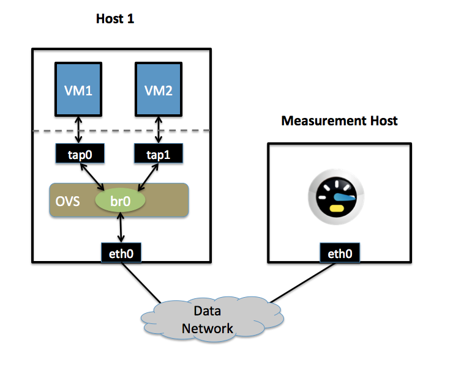
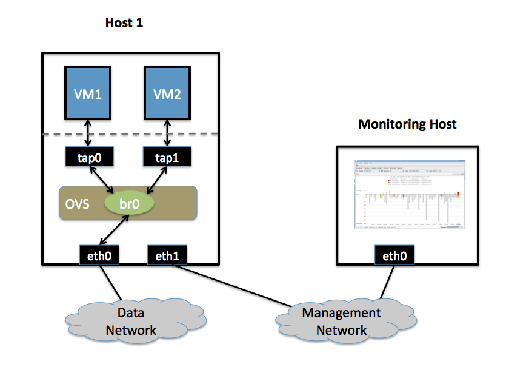

Open vSwitch Documentation Contents¶
Open vSwitch Documentation¶
How the Documentation is Organised¶
The Open vSwitch documentation is organised into multiple sections:
- Installation guides guide you through installing Open vSwitch (OVS) and Open Virtual Network (OVN) on a variety of different platforms
- Tutorials take you through a series of steps to configure OVS and OVN in sandboxed environments
- Topic guides provide a high level overview of OVS and OVN internals and operation
- How-to guides are recipes or use-cases for OVS and OVN. They are more advanced than the tutorials.
- Frequently Asked Questions provide general insight into a variety of topics related to configuration and operation of OVS and OVN.
First Steps¶
Getting started with Open vSwitch (OVS) or Open Virtual Network (OVN) for Open vSwitch? Start here.
Deeper Dive¶
- Architecture Design Decisions In Open vSwitch | OpenFlow Support in Open vSwitch | Integration Guide for Centralized Control | Porting Open vSwitch to New Software or Hardware
- DPDK Using Open vSwitch with DPDK | DPDK vHost User Ports
- Windows OVS-on-Hyper-V Design
- Integrations: Language Bindings
- Reference Guides: Reference Guide
- Testing Testing
- Packaging: Debian Packaging for Open vSwitch | RHEL 5.6, 6.x Packaging for Open vSwitch | Fedora, RHEL 7.x Packaging for Open vSwitch
The Open vSwitch Project¶
Learn more about the Open vSwitch project and about how you can contribute:
- Community: Open vSwitch Release Process | Authors | Mailing Lists | Patchwork | Reporting Bugs in Open vSwitch | Open vSwitch’s Security Process
- Contributing: Submitting Patches | Open vSwitch Coding Style | Open vSwitch Windows Datapath Coding Style
- Maintaining: Committers | Expectations for Developers with Open vSwitch Repo Access | OVS Committer Grant/Revocation Policy
- Documentation: Open vSwitch Documentation Style | Building Open vSwitch Documentation
Getting Help¶
- Seeing an issue of potential bug? Report problems to bugs@openvswitch.org
- Looking for specific information? Try the Index, Module Index or the detailed table of contents.
Getting Started¶
How to get started with Open vSwitch.
What Is Open vSwitch?¶

Overview¶
Open vSwitch is a multilayer software switch licensed under the open source Apache 2 license. Our goal is to implement a production quality switch platform that supports standard management interfaces and opens the forwarding functions to programmatic extension and control.
Open vSwitch is well suited to function as a virtual switch in VM environments. In addition to exposing standard control and visibility interfaces to the virtual networking layer, it was designed to support distribution across multiple physical servers. Open vSwitch supports multiple Linux-based virtualization technologies including Xen/XenServer, KVM, and VirtualBox.
The bulk of the code is written in platform-independent C and is easily ported to other environments. The current release of Open vSwitch supports the following features:
- Standard 802.1Q VLAN model with trunk and access ports
- NIC bonding with or without LACP on upstream switch
- NetFlow, sFlow(R), and mirroring for increased visibility
- QoS (Quality of Service) configuration, plus policing
- Geneve, GRE, VXLAN, STT, and LISP tunneling
- 802.1ag connectivity fault management
- OpenFlow 1.0 plus numerous extensions
- Transactional configuration database with C and Python bindings
- High-performance forwarding using a Linux kernel module
The included Linux kernel module supports Linux 3.10 and up.
Open vSwitch can also operate entirely in userspace without assistance from a kernel module. This userspace implementation should be easier to port than the kernel-based switch. OVS in userspace can access Linux or DPDK devices. Note Open vSwitch with Linux devices in userspace is considered experimental and comes with a cost in performance.
What’s here?¶
The main components of this distribution are:
- ovs-vswitchd, a daemon that implements the switch, along with a companion Linux kernel module for flow-based switching.
- ovsdb-server, a lightweight database server that ovs-vswitchd queries to obtain its configuration.
- ovs-dpctl, a tool for configuring the switch kernel module.
- Scripts and specs for building RPMs for Citrix XenServer and Red Hat Enterprise Linux. The XenServer RPMs allow Open vSwitch to be installed on a Citrix XenServer host as a drop-in replacement for its switch, with additional functionality.
- ovs-vsctl, a utility for querying and updating the configuration of ovs-vswitchd.
- ovs-appctl, a utility that sends commands to running Open vSwitch daemons.
Open vSwitch also provides some tools:
- ovs-ofctl, a utility for querying and controlling OpenFlow switches and controllers.
- ovs-pki, a utility for creating and managing the public-key infrastructure for OpenFlow switches.
- ovs-testcontroller, a simple OpenFlow controller that may be useful for
Why Open vSwitch?¶
Hypervisors need the ability to bridge traffic between VMs and with the outside world. On Linux-based hypervisors, this used to mean using the built-in L2 switch (the Linux bridge), which is fast and reliable. So, it is reasonable to ask why Open vSwitch is used.
The answer is that Open vSwitch is targeted at multi-server virtualization deployments, a landscape for which the previous stack is not well suited. These environments are often characterized by highly dynamic end-points, the maintenance of logical abstractions, and (sometimes) integration with or offloading to special purpose switching hardware.
The following characteristics and design considerations help Open vSwitch cope with the above requirements.
The mobility of state¶
All network state associated with a network entity (say a virtual machine) should be easily identifiable and migratable between different hosts. This may include traditional “soft state” (such as an entry in an L2 learning table), L3 forwarding state, policy routing state, ACLs, QoS policy, monitoring configuration (e.g. NetFlow, IPFIX, sFlow), etc.
Open vSwitch has support for both configuring and migrating both slow (configuration) and fast network state between instances. For example, if a VM migrates between end-hosts, it is possible to not only migrate associated configuration (SPAN rules, ACLs, QoS) but any live network state (including, for example, existing state which may be difficult to reconstruct). Further, Open vSwitch state is typed and backed by a real data-model allowing for the development of structured automation systems.
Responding to network dynamics¶
Virtual environments are often characterized by high-rates of change. VMs coming and going, VMs moving backwards and forwards in time, changes to the logical network environments, and so forth.
Open vSwitch supports a number of features that allow a network control system to respond and adapt as the environment changes. This includes simple accounting and visibility support such as NetFlow, IPFIX, and sFlow. But perhaps more useful, Open vSwitch supports a network state database (OVSDB) that supports remote triggers. Therefore, a piece of orchestration software can “watch” various aspects of the network and respond if/when they change. This is used heavily today, for example, to respond to and track VM migrations.
Open vSwitch also supports OpenFlow as a method of exporting remote access to control traffic. There are a number of uses for this including global network discovery through inspection of discovery or link-state traffic (e.g. LLDP, CDP, OSPF, etc.).
Maintenance of logical tags¶
Distributed virtual switches (such as VMware vDS and Cisco’s Nexus 1000V) often maintain logical context within the network through appending or manipulating tags in network packets. This can be used to uniquely identify a VM (in a manner resistant to hardware spoofing), or to hold some other context that is only relevant in the logical domain. Much of the problem of building a distributed virtual switch is to efficiently and correctly manage these tags.
Open vSwitch includes multiple methods for specifying and maintaining tagging rules, all of which are accessible to a remote process for orchestration. Further, in many cases these tagging rules are stored in an optimized form so they don’t have to be coupled with a heavyweight network device. This allows, for example, thousands of tagging or address remapping rules to be configured, changed, and migrated.
In a similar vein, Open vSwitch supports a GRE implementation that can handle thousands of simultaneous GRE tunnels and supports remote configuration for tunnel creation, configuration, and tear-down. This, for example, can be used to connect private VM networks in different data centers.
Hardware integration¶
Open vSwitch’s forwarding path (the in-kernel datapath) is designed to be amenable to “offloading” packet processing to hardware chipsets, whether housed in a classic hardware switch chassis or in an end-host NIC. This allows for the Open vSwitch control path to be able to both control a pure software implementation or a hardware switch.
There are many ongoing efforts to port Open vSwitch to hardware chipsets. These include multiple merchant silicon chipsets (Broadcom and Marvell), as well as a number of vendor-specific platforms. The “Porting” section in the documentation discusses how one would go about making such a port.
The advantage of hardware integration is not only performance within virtualized environments. If physical switches also expose the Open vSwitch control abstractions, both bare-metal and virtualized hosting environments can be managed using the same mechanism for automated network control.
Summary¶
In many ways, Open vSwitch targets a different point in the design space than previous hypervisor networking stacks, focusing on the need for automated and dynamic network control in large-scale Linux-based virtualization environments.
The goal with Open vSwitch is to keep the in-kernel code as small as possible (as is necessary for performance) and to re-use existing subsystems when applicable (for example Open vSwitch uses the existing QoS stack). As of Linux 3.3, Open vSwitch is included as a part of the kernel and packaging for the userspace utilities are available on most popular distributions.
Installing Open vSwitch¶
A collection of guides detailing how to install Open vSwitch in a variety of different environments and using different configurations.
Installation from Source¶
Open vSwitch on Linux, FreeBSD and NetBSD¶
This document describes how to build and install Open vSwitch on a generic Linux, FreeBSD, or NetBSD host. For specifics around installation on a specific platform, refer to one of the other installation guides listed in Installing Open vSwitch.
Build Requirements¶
To compile the userspace programs in the Open vSwitch distribution, you will need the following software:
GNU make
A C compiler, such as:
- GCC 4.x.
- Clang. Clang 3.4 and later provide useful static semantic analysis and thread-safety checks. For Ubuntu, there are nightly built packages available on clang’s website.
- MSVC 2013. Refer to Open vSwitch on Windows for additional Windows build instructions.
While OVS may be compatible with other compilers, optimal support for atomic operations may be missing, making OVS very slow (see
lib/ovs-atomic.h).libssl, from OpenSSL, is optional but recommended if you plan to connect the Open vSwitch to an OpenFlow controller. libssl is required to establish confidentiality and authenticity in the connections from an Open vSwitch to an OpenFlow controller. If libssl is installed, then Open vSwitch will automatically build with support for it.
libcap-ng, written by Steve Grubb, is optional but recommended. It is required to run OVS daemons as a non-root user with dropped root privileges. If libcap-ng is installed, then Open vSwitch will automatically build with support for it.
Python 2.7. You must also have the Python
sixlibrary.
On Linux, you may choose to compile the kernel module that comes with the Open vSwitch distribution or to use the kernel module built into the Linux kernel (version 3.3 or later). See the Open vSwitch FAQ question “What features are not available in the Open vSwitch kernel datapath that ships as part of the upstream Linux kernel?” for more information on this trade-off. You may also use the userspace-only implementation, at some cost in features and performance. Refer to Open vSwitch without Kernel Support for details.
To compile the kernel module on Linux, you must also install the following:
A supported Linux kernel version.
For optional support of ingress policing, you must enable kernel configuration options
NET_CLS_BASIC,NET_SCH_INGRESS, andNET_ACT_POLICE, either built-in or as modules.NET_CLS_POLICEis obsolete and not needed.)On kernels before 3.11, the
ip_gremodule, for GRE tunnels over IP (NET_IPGRE), must not be loaded or compiled in.To configure HTB or HFSC quality of service with Open vSwitch, you must enable the respective configuration options.
To use Open vSwitch support for TAP devices, you must enable
CONFIG_TUN.To build a kernel module, you need the same version of GCC that was used to build that kernel.
A kernel build directory corresponding to the Linux kernel image the module is to run on. Under Debian and Ubuntu, for example, each linux-image package containing a kernel binary has a corresponding linux-headers package with the required build infrastructure.
If you are working from a Git tree or snapshot (instead of from a distribution tarball), or if you modify the Open vSwitch build system or the database schema, you will also need the following software:
- Autoconf version 2.63 or later.
- Automake version 1.10 or later.
- libtool version 2.4 or later. (Older versions might work too.)
To run the unit tests, you also need:
- Perl. Version 5.10.1 is known to work. Earlier versions should also work.
The datapath tests for userspace and Linux datapaths also rely upon:
- pyftpdlib. Version 1.2.0 is known to work. Earlier versions should also work.
- GNU wget. Version 1.16 is known to work. Earlier versions should also work.
- netcat. Several common implementations are known to work.
- curl. Version 7.47.0 is known to work. Earlier versions should also work.
- tftpy. Version 0.6.2 is known to work. Earlier versions should also work.
The ovs-vswitchd.conf.db(5) manpage will include an E-R diagram, in formats other than plain text, only if you have the following:
- dot from graphviz (http://www.graphviz.org/).
- Perl. Version 5.10.1 is known to work. Earlier versions should also work.
If you are going to extensively modify Open vSwitch, consider installing the following to obtain better warnings:
- “sparse” version 0.4.4 or later (https://www.kernel.org/pub/software/devel/sparse/dist/).
- GNU make.
- clang, version 3.4 or later
- flake8 along with the hacking flake8 plugin (for Python code). The automatic flake8 check that runs against Python code has some warnings enabled that come from the “hacking” flake8 plugin. If it’s not installed, the warnings just won’t occur until it’s run on a system with “hacking” installed.
You may find the ovs-dev script found in utilities/ovs-dev.py useful.
Installation Requirements¶
The machine you build Open vSwitch on may not be the one you run it on. To simply install and run Open vSwitch you require the following software:
- libc compatible with the libc used for build.
- libssl compatible with the libssl used for build, if OpenSSL was used for the build.
- On Linux, the same kernel version configured as part of the build.
- For optional support of ingress policing on Linux, the “tc” program from iproute2 (part of all major distributions and available at https://wiki.linuxfoundation.org/networking/iproute2).
- Python 2.7. You must also have the Python six library.
On Linux you should ensure that /dev/urandom exists. To support TAP
devices, you must also ensure that /dev/net/tun exists.
Bootstrapping¶
This step is not needed if you have downloaded a released tarball. If you pulled the sources directly from an Open vSwitch Git tree or got a Git tree snapshot, then run boot.sh in the top source directory to build the “configure” script:
$ ./boot.sh
Configuring¶
Configure the package by running the configure script. You can usually invoke configure without any arguments. For example:
$ ./configure
By default all files are installed under /usr/local. Open vSwitch also
expects to find its database in /usr/local/etc/openvswitch by default. If
you want to install all files into, e.g., /usr and /var instead of
/usr/local and /usr/local/var and expect to use /etc/openvswitch as
the default database directory, add options as shown here:
$ ./configure --prefix=/usr --localstatedir=/var --sysconfdir=/etc
Note
Open vSwitch installed with packages like .rpm (e.g. via yum install or
rpm -ivh) and .deb (e.g. via apt-get install or dpkg -i) use the
above configure options.
By default, static libraries are built and linked against. If you want to use shared libraries instead:
$ ./configure --enable-shared
To use a specific C compiler for compiling Open vSwitch user programs, also specify it on the configure command line, like so:
$ ./configure CC=gcc-4.2
To use ‘clang’ compiler:
$ ./configure CC=clang
To supply special flags to the C compiler, specify them as CFLAGS on the
configure command line. If you want the default CFLAGS, which include -g to
build debug symbols and -O2 to enable optimizations, you must include them
yourself. For example, to build with the default CFLAGS plus -mssse3, you
might run configure as follows:
$ ./configure CFLAGS="-g -O2 -mssse3"
For efficient hash computation special flags can be passed to leverage built-in
intrinsics. For example on X86_64 with SSE4.2 instruction set support, CRC32
intrinsics can be used by passing -msse4.2:
$ ./configure CFLAGS="-g -O2 -msse4.2"`
If you are on a different processor and don’t know what flags to choose, it is
recommended to use -march=native settings:
$ ./configure CFLAGS="-g -O2 -march=native"
With this, GCC will detect the processor and automatically set appropriate flags for it. This should not be used if you are compiling OVS outside the target machine.
Note
CFLAGS are not applied when building the Linux kernel module. Custom CFLAGS
for the kernel module are supplied using the EXTRA_CFLAGS variable when
running make. For example:
$ make EXTRA_CFLAGS="-Wno-error=date-time"
To build the Linux kernel module, so that you can run the kernel-based switch,
pass the location of the kernel build directory on --with-linux. For
example, to build for a running instance of Linux:
$ ./configure --with-linux=/lib/modules/$(uname -r)/build
Note
If --with-linux requests building for an unsupported version of Linux,
then configure will fail with an error message. Refer to the
Open vSwitch FAQ for advice in that case.
If you wish to build the kernel module for an architecture other than the architecture of the machine used for the build, you may specify the kernel architecture string using the KARCH variable when invoking the configure script. For example, to build for MIPS with Linux:
$ ./configure --with-linux=/path/to/linux KARCH=mips
If you plan to do much Open vSwitch development, you might want to add
--enable-Werror, which adds the -Werror option to the compiler command
line, turning warnings into errors. That makes it impossible to miss warnings
generated by the build. For example:
$ ./configure --enable-Werror
To build with gcov code coverage support, add --enable-coverage:
$ ./configure --enable-coverage
The configure script accepts a number of other options and honors additional
environment variables. For a full list, invoke configure with the --help
option:
$ ./configure --help
You can also run configure from a separate build directory. This is helpful if you want to build Open vSwitch in more than one way from a single source directory, e.g. to try out both GCC and Clang builds, or to build kernel modules for more than one Linux version. For example:
$ mkdir _gcc && (cd _gcc && ./configure CC=gcc)
$ mkdir _clang && (cd _clang && ./configure CC=clang)
Under certains loads the ovsdb-server and other components perform better when using the jemalloc memory allocator, instead of the glibc memory allocator. If you wish to link with jemalloc add it to LIBS:
$ ./configure LIBS=-ljemalloc
Building¶
Run GNU make in the build directory, e.g.:
$ make
or if GNU make is installed as “gmake”:
$ gmake
If you used a separate build directory, run make or gmake from that directory, e.g.:
$ make -C _gcc $ make -C _clang
For improved warnings if you installed
sparse(see “Prerequisites”), addC=1to the command line.Note
Some versions of Clang and ccache are not completely compatible. If you see unusual warnings when you use both together, consider disabling ccache.
Consider running the testsuite. Refer to Testing for instructions.
Run
make installto install the executables and manpages into the running system, by default under/usr/local:$ make install
If you built kernel modules, you may install them, e.g.:
$ make modules_install
It is possible that you already had a Open vSwitch kernel module installed on your machine that came from upstream Linux (in a different directory). To make sure that you load the Open vSwitch kernel module you built from this repository, you should create a
depmod.dfile that prefers your newly installed kernel modules over the kernel modules from upstream Linux. The following snippet of code achieves the same:$ config_file="/etc/depmod.d/openvswitch.conf" $ for module in datapath/linux/*.ko; do modname="$(basename ${module})" echo "override ${modname%.ko} * extra" >> "$config_file" echo "override ${modname%.ko} * weak-updates" >> "$config_file" done $ depmod -aFinally, load the kernel modules that you need. e.g.:
$ /sbin/modprobe openvswitch
To verify that the modules have been loaded, run
/sbin/lsmodand check that openvswitch is listed:$ /sbin/lsmod | grep openvswitch
Note
If the
modprobeoperation fails, look at the last few kernel log messages (e.g. withdmesg | tail). Generally, issues like this occur when Open vSwitch is built for a kernel different from the one into which you are trying to load it. Runmodinfoonopenvswitch.koand on a module built for the running kernel, e.g.:$ /sbin/modinfo openvswitch.ko $ /sbin/modinfo /lib/modules/$(uname -r)/kernel/net/bridge/bridge.ko
Compare the “vermagic” lines output by the two commands. If they differ, then Open vSwitch was built for the wrong kernel.
If you decide to report a bug or ask a question related to module loading, include the output from the
dmesgandmodinfocommands mentioned above.
Starting¶
Before starting ovs-vswitchd itself, you need to start its configuration database, ovsdb-server. Each machine on which Open vSwitch is installed should run its own copy of ovsdb-server. Before ovsdb-server itself can be started, configure a database that it can use:
$ mkdir -p /usr/local/etc/openvswitch
$ ovsdb-tool create /usr/local/etc/openvswitch/conf.db \
vswitchd/vswitch.ovsschema
Configure ovsdb-server to use database created above, to listen on a Unix domain socket, to connect to any managers specified in the database itself, and to use the SSL configuration in the database:
$ mkdir -p /usr/local/var/run/openvswitch
$ ovsdb-server --remote=punix:/usr/local/var/run/openvswitch/db.sock \
--remote=db:Open_vSwitch,Open_vSwitch,manager_options \
--private-key=db:Open_vSwitch,SSL,private_key \
--certificate=db:Open_vSwitch,SSL,certificate \
--bootstrap-ca-cert=db:Open_vSwitch,SSL,ca_cert \
--pidfile --detach --log-file
Note
If you built Open vSwitch without SSL support, then omit --private-key,
--certificate, and --bootstrap-ca-cert.)
Initialize the database using ovs-vsctl. This is only necessary the first time after you create the database with ovsdb-tool, though running it at any time is harmless:
$ ovs-vsctl --no-wait init
Start the main Open vSwitch daemon, telling it to connect to the same Unix domain socket:
$ ovs-vswitchd --pidfile --detach --log-file
Validating¶
At this point you can use ovs-vsctl to set up bridges and other Open vSwitch
features. For example, to create a bridge named br0 and add ports eth0
and vif1.0 to it:
$ ovs-vsctl add-br br0
$ ovs-vsctl add-port br0 eth0
$ ovs-vsctl add-port br0 vif1.0
Refer to ovs-vsctl(8) for more details. You may also wish to refer to Testing for information on more generic testing of OVS.
Upgrading¶
When you upgrade Open vSwitch from one version to another you should also upgrade the database schema:
Stop the Open vSwitch daemons, e.g.:
$ kill `cd /usr/local/var/run/openvswitch && cat ovsdb-server.pid ovs-vswitchd.pid`
Install the new Open vSwitch release by using the same configure options as was used for installing the previous version. If you do not use the same configure options, you can end up with two different versions of Open vSwitch executables installed in different locations.
Upgrade the database, in one of the following two ways:
If there is no important data in your database, then you may delete the database file and recreate it with ovsdb-tool, following the instructions under “Building and Installing Open vSwitch for Linux, FreeBSD or NetBSD”.
If you want to preserve the contents of your database, back it up first, then use
ovsdb-tool convertto upgrade it, e.g.:$ ovsdb-tool convert /usr/local/etc/openvswitch/conf.db \ vswitchd/vswitch.ovsschema
Start the Open vSwitch daemons as described under Starting above.
Hot Upgrading¶
Upgrading Open vSwitch from one version to the next version with minimum disruption of traffic going through the system that is using that Open vSwitch needs some considerations:
- If the upgrade only involves upgrading the userspace utilities and daemons of Open vSwitch, make sure that the new userspace version is compatible with the previously loaded kernel module.
- An upgrade of userspace daemons means that they have to be restarted. Restarting the daemons means that the OpenFlow flows in the ovs-vswitchd daemon will be lost. One way to restore the flows is to let the controller re-populate it. Another way is to save the previous flows using a utility like ovs-ofctl and then re-add them after the restart. Restoring the old flows is accurate only if the new Open vSwitch interfaces retain the old ‘ofport’ values.
- When the new userspace daemons get restarted, they automatically flush the
old flows setup in the kernel. This can be expensive if there are hundreds
of new flows that are entering the kernel but userspace daemons are busy
setting up new userspace flows from either the controller or an utility like
ovs-ofctl. Open vSwitch database provides an option to solve this problem
through the
other_config:flow-restore-waitcolumn of theOpen_vSwitchtable. Refer to the ovs-vswitchd.conf.db(5) manpage for details. - If the upgrade also involves upgrading the kernel module, the old kernel module needs to be unloaded and the new kernel module should be loaded. This means that the kernel network devices belonging to Open vSwitch is recreated and the kernel flows are lost. The downtime of the traffic can be reduced if the userspace daemons are restarted immediately and the userspace flows are restored as soon as possible.
The ovs-ctl utility’s restart function only restarts the userspace daemons,
makes sure that the ‘ofport’ values remain consistent across restarts, restores
userspace flows using the ovs-ofctl utility and also uses the
other_config:flow-restore-wait column to keep the traffic downtime to the
minimum. The ovs-ctl utility’s force-reload-kmod function does all of the
above, but also replaces the old kernel module with the new one. Open vSwitch
startup scripts for Debian, XenServer and RHEL use ovs-ctl’s functions and it
is recommended that these functions be used for other software platforms too.
Reporting Bugs¶
Report problems to bugs@openvswitch.org.
Open vSwitch on NetBSD¶
On NetBSD, you might want to install requirements from pkgsrc. In that case, you need at least the following packages.
- automake
- libtool-base
- gmake
- python27
- py27-six
- py27-xml
- pkg_alternatives
Some components have additional requirements. Refer to Open vSwitch on Linux, FreeBSD and NetBSD for more information.
Assuming you are running NetBSD/amd64 6.1.2, you can download and install pre-built binary packages as the following:
$ PKG_PATH=http://ftp.netbsd.org/pub/pkgsrc/packages/NetBSD/amd64/7.0.2/All/
$ export PKG_PATH
$ pkg_add automake libtool-base gmake python27 py27-six py27-xml \
pkg_alternatives
Note
You might get some warnings about minor version mismatch. These can be safely ignored.
NetBSD’s /usr/bin/make is not GNU make. GNU make is installed as
/usr/pkg/bin/gmake by the above mentioned gmake package.
As all executables installed with pkgsrc are placed in /usr/pkg/bin/
directory, it might be a good idea to add it to your PATH. Or install ovs by
gmake and gmake install.
Open vSwitch on NetBSD is currently “userspace switch” implementation in the sense described in Open vSwitch without Kernel Support and Porting Open vSwitch to New Software or Hardware.
Open vSwitch on Windows¶
Build Requirements¶
Open vSwitch on Linux uses autoconf and automake for generating Makefiles. It will be useful to maintain the same build system while compiling on Windows too. One approach is to compile Open vSwitch in a MinGW environment that contains autoconf and automake utilities and then use Visual C++ as a compiler and linker.
The following explains the steps in some detail.
Mingw
Install Mingw on a Windows machine by following the instructions on mingw.org.
This should install mingw at
C:\Mingwand msys atC:\Mingw\msys. AddC:\MinGW\binandC:\Mingw\msys\1.0\binto PATH environment variable of Windows.You can either use the MinGW installer or the command line utility
mingw-getto install both the base packages and additional packages like automake and autoconf(version 2.68).Also make sure that
/mingwmount point exists. If its not, please add/create the following entry in/etc/fstab:'C:/MinGW /mingw'.
Python
Install the latest Python 2.x from python.org and verify that its path is part of Windows’ PATH environment variable. We require that you have Python six and pypiwin32 libraries installed. The libraries can be installed via pip command:
$ pip install six $ pip install pypiwin32
Visual Studio
You will need at least Visual Studio 2013 (update 4) to compile userspace binaries. In addition to that, if you want to compile the kernel module you will also need to install Windows Driver Kit (WDK) 8.1 Update.
It is important to get the Visual Studio related environment variables and to have the $PATH inside the bash to point to the proper compiler and linker. One easy way to achieve this for VS2013 is to get into the “VS2013 x86 Native Tools Command Prompt” (in a default installation of Visual Studio 2013 this can be found under the following location:
C:\Program Files (x86)\Microsoft Visual Studio 12.0\Common7\Tools\Shortcuts) and through it enter into the bash shell available from msys by typingbash --login.There is support for generating 64 bit binaries too. To compile under x64, open the “VS2013 x64 Native Tools Command Prompt” (if your current running OS is 64 bit) or “VS2013 x64 Cross Tools Command Prompt” (if your current running OS is not 64 bit) instead of opening its x86 variant. This will point the compiler and the linker to their 64 bit equivalent.
If after the above step, a
which linkinside MSYS’s bash says,/bin/link.exe, rename/bin/link.exeto something else so that the Visual studio’s linker is used. You should also see a ‘which sort’ report/bin/sort.exe.pthreads-win32
For pthread support, install the library, dll and includes of pthreads-win32 project from sourceware to a directory (e.g.:
C:/pthread). You should add the pthread-win32’s dll path (e.g.:C:\pthread\dll\x86) to the Windows’ PATH environment variable.OpenSSL
To get SSL support for Open vSwitch on Windows, you will need to install OpenSSL for Windows
Note down the directory where OpenSSL is installed (e.g.:
C:/OpenSSL-Win32) for later use.
Note
Commands prefixed by $ must be run in the Bash shell provided by MinGW.
Open vSwitch commands, such as ovs-dpctl are shown running under the DOS
shell (cmd.exe), as indicated by the > prefix, but will also run
under Bash. The remainder, prefixed by >, are PowerShell commands and
must be run in PowerShell.
Install Requirements¶
Share network adaptors
We require that you don’t disable the “Allow management operating system to share this network adapter” under ‘Virtual Switch Properties’ > ‘Connection type: External network’, in the HyperV virtual network switch configuration.
Checksum Offloads
While there is some support for checksum/segmentation offloads in software, this is still a work in progress. Till the support is complete we recommend disabling TX/RX offloads for both the VM’s as well as the HyperV.
Bootstrapping¶
This step is not needed if you have downloaded a released tarball. If you pulled the sources directly from an Open vSwitch Git tree or got a Git tree snapshot, then run boot.sh in the top source directory to build the “configure” script:
$ ./boot.sh
Configuring¶
Configure the package by running the configure script. You should provide some configure options to choose the right compiler, linker, libraries, Open vSwitch component installation directories, etc. For example:
$ ./configure CC=./build-aux/cccl LD="$(which link)" \
LIBS="-lws2_32 -liphlpapi -lwbemuuid -lole32 -loleaut32" \
--prefix="C:/openvswitch/usr" \
--localstatedir="C:/openvswitch/var" \
--sysconfdir="C:/openvswitch/etc" \
--with-pthread="C:/pthread"
Note
By default, the above enables compiler optimization for fast code. For
default compiler optimization, pass the --with-debug configure option.
To configure with SSL support, add the requisite additional options:
$ ./configure CC=./build-aux/cccl LD="`which link`" \
LIBS="-lws2_32 -liphlpapi -lwbemuuid -lole32 -loleaut32" \
--prefix="C:/openvswitch/usr" \
--localstatedir="C:/openvswitch/var"
--sysconfdir="C:/openvswitch/etc" \
--with-pthread="C:/pthread" \
--enable-ssl --with-openssl="C:/OpenSSL-Win32"
Finally, to the kernel module also:
$ ./configure CC=./build-aux/cccl LD="`which link`" \
LIBS="-lws2_32 -liphlpapi -lwbemuuid -lole32 -loleaut32" \
--prefix="C:/openvswitch/usr" \
--localstatedir="C:/openvswitch/var" \
--sysconfdir="C:/openvswitch/etc" \
--with-pthread="C:/pthread" \
--enable-ssl --with-openssl="C:/OpenSSL-Win32" \
--with-vstudiotarget="<target type>"
Possible values for <target type> are: Debug and Release
Note
You can directly use the Visual Studio 2013 IDE to compile the kernel datapath. Open the ovsext.sln file in the IDE and build the solution.
Refer to Open vSwitch on Linux, FreeBSD and NetBSD for information on additional configuration options.
Building¶
Once correctly configured, building Open vSwitch on Windows is similar to building on Linux, FreeBSD, or NetBSD.
Run make for the ported executables in the top source directory, e.g.:
$ makeFor faster compilation, you can pass the
-jargument to make. For example, to run 4 jobs simultaneously, runmake -j4.Note
MSYS 1.0.18 has a bug that causes parallel make to hang. You can overcome this by downgrading to MSYS 1.0.17. A simple way to downgrade is to exit all MinGW sessions and then run the below command from MSVC developers command prompt.:
> mingw-get upgrade msys-core-bin=1.0.17-1To run all the unit tests in Open vSwitch, one at a time:
$ make checkTo run all the unit tests in Open vSwitch, up to 8 in parallel:
$ make check TESTSUITEFLAGS="-j8"
To install all the compiled executables on the local machine, run:
$ make install
Note
This will install the Open vSwitch executables in
C:/openvswitch. You can addC:\openvswitch\usr\binandC:\openvswitch\usr\sbinto Windows’ PATH environment variable for easy access.
If you are building the kernel module, you will need to copy the below files to the target Hyper-V machine.
./datapath-windows/x64/Win8.1Debug/package/ovsext.inf./datapath-windows/x64/Win8.1Debug/package/OVSExt.sys./datapath-windows/x64/Win8.1Debug/package/ovsext.cat./datapath-windows/misc/install.cmd./datapath-windows/misc/uninstall.cmd
Note
The above path assumes that the kernel module has been built using Windows DDK 8.1 in Debug mode. Change the path appropriately, if a different WDK has been used.
Now run ./uninstall.cmd to remove the old extension. Once complete, run
./install.cmd to insert the new one. For this to work you will have to
turn on TESTSIGNING boot option or ‘Disable Driver Signature
Enforcement’ during boot. The following commands can be used:
> bcdedit /set LOADOPTIONS DISABLE_INTEGRITY_CHECKS
> bcdedit /set TESTSIGNING ON
> bcdedit /set nointegritychecks ON
Note
You may have to restart the machine for the settings to take effect.
In the Virtual Switch Manager configuration you can enable the Open vSwitch Extension on an existing switch or create a new switch. If you are using an existing switch, make sure to enable the “Allow Management OS” option for VXLAN to work (covered later).
The command to create a new switch named ‘OVS-Extended-Switch’ using a physical NIC named ‘Ethernet 1’ is:
PS > New-VMSwitch "OVS-Extended-Switch" -NetAdapterName "Ethernet 1"
Note
You can obtain the list of physical NICs on the host using ‘Get-NetAdapter’ command.
In the properties of any switch, you should should now see “Open vSwitch Extension” under ‘Extensions’. Click the check box to enable the extension. An alternative way to do the same is to run the following command:
PS > Enable-VMSwitchExtension "Open vSwitch Extension" OVS-Extended-Switch
Note
If you enabled the extension using the command line, a delay of a few seconds has been observed for the change to be reflected in the UI. This is not a bug in Open vSwitch.
Starting¶
Important
The following steps assume that you have installed the Open vSwitch utilities in the local machine via ‘make install’.
Before starting ovs-vswitchd itself, you need to start its configuration database, ovsdb-server. Each machine on which Open vSwitch is installed should run its own copy of ovsdb-server. Before ovsdb-server itself can be started, configure a database that it can use:
> ovsdb-tool create C:\openvswitch\etc\openvswitch\conf.db \
C:\openvswitch\usr\share\openvswitch\vswitch.ovsschema
Configure ovsdb-server to use database created above and to listen on a Unix domain socket:
> ovsdb-server -vfile:info --remote=punix:db.sock --log-file \
--pidfile --detach
Note
The logfile is created at C:/openvswitch/var/log/openvswitch/
Initialize the database using ovs-vsctl. This is only necessary the first time after you create the database with ovsdb-tool, though running it at any time is harmless:
> ovs-vsctl --no-wait init
Tip
If you would later like to terminate the started ovsdb-server, run:
> ovs-appctl -t ovsdb-server exit
Start the main Open vSwitch daemon, telling it to connect to the same Unix domain socket:
> ovs-vswitchd -vfile:info --log-file --pidfile --detach
Tip
If you would like to terminate the started ovs-vswitchd, run:
> ovs-appctl exit
Note
The logfile is created at C:/openvswitch/var/log/openvswitch/
Validating¶
At this point you can use ovs-vsctl to set up bridges and other Open vSwitch features.
Let’s start by creating an integration bridge, br-int and a PIF bridge,
br-pif:
> ovs-vsctl add-br br-int
> ovs-vsctl add-br br-pif
Note
There’s a known bug that running the ovs-vsctl command does not terminate. This is generally solved by having ovs-vswitchd running. If you face the issue despite that, hit Ctrl-C to terminate ovs-vsctl and check the output to see if your command succeeded.
Validate that ports are added by dumping from both ovs-dpctl and ovs-vsctl:
> ovs-dpctl show
system@ovs-system:
lookups: hit:0 missed:0 lost:0
flows: 0
port 2: br-pif (internal) <<< internal port on 'br-pif' bridge
port 1: br-int (internal) <<< internal port on 'br-int' bridge
> ovs-vsctl show
a56ec7b5-5b1f-49ec-a795-79f6eb63228b
Bridge br-pif
Port br-pif
Interface br-pif
type: internal
Bridge br-int
Port br-int
Interface br-int
type: internal
Note
There’s a known bug that the ports added to OVSDB via ovs-vsctl don’t get to
the kernel datapath immediately, ie. they don’t show up in the output of
ovs-dpctl show even though they show up in output of ovs-vsctl show.
In order to workaround this issue, restart ovs-vswitchd. (You can terminate
ovs-vswitchd by running ovs-appctl exit.)
Now, let’s add the physical NIC and the internal port to br-pif. In OVS for
Hyper-V, we use the name of the adapter on top of which the Hyper-V virtual
switch was created, as a special name to refer to the physical NICs connected
to the Hyper-V switch, e.g. if we created the Hyper-V virtual switch on top of
the adapter named Ethernet0, then in OVS we use that name (Ethernet0)
as a special name to refer to that adapter.
Note
We assume that the OVS extension is enabled Hyper-V switch.
Internal ports are the virtual adapters created on the Hyper-V switch using the
ovs-vsctl add-br <bridge> command. By default they are created under the
following rule “<name of bridge>” and the adapters are disabled. One needs to
enable them and set the corresponding values to it to make them IP-able.
As a whole example, if we issue the following in a powershell console:
PS > Get-NetAdapter | select Name,InterfaceDescription
Name InterfaceDescription
---- --------------------
Ethernet1 Intel(R) PRO/1000 MT Network Connection
br-pif Hyper-V Virtual Ethernet Adapter #2
Ethernet0 Intel(R) PRO/1000 MT Network Connection #2
br-int Hyper-V Virtual Ethernet Adapter #3
PS > Get-VMSwitch
Name SwitchType NetAdapterInterfaceDescription
---- ---------- ------------------------------
external External Intel(R) PRO/1000 MT Network Connection #2
We can see that we have a switch(external) created upon adapter name ‘Ethernet0’ with the internal ports under name ‘br-pif’ and ‘br-int’. Thus resulting into the following ovs-vsctl commands:
> ovs-vsctl add-port br-pif Ethernet0
Dumping the ports should show the additional ports that were just added:
> ovs-dpctl show
system@ovs-system:
lookups: hit:0 missed:0 lost:0
flows: 0
port 2: br-pif (internal) <<< internal port
adapter on
Hyper-V switch
port 1: br-int (internal) <<< internal port
adapter on
Hyper-V switch
port 3: Ethernet0 <<< Physical NIC
> ovs-vsctl show
a56ec7b5-5b1f-49ec-a795-79f6eb63228b
Bridge br-pif
Port br-pif
Interface br-pif
type: internal
Port "Ethernet0"
Interface "Ethernet0"
Bridge br-int
Port br-int
Interface br-int
type: internal
Adding VIFs to openvswitch is a two step procedure. The first step is to assign a ‘OVS port name’ which is a unique name across all VIFs on this Hyper-V. The next step is to add the VIF to the ovsdb using its ‘OVS port name’ as key.
First, assign a unique ‘OVS port name’ to the VIF. The VIF needs to have been
disconnected from the Hyper-V switch before assigning a ‘OVS port name’ to it.
In the example below, we assign a ‘OVS port name’ called ovs-port-a to a
VIF on a VM VM1. By using index 0 for $vnic, the first VIF of the VM
is being addressed. After assigning the name ovs-port-a, the VIF is
connected back to the Hyper-V switch with name OVS-HV-Switch, which is
assumed to be the Hyper-V switch with OVS extension enabled.:
PS > import-module .\datapath-windows\misc\OVS.psm1
PS > $vnic = Get-VMNetworkAdapter <Name of the VM>
PS > Disconnect-VMNetworkAdapter -VMNetworkAdapter $vnic[0]
PS > $vnic[0] | Set-VMNetworkAdapterOVSPort -OVSPortName ovs-port-a
PS > Connect-VMNetworkAdapter -VMNetworkAdapter $vnic[0] \
-SwitchName OVS-Extended-Switch
Next, add the VIFs to br-int:
> ovs-vsctl add-port br-int ovs-port-a
Dumping the ports should show the additional ports that were just added:
> ovs-dpctl show
system@ovs-system:
lookups: hit:0 missed:0 lost:0
flows: 0
port 4: ovs-port-a
port 2: br-pif (internal)
port 1: br-int (internal
port 3: Ethernet0
> ovs-vsctl show
4cd86499-74df-48bd-a64d-8d115b12a9f2
Bridge br-pif
Port "vEthernet (external)"
Interface "vEthernet (external)"
Port "Ethernet0"
Interface "Ethernet0"
Port br-pif
Interface br-pif
type: internal
Bridge br-int
Port br-int
Interface br-int
type: internal
Port "ovs-port-a"
Interface "ovs-port-a"
To leverage support of multiple NICs into OVS, we will be using the MSFT cmdlets for forwarding team extension. More documentation about them can be found at technet.
For example, to set up a switch team combined from Ethernet0 2 and
Ethernet1 2 named external:
PS > Get-NetAdapter
Name InterfaceDescription
---- --------------------
br-int Hyper-V Virtual Ethernet Adapter #3
br-pif Hyper-V Virtual Ethernet Adapter #2
Ethernet3 2 Intel(R) 82574L Gigabit Network Co...#3
Ethernet2 2 Intel(R) 82574L Gigabit Network Co...#4
Ethernet1 2 Intel(R) 82574L Gigabit Network Co...#2
Ethernet0 2 Intel(R) 82574L Gigabit Network Conn...
PS > New-NetSwitchTeam -Name external -TeamMembers "Ethernet0 2","Ethernet1 2"
PS > Get-NetSwitchTeam
Name : external
Members : {Ethernet1 2, Ethernet0 2}
This will result in a new adapter bound to the host called external:
PS > Get-NetAdapter
Name InterfaceDescription
---- --------------------
br-test Hyper-V Virtual Ethernet Adapter #4
br-pif Hyper-V Virtual Ethernet Adapter #2
external Microsoft Network Adapter Multiplexo...
Ethernet3 2 Intel(R) 82574L Gigabit Network Co...#3
Ethernet2 2 Intel(R) 82574L Gigabit Network Co...#4
Ethernet1 2 Intel(R) 82574L Gigabit Network Co...#2
Ethernet0 2 Intel(R) 82574L Gigabit Network Conn...
Next we will set up the Hyper-V VMSwitch on the new adapter external:
PS > New-VMSwitch -Name external -NetAdapterName external \
-AllowManagementOS $false
Under OVS the adapters under the team external, Ethernet0 2 and
Ethernet1 2, can be added either under a bond device or separately.
The following example shows how the bridges look with the NICs being separated:
> ovs-vsctl show
6cd9481b-c249-4ee3-8692-97b399dd29d8
Bridge br-test
Port br-test
Interface br-test
type: internal
Port "Ethernet1 2"
Interface "Ethernet1 2"
Bridge br-pif
Port "Ethernet0 2"
Interface "Ethernet0 2"
Port br-pif
Interface br-pif
type: internal
The Windows Open vSwitch implementation support VLAN tagging in the switch.
Switch VLAN tagging along with patch ports between br-int and br-pif is
used to configure VLAN tagging functionality between two VMs on different
Hyper-Vs. To start, add a patch port from br-int to br-pif:
> ovs-vsctl add-port br-int patch-to-pif
> ovs-vsctl set interface patch-to-pif type=patch \
options:peer=patch-to-int
Add a patch port from br-pif to br-int:
> ovs-vsctl add-port br-pif patch-to-int
> ovs-vsctl set interface patch-to-int type=patch \
options:peer=patch-to-pif
Re-Add the VIF ports with the VLAN tag:
> ovs-vsctl add-port br-int ovs-port-a tag=900
> ovs-vsctl add-port br-int ovs-port-b tag=900
The Windows Open vSwitch implementation support VXLAN and STT tunnels. To add tunnels. For example, first add the tunnel port between 172.168.201.101 <-> 172.168.201.102:
> ovs-vsctl add-port br-int tun-1
> ovs-vsctl set Interface tun-1 type=<port-type>
> ovs-vsctl set Interface tun-1 options:local_ip=172.168.201.101
> ovs-vsctl set Interface tun-1 options:remote_ip=172.168.201.102
> ovs-vsctl set Interface tun-1 options:in_key=flow
> ovs-vsctl set Interface tun-1 options:out_key=flow
...and the tunnel port between 172.168.201.101 <-> 172.168.201.105:
> ovs-vsctl add-port br-int tun-2
> ovs-vsctl set Interface tun-2 type=<port-type>
> ovs-vsctl set Interface tun-2 options:local_ip=172.168.201.102
> ovs-vsctl set Interface tun-2 options:remote_ip=172.168.201.105
> ovs-vsctl set Interface tun-2 options:in_key=flow
> ovs-vsctl set Interface tun-2 options:out_key=flow
Where <port-type> is one of: stt or vxlan
Note
Any patch ports created between br-int and br-pif MUST be be deleted prior to adding tunnels.
Windows Services¶
Open vSwitch daemons come with support to run as a Windows service. The
instructions here assume that you have installed the Open vSwitch utilities and
daemons via make install.
To start, create the database:
> ovsdb-tool create C:/openvswitch/etc/openvswitch/conf.db \
"C:/openvswitch/usr/share/openvswitch/vswitch.ovsschema"
Create the ovsdb-server service and start it:
> sc create ovsdb-server \
binpath="C:/openvswitch/usr/sbin/ovsdb-server.exe \
C:/openvswitch/etc/openvswitch/conf.db \
-vfile:info --log-file --pidfile \
--remote=punix:db.sock --service --service-monitor"
> sc start ovsdb-server
Tip
One of the common issues with creating a Windows service is with mungled paths. You can make sure that the correct path has been registered with the Windows services manager by running:
> sc qc ovsdb-server
Check that the service is healthy by running:
> sc query ovsdb-server
Initialize the database:
> ovs-vsctl --no-wait init
Create the ovs-vswitchd service and start it:
> sc create ovs-vswitchd \
binpath="C:/openvswitch/usr/sbin/ovs-vswitchd.exe \
--pidfile -vfile:info --log-file --service --service-monitor"
> sc start ovs-vswitchd
Check that the service is healthy by running:
> sc query ovs-vswitchd
To stop and delete the services, run:
> sc stop ovs-vswitchd
> sc stop ovsdb-server
> sc delete ovs-vswitchd
> sc delete ovsdb-server
Windows CI Service¶
AppVeyor provides a free Windows autobuild service for opensource projects. Open vSwitch has integration with AppVeyor for continuous build. A developer can build test his changes for Windows by logging into appveyor.com using a github account, creating a new project by linking it to his development repository in github and triggering a new build.
TODO¶
- Investigate the working of sFlow on Windows and re-enable the unit tests.
- Investigate and add the feature to provide QoS.
- Sign the driver & create an MSI for installing the different OpenvSwitch components on Windows.
Open vSwitch on Citrix XenServer¶
This document describes how to build and install Open vSwitch on a Citrix XenServer host. If you want to install Open vSwitch on a generic Linux or BSD host, refer to Open vSwitch on Linux, FreeBSD and NetBSD instead.
Open vSwitch should work with XenServer 5.6.100 and later. However, Open vSwitch requires Python 2.7 or later, so using Open vSwitch with XenServer 6.5 or earlier requires installing Python 2.7.
Building¶
You may build from an Open vSwitch distribution tarball or from an Open vSwitch Git tree. The recommended build environment to build RPMs for Citrix XenServer is the DDK VM available from Citrix.
If you are building from an Open vSwitch Git tree, then you will need to first create a distribution tarball by running:
$ ./boot.sh $ ./configure $ make dist
You cannot run this in the DDK VM, because it lacks tools that are necessary to bootstrap the Open vSwitch distribution. Instead, you must run this on a machine that has the tools listed in Installation Requirements as prerequisites for building from a Git tree.
Copy the distribution tarball into
/usr/src/redhat/SOURCESinside the DDK VM.In the DDK VM, unpack the distribution tarball into a temporary directory and “cd” into the root of the distribution tarball.
To build Open vSwitch userspace, run:
$ rpmbuild -bb xenserver/openvswitch-xen.spec
This produces three RPMs in
/usr/src/redhat/RPMS/i386:openvswitchopenvswitch-modules-xenopenvswitch-debuginfo
The above command automatically runs the Open vSwitch unit tests. To disable the unit tests, run:
$ rpmbuild -bb --without check xenserver/openvswitch-xen.spec
Build Parameters¶
openvswitch-xen.spec needs to know a number of pieces of information about
the XenServer kernel. Usually, it can figure these out for itself, but if it
does not do it correctly then you can specify them yourself as parameters to
the build. Thus, the final rpmbuild step above can be elaborated as:
$ VERSION=<Open vSwitch version>
$ KERNEL_NAME=<Xen Kernel name>
$ KERNEL_VERSION=<Xen Kernel version>
$ KERNEL_FLAVOR=<Xen Kernel flavor(suffix)>
$ rpmbuild \
-D "openvswitch_version $VERSION" \
-D "kernel_name $KERNEL_NAME" \
-D "kernel_version $KERNEL_VERSION" \
-D "kernel_flavor $KERNEL_FLAVOR" \
-bb xenserver/openvswitch-xen.spec
where:
<openvswitch version>- is the version number that appears in the name of the Open vSwitch tarball, e.g. 0.90.0.
<Xen Kernel name>- is the name of the XenServer kernel package, e.g.
kernel-xenorkernel-NAME-xen, without thekernel-prefix. <Xen Kernel version>is the output of:
$ rpm -q --queryformat "%{Version}-%{Release}" <kernel-devel-package>,e.g.
2.6.32.12-0.7.1.xs5.6.100.323.170596, where<kernel-devel-package>is the name of the-develpackage corresponding to<Xen Kernel name>.<Xen Kernel flavor (suffix)>- is either
xenorkdump, wherexenflavor is the main running kernel flavor and thekdumpflavor is the crashdump kernel flavor. Commonly, one would specifyxenhere.
For XenServer 6.5 or above, the kernel version naming no longer contains
KERNEL_FLAVOR. In fact, only providing the uname -r output is enough. So,
the final rpmbuild step changes to:
$ KERNEL_UNAME=<`uname -r` output>
$ rpmbuild \
-D "kenel_uname $KERNEL_UNAME" \
-bb xenserver/openvswitch-xen.spec
Installing Open vSwitch for XenServer¶
To install Open vSwitch on a XenServer host, or to upgrade to a newer version,
copy the openvswitch and openvswitch-modules-xen RPMs to that host with
scp, then install them with rpm -U, e.g.:
$ scp openvswitch-$VERSION-1.i386.rpm \
openvswitch-modules-xen-$XEN_KERNEL_VERSION-$VERSION-1.i386.rpm \
root@<host>:
# Enter <host>'s root password.
$ ssh root@<host>
# Enter <host>'s root password again.
$ rpm -U openvswitch-$VERSION-1.i386.rpm \
openvswitch-modules-xen-$XEN_KERNEL_VERSION-$VERSION-1.i386.rpm
To uninstall Open vSwitch from a XenServer host, remove the packages:
$ ssh root@<host>
# Enter <host>'s root password again.
$ rpm -e openvswitch openvswitch-modules-xen-$XEN_KERNEL_VERSION
After installing or uninstalling Open vSwitch, the XenServer should be rebooted as soon as possible.
Open vSwitch Boot Sequence on XenServer¶
When Open vSwitch is installed on XenServer, its startup script
/etc/init.d/openvswitch runs early in boot. It does roughly the following:
- Loads the OVS kernel module, openvswitch.
- Starts ovsdb-server, the OVS configuration database.
- XenServer expects there to be no bridges configured at startup, but the OVS configuration database likely still has bridges configured from before reboot. To match XenServer expectations, the startup script deletes all configured bridges from the database.
- Starts ovs-vswitchd, the OVS switching daemon.
At this point in the boot process, then, there are no Open vSwitch bridges,
even though all of the Open vSwitch daemons are running. Later on in boot,
/etc/init.d/management-interface (part of XenServer, not Open vSwitch)
creates the bridge for the XAPI management interface by invoking
/opt/xensource/libexec/interface-reconfigure. Normally this program
consults XAPI’s database to obtain information about how to configure the
bridge, but XAPI is not running yet(*) so it instead consults
/var/xapi/network.dbcache, which is a cached copy of the most recent
network configuration.
- (*) Even if XAPI were running, if this XenServer node is a pool slave then the
- query would have to consult the master, which requires network access, which begs the question of how to configure the management interface.
XAPI starts later on in the boot process. XAPI can then create other bridges
on demand using /opt/xensource/libexec/interface-reconfigure. Now that
XAPI is running, that program consults XAPI directly instead of reading the
cache.
As part of its own startup, XAPI invokes the Open vSwitch XAPI plugin script
/etc/xapi.d/openvswitch-cfg-update passing the update command. The
plugin script does roughly the following:
- Calls
/opt/xensource/libexec/interface-reconfigurewith therewritecommand, to ensure that the network cache is up-to-date. - Queries the Open vSwitch manager setting (named
vswitch_controller) from the XAPI database for the XenServer pool. - If XAPI and OVS are configured for different managers, or if OVS is
configured for a manager but XAPI is not, runs
ovs-vsctl emer-resetto bring the Open vSwitch configuration to a known state. One effect of emer-reset is to deconfigure any manager from the OVS database. - If XAPI is configured for a manager, configures the OVS manager to match with
ovs-vsctl set-manager.
Notes¶
- The Open vSwitch boot sequence only configures an OVS configuration database manager. There is no way to directly configure an OpenFlow controller on XenServer and, as a consequence of the step above that deletes all of the bridges at boot time, controller configuration only persists until XenServer reboot. The configuration database manager can, however, configure controllers for bridges. See the BUGS section of ovs-testcontroller(8) for more information on this topic.
- The Open vSwitch startup script automatically adds a firewall rule to allow GRE traffic. This rule is needed for the XenServer feature called “Cross-Host Internal Networks” (CHIN) that uses GRE. If a user configures tunnels other than GRE (ex: Geneve, VXLAN, LISP), they will have to either manually add a iptables firewall rule to allow the tunnel traffic or add it through a startup script (Please refer to the “enable-protocol” command in the ovs-ctl(8) manpage).
Reporting Bugs¶
Please report problems to bugs@openvswitch.org.
Open vSwitch without Kernel Support¶
Open vSwitch can operate, at a cost in performance, entirely in userspace, without assistance from a kernel module. This file explains how to install Open vSwitch in such a mode.
This version of Open vSwitch should be built manually with configure and
make. Debian packaging for Open vSwitch is also included, but it has not
been recently tested, and so Debian packages are not a recommended way to use
this version of Open vSwitch.
Warning
The userspace-only mode of Open vSwitch without DPDK is considered experimental. It has not been thoroughly tested.
Building and Installing¶
The requirements and procedure for building, installing, and configuring Open vSwitch are the same as those given in Open vSwitch on Linux, FreeBSD and NetBSD. You may omit configuring, building, and installing the kernel module, and the related requirements.
On Linux, the userspace switch additionally requires the kernel TUN/TAP driver
to be available, either built into the kernel or loaded as a module. If you
are not sure, check for a directory named /sys/class/misc/tun. If it does
not exist, then attempt to load the module with modprobe tun.
The tun device must also exist as /dev/net/tun. If it does not exist, then
create /dev/net (if necessary) with mkdir /dev/net, then create
/dev/net/tun with mknod /dev/net/tun c 10 200.
On FreeBSD and NetBSD, the userspace switch additionally requires the kernel tap(4) driver to be available, either built into the kernel or loaded as a module.
Using the Userspace Datapath with ovs-vswitchd¶
To use ovs-vswitchd in userspace mode, create a bridge with
datapath_type=netdev in the configuration database. For example:
$ ovs-vsctl add-br br0
$ ovs-vsctl set bridge br0 datapath_type=netdev
$ ovs-vsctl add-port br0 eth0
$ ovs-vsctl add-port br0 eth1
$ ovs-vsctl add-port br0 eth2
ovs-vswitchd will create a TAP device as the bridge’s local interface, named the same as the bridge, as well as for each configured internal interface.
Currently, on FreeBSD, the functionality required for in-band control support is not implemented. To avoid related errors, you can disable the in-band support with the following command:
$ ovs-vsctl set bridge br0 other_config:disable-in-band=true
Firewall Rules¶
On Linux, when a physical interface is in use by the userspace datapath, packets received on the interface still also pass into the kernel TCP/IP stack. This can cause surprising and incorrect behavior. You can use “iptables” to avoid this behavior, by using it to drop received packets. For example, to drop packets received on eth0:
$ iptables -A INPUT -i eth0 -j DROP
$ iptables -A FORWARD -i eth0 -j DROP
Other Settings¶
On NetBSD, depending on your network topology and applications, the following configuration might help. See sysctl(7).:
$ sysctl -w net.inet.ip.checkinterface=1
Reporting Bugs¶
Report problems to bugs@openvswitch.org.
Open vSwitch with DPDK¶
This document describes how to build and install Open vSwitch using a DPDK datapath. Open vSwitch can use the DPDK library to operate entirely in userspace.
Build requirements¶
In addition to the requirements described in Open vSwitch on Linux, FreeBSD and NetBSD, building Open vSwitch with DPDK will require the following:
DPDK 16.11
-
Only required when physical ports are in use
A suitable kernel
On Linux Distros running kernel version >= 3.0, only IOMMU needs to enabled via the grub cmdline, assuming you are using VFIO. For older kernels, ensure the kernel is built with
UIO,HUGETLBFS,PROC_PAGE_MONITOR,HPET,HPET_MMAPsupport. If these are not present, it will be necessary to upgrade your kernel or build a custom kernel with these flags enabled.
Detailed system requirements can be found at DPDK requirements.
Installing¶
Download the DPDK sources, extract the file and set
DPDK_DIR:$ cd /usr/src/ $ wget http://fast.dpdk.org/rel/dpdk-16.11.tar.xz $ tar xf dpdk-16.11.tar.xz $ export DPDK_DIR=/usr/src/dpdk-16.11 $ cd $DPDK_DIR
(Optional) Configure DPDK as a shared library
DPDK can be built as either a static library or a shared library. By default, it is configured for the former. If you wish to use the latter, set
CONFIG_RTE_BUILD_SHARED_LIB=yin$DPDK_DIR/config/common_base.Note
Minor performance loss is expected when using OVS with a shared DPDK library compared to a static DPDK library.
Configure and install DPDK
Build and install the DPDK library:
$ export DPDK_TARGET=x86_64-native-linuxapp-gcc $ export DPDK_BUILD=$DPDK_DIR/$DPDK_TARGET $ make install T=$DPDK_TARGET DESTDIR=install
(Optional) Export the DPDK shared library location
If DPDK was built as a shared library, export the path to this library for use when building OVS:
$ export LD_LIBRARY_PATH=$DPDK_DIR/x86_64-native-linuxapp-gcc/lib
OVS can be installed using different methods. For OVS to use DPDK datapath, it
has to be configured with DPDK support (--with-dpdk).
Note
This section focuses on generic recipe that suits most cases. For distribution specific instructions, refer to one of the more relevant guides.
Ensure the standard OVS requirements, described in Build Requirements, are installed
Bootstrap, if required, as described in Bootstrapping
Configure the package using the
--with-dpdkflag:$ ./configure --with-dpdk=$DPDK_BUILD
where
DPDK_BUILDis the path to the built DPDK library. This can be skipped if DPDK library is installed in its default locationNote
While
--with-dpdkis required, you can pass any other configuration option described in Configuring.Build and install OVS, as described in Building
Additional information can be found in Open vSwitch on Linux, FreeBSD and NetBSD.
Setup¶
Allocate a number of 2M Huge pages:
For persistent allocation of huge pages, write to hugepages.conf file in /etc/sysctl.d:
$ echo 'vm.nr_hugepages=2048' > /etc/sysctl.d/hugepages.conf
For run-time allocation of huge pages, use the
sysctlutility:$ sysctl -w vm.nr_hugepages=N # where N = No. of 2M huge pages
To verify hugepage configuration:
$ grep HugePages_ /proc/meminfo
Mount the hugepages, if not already mounted by default:
$ mount -t hugetlbfs none /dev/hugepages``
VFIO is prefered to the UIO driver when using recent versions of DPDK. VFIO support required support from both the kernel and BIOS. For the former, kernel version > 3.6 must be used. For the latter, you must enable VT-d in the BIOS and ensure this is configured via grub. To ensure VT-d is enabled via the BIOS, run:
$ dmesg | grep -e DMAR -e IOMMU
If VT-d is not enabled in the BIOS, enable it now.
To ensure VT-d is enabled in the kernel, run:
$ cat /proc/cmdline | grep iommu=pt
$ cat /proc/cmdline | grep intel_iommu=on
If VT-d is not enabled in the kernel, enable it now.
Once VT-d is correctly configured, load the required modules and bind the NIC to the VFIO driver:
$ modprobe vfio-pci
$ /usr/bin/chmod a+x /dev/vfio
$ /usr/bin/chmod 0666 /dev/vfio/*
$ $DPDK_DIR/tools/dpdk-devbind.py --bind=vfio-pci eth1
$ $DPDK_DIR/tools/dpdk-devbind.py --status
Open vSwitch should be started as described in Open vSwitch on Linux, FreeBSD and NetBSD with the
exception of ovs-vswitchd, which requires some special configuration to enable
DPDK functionality. DPDK configuration arguments can be passed to ovs-vswitchd
via the other_config column of the Open_vSwitch table. At a minimum,
the dpdk-init option must be set to true. For example:
$ export DB_SOCK=/usr/local/var/run/openvswitch/db.sock
$ ovs-vsctl --no-wait set Open_vSwitch . other_config:dpdk-init=true
$ ovs-vswitchd unix:$DB_SOCK --pidfile --detach
There are many other configuration options, the most important of which are listed below. Defaults will be provided for all values not explicitly set.
dpdk-init- Specifies whether OVS should initialize and support DPDK ports. This is a boolean, and defaults to false.
dpdk-lcore-mask- Specifies the CPU cores on which dpdk lcore threads should be spawned and expects hex string (eg ‘0x123’).
dpdk-socket-mem- Comma separated list of memory to pre-allocate from hugepages on specific sockets.
dpdk-hugepage-dir- Directory where hugetlbfs is mounted
vhost-sock-dir- Option to set the path to the vhost-user unix socket files.
If allocating more than one GB hugepage, you can configure the amount of memory used from any given NUMA nodes. For example, to use 1GB from NUMA node 0, run:
$ ovs-vsctl --no-wait set Open_vSwitch . \
other_config:dpdk-socket-mem="1024,0"
Similarly, if you wish to better scale the workloads across cores, then
multiple pmd threads can be created and pinned to CPU cores by explicity
specifying pmd-cpu-mask. Cores are numbered from 0, so to spawn two pmd
threads and pin them to cores 1,2, run:
$ ovs-vsctl set Open_vSwitch . other_config:pmd-cpu-mask=0x6
Refer to ovs-vswitchd.conf.db(5) for additional information on configuration options.
Note
Changing any of these options requires restarting the ovs-vswitchd application
Validating¶
At this point you can use ovs-vsctl to set up bridges and other Open vSwitch
features. Seeing as we’ve configured the DPDK datapath, we will use DPDK-type
ports. For example, to create a userspace bridge named br0 and add two
dpdk ports to it, run:
$ ovs-vsctl add-br br0 -- set bridge br0 datapath_type=netdev
$ ovs-vsctl add-port br0 myportnameone -- set Interface myportnameone \
type=dpdk options:dpdk-devargs=0000:06:00.0
$ ovs-vsctl add-port br0 myportnametwo -- set Interface myportnametwo \
type=dpdk options:dpdk-devargs=0000:06:00.1
DPDK devices will not be available for use until a valid dpdk-devargs is specified.
Refer to ovs-vsctl(8) and Using Open vSwitch with DPDK for more details.
Performance Tuning¶
To achieve optimal OVS performance, the system can be configured and that includes BIOS tweaks, Grub cmdline additions, better understanding of NUMA nodes and apt selection of PCIe slots for NIC placement.
Note
This section is optional. Once installed as described above, OVS with DPDK will work out of the box.
| Setting | Value |
|---|---|
| C3 Power State | Disabled |
| C6 Power State | Disabled |
| MLC Streamer | Enabled |
| MLC Spacial Prefetcher | Enabled |
| DCU Data Prefetcher | Enabled |
| DCA | Enabled |
| CPU Power and Performance | Performance |
| Memeory RAS and Performance Config -> NUMA optimized | Enabled |
The fastpath performance can be affected by factors related to the placement of the NIC, such as channel speeds between PCIe slot and CPU or the proximity of PCIe slot to the CPU cores running the DPDK application. Listed below are the steps to identify right PCIe slot.
Retrieve host details using
dmidecode. For example:$ dmidecode -t baseboard | grep "Product Name"
Download the technical specification for product listed, e.g: S2600WT2
Check the Product Architecture Overview on the Riser slot placement, CPU sharing info and also PCIe channel speeds
For example: On S2600WT, CPU1 and CPU2 share Riser Slot 1 with Channel speed between CPU1 and Riser Slot1 at 32GB/s, CPU2 and Riser Slot1 at 16GB/s. Running DPDK app on CPU1 cores and NIC inserted in to Riser card Slots will optimize OVS performance in this case.
Check the Riser Card #1 - Root Port mapping information, on the available slots and individual bus speeds. In S2600WT slot 1, slot 2 has high bus speeds and are potential slots for NIC placement.
Allocate and mount 1 GB hugepages.
For persistent allocation of huge pages, add the following options to the kernel bootline:
default_hugepagesz=1GB hugepagesz=1G hugepages=N
For platforms supporting multiple huge page sizes, add multiple options:
default_hugepagesz=<size> hugepagesz=<size> hugepages=N
where:
Nnumber of huge pages requested
sizehuge page size with an optional suffix
[kKmMgG]
For run-time allocation of huge pages:
$ echo N > /sys/devices/system/node/nodeX/hugepages/hugepages-1048576kB/nr_hugepages
where:
Nnumber of huge pages requested
XNUMA Node
Note
For run-time allocation of 1G huge pages, Contiguous Memory Allocator (
CONFIG_CMA) has to be supported by kernel, check your Linux distro.
Now mount the huge pages, if not already done so:
$ mount -t hugetlbfs -o pagesize=1G none /dev/hugepages
With HyperThreading, or SMT, enabled, a physical core appears as two logical cores. SMT can be utilized to spawn worker threads on logical cores of the same physical core there by saving additional cores.
With DPDK, when pinning pmd threads to logical cores, care must be taken to set
the correct bits of the pmd-cpu-mask to ensure that the pmd threads are
pinned to SMT siblings.
Take a sample system configuration, with 2 sockets, 2 * 10 core processors, HT enabled. This gives us a total of 40 logical cores. To identify the physical core shared by two logical cores, run:
$ cat /sys/devices/system/cpu/cpuN/topology/thread_siblings_list
where N is the logical core number.
In this example, it would show that cores 1 and 21 share the same
physical core. As cores are counted from 0, the pmd-cpu-mask can be used
to enable these two pmd threads running on these two logical cores (one
physical core) is:
$ ovs-vsctl set Open_vSwitch . other_config:pmd-cpu-mask=0x200002
The isolcpus option can be used to isolate cores from the Linux scheduler.
The isolated cores can then be used to dedicatedly run HPC applications or
threads. This helps in better application performance due to zero context
switching and minimal cache thrashing. To run platform logic on core 0 and
isolate cores between 1 and 19 from scheduler, add isolcpus=1-19 to GRUB
cmdline.
Note
It has been verified that core isolation has minimal advantage due to mature Linux scheduler in some circumstances.
Ideally inter-NUMA datapaths should be avoided where possible as packets will go across QPI and there may be a slight performance penalty when compared with intra NUMA datapaths. On Intel Xeon Processor E5 v3, Cluster On Die is introduced on models that have 10 cores or more. This makes it possible to logically split a socket into two NUMA regions and again it is preferred where possible to keep critical datapaths within the one cluster.
It is good practice to ensure that threads that are in the datapath are pinned
to cores in the same NUMA area. e.g. pmd threads and QEMU vCPUs responsible for
forwarding. If DPDK is built with CONFIG_RTE_LIBRTE_VHOST_NUMA=y, vHost
User ports automatically detect the NUMA socket of the QEMU vCPUs and will be
serviced by a PMD from the same node provided a core on this node is enabled in
the pmd-cpu-mask. libnuma packages are required for this feature.
The default compiler optimization level is -O2. Changing this to more
aggressive compiler optimization such as -O3 -march=native with
gcc (verified on 5.3.1) can produce performance gains though not siginificant.
-march=native will produce optimized code on local machine and should be
used when software compilation is done on Testbed.
For superior performance, DPDK pmd threads and Qemu vCPU threads needs to be affinitized accordingly.
PMD thread Affinity
A poll mode driver (pmd) thread handles the I/O of all DPDK interfaces assigned to it. A pmd thread shall poll the ports for incoming packets, switch the packets and send to tx port. pmd thread is CPU bound, and needs to be affinitized to isolated cores for optimum performance.
By setting a bit in the mask, a pmd thread is created and pinned to the corresponding CPU core. e.g. to run a pmd thread on core 2:
$ ovs-vsctl set Open_vSwitch . other_config:pmd-cpu-mask=0x4
Note
pmd thread on a NUMA node is only created if there is at least one DPDK interface from that NUMA node added to OVS.
QEMU vCPU thread Affinity
A VM performing simple packet forwarding or running complex packet pipelines has to ensure that the vCPU threads performing the work has as much CPU occupancy as possible.
For example, on a multicore VM, multiple QEMU vCPU threads shall be spawned. When the DPDK
testpmdapplication that does packet forwarding is invoked, thetasksetcommand should be used to affinitize the vCPU threads to the dedicated isolated cores on the host system.
With pmd multi-threading support, OVS creates one pmd thread for each NUMA node by default. However, in cases where there are multiple ports/rxq’s producing traffic, performance can be improved by creating multiple pmd threads running on separate cores. These pmd threads can share the workload by each being responsible for different ports/rxq’s. Assignment of ports/rxq’s to pmd threads is done automatically.
A set bit in the mask means a pmd thread is created and pinned to the corresponding CPU core. For example, to run pmd threads on core 1 and 2:
$ ovs-vsctl set Open_vSwitch . other_config:pmd-cpu-mask=0x6
When using dpdk and dpdkvhostuser ports in a bi-directional VM loopback as shown below, spreading the workload over 2 or 4 pmd threads shows significant improvements as there will be more total CPU occupancy available:
NIC port0 <-> OVS <-> VM <-> OVS <-> NIC port 1
$ ovs-vsctl set Interface <DPDK interface> options:n_rxq=<integer>
The above command sets the number of rx queues for DPDK physical interface. The rx queues are assigned to pmd threads on the same NUMA node in a round-robin fashion.
$ ovs-vsctl set Interface dpdk0 options:n_rxq_desc=<integer>
$ ovs-vsctl set Interface dpdk0 options:n_txq_desc=<integer>
The above command sets the number of rx/tx descriptors that the NIC associated with dpdk0 will be initialised with.
Different n_rxq_desc and n_txq_desc configurations yield different
benefits in terms of throughput and latency for different scenarios.
Generally, smaller queue sizes can have a positive impact for latency at the
expense of throughput. The opposite is often true for larger queue sizes.
Note: increasing the number of rx descriptors eg. to 4096 may have a negative
impact on performance due to the fact that non-vectorised DPDK rx functions may
be used. This is dependent on the driver in use, but is true for the commonly
used i40e and ixgbe DPDK drivers.
Each pmd thread contains one Exact Match Cache (EMC). After initial flow setup
in the datapath, the EMC contains a single table and provides the lowest level
(fastest) switching for DPDK ports. If there is a miss in the EMC then the next
level where switching will occur is the datapath classifier. Missing in the
EMC and looking up in the datapath classifier incurs a significant performance
penalty. If lookup misses occur in the EMC because it is too small to handle
the number of flows, its size can be increased. The EMC size can be modified by
editing the define EM_FLOW_HASH_SHIFT in lib/dpif-netdev.c.
As mentioned above, an EMC is per pmd thread. An alternative way of increasing the aggregate amount of possible flow entries in EMC and avoiding datapath classifier lookups is to have multiple pmd threads running.
Rx mergeable buffers is a virtio feature that allows chaining of multiple
virtio descriptors to handle large packet sizes. Large packets are handled by
reserving and chaining multiple free descriptors together. Mergeable buffer
support is negotiated between the virtio driver and virtio device and is
supported by the DPDK vhost library. This behavior is supported and enabled by
default, however in the case where the user knows that rx mergeable buffers are
not needed i.e. jumbo frames are not needed, it can be forced off by adding
mrg_rxbuf=off to the QEMU command line options. By not reserving multiple
chains of descriptors it will make more individual virtio descriptors available
for rx to the guest using dpdkvhost ports and this can improve performance.
Limitations¶
Currently DPDK ports does not use HW offload functionality.
Network Interface Firmware requirements: Each release of DPDK is validated against a specific firmware version for a supported Network Interface. New firmware versions introduce bug fixes, performance improvements and new functionality that DPDK leverages. The validated firmware versions are available as part of the release notes for DPDK. It is recommended that users update Network Interface firmware to match what has been validated for the DPDK release.
The latest list of validated firmware versions can be found in the DPDK release notes.
Reporting Bugs¶
Report problems to bugs@openvswitch.org.
Installation from Packages¶
Open vSwitch is packaged on a variety of distributions. The tooling required to build these packages is included in the Open vSwitch tree. The instructions are provided below.
Debian Packaging for Open vSwitch¶
This document describes how to build Debian packages for Open vSwitch. To install Open vSwitch on Debian without building Debian packages, refer to Open vSwitch on Linux, FreeBSD and NetBSD instead.
Note
These instructions should also work on Ubuntu and other Debian derivative distributions.
Before You Begin¶
Before you begin, consider whether you really need to build packages yourself. Debian “wheezy” and “sid”, as well as recent versions of Ubuntu, contain pre-built Debian packages for Open vSwitch. It is easier to install these than to build your own. To use packages from your distribution, skip ahead to “Installing .deb Packages”, below.
Building Open vSwitch Debian packages¶
You may build from an Open vSwitch distribution tarball or from an Open vSwitch Git tree with these instructions.
You do not need to be the superuser to build the Debian packages.
Install the “build-essential” and “fakeroot” packages. For example:
$ apt-get install build-essential fakeroot
Obtain and unpack an Open vSwitch source distribution and
cdinto its top level directory.Install the build dependencies listed under “Build-Depends:” near the top of
debian/control. You can install these any way you like, e.g. withapt-get install.
Check your work by running dpkg-checkbuilddeps in the top level of your ovs
directory. If you’ve installed all the dependencies properly,
dpkg-checkbuilddeps will exit without printing anything. If you forgot to
install some dependencies, it will tell you which ones.
Build the package:
$ fakeroot debian/rules binary
This will do a serial build that runs the unit tests. This will take approximately 8 to 10 minutes. If you prefer, you can run a faster parallel build:
$ DEB_BUILD_OPTIONS='parallel=8' fakeroot debian/rules binary
If you are in a big hurry, you can even skip the unit tests:
$ DEB_BUILD_OPTIONS='parallel=8 nocheck' fakeroot debian/rules binary
Note
There are a few pitfalls in the Debian packaging building system so that, occasionally, you may find that in a tree that you have using for a while, the build command above exits immediately without actually building anything. To fix the problem, run:
$ fakeroot debian/rules clean
or start over from a fresh copy of the source tree.
- The generated .deb files will be in the parent directory of the Open vSwitch source distribution.
Installing .deb Packages¶
These instructions apply to installing from Debian packages that you built
yourself, as described in the previous section, or from packages provided by
Debian or a Debian derivative distribution such as Ubuntu. In the former case,
use a command such as dpkg -i to install the .deb files that you build, and
in the latter case use a program such as apt-get or aptitude to
download and install the provided packages.
Important
You must be superuser to install Debian packages.
- Start by installing an Open vSwitch kernel module. See
debian/openvswitch-switch.README.Debianfor the available options. - Install the
openvswitch-switchandopenvswitch-commonpackages. These packages include the core userspace components of the switch.
Open vSwitch .deb packages not mentioned above are rarely useful. Refer to
their individual package descriptions to find out whether any of them are
useful to you.
Reporting Bugs¶
Report problems to bugs@openvswitch.org.
Fedora, RHEL 7.x Packaging for Open vSwitch¶
This document provides instructions for building and installing Open vSwitch RPM packages on a Fedora Linux host. Instructions for the installation of Open vSwitch on a Fedora Linux host without using RPM packages can be found in the Open vSwitch on Linux, FreeBSD and NetBSD.
These instructions have been tested with Fedora 23, and are also applicable for RHEL 7.x and its derivatives, including CentOS 7.x and Scientific Linux 7.x.
Build Requirements¶
To build packages for a Fedora Linux host, you will need the packages described in the Open vSwitch on Linux, FreeBSD and NetBSD. Specific packages (by package name) include:
- rpm-build
- autoconf automake libtool
- systemd-units openssl openssl-devel
- python python-twisted-core python-zope-interface python-six
- desktop-file-utils
- groff graphviz
- procps-ng
- checkpolicy selinux-policy-devel
And (optionally):
- libcap-ng libcap-ng-devel
- dpdk-devel
Bootstraping¶
Refer to Bootstrapping.
Configuring¶
Refer to Configuring.
Building¶
To build Open vSwitch user-space RPMs, execute the following from the directory in which ./configure was executed:
$ make rpm-fedora
This will create the RPMs openvswitch, python-openvswitch, openvswitch-test, openvswitch-devel, openvswitch-ovn-common, openvswitch-ovn-central, openvswitch-ovn-host, openvswitch-ovn-vtep, openvswitch-ovn-docker, and openvswitch-debuginfo.
To enable DPDK support in the openvswitch package, the --with dpdk option
can be added:
$ make rpm-fedora RPMBUILD_OPT="--with dpdk"
The above commands automatically run the Open vSwitch unit tests, which can
take several minutes. To reduce the build time by disabling the execution of
these tests, the --without check option can be added:
$ make rpm-fedora RPMBUILD_OPT="--without check"
To build the Open vSwitch kernel module for the currently running kernel version, run:
$ make rpm-fedora-kmod
To build the Open vSwitch kernel module for another kernel version, the desired kernel version can be specified via the kversion macro. For example:
$ make rpm-fedora-kmod \
RPMBUILD_OPT='-D "kversion 4.3.4-300.fc23.x86_64"'
Installing¶
RPM packages can be installed by using the command rpm -i. Package
installation requires superuser privileges.
The openvswitch-kmod RPM should be installed first if the Linux OVS tree datapath module is to be used. The openvswitch-kmod RPM should not be installed if only the in-tree Linux datapath or user-space datapath is needed. Refer to the Open vSwitch FAQ for more information about the various Open vSwitch datapath options.
In most cases only the openvswitch RPM will need to be installed. The python-openvswitch, openvswitch-test, openvswitch-devel, and openvswitch-debuginfo RPMs are optional unless required for a specific purpose.
The openvswitch-ovn-* packages are only needed when using OVN.
Refer to the RHEL README for additional usage and configuration information.
Reporting Bugs¶
Report problems to bugs@openvswitch.org.
RHEL 5.6, 6.x Packaging for Open vSwitch¶
This document describes how to build and install Open vSwitch on a Red Hat Enterprise Linux (RHEL) host. If you want to install Open vSwitch on a generic Linux host, refer to Open vSwitch on Linux, FreeBSD and NetBSD instead.
We have tested these instructions with RHEL 5.6 and RHEL 6.0.
For RHEL 7.x (or derivatives, such as CentOS 7.x), you should follow the instructions in the Fedora, RHEL 7.x Packaging for Open vSwitch. The Fedora spec files are used for RHEL 7.x.
Prerequisites¶
You may build from an Open vSwitch distribution tarball or from an Open vSwitch Git tree.
The default RPM build directory, _topdir, has five directories in the
top-level.
- BUILD/
- where the software is unpacked and built
- RPMS/
- where the newly created binary package files are written
- SOURCES/
- contains the original sources, patches, and icon files
- SPECS/
- contains the spec files for each package to be built
- SRPMS/
- where the newly created source package files are written
Before you begin, note the RPM sources directory on your version of RHEL. The
command rpmbuild --showrc will show the configuration for each of those
directories. Alternatively, the command rpm --eval '%{_topdir}' shows the
current configuration for the top level directory and the command rpm --eval
'%{_sourcedir}' does the same for the sources directory. On RHEL 5, the
default RPM _topdir is /usr/src/redhat and the default RPM sources
directory is /usr/src/redhat/SOURCES. On RHEL 6, the default _topdir is
$HOME/rpmbuild and the default RPM sources directory is
$HOME/rpmbuild/SOURCES.
Build Requirements¶
To compile the RPMs, you will need to install the packages described in the Open vSwitch on Linux, FreeBSD and NetBSD along with some additional packages. These can be installed with the below command:
$ yum install gcc make python-devel openssl-devel kernel-devel graphviz \
kernel-debug-devel autoconf automake rpm-build redhat-rpm-config \
libtool checkpolicy selinux-policy-devel
Bootstrapping and Configuring¶
If you are building from a distribution tarball, skip to Building.
If not, you must be building from an Open vSwitch Git tree. Determine what
version of Autoconf is installed (e.g. run autoconf --version). If it is
not at least version 2.63, then you must upgrade or use another machine to
build the packages.
Assuming all requirements have been met, build the tarball by running:
$ ./boot.sh
$ ./configure
$ make dist
You must run this on a machine that has the tools listed in Build Requirements as prerequisites for building from a Git tree. Afterward, proceed with the rest of the instructions using the distribution tarball.
Now you have a distribution tarball, named something like
openvswitch-x.y.z.tar.gz. Copy this file into the RPM sources directory,
e.g.:
$ cp openvswitch-x.y.z.tar.gz $HOME/rpmbuild/SOURCES
build symlink¶Some versions of the RHEL 6 kernel-devel package contain a broken build
symlink. If you are using such a version, you must fix the problem before
continuing.
To find out whether you are affected, run:
$ cd /lib/modules/<version>
$ ls -l build/
where <version> is the version number of the RHEL 6 kernel.
Note
The trailing slash in the final command is important. Be sure to include it.
If the ls command produces a directory listing, your kernel-devel package
is OK. If it produces a No such file or directory error, your kernel-devel
package is buggy.
If your kernel-devel package is buggy, then you can fix it with:
$ cd /lib/modules/<version>
$ rm build
$ ln -s /usr/src/kernels/<target> build
where <target> is the name of an existing directory under
/usr/src/kernels, whose name should be similar to <version> but may
contain some extra parts. Once you have done this, verify the fix with the
same procedure you used above to check for the problem.
Building¶
You should have a distribution tarball named something like openvswitch-x.y.z.tar.gz. Copy this file into the RPM sources directory:
$ cp openvswitch-x.y.z.tar.gz $HOME/rpmbuild/SOURCES
Make another copy of the distribution tarball in a temporary directory. Then
unpack the tarball and cd into its root:
$ tar xzf openvswitch-x.y.z.tar.gz
$ cd openvswitch-x.y.z
To build Open vSwitch userspace, run:
$ rpmbuild -bb rhel/openvswitch.spec
This produces two RPMs: “openvswitch” and “openvswitch-debuginfo”.
The above command automatically runs the Open vSwitch unit tests. To disable the unit tests, run:
$ rpmbuild -bb --without check rhel/openvswitch.spec
Note
If the build fails with configure: error: source dir
/lib/modules/2.6.32-279.el6.x86_64/build doesn't exist or similar, then
the kernel-devel package is missing or buggy.
On RHEL 6, to build the Open vSwitch kernel module, copy rhel/openvswitch-kmod.files into the RPM sources directory and run:
$ rpmbuild -bb rhel/openvswitch-kmod-rhel6.spec
You might have to specify a kernel version and/or variants, e.g.:
- $ rpmbuild -bb
- -D “kversion 2.6.32-131.6.1.el6.x86_64” -D “kflavors default debug kdump” rhel/openvswitch-kmod-rhel6.spec
This produces an “kmod-openvswitch” RPM for each kernel variant, in this example: “kmod-openvswitch”, “kmod-openvswitch-debug”, and “kmod-openvswitch-kdump”.
Red Hat Network Scripts Integration¶
A RHEL host has default firewall rules that prevent any Open vSwitch tunnel traffic from passing through. If a user configures Open vSwitch tunnels like Geneve, GRE, VXLAN, LISP etc., they will either have to manually add iptables firewall rules to allow the tunnel traffic or add it through a startup script Refer to the “enable-protocol” command in the ovs-ctl(8) manpage for more information.
In addition, simple integration with Red Hat network scripts has been implemented. Refer to README.RHEL.rst in the source tree or /usr/share/doc/openvswitch/README.RHEL.rst in the installed openvswitch package for details.
Reporting Bugs¶
Report problems to bugs@openvswitch.org.
Upgrades¶
OVN Upgrades¶
Since OVN is a distributed system, special consideration must be given to the process used to upgrade OVN across a deployment. This document discusses the recommended upgrade process.
Release Notes¶
You should always check the OVS and OVN release notes (NEWS file) for any release specific notes on upgrades.
OVS¶
OVN depends on and is included with OVS. It’s expected that OVS and OVN are upgraded together, partly for convenience. OVN is included in OVS releases so it’s easiest to upgrade them together. OVN may also make use of new features of OVS only available in that release.
Upgrade ovn-controller¶
You should start by upgrading ovn-controller on each host it’s running on. First, you upgrade the OVS and OVN packages. Then, restart the ovn-controller service. You can restart with ovn-ctl:
$ sudo /usr/share/openvswitch/scripts/ovn-ctl restart_controller
or with systemd:
$ sudo systemd restart ovn-controller
Upgrade OVN Databases and ovn-northd¶
The OVN databases and ovn-northd should be upgraded next. Since ovn-controller has already been upgraded, it will be ready to operate on any new functionality specified by the database or logical flows created by ovn-northd.
Upgrading the OVN packages installs everything needed for an upgrade. The only step required after upgrading the packages is to restart ovn-northd, which automatically restarts the databases and upgrades the database schema, as well.
You may perform this restart using the ovn-ctl script:
$ sudo /usr/share/openvswitch/scripts/ovn-ctl restart_northd
or if you’re using a Linux distribution with systemd:
$ sudo systemctl restart ovn-northd
Upgrading OVN Integration¶
Lastly, you may also want to upgrade integration with OVN that you may be using. For example, this could be the OpenStack Neutron driver or ovn-kubernetes.
OVN’s northbound database schema is a backwards compatible interface, so you should be able to safely complete an OVN upgrade before upgrading any integration in use.
Others¶
Bash command-line completion scripts¶
There are two completion scripts available: ovs-appctl-bashcomp.bash and
ovs-vsctl-bashcomp.bash.
ovs-appctl-bashcomp¶
ovs-appctl-bashcomp.bash adds bash command-line completion support for
ovs-appctl, ovs-dpctl, ovs-ofctl and ovsdb-tool commands.
- Display available completion or complete on unfinished user input (long option, subcommand, and argument).
- Subcommand hints
- Convert between keywords like
bridge,port,interface, ordpand the available record in ovsdb.
Only supports a small set of important keywords (
dp,datapath,bridge,switch,port,interface,iface).Does not support parsing of nested options. For example:
$ ovsdb-tool create [db [schema]]
Does not support expansion on repeated argument. For example:
$ ovs-dpctl show [dp...]).
Only supports matching on long options, and only in the format
--option [arg]. Do not use--option=[arg].
ovs-vsctl-bashcomp¶
ovs-vsctl-bashcomp.bash adds Bash command-line completion support for
ovs-vsctl command.
- Display available completion and complete on user input for global/local options, command, and argument.
- Query database and expand keywords like
table,record,column, orkey, to available completions. - Deal with argument relations like ‘one and more’, ‘zero or one’.
- Complete multiple
ovs-vsctlcommands cascaded via--.
Completion of very long ovs-vsctl commands can take up to several seconds.
Usage¶
The bashcomp scripts should be placed at /etc/bash_completion.d/ to be
available for all bash sessions. Running make install will place the
scripts to $(sysconfdir)/bash_completion.d/, thus, the user should specify
--sysconfdir=/etc at configuration. If OVS is installed from packages, the
scripts will automatically be placed inside /etc/bash_completion.d/.
If you just want to run the scripts in one bash, you can remove them from
/etc/bash_completion.d/ and run the scripts via .
ovs-appctl-bashcomp.bash or . ovs-vsctl-bashcomp.bash.
Tests¶
Unit tests are added in tests/completion.at and integrated into autotest
framework. To run the tests, just run make check.
Open vSwitch Documentation¶
This document describes how to build the OVS documentation for use offline. A continuously updated, online version can be found at docs.openvswitch.org.
Note
These instructions provide information on building the documentation locally. For information on writing documentation, refer to Open vSwitch Documentation Style
Build Requirements¶
As described in the Open vSwitch Documentation Style, the Open vSwitch documentation is written in reStructuredText and built with Sphinx. A detailed guide on installing Sphinx in many environments is available on the Sphinx website but, for most Linux distributions, you can install with your package manager. For example, on Debian/Ubuntu run:
$ sudo apt-get install python-sphinx
Similarly, on RHEL/Fedora run:
$ sudo dnf install python-sphinx
A requirements.txt is also provided in the /Documentation, should you
wish to install using pip:
$ virtualenv .venv
$ source .venv/bin/activate
$ pip install -r Documentation/requirements.txt
Configuring¶
It’s unlikely that you’ll need to customize any aspect of the configuration.
However, the Documentation/conf.py is the go-to place for all
configuration. This file is well documented and further information is
available on the Sphinx website.
Building¶
Once Sphinx installed, the documentation can be built using the provided Makefile targets:
$ make htmldocs
Important
The htmldocs target will fail if there are any syntax errors. However,
it won’t catch more succint issues such as style or grammar issues. As a
result, you should always inspect changes visually to ensure the result is
as intended.
Once built, documentation is available in the /Documentation/_build folder.
Open the root index.html to browse the documentation.
Tutorials¶
Getting started with Open vSwitch (OVS) and Open Virtual Network (OVN) for Open vSwitch.
Open vSwitch Advanced Features¶
Many tutorials cover the basics of OpenFlow. This is not such a tutorial. Rather, a knowledge of the basics of OpenFlow is a prerequisite. If you do not already understand how an OpenFlow flow table works, please go read a basic tutorial and then continue reading here afterward.
It is also important to understand the basics of Open vSwitch before you begin. If you have never used ovs-vsctl or ovs-ofctl before, you should learn a little about them before proceeding.
Most of the features covered in this tutorial are Open vSwitch extensions to OpenFlow. Also, most of the features in this tutorial are specific to the software Open vSwitch implementation. If you are using an Open vSwitch port to an ASIC-based hardware switch, this tutorial will not help you.
This tutorial does not cover every aspect of the features that it mentions.
You can find the details elsewhere in the Open vSwitch documentation,
especially ovs-ofctl(8) and the comments in the
include/openflow/nicira-ext.h and include/openvswitch/meta-flow.h
header files.
Getting Started¶
This is a hands-on tutorial. To get the most out of it, you will need Open
vSwitch binaries. You do not, on the other hand, need any physical networking
hardware or even supervisor privilege on your system. Instead, we will use a
script called ovs-sandbox, which accompanies the tutorial, that constructs
a software simulated network environment based on Open vSwitch.
You can use ovs-sandbox three ways:
- If you have already installed Open vSwitch on your system, then you should be
able to just run
ovs-sandboxfrom this directory without any options. - If you have not installed Open vSwitch (and you do not want to install it),
then you can build Open vSwitch according to the instructions in
Open vSwitch on Linux, FreeBSD and NetBSD, without installing it. Then run
./ovs-sandbox -b DIRECTORYfrom this directory, substituting the Open vSwitch build directory forDIRECTORY. - As a slight variant on the latter, you can run
make sandboxfrom an Open vSwitch build directory.
When you run ovs-sandbox, it does the following:
- CAUTION: Deletes any subdirectory of the current directory named “sandbox” and any files in that directory.
- Creates a new directory “sandbox” in the current directory.
- Sets up special environment variables that ensure that Open vSwitch programs will look inside the “sandbox” directory instead of in the Open vSwitch installation directory.
- If you are using a built but not installed Open vSwitch, installs the Open
vSwitch manpages in a subdirectory of “sandbox” and adjusts the
MANPATHenvironment variable to point to this directory. This means that you can use, for example,man ovs-vsctlto see a manpage for theovs-vsctlprogram that you built. - Creates an empty Open vSwitch configuration database under “sandbox”.
- Starts
ovsdb-serverrunning under “sandbox”. - Starts
ovs-vswitchdrunning under “sandbox”, passing special options that enable a special “dummy” mode for testing. - Starts a nested interactive shell inside “sandbox”.
At this point, you can run all the usual Open vSwitch utilities from the nested
shell environment. You can, for example, use ovs-vsctl to create a bridge:
$ ovs-vsctl add-br br0
From Open vSwitch’s perspective, the bridge that you create this way is as real
as any other. You can, for example, connect it to an OpenFlow controller or
use ovs-ofctl to examine and modify it and its OpenFlow flow table. On the
other hand, the bridge is not visible to the operating system’s network stack,
so ifconfig or ip cannot see it or affect it, which means that
utilities like ping and tcpdump will not work either. (That has its
good side, too: you can’t screw up your computer’s network stack by
manipulating a sandboxed OVS.)
When you’re done using OVS from the sandbox, exit the nested shell (by entering
the “exit” shell command or pressing Control+D). This will kill the daemons
that ovs-sandbox started, but it leaves the “sandbox” directory and its
contents in place.
The sandbox directory contains log files for the Open vSwitch dameons. You can examine them while you’re running in the sandboxed environment or after you exit.
Using GDB¶
GDB support is not required to go through the tutorial. It is added in case user wants to explore the internals of OVS programs.
GDB can already be used to debug any running process, with the usual
gdb <program> <process-id> command.
ovs-sandbox also has a -g option for launching ovs-vswitchd under GDB.
This option can be handy for setting break points before ovs-vswitchd runs, or
for catching early segfaults. Similarly, a -d option can be used to run
ovsdb-server under GDB. Both options can be specified at the same time.
In addition, a -e option also launches ovs-vswitchd under GDB. However,
instead of displaying a gdb> prompt and waiting for user input,
ovs-vswitchd will start to execute immediately. -r option is the
corresponding option for running ovsdb-server under gdb with immediate
execution.
To avoid GDB mangling with the sandbox sub shell terminal, ovs-sandbox
starts a new xterm to run each GDB session. For systems that do not support X
windows, GDB support is effectively disabled.
When launching sandbox through the build tree’s make file, the -g option
can be passed via the SANDBOXFLAGS environment variable. make sandbox
SANDBOXFLAGS=-g will start the sandbox with ovs-vswitchd running under GDB in
its own xterm if X is available.
Motivation¶
The goal of this tutorial is to demonstrate the power of Open vSwitch flow tables. The tutorial works through the implementation of a MAC-learning switch with VLAN trunk and access ports. Outside of the Open vSwitch features that we will discuss, OpenFlow provides at least two ways to implement such a switch:
- An OpenFlow controller to implement MAC learning in a “reactive” fashion. Whenever a new MAC appears on the switch, or a MAC moves from one switch port to another, the controller adjusts the OpenFlow flow table to match.
- The “normal” action. OpenFlow defines this action to submit a packet to “the traditional non-OpenFlow pipeline of the switch”. That is, if a flow uses this action, then the packets in the flow go through the switch in the same way that they would if OpenFlow was not configured on the switch.
Each of these approaches has unfortunate pitfalls. In the first approach, using an OpenFlow controller to implement MAC learning, has a significant cost in terms of network bandwidth and latency. It also makes the controller more difficult to scale to large numbers of switches, which is especially important in environments with thousands of hypervisors (each of which contains a virtual OpenFlow switch). MAC learning at an OpenFlow controller also behaves poorly if the OpenFlow controller fails, slows down, or becomes unavailable due to network problems.
The second approach, using the “normal” action, has different problems. First, little about the “normal” action is standardized, so it behaves differently on switches from different vendors, and the available features and how those features are configured (usually not through OpenFlow) varies widely. Second, “normal” does not work well with other OpenFlow actions. It is “all-or-nothing”, with little potential to adjust its behavior slightly or to compose it with other features.
Scenario¶
We will construct Open vSwitch flow tables for a VLAN-capable, MAC-learning switch that has four ports:
- p1
- a trunk port that carries all VLANs, on OpenFlow port 1.
- p2
- an access port for VLAN 20, on OpenFlow port 2.
- p3, p4
- both access ports for VLAN 30, on OpenFlow ports 3 and 4, respectively.
Note
The ports’ names are not significant. You could call them eth1 through eth4, or any other names you like.
Note
An OpenFlow switch always has a “local” port as well. This scenario won’t use the local port.
Our switch design will consist of five main flow tables, each of which implements one stage in the switch pipeline:
- Table 0
- Admission control.
- Table 1
- VLAN input processing.
- Table 2
- Learn source MAC and VLAN for ingress port.
- Table 3
- Look up learned port for destination MAC and VLAN.
- Table 4
- Output processing.
The section below describes how to set up the scenario, followed by a section for each OpenFlow table.
You can cut and paste the ovs-vsctl and ovs-ofctl commands in each of
the sections below into your ovs-sandbox shell. They are also available as
shell scripts in this directory, named t-setup, t-stage0, t-stage1,
..., t-stage4. The ovs-appctl test commands are intended for cutting
and pasting and are not supplied separately.
Setup¶
To get started, start ovs-sandbox. Inside the interactive shell that it
starts, run this command:
$ ovs-vsctl add-br br0 -- set Bridge br0 fail-mode=secure
This command creates a new bridge “br0” and puts “br0” into so-called “fail-secure” mode. For our purpose, this just means that the OpenFlow flow table starts out empty.
Note
If we did not do this, then the flow table would start out with a single flow that executes the “normal” action. We could use that feature to yield a switch that behaves the same as the switch we are currently building, but with the caveats described under “Motivation” above.)
The new bridge has only one port on it so far, the “local port” br0. We need
to add p1, p2, p3, and p4. A shell for loop is one way to
do it:
for i in 1 2 3 4; do
ovs-vsctl add-port br0 p$i -- set Interface p$i ofport_request=$i
ovs-ofctl mod-port br0 p$i up
done
In addition to adding a port, the ovs-vsctl command above sets its
ofport_request column to ensure that port p1 is assigned OpenFlow port
1, p2 is assigned OpenFlow port 2, and so on.
Note
We could omit setting the ofport_request and let Open vSwitch choose port
numbers for us, but it’s convenient for the purposes of this tutorial because
we can talk about OpenFlow port 1 and know that it corresponds to p1.
The ovs-ofctl command above brings up the simulated interfaces, which are
down initially, using an OpenFlow request. The effect is similar to ifconfig
up, but the sandbox’s interfaces are not visible to the operating system and
therefore ifconfig would not affect them.
We have not configured anything related to VLANs or MAC learning. That’s because we’re going to implement those features in the flow table.
To see what we’ve done so far to set up the scenario, you can run a command
like ovs-vsctl show or ovs-ofctl show br0.
Implementing Table 0: Admission control¶
Table 0 is where packets enter the switch. We use this stage to discard packets that for one reason or another are invalid. For example, packets with a multicast source address are not valid, so we can add a flow to drop them at ingress to the switch with:
$ ovs-ofctl add-flow br0 \
"table=0, dl_src=01:00:00:00:00:00/01:00:00:00:00:00, actions=drop"
A switch should also not forward IEEE 802.1D Spanning Tree Protocol (STP) packets, so we can also add a flow to drop those and other packets with reserved multicast protocols:
$ ovs-ofctl add-flow br0 \
"table=0, dl_dst=01:80:c2:00:00:00/ff:ff:ff:ff:ff:f0, actions=drop"
We could add flows to drop other protocols, but these demonstrate the pattern.
We need one more flow, with a priority lower than the default, so that flows that don’t match either of the “drop” flows we added above go on to pipeline stage 1 in OpenFlow table 1:
$ ovs-ofctl add-flow br0 "table=0, priority=0, actions=resubmit(,1)"
Note
The “resubmit” action is an Open vSwitch extension to OpenFlow.
Testing Table 0¶
If we were using Open vSwitch to set up a physical or a virtual switch, then we
would naturally test it by sending packets through it one way or another,
perhaps with common network testing tools like ping and tcpdump or more
specialized tools like Scapy. That’s difficult with our simulated switch,
since it’s not visible to the operating system.
But our simulated switch has a few specialized testing tools. The most
powerful of these tools is ofproto/trace. Given a switch and the
specification of a flow, ofproto/trace shows, step-by-step, how such a flow
would be treated as it goes through the switch.
Example 1¶
Try this command:
$ ovs-appctl ofproto/trace br0 in_port=1,dl_dst=01:80:c2:00:00:05
The output should look something like this:
Flow: in_port=1,vlan_tci=0x0000,dl_src=00:00:00:00:00:00,dl_dst=01:80:c2:00:00:05,dl_type=0x0000
bridge("br0")
-------------
0. dl_dst=01:80:c2:00:00:00/ff:ff:ff:ff:ff:f0, priority 32768
drop
Final flow: unchanged
Megaflow: recirc_id=0,in_port=1,dl_src=00:00:00:00:00:00/01:00:00:00:00:00,dl_dst=01:80:c2:00:00:00/ff:ff:ff:ff:ff:f0,dl_type=0x0000
Datapath actions: drop
The first line shows the flow being traced, in slightly greater detail than specified on the command line. It is mostly zeros because unspecified fields default to zeros.
The second group of lines shows the packet’s trip through bridge br0. We see, in table 0, the OpenFlow flow that the fields matched, along with its priority, followed by its actions, one per line. In this case, we see that this packet that has a reserved multicast destination address matches the flow that drops those packets.
The final block of lines summarizes the results, which are not very interesting here.
Example 2¶
Try another command:
$ ovs-appctl ofproto/trace br0 in_port=1,dl_dst=01:80:c2:00:00:10
The output should be:
Flow: in_port=1,vlan_tci=0x0000,dl_src=00:00:00:00:00:00,dl_dst=01:80:c2:00:00:10,dl_type=0x0000
bridge("br0")
-------------
0. priority 0
resubmit(,1)
1. No match.
drop
Final flow: unchanged
Megaflow: recirc_id=0,in_port=1,dl_src=00:00:00:00:00:00/01:00:00:00:00:00,dl_dst=01:80:c2:00:00:10/ff:ff:ff:ff:ff:f0,dl_type=0x0000
Datapath actions: drop
This time the flow we handed to ofproto/trace doesn’t match any of
our “drop” flows in table 0, so it falls through to the low-priority
“resubmit” flow. The “resubmit” causes a second lookup in OpenFlow
table 1, described by the block of text that starts with “1.” We
haven’t yet added any flows to OpenFlow table 1, so no flow actually
matches in the second lookup. Therefore, the packet is still actually
dropped, which means that the externally observable results would be
identical to our first example.
Implementing Table 1: VLAN Input Processing¶
A packet that enters table 1 has already passed basic validation in table 0. The purpose of table 1 is validate the packet’s VLAN, based on the VLAN configuration of the switch port through which the packet entered the switch. We will also use it to attach a VLAN header to packets that arrive on an access port, which allows later processing stages to rely on the packet’s VLAN always being part of the VLAN header, reducing special cases.
Let’s start by adding a low-priority flow that drops all packets, before we add flows that pass through acceptable packets. You can think of this as a “default drop” flow:
$ ovs-ofctl add-flow br0 "table=1, priority=0, actions=drop"
Our trunk port p1, on OpenFlow port 1, is an easy case. p1 accepts any
packet regardless of whether it has a VLAN header or what the VLAN was, so we
can add a flow that resubmits everything on input port 1 to the next table:
$ ovs-ofctl add-flow br0 \
"table=1, priority=99, in_port=1, actions=resubmit(,2)"
On the access ports, we want to accept any packet that has no VLAN header, tag it with the access port’s VLAN number, and then pass it along to the next stage:
$ ovs-ofctl add-flows br0 - <<'EOF'
table=1, priority=99, in_port=2, vlan_tci=0, actions=mod_vlan_vid:20, resubmit(,2)
table=1, priority=99, in_port=3, vlan_tci=0, actions=mod_vlan_vid:30, resubmit(,2)
table=1, priority=99, in_port=4, vlan_tci=0, actions=mod_vlan_vid:30, resubmit(,2)
EOF
We don’t write any flows that match packets with 802.1Q that enter this stage on any of the access ports, so the “default drop” flow we added earlier causes them to be dropped, which is ordinarily what we want for access ports.
Note
Another variation of access ports allows ingress of packets tagged with VLAN
0 (aka 802.1p priority tagged packets). To allow such packets, replace
vlan_tci=0 by vlan_tci=0/0xfff above.
Testing Table 1¶
ofproto/trace allows us to test the ingress VLAN flows that we added above.
Example 1: Packet on Trunk Port¶
Here’s a test of a packet coming in on the trunk port:
$ ovs-appctl ofproto/trace br0 in_port=1,vlan_tci=5
The output shows the lookup in table 0, the resubmit to table 1, and the resubmit to table 2 (which does nothing because we haven’t put anything there yet):
Flow: in_port=1,vlan_tci=0x0005,dl_src=00:00:00:00:00:00,dl_dst=00:00:00:00:00:00,dl_type=0x0000
bridge("br0")
-------------
0. priority 0
resubmit(,1)
1. in_port=1, priority 99
resubmit(,2)
2. No match.
drop
Final flow: unchanged
Megaflow: recirc_id=0,in_port=1,dl_src=00:00:00:00:00:00/01:00:00:00:00:00,dl_dst=00:00:00:00:00:00/ff:ff:ff:ff:ff:f0,dl_type=0x0000
Datapath actions: drop
Example 2: Valid Packet on Access Port¶
Here’s a test of a valid packet (a packet without an 802.1Q header) coming in
on access port p2:
$ ovs-appctl ofproto/trace br0 in_port=2
The output is similar to that for the previous case, except that it
additionally tags the packet with p2‘s VLAN 20 before it passes it along to
table 2:
Flow: in_port=2,vlan_tci=0x0000,dl_src=00:00:00:00:00:00,dl_dst=00:00:00:00:00:00,dl_type=0x0000
bridge("br0")
-------------
0. priority 0
resubmit(,1)
1. in_port=2,vlan_tci=0x0000, priority 99
mod_vlan_vid:20
resubmit(,2)
2. No match.
drop
Final flow: in_port=2,dl_vlan=20,dl_vlan_pcp=0,dl_src=00:00:00:00:00:00,dl_dst=00:00:00:00:00:00,dl_type=0x0000
Megaflow: recirc_id=0,in_port=2,vlan_tci=0x0000,dl_src=00:00:00:00:00:00/01:00:00:00:00:00,dl_dst=00:00:00:00:00:00/ff:ff:ff:ff:ff:f0,dl_type=0x0000
Datapath actions: drop
Example 3: Invalid Packet on Access Port¶
This tests an invalid packet (one that includes an 802.1Q header) coming in on
access port p2:
$ ovs-appctl ofproto/trace br0 in_port=2,vlan_tci=5
The output shows the packet matching the default drop flow:
Flow: in_port=2,vlan_tci=0x0005,dl_src=00:00:00:00:00:00,dl_dst=00:00:00:00:00:00,dl_type=0x0000
bridge("br0")
-------------
0. priority 0
resubmit(,1)
1. priority 0
drop
Final flow: unchanged
Megaflow: recirc_id=0,in_port=2,vlan_tci=0x0005,dl_src=00:00:00:00:00:00/01:00:00:00:00:00,dl_dst=00:00:00:00:00:00/ff:ff:ff:ff:ff:f0,dl_type=0x0000
Datapath actions: drop
Implementing Table 2: MAC+VLAN Learning for Ingress Port¶
This table allows the switch we’re implementing to learn that the packet’s source MAC is located on the packet’s ingress port in the packet’s VLAN.
Note
This table is a good example why table 1 added a VLAN tag to packets that entered the switch through an access port. We want to associate a MAC+VLAN with a port regardless of whether the VLAN in question was originally part of the packet or whether it was an assumed VLAN associated with an access port.
It only takes a single flow to do this. The following command adds it:
$ ovs-ofctl add-flow br0 \
"table=2 actions=learn(table=10, NXM_OF_VLAN_TCI[0..11], \
NXM_OF_ETH_DST[]=NXM_OF_ETH_SRC[], \
load:NXM_OF_IN_PORT[]->NXM_NX_REG0[0..15]), \
resubmit(,3)"
The “learn” action (an Open vSwitch extension to OpenFlow) modifies a flow table based on the content of the flow currently being processed. Here’s how you can interpret each part of the “learn” action above:
table=10- Modify flow table 10. This will be the MAC learning table.
NXM_OF_VLAN_TCI[0..11]- Make the flow that we add to flow table 10 match the same VLAN ID that the packet we’re currently processing contains. This effectively scopes the MAC learning entry to a single VLAN, which is the ordinary behavior for a VLAN-aware switch.
NXM_OF_ETH_DST[]=NXM_OF_ETH_SRC[]- Make the flow that we add to flow table 10 match, as Ethernet destination, the Ethernet source address of the packet we’re currently processing.
load:NXM_OF_IN_PORT[]->NXM_NX_REG0[0..15]- Whereas the preceding parts specify fields for the new flow to match, this specifies an action for the flow to take when it matches. The action is for the flow to load the ingress port number of the current packet into register 0 (a special field that is an Open vSwitch extension to OpenFlow).
Note
A real use of “learn” for MAC learning would probably involve two additional elements. First, the “learn” action would specify a hard_timeout for the new flow, to enable a learned MAC to eventually expire if no new packets were seen from a given source within a reasonable interval. Second, one would usually want to limit resource consumption by using the Flow_Table table in the Open vSwitch configuration database to specify a maximum number of flows in table 10.
This definitely calls for examples.
Testing Table 2¶
Example 1¶
Try the following test command:
$ ovs-appctl ofproto/trace br0 \
in_port=1,vlan_tci=20,dl_src=50:00:00:00:00:01 -generate
The output shows that “learn” was executed in table 2 and the particular flow that was added:
Flow: in_port=1,vlan_tci=0x0014,dl_src=50:00:00:00:00:01,dl_dst=00:00:00:00:00:00,dl_type=0x0000
bridge("br0")
-------------
0. priority 0
resubmit(,1)
1. in_port=1, priority 99
resubmit(,2)
2. priority 32768
learn(table=10,NXM_OF_VLAN_TCI[0..11],NXM_OF_ETH_DST[]=NXM_OF_ETH_SRC[],load:NXM_OF_IN_PORT[]->NXM_NX_REG0[0..15])
-> table=10 vlan_tci=0x0014/0x0fff,dl_dst=50:00:00:00:00:01 priority=32768 actions=load:0x1->NXM_NX_REG0[0..15]
resubmit(,3)
3. No match.
drop
Final flow: unchanged
Megaflow: recirc_id=0,in_port=1,vlan_tci=0x0014/0x1fff,dl_src=50:00:00:00:00:01,dl_dst=00:00:00:00:00:00/ff:ff:ff:ff:ff:f0,dl_type=0x0000
Datapath actions: drop
The -generate keyword is new. Ordinarily, ofproto/trace has no side
effects: “output” actions do not actually output packets, “learn” actions do
not actually modify the flow table, and so on. With -generate, though,
ofproto/trace does execute “learn” actions. That’s important now, because
we want to see the effect of the “learn” action on table 10. You can see that
by running:
$ ovs-ofctl dump-flows br0 table=10
which (omitting the duration and idle_age fields, which will vary based
on how soon you ran this command after the previous one, as well as some other
uninteresting fields) prints something like:
NXST_FLOW reply (xid=0x4):
table=10, vlan_tci=0x0014/0x0fff,dl_dst=50:00:00:00:00:01 actions=load:0x1->NXM_NX_REG0[0..15]
You can see that the packet coming in on VLAN 20 with source MAC
50:00:00:00:00:01 became a flow that matches VLAN 20 (written in
hexadecimal) and destination MAC 50:00:00:00:00:01. The flow loads port
number 1, the input port for the flow we tested, into register 0.
Example 2¶
Here’s a second test command:
$ ovs-appctl ofproto/trace br0 \
in_port=2,dl_src=50:00:00:00:00:01 -generate
The flow that this command tests has the same source MAC and VLAN as example 1, although the VLAN comes from an access port VLAN rather than an 802.1Q header. If we again dump the flows for table 10 with:
$ ovs-ofctl dump-flows br0 table=10
then we see that the flow we saw previously has changed to indicate that the learned port is port 2, as we would expect:
NXST_FLOW reply (xid=0x4):
table=10, vlan_tci=0x0014/0x0fff,dl_dst=50:00:00:00:00:01 actions=load:0x2->NXM_NX_REG0[0..15]
Implementing Table 3: Look Up Destination Port¶
This table figures out what port we should send the packet to based on the destination MAC and VLAN. That is, if we’ve learned the location of the destination (from table 2 processing some previous packet with that destination as its source), then we want to send the packet there.
We need only one flow to do the lookup:
$ ovs-ofctl add-flow br0 \
"table=3 priority=50 actions=resubmit(,10), resubmit(,4)"
The flow’s first action resubmits to table 10, the table that the “learn” action modifies. As you saw previously, the learned flows in this table write the learned port into register 0. If the destination for our packet hasn’t been learned, then there will be no matching flow, and so the “resubmit” turns into a no-op. Because registers are initialized to 0, we can use a register 0 value of 0 in our next pipeline stage as a signal to flood the packet.
The second action resubmits to table 4, continuing to the next pipeline stage.
We can add another flow to skip the learning table lookup for multicast and broadcast packets, since those should always be flooded:
$ ovs-ofctl add-flow br0 \
"table=3 priority=99 dl_dst=01:00:00:00:00:00/01:00:00:00:00:00 \
actions=resubmit(,4)"
Note
We don’t strictly need to add this flow, because multicast addresses will never show up in our learning table. (In turn, that’s because we put a flow into table 0 to drop packets that have a multicast source address.)
Testing Table 3¶
Example¶
Here’s a command that should cause OVS to learn that f0:00:00:00:00:01 is
on p1 in VLAN 20:
$ ovs-appctl ofproto/trace br0 \
in_port=1,dl_vlan=20,dl_src=f0:00:00:00:00:01,dl_dst=90:00:00:00:00:01 \
-generate
The output shows (from the “no match” looking up the resubmit to table 10) that the flow’s destination was unknown:
Flow: in_port=1,dl_vlan=20,dl_vlan_pcp=0,dl_src=f0:00:00:00:00:01,dl_dst=90:00:00:00:00:01,dl_type=0x0000
bridge("br0")
-------------
0. priority 0
resubmit(,1)
1. in_port=1, priority 99
resubmit(,2)
2. priority 32768
learn(table=10,NXM_OF_VLAN_TCI[0..11],NXM_OF_ETH_DST[]=NXM_OF_ETH_SRC[],load:NXM_OF_IN_PORT[]->NXM_NX_REG0[0..15])
-> table=10 vlan_tci=0x0014/0x0fff,dl_dst=f0:00:00:00:00:01 priority=32768 actions=load:0x1->NXM_NX_REG0[0..15]
resubmit(,3)
3. priority 50
resubmit(,10)
10. No match.
drop
resubmit(,4)
4. No match.
drop
Final flow: unchanged
Megaflow: recirc_id=0,in_port=1,dl_vlan=20,dl_src=f0:00:00:00:00:01,dl_dst=90:00:00:00:00:01,dl_type=0x0000
Datapath actions: drop
There are two ways that you can verify that the packet’s source was learned. The most direct way is to dump the learning table with:
$ ovs-ofctl dump-flows br0 table=10
which ought to show roughly the following, with extraneous details removed:
table=10, vlan_tci=0x0014/0x0fff,dl_dst=f0:00:00:00:00:01 actions=load:0x1->NXM_NX_REG0[0..15]
Note
If you tried the examples for the previous step, or if you did some of your own experiments, then you might see additional flows there. These additional flows are harmless. If they bother you, then you can remove them with ovs-ofctl del-flows br0 table=10.
The other way is to inject a packet to take advantage of the learning entry. For example, we can inject a packet on p2 whose destination is the MAC address that we just learned on p1:
- $ ovs-appctl ofproto/trace br0
- in_port=2,dl_src=90:00:00:00:00:01,dl_dst=f0:00:00:00:00:01 -generate
Here is this command’s output. Take a look at the lines that trace
the resubmit(,10), showing that the packet matched the learned
flow for the first MAC we used, loading the OpenFlow port number for
the learned port p1 into register 0:
Flow: in_port=2,vlan_tci=0x0000,dl_src=90:00:00:00:00:01,dl_dst=f0:00:00:00:00:01,dl_type=0x0000
bridge("br0")
-------------
0. priority 0
resubmit(,1)
1. in_port=2,vlan_tci=0x0000, priority 99
mod_vlan_vid:20
resubmit(,2)
2. priority 32768
learn(table=10,NXM_OF_VLAN_TCI[0..11],NXM_OF_ETH_DST[]=NXM_OF_ETH_SRC[],load:NXM_OF_IN_PORT[]->NXM_NX_REG0[0..15])
-> table=10 vlan_tci=0x0014/0x0fff,dl_dst=90:00:00:00:00:01 priority=32768 actions=load:0x2->NXM_NX_REG0[0..15]
resubmit(,3)
3. priority 50
resubmit(,10)
10. vlan_tci=0x0014/0x0fff,dl_dst=f0:00:00:00:00:01, priority 32768
load:0x1->NXM_NX_REG0[0..15]
resubmit(,4)
4. No match.
drop
Final flow: reg0=0x1,in_port=2,dl_vlan=20,dl_vlan_pcp=0,dl_src=90:00:00:00:00:01,dl_dst=f0:00:00:00:00:01,dl_type=0x0000
Megaflow: recirc_id=0,in_port=2,vlan_tci=0x0000,dl_src=90:00:00:00:00:01,dl_dst=f0:00:00:00:00:01,dl_type=0x0000
Datapath actions: drop
If you read the commands above carefully, then you might have noticed that they
simply have the Ethernet source and destination addresses exchanged. That
means that if we now rerun the first ovs-appctl command above, e.g.:
- $ ovs-appctl ofproto/trace br0
- in_port=1,dl_vlan=20,dl_src=f0:00:00:00:00:01,dl_dst=90:00:00:00:00:01 -generate
then we see in the output, looking at the indented “load” action executed in table 10, that the destination has now been learned:
Flow: in_port=1,dl_vlan=20,dl_vlan_pcp=0,dl_src=f0:00:00:00:00:01,dl_dst=90:00:00:00:00:01,dl_type=0x0000
bridge("br0")
-------------
0. priority 0
resubmit(,1)
1. in_port=1, priority 99
resubmit(,2)
2. priority 32768
learn(table=10,NXM_OF_VLAN_TCI[0..11],NXM_OF_ETH_DST[]=NXM_OF_ETH_SRC[],load:NXM_OF_IN_PORT[]->NXM_NX_REG0[0..15])
-> table=10 vlan_tci=0x0014/0x0fff,dl_dst=f0:00:00:00:00:01 priority=32768 actions=load:0x1->NXM_NX_REG0[0..15]
resubmit(,3)
3. priority 50
resubmit(,10)
10. vlan_tci=0x0014/0x0fff,dl_dst=90:00:00:00:00:01, priority 32768
load:0x2->NXM_NX_REG0[0..15]
resubmit(,4)
4. No match.
drop
Implementing Table 4: Output Processing¶
At entry to stage 4, we know that register 0 contains either the desired output port or is zero if the packet should be flooded. We also know that the packet’s VLAN is in its 802.1Q header, even if the VLAN was implicit because the packet came in on an access port.
The job of the final pipeline stage is to actually output packets. The job is
trivial for output to our trunk port p1:
$ ovs-ofctl add-flow br0 "table=4 reg0=1 actions=1"
For output to the access ports, we just have to strip the VLAN header before outputting the packet:
$ ovs-ofctl add-flows br0 - <<'EOF'
table=4 reg0=2 actions=strip_vlan,2
table=4 reg0=3 actions=strip_vlan,3
table=4 reg0=4 actions=strip_vlan,4
EOF
The only slightly tricky part is flooding multicast and broadcast packets and unicast packets with unlearned destinations. For those, we need to make sure that we only output the packets to the ports that carry our packet’s VLAN, and that we include the 802.1Q header in the copy output to the trunk port but not in copies output to access ports:
$ ovs-ofctl add-flows br0 - <<'EOF'
table=4 reg0=0 priority=99 dl_vlan=20 actions=1,strip_vlan,2
table=4 reg0=0 priority=99 dl_vlan=30 actions=1,strip_vlan,3,4
table=4 reg0=0 priority=50 actions=1
EOF
Note
Our flows rely on the standard OpenFlow behavior that an output action will
not forward a packet back out the port it came in on. That is, if a packet
comes in on p1, and we’ve learned that the packet’s destination MAC is also
on p1, so that we end up with actions=1 as our actions, the switch will
not forward the packet back out its input port. The
multicast/broadcast/unknown destination cases above also rely on this
behavior.
Testing Table 4¶
Example 1: Broadcast, Multicast, and Unknown Destination¶
Try tracing a broadcast packet arriving on p1 in VLAN 30:
$ ovs-appctl ofproto/trace br0 \
in_port=1,dl_dst=ff:ff:ff:ff:ff:ff,dl_vlan=30
The interesting part of the output is the final line, which shows that the
switch would remove the 802.1Q header and then output the packet to p3
and p4, which are access ports for VLAN 30:
Datapath actions: pop_vlan,3,4
Similarly, if we trace a broadcast packet arriving on p3:
$ ovs-appctl ofproto/trace br0 in_port=3,dl_dst=ff:ff:ff:ff:ff:ff
then we see that it is output to p1 with an 802.1Q tag and then to p4
without one:
Datapath actions: push_vlan(vid=30,pcp=0),1,pop_vlan,4
Note
Open vSwitch could simplify the datapath actions here to just
4,push_vlan(vid=30,pcp=0),1 but it is not smart enough to do so.
The following are also broadcasts, but the result is to drop the packets because the VLAN only belongs to the input port:
$ ovs-appctl ofproto/trace br0 \
in_port=1,dl_dst=ff:ff:ff:ff:ff:ff
$ ovs-appctl ofproto/trace br0 \
in_port=1,dl_dst=ff:ff:ff:ff:ff:ff,dl_vlan=55
Try some other broadcast cases on your own:
$ ovs-appctl ofproto/trace br0 \
in_port=1,dl_dst=ff:ff:ff:ff:ff:ff,dl_vlan=20
$ ovs-appctl ofproto/trace br0 \
in_port=2,dl_dst=ff:ff:ff:ff:ff:ff
$ ovs-appctl ofproto/trace br0 \
in_port=4,dl_dst=ff:ff:ff:ff:ff:ff
You can see the same behavior with multicast packets and with unicast packets whose destination has not been learned, e.g.:
$ ovs-appctl ofproto/trace br0 \
in_port=4,dl_dst=01:00:00:00:00:00
$ ovs-appctl ofproto/trace br0 \
in_port=1,dl_dst=90:12:34:56:78:90,dl_vlan=20
$ ovs-appctl ofproto/trace br0 \
in_port=1,dl_dst=90:12:34:56:78:90,dl_vlan=30
Example 2: MAC Learning¶
Let’s follow the same pattern as we did for table 3. First learn a MAC on port
p1 in VLAN 30:
$ ovs-appctl ofproto/trace br0 \
in_port=1,dl_vlan=30,dl_src=10:00:00:00:00:01,dl_dst=20:00:00:00:00:01 \
-generate
You can see from the last line of output that the packet’s destination is
unknown, so it gets flooded to both p3 and p4, the other ports in VLAN
30:
Datapath actions: pop_vlan,3,4
Then reverse the MACs and learn the first flow’s destination on port p4:
$ ovs-appctl ofproto/trace br0 \
in_port=4,dl_src=20:00:00:00:00:01,dl_dst=10:00:00:00:00:01 -generate
The last line of output shows that the this packet’s destination is known to be
p1, as learned from our previous command:
Datapath actions: push_vlan(vid=30,pcp=0),1
Now, if we rerun our first command:
$ ovs-appctl ofproto/trace br0 \
in_port=1,dl_vlan=30,dl_src=10:00:00:00:00:01,dl_dst=20:00:00:00:00:01 \
-generate
...we can see that the result is no longer a flood but to the specified learned
destination port p4:
Datapath actions: pop_vlan,4
Deep Dive¶
How Open vSwitch and OVN are implemented and, where necessary, why it was implemented that way.
OVS¶
Design Decisions In Open vSwitch¶
This document describes design decisions that went into implementing Open vSwitch. While we believe these to be reasonable decisions, it is impossible to predict how Open vSwitch will be used in all environments. Understanding assumptions made by Open vSwitch is critical to a successful deployment. The end of this document contains contact information that can be used to let us know how we can make Open vSwitch more generally useful.
Asynchronous Messages¶
Over time, Open vSwitch has added many knobs that control whether a given controller receives OpenFlow asynchronous messages. This section describes how all of these features interact.
First, a service controller never receives any asynchronous messages unless it changes its miss_send_len from the service controller default of zero in one of the following ways:
- Sending an
OFPT_SET_CONFIGmessage with nonzeromiss_send_len. - Sending any
NXT_SET_ASYNC_CONFIGmessage: as a side effect, this message changes themiss_send_lentoOFP_DEFAULT_MISS_SEND_LEN(128) for service controllers.
Second, OFPT_FLOW_REMOVED and NXT_FLOW_REMOVED messages are generated
only if the flow that was removed had the OFPFF_SEND_FLOW_REM flag set.
Third, OFPT_PACKET_IN and NXT_PACKET_IN messages are sent only to
OpenFlow controller connections that have the correct connection ID (see
struct nx_controller_id and struct nx_action_controller):
- For packet-in messages generated by a
NXAST_CONTROLLERaction, the controller ID specified in the action. - For other packet-in messages, controller ID zero. (This is the default ID when an OpenFlow controller does not configure one.)
Finally, Open vSwitch consults a per-connection table indexed by the message
type, reason code, and current role. The following table shows how this table
is initialized by default when an OpenFlow connection is made. An entry
labeled yes means that the message is sent, an entry labeled --- means
that the message is suppressed.
| message and reason code | other | slave |
|---|---|---|
OFPR_NO_MATCH |
yes | — |
OFPR_ACTION |
yes | — |
OFPR_INVALID_TTL |
— | — |
OFPR_ACTION_SET (OF1.4+) |
yes | — |
OFPR_GROUP (OF1.4+) |
yes | — |
| message and reason code | other | slave |
|---|---|---|
OFPRR_IDLE_TIMEOUT |
yes | — |
OFPRR_HARD_TIMEOUT |
yes | — |
OFPRR_DELETE |
yes | — |
OFPRR_GROUP_DELETE (OF1.4+) |
yes | — |
OFPRR_METER_DELETE (OF1.4+) |
yes | — |
OFPRR_EVICTION (OF1.4+) |
yes | — |
| message and reason code | other | slave |
|---|---|---|
OFPPR_ADD |
yes | yes |
OFPPR_DELETE |
yes | yes |
OFPPR_MODIFY |
yes | yes |
| message and reason code | other | slave |
|---|---|---|
OFPCRR_MASTER_REQUEST |
— | — |
OFPCRR_CONFIG |
— | — |
OFPCRR_EXPERIMENTER |
— | — |
| message and reason code | other | slave |
|---|---|---|
OFPTR_VACANCY_DOWN |
— | — |
OFPTR_VACANCY_UP |
— | — |
| message and reason code | other | slave |
|---|---|---|
OFPRFR_GROUP_MOD |
— | — |
OFPRFR_METER_MOD |
— | — |
The NXT_SET_ASYNC_CONFIG message directly sets all of the values in this
table for the current connection. The OFPC_INVALID_TTL_TO_CONTROLLER bit
in the OFPT_SET_CONFIG message controls the setting for
OFPR_INVALID_TTL for the “master” role.
OFPAT_ENQUEUE¶
The OpenFlow 1.0 specification requires the output port of the
OFPAT_ENQUEUE action to “refer to a valid physical port (i.e. <
OFPP_MAX) or OFPP_IN_PORT”. Although OFPP_LOCAL is not less than
OFPP_MAX, it is an ‘internal’ port which can have QoS applied to it in
Linux. Since we allow the OFPAT_ENQUEUE to apply to ‘internal’ ports whose
port numbers are less than OFPP_MAX, we interpret OFPP_LOCAL as a
physical port and support OFPAT_ENQUEUE on it as well.
OFPT_FLOW_MOD¶
The OpenFlow specification for the behavior of OFPT_FLOW_MOD is confusing.
The following tables summarize the Open vSwitch implementation of its behavior
in the following categories:
- “match on priority”
- Whether the
flow_modacts only on flows whose priority matches that included in theflow_modmessage. - “match on out_port”
- Whether the
flow_modacts only on flows that output to the out_port included in the flow_mod message (if out_port is notOFPP_NONE). OpenFlow 1.1 and later have a similar feature (not listed separately here) forout_group. - “match on flow_cookie”:
- Whether the
flow_modacts only on flows whoseflow_cookiematches an optional controller-specified value and mask. - “updates flow_cookie”:
- Whether the
flow_modchanges theflow_cookieof the flow or flows that it matches to theflow_cookieincluded in the flow_mod message. - “updates
OFPFF_flags”: - Whether the flow_mod changes the
OFPFF_SEND_FLOW_REMflag of the flow or flows that it matches to the setting included in the flags of the flow_mod message. - “honors
OFPFF_CHECK_OVERLAP”: - Whether the
OFPFF_CHECK_OVERLAPflag in the flow_mod is significant. - “updates
idle_timeout” and “updateshard_timeout”: - Whether the
idle_timeoutand hard_timeout in theflow_mod, respectively, have an effect on the flow or flows matched by theflow_mod. - “updates idle timer”:
- Whether the
flow_modresets the per-flow timer that measures how long a flow has been idle. - “updates hard timer”:
- Whether the
flow_modresets the per-flow timer that measures how long it has been since a flow was modified. - “zeros counters”:
- Whether the
flow_modresets per-flow packet and byte counters to zero. - “may add a new flow”:
- Whether the
flow_modmay add a new flow to the flow table. (Obviously this is always true for “add” commands but in some OpenFlow versions “modify” and “modify-strict” can also add new flows.) - “sends
flow_removedmessage”: - Whether the flow_mod generates a flow_removed message for the flow or flows that it affects.
An entry labeled yes means that the flow mod type does have the indicated
behavior, --- means that it does not, an empty cell means that the property
is not applicable, and other values are explained below the table.
OpenFlow 1.0¶
| RULE | ADD | MODIFY | STRICT | DELETE | STRICT |
|---|---|---|---|---|---|
match on priority |
yes | — | yes | — | yes |
match on out_port |
— | — | — | yes | yes |
match on flow_cookie |
— | — | — | — | — |
match on table_id |
— | — | — | — | — |
controller chooses table_id |
— | — | — | ||
updates flow_cookie |
yes | yes | yes | ||
updates OFPFF_SEND_FLOW_REM |
yes | ||||
honors OFPFF_CHECK_OVERLAP |
yes | ||||
updates idle_timeout |
yes | ||||
updates hard_timeout |
yes | ||||
| resets idle timer | yes | ||||
| resets hard timer | yes | yes | yes | ||
| zeros counters | yes | ||||
| may add a new flow | yes | yes | yes | ||
sends flow_removed message |
— | — | — | % | % |
where:
+- “modify” and “modify-strict” only take these actions when they create a new flow, not when they update an existing flow.
%- “delete” and “delete_strict” generates a flow_removed message if the deleted
flow or flows have the
OFPFF_SEND_FLOW_REMflag set. (Each controller can separately control whether it wants to receive the generated messages.)
OpenFlow 1.1¶
OpenFlow 1.1 makes these changes:
- The controller now must specify the
table_idof the flow match searched and into which a flow may be inserted. Behavior for atable_idof 255 is undefined. - A
flow_mod, except an “add”, can now match on theflow_cookie. - When a
flow_modmatches on theflow_cookie, “modify” and “modify-strict” never insert a new flow.
| RULE | ADD | MODIFY | STRICT | DELETE | STRICT |
|---|---|---|---|---|---|
match on priority |
yes | — | yes | — | yes |
match on out_port |
— | — | — | yes | yes |
match on flow_cookie |
— | yes | yes | yes | yes |
match on table_id |
yes | yes | yes | yes | yes |
controller chooses table_id |
yes | yes | yes | ||
updates flow_cookie |
yes | — | — | ||
updates OFPFF_SEND_FLOW_REM |
yes | ||||
honors OFPFF_CHECK_OVERLAP |
yes | ||||
updates idle_timeout |
yes | ||||
updates hard_timeout |
yes | ||||
| resets idle timer | yes | ||||
| resets hard timer | yes | yes | yes | ||
| zeros counters | yes | ||||
| may add a new flow | yes | # | # | ||
sends flow_removed message |
— | — | — | % | % |
where:
+- “modify” and “modify-strict” only take these actions when they create a new flow, not when they update an existing flow.
%- “delete” and “delete_strict” generates a flow_removed message if the deleted
flow or flows have the
OFPFF_SEND_FLOW_REMflag set. (Each controller can separately control whether it wants to receive the generated messages.) #- “modify” and “modify-strict” only add a new flow if the flow_mod does not match on any bits of the flow cookie
OpenFlow 1.2¶
OpenFlow 1.2 makes these changes:
- Only “add” commands ever add flows, “modify” and “modify-strict” never do.
- A new flag
OFPFF_RESET_COUNTSnow controls whether “modify” and “modify-strict” reset counters, whereas previously they never reset counters (except when they inserted a new flow).
| RULE | ADD | MODIFY | STRICT | DELETE | STRICT |
|---|---|---|---|---|---|
match on priority |
yes | — | yes | — | yes |
match on out_port |
— | — | — | yes | yes |
match on flow_cookie |
— | yes | yes | yes | yes |
match on table_id |
yes | yes | yes | yes | yes |
controller chooses table_id |
yes | yes | yes | ||
updates flow_cookie |
yes | — | — | ||
updates OFPFF_SEND_FLOW_REM |
yes | — | — | ||
honors OFPFF_CHECK_OVERLAP |
yes | — | — | ||
updates idle_timeout |
yes | — | — | ||
updates hard_timeout |
yes | — | — | ||
| resets idle timer | yes | — | — | ||
| resets hard timer | yes | yes | yes | ||
| zeros counters | yes | & | & | ||
| may add a new flow | yes | — | — | ||
sends flow_removed message |
— | — | — | % | % |
%- “delete” and “delete_strict” generates a flow_removed message if the deleted
flow or flows have the
OFPFF_SEND_FLOW_REMflag set. (Each controller can separately control whether it wants to receive the generated messages.) &- “modify” and “modify-strict” reset counters if the
OFPFF_RESET_COUNTSflag is specified.
OpenFlow 1.3¶
OpenFlow 1.3 makes these changes:
- Behavior for a table_id of 255 is now defined, for “delete” and “delete-strict” commands, as meaning to delete from all tables. A table_id of 255 is now explicitly invalid for other commands.
- New flags
OFPFF_NO_PKT_COUNTSandOFPFF_NO_BYT_COUNTSfor “add” operations.
The table for 1.3 is the same as the one shown above for 1.2.
OpenFlow 1.4¶
OpenFlow 1.4 makes these changes:
- Adds the “importance” field to
flow_mods, but it does not explicitly specify which kinds offlow_modsset the importance. For consistency, Open vSwitch uses the same rule for importance as foridle_timeoutandhard_timeout, that is, only an “ADD” flow_mod sets the importance. (This issue has been filed with the ONF as EXT-496.)
- Eviction Mechanism to automatically delete entries of lower importance to make space for newer entries.
OpenFlow 1.4 Bundles¶
Open vSwitch makes all flow table modifications atomically, i.e., any datapath
packet only sees flow table configurations either before or after any change
made by any flow_mod. For example, if a controller removes all flows with
a single OpenFlow flow_mod, no packet sees an intermediate version of the
OpenFlow pipeline where only some of the flows have been deleted.
It should be noted that Open vSwitch caches datapath flows, and that the cached flows are NOT flushed immediately when a flow table changes. Instead, the datapath flows are revalidated against the new flow table as soon as possible, and usually within one second of the modification. This design amortizes the cost of datapath cache flushing across multiple flow table changes, and has a significant performance effect during simultaneous heavy flow table churn and high traffic load. This means that different cached datapath flows may have been computed based on a different flow table configurations, but each of the datapath flows is guaranteed to have been computed over a coherent view of the flow tables, as described above.
With OpenFlow 1.4 bundles this atomicity can be extended across an arbitrary
set of flow_mod. Bundles are supported for flow_mod and port_mod
messages only. For flow_mod, both atomic and ordered bundle flags
are trivially supported, as all bundled messages are executed in the order they
were added and all flow table modifications are now atomic to the datapath.
Port mods may not appear in atomic bundles, as port status modifications are
not atomic.
To support bundles, ovs-ofctl has a --bundle option that makes the
flow mod commands (add-flow, add-flows, mod-flows, del-flows,
and replace-flows) use an OpenFlow 1.4 bundle to operate the
modifications as a single atomic transaction. If any of the flow mods
in a transaction fail, none of them are executed. All flow mods in a
bundle appear to datapath lookups simultaneously.
Furthermore, ovs-ofctl add-flow and add-flows commands now accept
arbitrary flow mods as an input by allowing the flow specification to
start with an explicit add, modify, modify_strict, delete, or
delete_strict keyword. A missing keyword is treated as add, so
this is fully backwards compatible. With the new --bundle option
all the flow mods are executed as a single atomic transaction using an
OpenFlow 1.4 bundle. Without the --bundle option the flow mods are
executed in order up to the first failing flow_mod, and in case of an
error the earlier successful flow_mod calls are not rolled back.
OFPT_PACKET_IN¶
The OpenFlow 1.1 specification for OFPT_PACKET_IN is confusing. The
definition in OF1.1 openflow.h is[*]:
/* Packet received on port (datapath -> controller). */
struct ofp_packet_in {
struct ofp_header header;
uint32_t buffer_id; /* ID assigned by datapath. */
uint32_t in_port; /* Port on which frame was received. */
uint32_t in_phy_port; /* Physical Port on which frame was received. */
uint16_t total_len; /* Full length of frame. */
uint8_t reason; /* Reason packet is being sent (one of OFPR_*) */
uint8_t table_id; /* ID of the table that was looked up */
uint8_t data[0]; /* Ethernet frame, halfway through 32-bit word,
so the IP header is 32-bit aligned. The
amount of data is inferred from the length
field in the header. Because of padding,
offsetof(struct ofp_packet_in, data) ==
sizeof(struct ofp_packet_in) - 2. */
};
OFP_ASSERT(sizeof(struct ofp_packet_in) == 24);
The confusing part is the comment on the data[] member. This comment is a
leftover from OF1.0 openflow.h, in which the comment was correct:
sizeof(struct ofp_packet_in) is 20 in OF1.0 and ffsetof(struct
ofp_packet_in, data) is 18. When OF1.1 was written, the structure members
were changed but the comment was carelessly not updated, and the comment became
wrong: sizeof(struct ofp_packet_in) and offsetof(struct ofp_packet_in,
data) are both 24 in OF1.1.
That leaves the question of how to implement ofp_packet_in in OF1.1. The
OpenFlow reference implementation for OF1.1 does not include any padding, that
is, the first byte of the encapsulated frame immediately follows the
table_id member without a gap. Open vSwitch therefore implements it the
same way for compatibility.
For an earlier discussion, please see the thread archived at: https://mailman.stanford.edu/pipermail/openflow-discuss/2011-August/002604.html
[*] The quoted definition is directly from OF1.1. Definitions used inside OVS
omit the 8-byte ofp_header members, so the sizes in this discussion are
8 bytes larger than those declared in OVS header files.
VLAN Matching¶
The 802.1Q VLAN header causes more trouble than any other 4 bytes in networking. More specifically, three versions of OpenFlow and Open vSwitch have among them four different ways to match the contents and presence of the VLAN header. The following table describes how each version works.
| Match | NXM | OF1.0 | OF1.1 | OF1.2 |
|---|---|---|---|---|
[1] |
0000/0000 |
????/1,??/? |
????/1,??/? |
0000/0000,-- |
[2] |
0000/ffff |
ffff/0,??/? |
ffff/0,??/? |
0000/ffff,-- |
[3] |
1xxx/1fff |
0xxx/0,??/1 |
0xxx/0,??/1 |
1xxx/ffff,-- |
[4] |
z000/f000 |
????/1,0y/0 |
fffe/0,0y/0 |
1000/1000,0y |
[5] |
zxxx/ffff |
0xxx/0,0y/0 |
0xxx/0,0y/0 |
1xxx/ffff,0y |
[6] |
0000/0fff |
<none> |
<none> |
<none> |
[7] |
0000/f000 |
<none> |
<none> |
<none> |
[8] |
0000/efff |
<none> |
<none> |
<none> |
[9] |
1001/1001 |
<none> |
<none> |
1001/1001,-- |
[10] |
3000/3000 |
<none> |
<none> |
<none> |
[11] |
1000/1000 |
<none> |
fffe/0,??/1 |
1000/1000,-- |
where:
- Match:
- See the list below.
- NXM:
xxxx/yyyymeansNXM_OF_VLAN_TCI_Wwith valuexxxxand maskyyyy. A mask of0000is equivalent to omittingNXM_OF_VLAN_TCI(_W), a mask offfffis equivalent toNXM_OF_VLAN_TCI.- OF1.0, OF1.1:
wwww/x,yy/zmeansdl_vlanwwww,OFPFW_DL_VLANx,dl_vlan_pcpyy, andOFPFW_DL_VLAN_PCPz. IfOFPFW_DL_VLANorOFPFW_DL_VLAN_PCPis 1, the corresponding field value is wildcarded, otherwise it is matched.?means that the given bits are ignored (their conventional values are0000/x,00/0in OF1.0,0000/x,00/1in OF1.1;xis never ignored).<none>means that the given match is not supported.- OF1.2:
xxxx/yyyy,zzmeansOXM_OF_VLAN_VID_Wwith valuexxxxand maskyyyy, andOXM_OF_VLAN_PCP(which is not maskable) with valuezz. A mask of0000is equivalent to omittingOXM_OF_VLAN_VID(_W), a mask offfffis equivalent toOXM_OF_VLAN_VID.--means thatOXM_OF_VLAN_PCPis omitted.<none>means that the given match is not supported.
The matches are:
[1]:- Matches any packet, that is, one without an 802.1Q header or with an 802.1Q header with any TCI value.
[2]Matches only packets without an 802.1Q header.
- NXM:
- Any match with
vlan_tci == 0and(vlan_tci_mask & 0x1000) != 0is equivalent to the one listed in the table. - OF1.0:
- The spec doesn’t define behavior if
dl_vlanis set to0xffffandOFPFW_DL_VLAN_PCPis not set. - OF1.1:
- The spec says explicitly to ignore
dl_vlan_pcpwhendl_vlanis set to0xffff. - OF1.2:
- The spec doesn’t say what should happen if
vlan_vid == 0and(vlan_vid_mask & 0x1000) != 0butvlan_vid_mask != 0x1000, but it would be straightforward to also interpret as[2].
[3]- Matches only packets that have an 802.1Q header with VID
xxx(and any PCP). [4]Matches only packets that have an 802.1Q header with PCP
y(and any VID).- NXM:
zis(y << 1) | 1.- OF1.0:
- The spec isn’t very clear, but OVS implements it this way.
- OF1.2:
- Presumably other masks such that
(vlan_vid_mask & 0x1fff) == 0x1000would also work, but the spec doesn’t define their behavior.
[5]Matches only packets that have an 802.1Q header with VID
xxxand PCPy.- NXM:
zis((y << 1) | 1).- OF1.2:
- Presumably other masks such that
(vlan_vid_mask & 0x1fff) == 0x1fffwould also work.
[6]- Matches packets with no 802.1Q header or with an 802.1Q header with a VID of 0. Only possible with NXM.
[7]- Matches packets with no 802.1Q header or with an 802.1Q header with a PCP of 0. Only possible with NXM.
[8]- Matches packets with no 802.1Q header or with an 802.1Q header with both VID and PCP of 0. Only possible with NXM.
[9]- Matches only packets that have an 802.1Q header with an odd-numbered VID (and any PCP). Only possible with NXM and OF1.2. (This is just an example; one can match on any desired VID bit pattern.)
[10]- Matches only packets that have an 802.1Q header with an odd-numbered PCP (and any VID). Only possible with NXM. (This is just an example; one can match on any desired VID bit pattern.)
[11]- Matches any packet with an 802.1Q header, regardless of VID or PCP.
Additional notes:
- OF1.2:
- The top three bits of
OXM_OF_VLAN_VIDare fixed to zero, so bits 13, 14, and 15 in the masks listed in the table may be set to arbitrary values, as long as the corresponding value bits are also zero. The suggestedffffmask for [2], [3], and [5] allows a shorter OXM representation (the mask is omitted) than the minimal1fffmask.
Flow Cookies¶
OpenFlow 1.0 and later versions have the concept of a “flow cookie”, which is a 64-bit integer value attached to each flow. The treatment of the flow cookie has varied greatly across OpenFlow versions, however.
In OpenFlow 1.0:
OFPFC_ADDset the cookie in the flow that it added.OFPFC_MODIFYandOFPFC_MODIFY_STRICTupdated the cookie for the flow or flows that it modified.OFPST_FLOWmessages included the flow cookie.OFPT_FLOW_REMOVEDmessages reported the cookie of the flow that was removed.
OpenFlow 1.1 made the following changes:
- Flow mod operations
OFPFC_MODIFY,OFPFC_MODIFY_STRICT,OFPFC_DELETE, andOFPFC_DELETE_STRICT, plus flow stats requests and aggregate stats requests, gained the ability to match on flow cookies with an arbitrary mask. OFPFC_MODIFYandOFPFC_MODIFY_STRICTwere changed to add a new flow, in the case of no match, only if the flow table modification operation did not match on the cookie field. (In OpenFlow 1.0, modify operations always added a new flow when there was no match.)OFPFC_MODIFYandOFPFC_MODIFY_STRICTno longer updated flow cookies.
OpenFlow 1.2 made the following changes:
OFPC_MODIFYandOFPFC_MODIFY_STRICTwere changed to never add a new flow, regardless of whether the flow cookie was used for matching.
Open vSwitch support for OpenFlow 1.0 implements the OpenFlow 1.0 behavior with the following extensions:
- An NXM extension field
NXM_NX_COOKIE(_W)allows the NXM versions ofOFPFC_MODIFY,OFPFC_MODIFY_STRICT,OFPFC_DELETE, andOFPFC_DELETE_STRICTflow_modcalls, plus flow stats requests and aggregate stats requests, to match on flow cookies with arbitrary masks. This is much like the equivalent OpenFlow 1.1 feature. - Like OpenFlow 1.1,
OFPC_MODIFYandOFPFC_MODIFY_STRICTadd a new flow if there is no match and the mask is zero (or not given). - The
cookiefield inOFPT_FLOW_MODandNXT_FLOW_MODmessages is used as the cookie value forOFPFC_ADDcommands, as described in OpenFlow 1.0. ForOFPFC_MODIFYandOFPFC_MODIFY_STRICTcommands, thecookiefield is used as a new cookie for flows that match unless it isUINT64_MAX, in which case the flow’s cookie is not updated. NXT_PACKET_IN(the Nicira extended version ofOFPT_PACKET_IN) reports the cookie of the rule that generated the packet, or all-1-bits if no rule generated the packet. (Older versions of OVS used all-0-bits instead of all-1-bits.)
The following table shows the handling of different protocols when receiving
OFPFC_MODIFY and OFPFC_MODIFY_STRICT messages. A mask of 0 indicates
either an explicit mask of zero or an implicit one by not specifying the
NXM_NX_COOKIE(_W) field.
| OpenFlow 1.0 | no | yes | (add on miss) | (add on miss) |
| OpenFlow 1.1 | yes | no | no | yes |
| OpenFlow 1.2 | yes | no | no | no |
| NXM | yes | yes* | no | yes |
* Updates the flow’s cookie unless the cookie field is UINT64_MAX.
Multiple Table Support¶
OpenFlow 1.0 has only rudimentary support for multiple flow tables. Notably,
OpenFlow 1.0 does not allow the controller to specify the flow table to which a
flow is to be added. Open vSwitch adds an extension for this purpose, which is
enabled on a per-OpenFlow connection basis using the NXT_FLOW_MOD_TABLE_ID
message. When the extension is enabled, the upper 8 bits of the command
member in an OFPT_FLOW_MOD or NXT_FLOW_MOD message designates the table
to which a flow is to be added.
The Open vSwitch software switch implementation offers 255 flow tables. On
packet ingress, only the first flow table (table 0) is searched, and the
contents of the remaining tables are not considered in any way. Tables other
than table 0 only come into play when an NXAST_RESUBMIT_TABLE action
specifies another table to search.
Tables 128 and above are reserved for use by the switch itself. Controllers should use only tables 0 through 127.
OFPTC_* Table Configuration¶
This section covers the history of the OFPTC_* table configuration bits
across OpenFlow versions.
OpenFlow 1.0 flow tables had fixed configurations.
OpenFlow 1.1 enabled controllers to configure behavior upon flow table miss and
added the OFPTC_MISS_* constants for that purpose. OFPTC_* did not
control anything else but it was nevertheless conceptualized as a set of
bit-fields instead of an enum. OF1.1 added the OFPT_TABLE_MOD message to
set OFPTC_MISS_* for a flow table and added the config field to the
OFPST_TABLE reply to report the current setting.
OpenFlow 1.2 did not change anything in this regard.
OpenFlow 1.3 switched to another means to changing flow table miss behavior and
deprecated OFPTC_MISS_* without adding any more OFPTC_* constants.
This meant that OFPT_TABLE_MOD now had no purpose at all, but OF1.3 kept it
around “for backward compatibility with older and newer versions of the
specification.” At the same time, OF1.3 introduced a new message
OFPMP_TABLE_FEATURES that included a field config documented as reporting
the OFPTC_* values set with OFPT_TABLE_MOD; of course this served no
real purpose because no OFPTC_* values are defined. OF1.3 did remove the
OFPTC_* field from OFPMP_TABLE (previously named OFPST_TABLE).
OpenFlow 1.4 defined two new OFPTC_* constants, OFPTC_EVICTION and
OFPTC_VACANCY_EVENTS, using bits that did not overlap with OFPTC_MISS_*
even though those bits had not been defined since OF1.2. OFPT_TABLE_MOD
still controlled these settings. The field for OFPTC_* values in
OFPMP_TABLE_FEATURES was renamed from config to capabilities and
documented as reporting the flags that are supported in a OFPT_TABLE_MOD
message. The OFPMP_TABLE_DESC message newly added in OF1.4 reported the
OFPTC_* setting.
OpenFlow 1.5 did not change anything in this regard.
| OpenFlow | OFPTC_* flags |
TABLE_MOD |
Statistics | TABLE_FEATURES |
TABLE_DESC |
|---|---|---|---|---|---|
| OF1.0 | none | no (*)(+) | no (*) | nothing (*)(+) | no (*)(+) |
| OF1.1/1.2 | MISS_* |
yes | yes | nothing (+) | no (+) |
| OF1.3 | none | yes (*) | no (*) | config (*) | no (*)(+) |
| OF1.4/1.5 | EVICTION/VACANCY_EVENTS |
yes | no | capabilities | yes |
where:
- OpenFlow:
- The OpenFlow version(s).
OFPTC_*flags:- The
OFPTC_*flags defined in those versions. TABLE_MOD:- Whether
OFPT_TABLE_MODcan modifyOFPTC_*flags. - Statistics:
- Whether
OFPST_TABLE/OFPMP_TABLEreports theOFPTC_*flags. TABLE_FEATURES:- What
OFPMP_TABLE_FEATURESreports (if it exists): either the current configuration or the switch’s capabilities. TABLE_DESC:- Whether
OFPMP_TABLE_DESCreports the current configuration.
(*): Nothing to report/change anyway.
(+): No such message.
IPv6¶
Open vSwitch supports stateless handling of IPv6 packets. Flows can be written to support matching TCP, UDP, and ICMPv6 headers within an IPv6 packet. Deeper matching of some Neighbor Discovery messages is also supported.
IPv6 was not designed to interact well with middle-boxes. This, combined with Open vSwitch’s stateless nature, have affected the processing of IPv6 traffic, which is detailed below.
Extension Headers¶
The base IPv6 header is incredibly simple with the intention of only containing information relevant for routing packets between two endpoints. IPv6 relies heavily on the use of extension headers to provide any other functionality. Unfortunately, the extension headers were designed in such a way that it is impossible to move to the next header (including the layer-4 payload) unless the current header is understood.
Open vSwitch will process the following extension headers and continue to the next header:
- Fragment (see the next section)
- AH (Authentication Header)
- Hop-by-Hop Options
- Routing
- Destination Options
When a header is encountered that is not in that list, it is considered
“terminal”. A terminal header’s IPv6 protocol value is stored in nw_proto
for matching purposes. If a terminal header is TCP, UDP, or ICMPv6, the packet
will be further processed in an attempt to extract layer-4 information.
Fragments¶
IPv6 requires that every link in the internet have an MTU of 1280 octets or
greater (RFC 2460). As such, a terminal header (as described above in
“Extension Headers”) in the first fragment should generally be reachable. In
this case, the terminal header’s IPv6 protocol type is stored in the
nw_proto field for matching purposes. If a terminal header cannot be found
in the first fragment (one with a fragment offset of zero), the nw_proto
field is set to 0. Subsequent fragments (those with a non-zero fragment
offset) have the nw_proto field set to the IPv6 protocol type for fragments
(44).
Jumbograms¶
An IPv6 jumbogram (RFC 2675) is a packet containing a payload longer than 65,535 octets. A jumbogram is only relevant in subnets with a link MTU greater than 65,575 octets, and are not required to be supported on nodes that do not connect to link with such large MTUs. Currently, Open vSwitch doesn’t process jumbograms.
In-Band Control¶
Motivation¶
An OpenFlow switch must establish and maintain a TCP network connection to its controller. There are two basic ways to categorize the network that this connection traverses: either it is completely separate from the one that the switch is otherwise controlling, or its path may overlap the network that the switch controls. We call the former case “out-of-band control”, the latter case “in-band control”.
Out-of-band control has the following benefits:
- Simplicity: Out-of-band control slightly simplifies the switch implementation.
- Reliability: Excessive switch traffic volume cannot interfere with control traffic.
- Integrity: Machines not on the control network cannot impersonate a switch or a controller.
- Confidentiality: Machines not on the control network cannot snoop on control traffic.
In-band control, on the other hand, has the following advantages:
- No dedicated port: There is no need to dedicate a physical switch port to control, which is important on switches that have few ports (e.g. wireless routers, low-end embedded platforms).
- No dedicated network: There is no need to build and maintain a separate control network. This is important in many environments because it reduces proliferation of switches and wiring.
Open vSwitch supports both out-of-band and in-band control. This section describes the principles behind in-band control. See the description of the Controller table in ovs-vswitchd.conf.db(5) to configure OVS for in-band control.
Principles¶
The fundamental principle of in-band control is that an OpenFlow switch must recognize and switch control traffic without involving the OpenFlow controller. All the details of implementing in-band control are special cases of this principle.
The rationale for this principle is simple. If the switch does not handle in-band control traffic itself, then it will be caught in a contradiction: it must contact the controller, but it cannot, because only the controller can set up the flows that are needed to contact the controller.
The following points describe important special cases of this principle.
In-band control must be implemented regardless of whether the switch is connected.
It is tempting to implement the in-band control rules only when the switch is not connected to the controller, using the reasoning that the controller should have complete control once it has established a connection with the switch.
This does not work in practice. Consider the case where the switch is connected to the controller. Occasionally it can happen that the controller forgets or otherwise needs to obtain the MAC address of the switch. To do so, the controller sends a broadcast ARP request. A switch that implements the in-band control rules only when it is disconnected will then send an
OFPT_PACKET_INmessage up to the controller. The controller will be unable to respond, because it does not know the MAC address of the switch. This is a deadlock situation that can only be resolved by the switch noticing that its connection to the controller has hung and reconnecting.In-band control must override flows set up by the controller.
It is reasonable to assume that flows set up by the OpenFlow controller should take precedence over in-band control, on the basis that the controller should be in charge of the switch.
Again, this does not work in practice. Reasonable controller implementations may set up a “last resort” fallback rule that wildcards every field and, e.g., sends it up to the controller or discards it. If a controller does that, then it will isolate itself from the switch.
The switch must recognize all control traffic.
The fundamental principle of in-band control states, in part, that a switch must recognize control traffic without involving the OpenFlow controller. More specifically, the switch must recognize all control traffic. “False negatives”, that is, packets that constitute control traffic but that the switch does not recognize as control traffic, lead to control traffic storms.
Consider an OpenFlow switch that only recognizes control packets sent to or from that switch. Now suppose that two switches of this type, named A and B, are connected to ports on an Ethernet hub (not a switch) and that an OpenFlow controller is connected to a third hub port. In this setup, control traffic sent by switch A will be seen by switch B, which will send it to the controller as part of an OFPT_PACKET_IN message. Switch A will then see the OFPT_PACKET_IN message’s packet, re-encapsulate it in another OFPT_PACKET_IN, and send it to the controller. Switch B will then see that OFPT_PACKET_IN, and so on in an infinite loop.
Incidentally, the consequences of “false positives”, where packets that are not control traffic are nevertheless recognized as control traffic, are much less severe. The controller will not be able to control their behavior, but the network will remain in working order. False positives do constitute a security problem.
The switch should use echo-requests to detect disconnection.
TCP will notice that a connection has hung, but this can take a considerable amount of time. For example, with default settings the Linux kernel TCP implementation will retransmit for between 13 and 30 minutes, depending on the connection’s retransmission timeout, according to kernel documentation. This is far too long for a switch to be disconnected, so an OpenFlow switch should implement its own connection timeout. OpenFlow
OFPT_ECHO_REQUESTmessages are the best way to do this, since they test the OpenFlow connection itself.
Implementation¶
This section describes how Open vSwitch implements in-band control. Correctly implementing in-band control has proven difficult due to its many subtleties, and has thus gone through many iterations. Please read through and understand the reasoning behind the chosen rules before making modifications.
Open vSwitch implements in-band control as “hidden” flows, that is, flows that are not visible through OpenFlow, and at a higher priority than wildcarded flows can be set up through OpenFlow. This is done so that the OpenFlow controller cannot interfere with them and possibly break connectivity with its switches. It is possible to see all flows, including in-band ones, with the ovs-appctl “bridge/dump-flows” command.
The Open vSwitch implementation of in-band control can hide traffic to arbitrary “remotes”, where each remote is one TCP port on one IP address. Currently the remotes are automatically configured as the in-band OpenFlow controllers plus the OVSDB managers, if any. (The latter is a requirement because OVSDB managers are responsible for configuring OpenFlow controllers, so if the manager cannot be reached then OpenFlow cannot be reconfigured.)
The following rules (with the OFPP_NORMAL action) are set up on any bridge that has any remotes:
- DHCP requests sent from the local port.
- ARP replies to the local port’s MAC address.
- ARP requests from the local port’s MAC address.
In-band also sets up the following rules for each unique next-hop MAC address for the remotes’ IPs (the “next hop” is either the remote itself, if it is on a local subnet, or the gateway to reach the remote):
- ARP replies to the next hop’s MAC address.
- ARP requests from the next hop’s MAC address.
In-band also sets up the following rules for each unique remote IP address:
- ARP replies containing the remote’s IP address as a target.
- ARP requests containing the remote’s IP address as a source.
In-band also sets up the following rules for each unique remote (IP,port) pair:
- TCP traffic to the remote’s IP and port.
- TCP traffic from the remote’s IP and port.
The goal of these rules is to be as narrow as possible to allow a switch to join a network and be able to communicate with the remotes. As mentioned earlier, these rules have higher priority than the controller’s rules, so if they are too broad, they may prevent the controller from implementing its policy. As such, in-band actively monitors some aspects of flow and packet processing so that the rules can be made more precise.
In-band control monitors attempts to add flows into the datapath that could interfere with its duties. The datapath only allows exact match entries, so in-band control is able to be very precise about the flows it prevents. Flows that miss in the datapath are sent to userspace to be processed, so preventing these flows from being cached in the “fast path” does not affect correctness. The only type of flow that is currently prevented is one that would prevent DHCP replies from being seen by the local port. For example, a rule that forwarded all DHCP traffic to the controller would not be allowed, but one that forwarded to all ports (including the local port) would.
As mentioned earlier, packets that miss in the datapath are sent to the userspace for processing. The userspace has its own flow table, the “classifier”, so in-band checks whether any special processing is needed before the classifier is consulted. If a packet is a DHCP response to a request from the local port, the packet is forwarded to the local port, regardless of the flow table. Note that this requires L7 processing of DHCP replies to determine whether the ‘chaddr’ field matches the MAC address of the local port.
It is interesting to note that for an L3-based in-band control mechanism, the majority of rules are devoted to ARP traffic. At first glance, some of these rules appear redundant. However, each serves an important role. First, in order to determine the MAC address of the remote side (controller or gateway) for other ARP rules, we must allow ARP traffic for our local port with rules (b) and (c). If we are between a switch and its connection to the remote, we have to allow the other switch’s ARP traffic to through. This is done with rules (d) and (e), since we do not know the addresses of the other switches a priori, but do know the remote’s or gateway’s. Finally, if the remote is running in a local guest VM that is not reached through the local port, the switch that is connected to the VM must allow ARP traffic based on the remote’s IP address, since it will not know the MAC address of the local port that is sending the traffic or the MAC address of the remote in the guest VM.
With a few notable exceptions below, in-band should work in most network setups. The following are considered “supported” in the current implementation:
- Locally Connected. The switch and remote are on the same subnet. This uses rules (a), (b), (c), (h), and (i).
- Reached through Gateway. The switch and remote are on different subnets and must go through a gateway. This uses rules (a), (b), (c), (h), and (i).
- Between Switch and Remote. This switch is between another switch and the remote, and we want to allow the other switch’s traffic through. This uses rules (d), (e), (h), and (i). It uses (b) and (c) indirectly in order to know the MAC address for rules (d) and (e). Note that DHCP for the other switch will not work unless an OpenFlow controller explicitly lets this switch pass the traffic.
- Between Switch and Gateway. This switch is between another switch and the gateway, and we want to allow the other switch’s traffic through. This uses the same rules and logic as the “Between Switch and Remote” configuration described earlier.
- Remote on Local VM. The remote is a guest VM on the system running in-band control. This uses rules (a), (b), (c), (h), and (i).
- Remote on Local VM with Different Networks. The remote is a guest VM on the system running in-band control, but the local port is not used to connect to the remote. For example, an IP address is configured on eth0 of the switch. The remote’s VM is connected through eth1 of the switch, but an IP address has not been configured for that port on the switch. As such, the switch will use eth0 to connect to the remote, and eth1’s rules about the local port will not work. In the example, the switch attached to eth0 would use rules (a), (b), (c), (h), and (i) on eth0. The switch attached to eth1 would use rules (f), (g), (h), and (i).
The following are explicitly not supported by in-band control:
- Specify Remote by Name. Currently, the remote must be identified by IP address. A naive approach would be to permit all DNS traffic. Unfortunately, this would prevent the controller from defining any policy over DNS. Since switches that are located behind us need to connect to the remote, in-band cannot simply add a rule that allows DNS traffic from the local port. The “correct” way to support this is to parse DNS requests to allow all traffic related to a request for the remote’s name through. Due to the potential security problems and amount of processing, we decided to hold off for the time-being.
- Differing Remotes for Switches. All switches must know the L3 addresses for all the remotes that other switches may use, since rules need to be set up to allow traffic related to those remotes through. See rules (f), (g), (h), and (i).
- Differing Routes for Switches. In order for the switch to allow other switches to connect to a remote through a gateway, it allows the gateway’s traffic through with rules (d) and (e). If the routes to the remote differ for the two switches, we will not know the MAC address of the alternate gateway.
Action Reproduction¶
It seems likely that many controllers, at least at startup, use the OpenFlow “flow statistics” request to obtain existing flows, then compare the flows’ actions against the actions that they expect to find. Before version 1.8.0, Open vSwitch always returned exact, byte-for-byte copies of the actions that had been added to the flow table. The current version of Open vSwitch does not always do this in some exceptional cases. This section lists the exceptions that controller authors must keep in mind if they compare actual actions against desired actions in a bytewise fashion:
- Open vSwitch zeros padding bytes in action structures, regardless of their values when the flows were added.
- Open vSwitch “normalizes” the instructions in OpenFlow 1.1 (and later) in the
following way:
- OVS sorts the instructions into the following order: Apply-Actions, Clear-Actions, Write-Actions, Write-Metadata, Goto-Table.
- OVS drops Apply-Actions instructions that have empty action lists.
- OVS drops Write-Actions instructions that have empty action sets.
Please report other discrepancies, if you notice any, so that we can fix or document them.
Suggestions¶
Suggestions to improve Open vSwitch are welcome at discuss@openvswitch.org.
Open vSwitch Datapath Development Guide¶
The Open vSwitch kernel module allows flexible userspace control over flow-level packet processing on selected network devices. It can be used to implement a plain Ethernet switch, network device bonding, VLAN processing, network access control, flow-based network control, and so on.
The kernel module implements multiple “datapaths” (analogous to bridges), each of which can have multiple “vports” (analogous to ports within a bridge). Each datapath also has associated with it a “flow table” that userspace populates with “flows” that map from keys based on packet headers and metadata to sets of actions. The most common action forwards the packet to another vport; other actions are also implemented.
When a packet arrives on a vport, the kernel module processes it by extracting its flow key and looking it up in the flow table. If there is a matching flow, it executes the associated actions. If there is no match, it queues the packet to userspace for processing (as part of its processing, userspace will likely set up a flow to handle further packets of the same type entirely in-kernel).
Flow Key Compatibility¶
Network protocols evolve over time. New protocols become important and existing protocols lose their prominence. For the Open vSwitch kernel module to remain relevant, it must be possible for newer versions to parse additional protocols as part of the flow key. It might even be desirable, someday, to drop support for parsing protocols that have become obsolete. Therefore, the Netlink interface to Open vSwitch is designed to allow carefully written userspace applications to work with any version of the flow key, past or future.
To support this forward and backward compatibility, whenever the kernel module passes a packet to userspace, it also passes along the flow key that it parsed from the packet. Userspace then extracts its own notion of a flow key from the packet and compares it against the kernel-provided version:
- If userspace’s notion of the flow key for the packet matches the kernel’s, then nothing special is necessary.
- If the kernel’s flow key includes more fields than the userspace version of the flow key, for example if the kernel decoded IPv6 headers but userspace stopped at the Ethernet type (because it does not understand IPv6), then again nothing special is necessary. Userspace can still set up a flow in the usual way, as long as it uses the kernel-provided flow key to do it.
- If the userspace flow key includes more fields than the kernel’s, for example if userspace decoded an IPv6 header but the kernel stopped at the Ethernet type, then userspace can forward the packet manually, without setting up a flow in the kernel. This case is bad for performance because every packet that the kernel considers part of the flow must go to userspace, but the forwarding behavior is correct. (If userspace can determine that the values of the extra fields would not affect forwarding behavior, then it could set up a flow anyway.)
How flow keys evolve over time is important to making this work, so the following sections go into detail.
Flow Key Format¶
A flow key is passed over a Netlink socket as a sequence of Netlink attributes. Some attributes represent packet metadata, defined as any information about a packet that cannot be extracted from the packet itself, e.g. the vport on which the packet was received. Most attributes, however, are extracted from headers within the packet, e.g. source and destination addresses from Ethernet, IP, or TCP headers.
The <linux/openvswitch.h> header file defines the exact format of the flow
key attributes. For informal explanatory purposes here, we write them as
comma-separated strings, with parentheses indicating arguments and nesting.
For example, the following could represent a flow key corresponding to a TCP
packet that arrived on vport 1:
in_port(1), eth(src=e0:91:f5:21:d0:b2, dst=00:02:e3:0f:80:a4),
eth_type(0x0800), ipv4(src=172.16.0.20, dst=172.18.0.52, proto=17, tos=0,
frag=no), tcp(src=49163, dst=80)
Often we ellipsize arguments not important to the discussion, e.g.:
in_port(1), eth(...), eth_type(0x0800), ipv4(...), tcp(...)
Wildcarded Flow Key Format¶
A wildcarded flow is described with two sequences of Netlink attributes passed over the Netlink socket. A flow key, exactly as described above, and an optional corresponding flow mask.
A wildcarded flow can represent a group of exact match flows. Each 1 bit
in the mask specifies an exact match with the corresponding bit in the flow key.
A 0 bit specifies a don’t care bit, which will match either a 1 or
0 bit of an incoming packet. Using a wildcarded flow can improve the flow
set up rate by reducing the number of new flows that need to be processed by
the user space program.
Support for the mask Netlink attribute is optional for both the kernel and user space program. The kernel can ignore the mask attribute, installing an exact match flow, or reduce the number of don’t care bits in the kernel to less than what was specified by the user space program. In this case, variations in bits that the kernel does not implement will simply result in additional flow setups. The kernel module will also work with user space programs that neither support nor supply flow mask attributes.
Since the kernel may ignore or modify wildcard bits, it can be difficult for the userspace program to know exactly what matches are installed. There are two possible approaches: reactively install flows as they miss the kernel flow table (and therefore not attempt to determine wildcard changes at all) or use the kernel’s response messages to determine the installed wildcards.
When interacting with userspace, the kernel should maintain the match portion of the key exactly as originally installed. This will provides a handle to identify the flow for all future operations. However, when reporting the mask of an installed flow, the mask should include any restrictions imposed by the kernel.
The behavior when using overlapping wildcarded flows is undefined. It is the responsibility of the user space program to ensure that any incoming packet can match at most one flow, wildcarded or not. The current implementation performs best-effort detection of overlapping wildcarded flows and may reject some but not all of them. However, this behavior may change in future versions.
Unique Flow Identifiers¶
An alternative to using the original match portion of a key as the handle for flow identification is a unique flow identifier, or “UFID”. UFIDs are optional for both the kernel and user space program.
User space programs that support UFID are expected to provide it during flow setup in addition to the flow, then refer to the flow using the UFID for all future operations. The kernel is not required to index flows by the original flow key if a UFID is specified.
Basic Rule for Evolving Flow Keys¶
Some care is needed to really maintain forward and backward compatibility for applications that follow the rules listed under “Flow key compatibility” above.
The basic rule is obvious:
New network protocol support must only supplement existing flow key attributes. It must not change the meaning of already defined flow key attributes.
This rule does have less-obvious consequences so it is worth working through a
few examples. Suppose, for example, that the kernel module did not already
implement VLAN parsing. Instead, it just interpreted the 802.1Q TPID
(0x8100) as the Ethertype then stopped parsing the packet. The flow key
for any packet with an 802.1Q header would look essentially like this, ignoring
metadata:
eth(...), eth_type(0x8100)
Naively, to add VLAN support, it makes sense to add a new “vlan” flow key attribute to contain the VLAN tag, then continue to decode the encapsulated headers beyond the VLAN tag using the existing field definitions. With this change, a TCP packet in VLAN 10 would have a flow key much like this:
eth(...), vlan(vid=10, pcp=0), eth_type(0x0800), ip(proto=6, ...), tcp(...)
But this change would negatively affect a userspace application that has not been updated to understand the new “vlan” flow key attribute. The application could, following the flow compatibility rules above, ignore the “vlan” attribute that it does not understand and therefore assume that the flow contained IP packets. This is a bad assumption (the flow only contains IP packets if one parses and skips over the 802.1Q header) and it could cause the application’s behavior to change across kernel versions even though it follows the compatibility rules.
The solution is to use a set of nested attributes. This is, for example, why 802.1Q support uses nested attributes. A TCP packet in VLAN 10 is actually expressed as:
eth(...), eth_type(0x8100), vlan(vid=10, pcp=0), encap(eth_type(0x0800),
ip(proto=6, ...), tcp(...)))
Notice how the eth_type, ip, and tcp flow key attributes are nested
inside the encap attribute. Thus, an application that does not understand
the vlan key will not see either of those attributes and therefore will not
misinterpret them. (Also, the outer eth_type is still 0x8100, not
changed to 0x0800)
Handling Malformed Packets¶
Don’t drop packets in the kernel for malformed protocol headers, bad checksums, etc. This would prevent userspace from implementing a simple Ethernet switch that forwards every packet.
Instead, in such a case, include an attribute with “empty” content. It doesn’t matter if the empty content could be valid protocol values, as long as those values are rarely seen in practice, because userspace can always forward all packets with those values to userspace and handle them individually.
For example, consider a packet that contains an IP header that indicates
protocol 6 for TCP, but which is truncated just after the IP header, so that
the TCP header is missing. The flow key for this packet would include a tcp
attribute with all-zero src and dst, like this:
eth(...), eth_type(0x0800), ip(proto=6, ...), tcp(src=0, dst=0)
As another example, consider a packet with an Ethernet type of 0x8100, indicating that a VLAN TCI should follow, but which is truncated just after the Ethernet type. The flow key for this packet would include an all-zero-bits vlan and an empty encap attribute, like this:
eth(...), eth_type(0x8100), vlan(0), encap()
Unlike a TCP packet with source and destination ports 0, an all-zero-bits VLAN TCI is not that rare, so the CFI bit (aka VLAN_TAG_PRESENT inside the kernel) is ordinarily set in a vlan attribute expressly to allow this situation to be distinguished. Thus, the flow key in this second example unambiguously indicates a missing or malformed VLAN TCI.
Other Rules¶
The other rules for flow keys are much less subtle:
- Duplicate attributes are not allowed at a given nesting level.
- Ordering of attributes is not significant.
- When the kernel sends a given flow key to userspace, it always composes it the same way. This allows userspace to hash and compare entire flow keys that it may not be able to fully interpret.
Coding Rules¶
Implement the headers and codes for compatibility with older kernel in
linux/compat/ directory. All public functions should be exported using
EXPORT_SYMBOL macro. Public function replacing the same-named kernel
function should be prefixed with rpl_. Otherwise, the function should be
prefixed with ovs_. For special case when it is not possible to follow
this rule (e.g., the pskb_expand_head() function), the function name must
be added to linux/compat/build-aux/export-check-whitelist, otherwise, the
compilation check check-export-symbol will fail.
Integration Guide for Centralized Control¶
This document describes how to integrate Open vSwitch onto a new platform to expose the state of the switch and attached devices for centralized control. (If you are looking to port the switching components of Open vSwitch to a new platform, refer to Porting Open vSwitch to New Software or Hardware) The focus of this guide is on hypervisors, but many of the interfaces are useful for hardware switches, as well. The XenServer integration is the most mature implementation, so most of the examples are drawn from it.
The externally visible interface to this integration is platform-agnostic. We encourage anyone who integrates Open vSwitch to use the same interface, because keeping a uniform interface means that controllers require less customization for individual platforms (and perhaps no customization at all).
Integration centers around the Open vSwitch database and mostly involves the
external_ids columns in several of the tables. These columns are not
interpreted by Open vSwitch itself. Instead, they provide information to a
controller that permits it to associate a database record with a more
meaningful entity. In contrast, the other_config column is used to
configure behavior of the switch. The main job of the integrator, then, is to
ensure that these values are correctly populated and maintained.
An integrator sets the columns in the database by talking to the ovsdb-server
daemon. A few of the columns can be set during startup by calling the ovs-ctl
tool from inside the startup scripts. The xenserver/etc_init.d_openvswitch
script provides examples of its use, and the ovs-ctl(8) manpage contains
complete documentation. At runtime, ovs-vsctl can be be used to set columns in
the database. The script xenserver/etc_xensource_scripts_vif contains
examples of its use, and ovs-vsctl(8) manpage contains complete documentation.
Python and C bindings to the database are provided if deeper integration with a
program are needed. The XenServer ovs-xapi-sync daemon
(xenserver/usr_share_openvswitch_scripts_ovs-xapi-sync) provides an example
of using the Python bindings. More information on the python bindings is
available at python/ovs/db/idl.py. Information on the C bindings is
available at lib/ovsdb-idl.h.
The following diagram shows how integration scripts fit into the Open vSwitch architecture:
Diagram
+----------------------------------------+
| Controller Cluster +
+----------------------------------------+
|
|
+----------------------------------------------------------+
| | |
| +--------------+---------------+ |
| | | |
| +-------------------+ +------------------+ |
| | ovsdb-server |-----------| ovs-vswitchd | |
| +-------------------+ +------------------+ |
| | | |
| +---------------------+ | |
| | Integration scripts | | |
| | (ex: ovs-xapi-sync) | | |
| +---------------------+ | |
| | Userspace |
|----------------------------------------------------------|
| | Kernel |
| | |
| +---------------------+ |
| | OVS Kernel Module | |
| +---------------------+ |
+----------------------------------------------------------+
A description of the most relevant fields for integration follows. By setting these values, controllers are able to understand the network and manage it more dynamically and precisely. For more details about the database and each individual column, please refer to the ovs-vswitchd.conf.db(5) manpage.
Open_vSwitch table¶
The Open_vSwitch table describes the switch as a whole. The
system_type and system_version columns identify the platform to the
controller. The external_ids:system-id key uniquely identifies the
physical host. In XenServer, the system-id will likely be the same as the UUID
returned by xe host-list. This key allows controllers to distinguish
between multiple hypervisors.
Most of this configuration can be done with the ovs-ctl command at startup. For example:
$ ovs-ctl --system-type="XenServer" --system-version="6.0.0-50762p" \
--system-id="${UUID}" "${other_options}" start
Alternatively, the ovs-vsctl command may be used to set a particular value at runtime. For example:
$ ovs-vsctl set open_vswitch . external-ids:system-id='"${UUID}"'
The other_config:enable-statistics key may be set to true to have OVS
populate the database with statistics (e.g., number of CPUs, memory, system
load) for the controller’s use.
Bridge table¶
The Bridge table describes individual bridges within an Open vSwitch instance.
The external-ids:bridge-id key uniquely identifies a particular bridge. In
XenServer, this will likely be the same as the UUID returned by xe
network-list for that particular bridge.
For example, to set the identifier for bridge “br0”, the following command can be used:
$ ovs-vsctl set Bridge br0 external-ids:bridge-id='"${UUID}"'
The MAC address of the bridge may be manually configured by setting it with the
other_config:hwaddr key. For example:
$ ovs-vsctl set Bridge br0 other_config:hwaddr="12:34:56:78:90:ab"
Interface table¶
The Interface table describes an interface under the control of Open vSwitch.
The external_ids column contains keys that are used to provide additional
information about the interface:
attached-mac
This field contains the MAC address of the device attached to the interface. On a hypervisor, this is the MAC address of the interface as seen inside a VM. It does not necessarily correlate to the host-side MAC address. For example, on XenServer, the MAC address on a VIF in the hypervisor is always FE:FF:FF:FF:FF:FF, but inside the VM a normal MAC address is seen.
iface-id
This field uniquely identifies the interface. In hypervisors, this allows the controller to follow VM network interfaces as VMs migrate. A well-chosen identifier should also allow an administrator or a controller to associate the interface with the corresponding object in the VM management system. For example, the Open vSwitch integration with XenServer by default uses the XenServer assigned UUID for a VIF record as the iface-id.
iface-status
In a hypervisor, there are situations where there are multiple interface choices for a single virtual ethernet interface inside a VM. Valid values are “active” and “inactive”. A complete description is available in the ovs-vswitchd.conf.db(5) manpage.
vm-id
This field uniquely identifies the VM to which this interface belongs. A single VM may have multiple interfaces attached to it.
As in the previous tables, the ovs-vsctl command may be used to configure the
values. For example, to set the iface-id on eth0, the following command
can be used:
$ ovs-vsctl set Interface eth0 external-ids:iface-id='"${UUID}"'
HA for OVN DB servers using pacemaker¶
The ovsdb servers can work in either active or backup mode. In backup mode, db server will be connected to an active server and replicate the active servers contents. At all times, the data can be transacted only from the active server. When the active server dies for some reason, entire OVN operations will be stalled.
Pacemaker is a cluster resource manager which can manage a defined set of resource across a set of clustered nodes. Pacemaker manages the resource with the help of the resource agents. One among the resource agent is OCF
OCF is nothing but a shell script which accepts a set of actions and returns an appropriate status code.
With the help of the OCF resource agent ovn/utilities/ovndb-servers.ocf, one can defined a resource for the pacemaker such that pacemaker will always maintain one running active server at any time.
After creating a pacemaker cluster, use the following commands to create one active and multiple backup servers for OVN databases:
$ pcs resource create ovndb_servers ocf:ovn:ovndb-servers \
master_ip=x.x.x.x \
ovn_ctl=<path of the ovn-ctl script> \
op monitor interval="10s" \
op monitor role=Master interval="15s"
$ pcs resource master ovndb_servers-master ovndb_servers \
meta notify="true"
The master_ip and ovn_ctl are the parameters that will be used by the OCF script. ovn_ctl is optional, if not given, it assumes a default value of /usr/share/openvswitch/scripts/ovn-ctl. master_ip is the IP address on which the active database server is expected to be listening, the slave node uses it to connect to the master node. You can add the optional parameters ‘nb_master_port’, ‘nb_master_protocol’, ‘sb_master_port’, ‘sb_master_protocol’ to set the protocol and port.
Whenever the active server dies, pacemaker is responsible to promote one of the backup servers to be active. Both ovn-controller and ovn-northd needs the ip-address at which the active server is listening. With pacemaker changing the node at which the active server is run, it is not efficient to instruct all the ovn-controllers and the ovn-northd to listen to the latest active server’s ip-address.
This problem can be solved by using a native ocf resource agent
ocf:heartbeat:IPaddr2. The IPAddr2 resource agent is just a resource with
an ip-address. When we colocate this resource with the active server, pacemaker
will enable the active server to be connected with a single ip-address all the
time. This is the ip-address that needs to be given as the parameter while
creating the ovndb_servers resource.
Use the following command to create the IPAddr2 resource and colocate it with the active server:
$ pcs resource create VirtualIP ocf:heartbeat:IPaddr2 ip=x.x.x.x \
op monitor interval=30s
$ pcs constraint order promote ovndb_servers-master then VirtualIP
$ pcs constraint colocation add VirtualIP with master ovndb_servers-master \
score=INFINITY
Porting Open vSwitch to New Software or Hardware¶
Open vSwitch (OVS) is intended to be easily ported to new software and hardware platforms. This document describes the types of changes that are most likely to be necessary in porting OVS to Unix-like platforms. (Porting OVS to other kinds of platforms is likely to be more difficult.)
Vocabulary¶
For historical reasons, different words are used for essentially the same concept in different areas of the Open vSwitch source tree. Here is a concordance, indexed by the area of the source tree:
datapath/ vport ---
vswitchd/ iface port
ofproto/ port bundle
ofproto/bond.c slave bond
lib/lacp.c slave lacp
lib/netdev.c netdev ---
database Interface Port
Open vSwitch Architectural Overview¶
The following diagram shows the very high-level architecture of Open vSwitch from a porter’s perspective.
+-------------------+
| ovs-vswitchd |<-->ovsdb-server
+-------------------+
| ofproto |<-->OpenFlow controllers
+--------+-+--------+
| netdev | | ofproto|
+--------+ |provider|
| netdev | +--------+
|provider|
+--------+
Some of the components are generic. Modulo bugs or inadequacies, these components should not need to be modified as part of a port:
- ovs-vswitchd
- The main Open vSwitch userspace program, in vswitchd/. It reads the desired Open vSwitch configuration from the ovsdb-server program over an IPC channel and passes this configuration down to the “ofproto” library. It also passes certain status and statistical information from ofproto back into the database.
- ofproto
- The Open vSwitch library, in ofproto/, that implements an OpenFlow switch. It talks to OpenFlow controllers over the network and to switch hardware or software through an “ofproto provider”, explained further below.
- netdev
- The Open vSwitch library, in lib/netdev.c, that abstracts interacting with network devices, that is, Ethernet interfaces. The netdev library is a thin layer over “netdev provider” code, explained further below.
The other components may need attention during a port. You will almost certainly have to implement a “netdev provider”. Depending on the type of port you are doing and the desired performance, you may also have to implement an “ofproto provider” or a lower-level component called a “dpif” provider.
The following sections talk about these components in more detail.
Writing a netdev Provider¶
A “netdev provider” implements an operating system and hardware specific interface to “network devices”, e.g. eth0 on Linux. Open vSwitch must be able to open each port on a switch as a netdev, so you will need to implement a “netdev provider” that works with your switch hardware and software.
struct netdev_class, in lib/netdev-provider.h, defines the interfaces
required to implement a netdev. That structure contains many function
pointers, each of which has a comment that is meant to describe its behavior in
detail. If the requirements are unclear, report this as a bug.
The netdev interface can be divided into a few rough categories:
- Functions required to properly implement OpenFlow features. For example, OpenFlow requires the ability to report the Ethernet hardware address of a port. These functions must be implemented for minimally correct operation.
- Functions required to implement optional Open vSwitch features. For example, the Open vSwitch support for in-band control requires netdev support for inspecting the TCP/IP stack’s ARP table. These functions must be implemented if the corresponding OVS features are to work, but may be omitted initially.
- Functions needed in some implementations but not in others. For example, most kinds of ports (see below) do not need functionality to receive packets from a network device.
The existing netdev implementations may serve as useful examples during a port:
- lib/netdev-linux.c implements netdev functionality for Linux network devices, using Linux kernel calls. It may be a good place to start for full-featured netdev implementations.
- lib/netdev-vport.c provides support for “virtual ports” implemented by the Open vSwitch datapath module for the Linux kernel. This may serve as a model for minimal netdev implementations.
- lib/netdev-dummy.c is a fake netdev implementation useful only for testing.
Porting Strategies¶
After a netdev provider has been implemented for a system’s network devices, you may choose among three basic porting strategies.
The lowest-effort strategy is to use the “userspace switch” implementation built into Open vSwitch. This ought to work, without writing any more code, as long as the netdev provider that you implemented supports receiving packets. It yields poor performance, however, because every packet passes through the ovs-vswitchd process. Refer to Open vSwitch without Kernel Support for instructions on how to configure a userspace switch.
If the userspace switch is not the right choice for your port, then you will have to write more code. You may implement either an “ofproto provider” or a “dpif provider”. Which you should choose depends on a few different factors:
- Only an ofproto provider can take full advantage of hardware with built-in support for wildcards (e.g. an ACL table or a TCAM).
- A dpif provider can take advantage of the Open vSwitch built-in implementations of bonding, LACP, 802.1ag, 802.1Q VLANs, and other features. An ofproto provider has to provide its own implementations, if the hardware can support them at all.
- A dpif provider is usually easier to implement, but most appropriate for software switching. It “explodes” wildcard rules into exact-match entries (with an optional wildcard mask). This allows fast hash lookups in software, but makes inefficient use of TCAMs in hardware that support wildcarding.
The following sections describe how to implement each kind of port.
ofproto Providers¶
An “ofproto provider” is what ofproto uses to directly monitor and control an
OpenFlow-capable switch. struct ofproto_class, in
ofproto/ofproto-provider.h, defines the interfaces to implement an ofproto
provider for new hardware or software. That structure contains many function
pointers, each of which has a comment that is meant to describe its behavior in
detail. If the requirements are unclear, report this as a bug.
The ofproto provider interface is preliminary. Let us know if it seems unsuitable for your purpose. We will try to improve it.
Writing a dpif Provider¶
Open vSwitch has a built-in ofproto provider named “ofproto-dpif”, which is built on top of a library for manipulating datapaths, called “dpif”. A “datapath” is a simple flow table, one that is only required to support exact-match flows, that is, flows without wildcards. When a packet arrives on a network device, the datapath looks for it in this table. If there is a match, then it performs the associated actions. If there is no match, the datapath passes the packet up to ofproto-dpif, which maintains the full OpenFlow flow table. If the packet matches in this flow table, then ofproto-dpif executes its actions and inserts a new entry into the dpif flow table. (Otherwise, ofproto-dpif passes the packet up to ofproto to send the packet to the OpenFlow controller, if one is configured.)
When calculating the dpif flow, ofproto-dpif generates an exact-match flow that describes the missed packet. It makes an effort to figure out what fields can be wildcarded based on the switch’s configuration and OpenFlow flow table. The dpif is free to ignore the suggested wildcards and only support the exact-match entry. However, if the dpif supports wildcarding, then it can use the masks to match multiple flows with fewer entries and potentially significantly reduce the number of flow misses handled by ofproto-dpif.
The “dpif” library in turn delegates much of its functionality to a “dpif provider”. The following diagram shows how dpif providers fit into the Open vSwitch architecture:
Architecure
_
| +-------------------+
| | ovs-vswitchd |<-->ovsdb-server
| +-------------------+
| | ofproto |<-->OpenFlow controllers
| +--------+-+--------+ _
| | netdev | |ofproto-| |
userspace | +--------+ | dpif | |
| | netdev | +--------+ |
| |provider| | dpif | |
| +---||---+ +--------+ |
| || | dpif | | implementation of
| || |provider| | ofproto provider
|_ || +---||---+ |
|| || |
_ +---||-----+---||---+ |
| | |datapath| |
kernel | | +--------+ _|
| | |
|_ +--------||---------+
||
physical
NIC
struct dpif_class, in lib/dpif-provider.h, defines the interfaces
required to implement a dpif provider for new hardware or software. That
structure contains many function pointers, each of which has a comment that is
meant to describe its behavior in detail. If the requirements are unclear,
report this as a bug.
There are two existing dpif implementations that may serve as useful examples during a port:
- lib/dpif-netlink.c is a Linux-specific dpif implementation that talks to an Open vSwitch-specific kernel module (whose sources are in the “datapath” directory). The kernel module performs all of the switching work, passing packets that do not match any flow table entry up to userspace. This dpif implementation is essentially a wrapper around calls into the kernel module.
- lib/dpif-netdev.c is a generic dpif implementation that performs all switching internally. This is how the Open vSwitch userspace switch is implemented.
Miscellaneous Notes¶
Open vSwitch source code uses uint16_t, uint32_t, and uint64_t as
fixed-width types in host byte order, and ovs_be16, ovs_be32, and
ovs_be64 as fixed-width types in network byte order. Each of the latter is
equivalent to the one of the former, but the difference in name makes the
intended use obvious.
The default “fail-mode” for Open vSwitch bridges is “standalone”, meaning that, when the OpenFlow controllers cannot be contacted, Open vSwitch acts as a regular MAC-learning switch. This works well in virtualization environments where there is normally just one uplink (either a single physical interface or a bond). In a more general environment, it can create loops. So, if you are porting to a general-purpose switch platform, you should consider changing the default “fail-mode” to “secure”, which does not behave this way. See documentation for the “fail-mode” column in the Bridge table in ovs-vswitchd.conf.db(5) for more information.
lib/entropy.c assumes that it can obtain high-quality random number seeds
at startup by reading from /dev/urandom. You will need to modify it if this is
not true on your platform.
vswitchd/system-stats.c only knows how to obtain some statistics on Linux.
Optionally you may implement them for your platform as well.
Why OVS Does Not Support Hybrid Providers¶
The porting strategies section above describes the “ofproto provider” and “dpif provider” porting strategies. Only an ofproto provider can take advantage of hardware TCAM support, and only a dpif provider can take advantage of the OVS built-in implementations of various features. It is therefore tempting to suggest a hybrid approach that shares the advantages of both strategies.
However, Open vSwitch does not support a hybrid approach. Doing so may be possible, with a significant amount of extra development work, but it does not yet seem worthwhile, for the reasons explained below.
First, user surprise is likely when a switch supports a feature only with a high performance penalty. For example, one user questioned why adding a particular OpenFlow action to a flow caused a 1,058x slowdown on a hardware OpenFlow implementation [1]. The action required the flow to be implemented in software.
Given that implementing a flow in software on the slow management CPU of a hardware switch causes a major slowdown, software-implemented flows would only make sense for very low-volume traffic. But many of the features built into the OVS software switch implementation would need to apply to every flow to be useful. There is no value, for example, in applying bonding or 802.1Q VLAN support only to low-volume traffic.
Besides supporting features of OpenFlow actions, a hybrid approach could also support forms of matching not supported by particular switching hardware, by sending all packets that might match a rule to software. But again this can cause an unacceptable slowdown by forcing bulk traffic through software in the hardware switch’s slow management CPU. Consider, for example, a hardware switch that can match on the IPv6 Ethernet type but not on fields in IPv6 headers. An OpenFlow table that matched on the IPv6 Ethernet type would perform well, but adding a rule that matched only UDPv6 would force every IPv6 packet to software, slowing down not just UDPv6 but all IPv6 processing.
| [1] | Aaron Rosen, “Modify packet fields extremely slow”, openflow-discuss mailing list, June 26, 2011, archived at https://mailman.stanford.edu/pipermail/openflow-discuss/2011-June/002386.html. |
Questions¶
Direct porting questions to dev@openvswitch.org. We will try to use questions to improve this porting guide.
OpenFlow Support in Open vSwitch¶
Open vSwitch support for OpenFlow 1.1 and beyond is a work in progress. This file describes the work still to be done.
The Plan¶
OpenFlow version support is not a build-time option. A single build of Open vSwitch must be able to handle all supported versions of OpenFlow. Ideally, even at runtime it should be able to support all protocol versions at the same time on different OpenFlow bridges (and perhaps even on the same bridge).
At the same time, it would be a shame to litter the core of the OVS code with lots of ugly code concerned with the details of various OpenFlow protocol versions.
The primary approach to compatibility is to abstract most of the details of the
differences from the core code, by adding a protocol layer that translates
between OF1.x and a slightly higher-level abstract representation. The core of
this approach is the many struct ofputil_* structures in
include/openvswitch/ofp-util.h.
As a consequence of this approach, OVS cannot use OpenFlow protocol definitions
that closely resemble those in the OpenFlow specification, because
openflow.h in different versions of the OpenFlow specification defines the
same identifier with different values. Instead, openflow-common.h contains
definitions that are common to all the specifications and separate protocol
version-specific headers contain protocol-specific definitions renamed so as
not to conflict, e.g. OFPAT10_ENQUEUE and OFPAT11_ENQUEUE for the
OpenFlow 1.0 and 1.1 values for OFPAT_ENQUEUE. Generally, in cases of
conflict, the protocol layer will define a more abstract OFPUTIL_* or
struct ofputil_*.
Here are the current approaches in a few tricky areas:
Port numbering.
OpenFlow 1.0 has 16-bit port numbers and later OpenFlow versions have 32-bit port numbers. For now, OVS support for later protocol versions requires all port numbers to fall into the 16-bit range, translating the reserved
OFPP_*port numbers.Actions.
OpenFlow 1.0 and later versions have very different ideas of actions. OVS reconciles by translating all the versions’ actions (and instructions) to and from a common internal representation.
OpenFlow 1.1¶
The list of remaining work items for OpenFlow 1.1 is below. It is probably incomplete.
Match and set double-tagged VLANs (QinQ).
This requires kernel work for reasonable performance.
(optional for OF1.1+)
VLANs tagged with 88a8 Ethertype.
This requires kernel work for reasonable performance.
(required for OF1.1+)
OpenFlow 1.2¶
OpenFlow 1.2 support requires OpenFlow 1.1 as a prerequisite. All the additional work specific to Openflow 1.2 are complete. (This is based on the change log at the end of the OF1.2 spec. I didn’t compare the specs carefully yet.)
OpenFlow 1.3¶
OpenFlow 1.3 support requires OpenFlow 1.2 as a prerequisite, plus the following additional work. (This is based on the change log at the end of the OF1.3 spec, reusing most of the section titles directly. I didn’t compare the specs carefully yet.)
Add support for multipart requests.
Currently we always report
OFPBRC_MULTIPART_BUFFER_OVERFLOW.(optional for OF1.3+)
IPv6 extension header handling support.
Fully implementing this requires kernel support. This likely will take some careful and probably time-consuming design work. The actual coding, once that is all done, is probably 2 or 3 days work.
(optional for OF1.3+)
Per-flow meters.
OpenFlow protocol support is now implemented. Support for the special
OFPM_SLOWPATHandOFPM_CONTROLLERmeters is missing. Support for the software switch is under review.(optional for OF1.3+)
Auxiliary connections.
An implementation in generic code might be a week’s worth of work. The value of an implementation in generic code is questionable, though, since much of the benefit of axuiliary connections is supposed to be to take advantage of hardware support. (We could make the kernel module somehow send packets across the auxiliary connections directly, for some kind of “hardware” support, if we judged it useful enough.)
(optional for OF1.3+)
Provider Backbone Bridge tagging.
I don’t plan to implement this (but we’d accept an implementation).
(optional for OF1.3+)
On-demand flow counters.
I think this might be a real optimization in some cases for the software switch.
(optional for OF1.3+)
OpenFlow 1.4 & ONF Extensions for 1.3.X Pack1¶
The following features are both defined as a set of ONF Extensions for 1.3 and integrated in 1.4.
When defined as an ONF Extension for 1.3, the feature is using the Experimenter mechanism with the ONF Experimenter ID.
When defined integrated in 1.4, the feature use the standard OpenFlow structures (for example defined in openflow-1.4.h).
The two definitions for each feature are independent and can exist in parallel in OVS.
Flow entry notifications
This seems to be modelled after OVS’s NXST_FLOW_MONITOR. (Simon Horman is working on this.)
(EXT-187) (optional for OF1.4+)
Role Status
Already implemented as a 1.4 feature.
(EXT-191)
(required for OF1.4+)
Flow entry eviction
OVS has flow eviction functionality.
table_mod OFPTC_EVICTION,flow_mod 'importance', andtable_desc ofp_table_mod_prop_evictionneed to be implemented.(EXT-192-e)
(optional for OF1.4+)
Vacancy events
(EXT-192-v)
(optional for OF1.4+)
Bundle
Transactional modification. OpenFlow 1.4 requires to support
flow_modsandport_modsin a bundle if bundle is supported. (Not related to OVS’s ‘ofbundle’ stuff.)Implemented as an OpenFlow 1.4 feature. Only flow_mods and port_mods are supported in a bundle. If the bundle includes port mods, it may not specify the
OFPBF_ATOMICflag. Nevertheless, port mods and flow mods in a bundle are always applied in order and consecutive flow mods between port mods are made available to lookups atomically.(EXT-230)
(optional for OF1.4+)
Table synchronisation
Probably not so useful to the software switch.
(EXT-232)
(optional for OF1.4+)
Group and Meter change notifications
(EXT-235)
(optional for OF1.4+)
Bad flow entry priority error
Probably not so useful to the software switch.
(EXT-236)
(optional for OF1.4+)
Set async config error
(EXT-237)
(optional for OF1.4+)
PBB UCA header field
See comment on Provider Backbone Bridge in section about OpenFlow 1.3.
(EXT-256)
(optional for OF1.4+)
Multipart timeout error
(EXT-264)
(required for OF1.4+)
OpenFlow 1.4 only¶
Those features are those only available in OpenFlow 1.4, other OpenFlow 1.4 features are listed in the previous section.
More extensible wire protocol
Many on-wire structures got TLVs.
All required features are now supported. Remaining optional: table desc, table-status
(EXT-262)
(required for OF1.4+)
More descriptive reasons for packet-in
Distinguish
OFPR_APPLY_ACTION,OFPR_ACTION_SET,OFPR_GROUP,OFPR_PACKET_OUT.NO_MATCHwas renamed toOFPR_TABLE_MISS. (OFPR_ACTION_SET and OFPR_GROUP are now supported)(EXT-136)
(required for OF1.4+)
Optical port properties
(EXT-154)
(optional for OF1.4+)
OpenFlow 1.5 & ONF Extensions for 1.3.X Pack2¶
The following features are both defined as a set of ONF Extensions for 1.3 and integrated in 1.5. Note that this list is not definitive as those are not yet published.
When defined as an ONF Extension for 1.3, the feature is using the Experimenter mechanism with the ONF Experimenter ID. When defined integrated in 1.5, the feature use the standard OpenFlow structures (for example defined in openflow-1.5.h).
The two definitions for each feature are independent and can exist in parallel in OVS.
Time scheduled bundles
(EXT-340)
(optional for OF1.5+)
OpenFlow 1.5 only¶
Those features are those only available in OpenFlow 1.5, other OpenFlow 1.5 features are listed in the previous section. Note that this list is not definitive as OpenFlow 1.5 is not yet published.
Egress Tables
(EXT-306)
(optional for OF1.5+)
Packet Type aware pipeline
Prototype for OVS was done during specification.
(EXT-112)
(optional for OF1.5+)
Extensible Flow Entry Statistics
(EXT-334)
(required for OF1.5+)
Flow Entry Statistics Trigger
(EXT-335)
(optional for OF1.5+)
Controller connection status
Prototype for OVS was done during specification.
(EXT-454)
(optional for OF1.5+)
Meter action
(EXT-379)
(required for OF1.5+ if metering is supported)
Enable setting all pipeline fields in packet-out
Prototype for OVS was done during specification.
(EXT-427)
(required for OF1.5+)
Port properties for pipeline fields
Prototype for OVS was done during specification.
(EXT-388)
(optional for OF1.5+)
Port property for recirculation
Prototype for OVS was done during specification.
(EXT-399)
(optional for OF1.5+)
General¶
- ovs-ofctl(8) often lists as Nicira extensions features that later OpenFlow versions support in standard ways.
How to contribute¶
If you plan to contribute code for a feature, please let everyone know on ovs-dev before you start work. This will help avoid duplicating work.
Consider the following:
Testing.
Please test your code.
Unit tests.
Consider writing some. The tests directory has many examples that you can use as a starting point.
ovs-ofctl.
If you add a feature that is useful for some ovs-ofctl command then you should add support for it there.
Documentation.
If you add a user-visible feature, then you should document it in the appropriate manpage and mention it in NEWS as well.
Refer to Contributing to Open vSwitch for more information.
Bonding¶
Bonding allows two or more interfaces (the “slaves”) to share network traffic. From a high-level point of view, bonded interfaces act like a single port, but they have the bandwidth of multiple network devices, e.g. two 1 GB physical interfaces act like a single 2 GB interface. Bonds also increase robustness: the bonded port does not go down as long as at least one of its slaves is up.
In vswitchd, a bond always has at least two slaves (and may have more). If a configuration error, etc. would cause a bond to have only one slave, the port becomes an ordinary port, not a bonded port, and none of the special features of bonded ports described in this section apply.
There are many forms of bonding of which ovs-vswitchd implements only a few. The most complex bond ovs-vswitchd implements is called “source load balancing” or SLB bonding. SLB bonding divides traffic among the slaves based on the Ethernet source address. This is useful only if the traffic over the bond has multiple Ethernet source addresses, for example if network traffic from multiple VMs are multiplexed over the bond.
Note
Most of the ovs-vswitchd implementation is in vswitchd/bridge.c, so code
references below should be assumed to refer to that file except as otherwise
specified.
Enabling and Disabling Slaves¶
When a bond is created, a slave is initially enabled or disabled based on
whether carrier is detected on the NIC (see iface_create()). After that, a
slave is disabled if its carrier goes down for a period of time longer than the
downdelay, and it is enabled if carrier comes up for longer than the updelay
(see bond_link_status_update()). There is one exception where the updelay
is skipped: if no slaves at all are currently enabled, then the first slave on
which carrier comes up is enabled immediately.
The updelay should be set to a time longer than the STP forwarding delay of the physical switch to which the bond port is connected (if STP is enabled on that switch). Otherwise, the slave will be enabled, and load may be shifted to it, before the physical switch starts forwarding packets on that port, which can cause some data to be “blackholed” for a time. The exception for a single enabled slave does not cause any problem in this regard because when no slaves are enabled all output packets are blackholed anyway.
When a slave becomes disabled, the vswitch immediately chooses a new output
port for traffic that was destined for that slave (see
bond_enable_slave()). It also sends a “gratuitous learning packet”,
specifically a RARP, on the bond port (on the newly chosen slave) for each MAC
address that the vswitch has learned on a port other than the bond (see
bond_send_learning_packets()), to teach the physical switch that the new
slave should be used in place of the one that is now disabled. (This behavior
probably makes sense only for a vswitch that has only one port (the bond)
connected to a physical switch; vswitchd should probably provide a way to
disable or configure it in other scenarios.)
Bond Packet Input¶
Bonding accepts unicast packets on any bond slave. This can occasionally cause packet duplication for the first few packets sent to a given MAC, if the physical switch attached to the bond is flooding packets to that MAC because it has not yet learned the correct slave for that MAC.
Bonding only accepts multicast (and broadcast) packets on a single bond slave (the “active slave”) at any given time. Multicast packets received on other slaves are dropped. Otherwise, every multicast packet would be duplicated, once for every bond slave, because the physical switch attached to the bond will flood those packets.
Bonding also drops received packets when the vswitch has learned that the packet’s MAC is on a port other than the bond port itself. This is because it is likely that the vswitch itself sent the packet out the bond port on a different slave and is now receiving the packet back. This occurs when the packet is multicast or the physical switch has not yet learned the MAC and is flooding it. However, the vswitch makes an exception to this rule for broadcast ARP replies, which indicate that the MAC has moved to another switch, probably due to VM migration. (ARP replies are normally unicast, so this exception does not match normal ARP replies. It will match the learning packets sent on bond fail-over.)
The active slave is simply the first slave to be enabled after the bond is
created (see bond_choose_active_iface()). If the active slave is disabled,
then a new active slave is chosen among the slaves that remain active.
Currently due to the way that configuration works, this tends to be the
remaining slave whose interface name is first alphabetically, but this is by no
means guaranteed.
Bond Packet Output¶
When a packet is sent out a bond port, the bond slave actually used is selected
based on the packet’s source MAC and VLAN tag (see choose_output_iface()).
In particular, the source MAC and VLAN tag are hashed into one of 256 values,
and that value is looked up in a hash table (the “bond hash”) kept in the
bond_hash member of struct port. The hash table entry identifies a bond
slave. If no bond slave has yet been chosen for that hash table entry,
vswitchd chooses one arbitrarily.
Every 10 seconds, vswitchd rebalances the bond slaves (see
bond_rebalance_port()). To rebalance, vswitchd examines the statistics for
the number of bytes transmitted by each slave over approximately the past
minute, with data sent more recently weighted more heavily than data sent less
recently. It considers each of the slaves in order from most-loaded to
least-loaded. If highly loaded slave H is significantly more heavily loaded
than the least-loaded slave L, and slave H carries at least two hashes, then
vswitchd shifts one of H’s hashes to L. However, vswitchd will only shift a
hash from H to L if it will decrease the ratio of the load between H and L by
at least 0.1.
Currently, “significantly more loaded” means that H must carry at least 1 Mbps more traffic, and that traffic must be at least 3% greater than L’s.
Bond Balance Modes¶
Each bond balancing mode has different considerations, described below.
LACP Bonding¶
LACP bonding requires the remote switch to implement LACP, but it is otherwise very simple in that, after LACP negotiation is complete, there is no need for special handling of received packets.
Several of the physical switches that support LACP block all traffic for ports that are configured to use LACP, until LACP is negotiated with the host. When configuring a LACP bond on a OVS host (eg: XenServer), this means that there will be an interruption of the network connectivity between the time the ports on the physical switch and the bond on the OVS host are configured. The interruption may be relatively long, if different people are responsible for managing the switches and the OVS host.
Such network connectivity failure can be avoided if LACP can be configured on the OVS host before configuring the physical switch, and having the OVS host fall back to a bond mode (active-backup) till the physical switch LACP configuration is complete. An option “lacp-fallback-ab” exists to provide such behavior on openvswitch.
Active Backup Bonding¶
Active Backup bonds send all traffic out one “active” slave until that slave becomes unavailable. Since they are significantly less complicated than SLB bonds, they are preferred when LACP is not an option. Additionally, they are the only bond mode which supports attaching each slave to a different upstream switch.
SLB Bonding¶
SLB bonding allows a limited form of load balancing without the remote switch’s knowledge or cooperation. The basics of SLB are simple. SLB assigns each source MAC+VLAN pair to a link and transmits all packets from that MAC+VLAN through that link. Learning in the remote switch causes it to send packets to that MAC+VLAN through the same link.
SLB bonding has the following complications:
When the remote switch has not learned the MAC for the destination of a unicast packet and hence floods the packet to all of the links on the SLB bond, Open vSwitch will forward duplicate packets, one per link, to each other switch port.
Open vSwitch does not solve this problem.
When the remote switch receives a multicast or broadcast packet from a port not on the SLB bond, it will forward it to all of the links in the SLB bond. This would cause packet duplication if not handled specially.
Open vSwitch avoids packet duplication by accepting multicast and broadcast packets on only the active slave, and dropping multicast and broadcast packets on all other slaves.
When Open vSwitch forwards a multicast or broadcast packet to a link in the SLB bond other than the active slave, the remote switch will forward it to all of the other links in the SLB bond, including the active slave. Without special handling, this would mean that Open vSwitch would forward a second copy of the packet to each switch port (other than the bond), including the port that originated the packet.
Open vSwitch deals with this case by dropping packets received on any SLB bonded link that have a source MAC+VLAN that has been learned on any other port. (This means that SLB as implemented in Open vSwitch relies critically on MAC learning. Notably, SLB is incompatible with the “flood_vlans” feature.)
Suppose that a MAC+VLAN moves to an SLB bond from another port (e.g. when a VM is migrated from this hypervisor to a different one). Without additional special handling, Open vSwitch will not notice until the MAC learning entry expires, up to 60 seconds later as a consequence of rule #2.
Open vSwitch avoids a 60-second delay by listening for gratuitous ARPs, which VMs commonly emit upon migration. As an exception to rule #2, a gratuitous ARP received on an SLB bond is not dropped and updates the MAC learning table in the usual way. (If a move does not trigger a gratuitous ARP, or if the gratuitous ARP is lost in the network, then a 60-second delay still occurs.)
Suppose that a MAC+VLAN moves from an SLB bond to another port (e.g. when a VM is migrated from a different hypervisor to this one), that the MAC+VLAN emits a gratuitous ARP, and that Open vSwitch forwards that gratuitous ARP to a link in the SLB bond other than the active slave. The remote switch will forward the gratuitous ARP to all of the other links in the SLB bond, including the active slave. Without additional special handling, this would mean that Open vSwitch would learn that the MAC+VLAN was located on the SLB bond, as a consequence of rule #3.
Open vSwitch avoids this problem by “locking” the MAC learning table entry for a MAC+VLAN from which a gratuitous ARP was received from a non-SLB bond port. For 5 seconds, a locked MAC learning table entry will not be updated based on a gratuitous ARP received on a SLB bond.
OVSDB Replication Implementation¶
Given two Open vSwitch databases with the same schema, OVSDB replication keeps these databases in the same state, i.e. each of the databases have the same contents at any given time even if they are not running in the same host. This document elaborates on the implementation details to provide this functionality.
Terminology¶
- Source of truth database
- database whose content will be replicated to another database.
- Active server
- ovsdb-server providing RPC interface to the source of truth database.
- Standby server
- ovsdb-server providing RPC interface to the database that is not the source of truth.
Design¶
The overall design of replication consists of one ovsdb-server (active server) communicating the state of its databases to another ovsdb-server (standby server) so that the latter keep its own databases in that same state. To achieve this, the standby server acts as a client of the active server, in the sense that it sends a monitor request to keep up to date with the changes in the active server databases. When a notification from the active server arrives, the standby server executes the necessary set of operations so its databases reach the same state as the the active server databases. Below is the design represented as a diagram.:
+--------------+ replication +--------------+
| Active |<-------------------| Standby |
| OVSDB-server | | OVSDB-server |
+--------------+ +--------------+
| |
| |
+-------+ +-------+
| SoT | | |
| OVSDB | | OVSDB |
+-------+ +-------+
Setting Up The Replication¶
To initiate the replication process, the standby server must be executed
indicating the location of the active server via the command line option
--sync-from=server, where server can take any form described in the
ovsdb-client manpage and it must specify an active connection type (tcp, unix,
ssl). This option will cause the standby server to attempt to send a monitor
request to the active server in every main loop iteration, until the active
server responds.
When sending a monitor request the standby server is doing the following:
- Erase the content of the databases for which it is providing a RPC interface.
- Open the jsonrpc channel to communicate with the active server.
- Fetch all the databases located in the active server.
- For each database with the same schema in both the active and standby servers: construct and send a monitor request message specifying the tables that will be monitored (i.e all the tables on the database except the ones blacklisted [*]).
- Set the standby database to the current state of the active database.
Once the monitor request message is sent, the standby server will continuously receive notifications of changes occurring to the tables specified in the request. The process of handling this notifications is detailed in the next section.
[*] A set of tables that will be excluded from replication can be configure as
a blacklist of tables via the command line option
--sync-exclude-tables=db:table[,db:table]..., where db corresponds to the
database where the table resides.
Replication Process¶
The replication process consists on handling the update notifications received in the standby server caused by the monitor request that was previously sent to the active server. In every loop iteration, the standby server attempts to receive a message from the active server which can be an error, an echo message (used to keep the connection alive) or an update notification. In case the message is a fatal error, the standby server will disconnect from the active without dropping the replicated data. If it is an echo message, the standby server will reply with an echo message as well. If the message is an update notification, the following process occurs:
Create a new transaction.
Get the
<table-updates>object from theparamsmember of the notification.For each
<table-update>in the<table-updates>object do:- For each
<row-update>in<table-update>check what kind of operation should be executed according to the following criteria about the presence of the object members:- If
oldmember is not present, execute an insert operation using<row>from thenewmember. - If
oldmember is present andnewmember is not present, execute a delete operation using<row>from theoldmember - If both
oldandnewmembers are present, execute an update operation using<row>from thenewmember.
- If
- For each
Commit the transaction.
If an error occurs during the replication process, all replication is restarted by resending a new monitor request as described in the section “Setting up the replication”.
Runtime Management Commands¶
Runtime management commands can be sent to a running standby server via ovs-appctl in order to configure the replication functionality. The available commands are the following.
ovsdb-server/set-remote-ovsdb-server {server}- sets the name of the active server
ovsdb-server/get-remote-ovsdb-server- gets the name of the active server
ovsdb-server/connect-remote-ovsdb-server- causes the server to attempt to send a monitor request every main loop iteration
ovsdb-server/disconnect-remote-ovsdb-server- closes the jsonrpc channel between the active server and frees the memory used for the replication configuration.
ovsdb-server/set-sync-exclude-tables {db:table,...}- sets the tables list that will be excluded from being replicated
ovsdb-server/get-sync-excluded-tables- gets the tables list that is currently excluded from replication
The DPDK Datapath¶
DPDK vHost User Ports¶
The DPDK datapath provides DPDK-backed vHost user ports as a primary way to interact with guests. For more information on vHost User, refer to the QEMU documentation on same.
Quick Example¶
This example demonstrates how to add two dpdkvhostuser ports to an existing
bridge called br0:
$ ovs-vsctl add-port br0 dpdkvhostuser0 \
-- set Interface dpdkvhostuser0 type=dpdkvhostuser
$ ovs-vsctl add-port br0 dpdkvhostuser1 \
-- set Interface dpdkvhostuser1 type=dpdkvhostuser
vhost-user vs. vhost-user-client¶
Open vSwitch provides two types of vHost User ports:
- vhost-user (
dpdkvhostuser) - vhost-user-client (
dpdkvhostuserclient)
vHost User uses a client-server model. The server creates/manages/destroys the
vHost User sockets, and the client connects to the server. Depending on which
port type you use, dpdkvhostuser or dpdkvhostuserclient, a different
configuration of the client-server model is used.
For vhost-user ports, Open vSwitch acts as the server and QEMU the client. For vhost-user-client ports, Open vSwitch acts as the client and QEMU the server.
vhost-user¶
Important
Use of vhost-user ports requires QEMU >= 2.2
To use vhost-user ports, you must first add said ports to the switch. Unlike
DPDK ring ports, DPDK vhost-user ports can have arbitrary names, except that
forward and backward slashes are prohibited in the names. For vhost-user, the
port type is dpdkvhostuser:
$ ovs-vsctl add-port br0 vhost-user-1 -- set Interface vhost-user-1 \
type=dpdkvhostuser
This action creates a socket located at
/usr/local/var/run/openvswitch/vhost-user-1, which you must provide to your
VM on the QEMU command line.
Note
If you wish for the vhost-user sockets to be created in a sub-directory of
/usr/local/var/run/openvswitch, you may specify this directory in the
ovsdb like so:
$ ovs-vsctl --no-wait \
set Open_vSwitch . other_config:vhost-sock-dir=subdir`
Once the vhost-user ports have been added to the switch, they must be added to the guest. There are two ways to do this: using QEMU directly, or using libvirt.
To begin, you must attach the vhost-user device sockets to the guest. To do this, you must pass the following parameters to QEMU:
-chardev socket,id=char1,path=/usr/local/var/run/openvswitch/vhost-user-1
-netdev type=vhost-user,id=mynet1,chardev=char1,vhostforce
-device virtio-net-pci,mac=00:00:00:00:00:01,netdev=mynet1
where vhost-user-1 is the name of the vhost-user port added to the switch.
Repeat the above parameters for multiple devices, changing the chardev path
and id as necessary. Note that a separate and different chardev path
needs to be specified for each vhost-user device. For example you have a second
vhost-user port named vhost-user-2, you append your QEMU command line with
an additional set of parameters:
-chardev socket,id=char2,path=/usr/local/var/run/openvswitch/vhost-user-2
-netdev type=vhost-user,id=mynet2,chardev=char2,vhostforce
-device virtio-net-pci,mac=00:00:00:00:00:02,netdev=mynet2
In addition, QEMU must allocate the VM’s memory on hugetlbfs. vhost-user ports access a virtio-net device’s virtual rings and packet buffers mapping the VM’s physical memory on hugetlbfs. To enable vhost-user ports to map the VM’s memory into their process address space, pass the following parameters to QEMU:
-object memory-backend-file,id=mem,size=4096M,mem-path=/dev/hugepages,share=on
-numa node,memdev=mem -mem-prealloc
Finally, you may wish to enable multiqueue support. This is optional but, should you wish to enable it, run:
-chardev socket,id=char2,path=/usr/local/var/run/openvswitch/vhost-user-2
-netdev type=vhost-user,id=mynet2,chardev=char2,vhostforce,queues=$q
-device virtio-net-pci,mac=00:00:00:00:00:02,netdev=mynet2,mq=on,vectors=$v
where:
$q- The number of queues
$v- The number of vectors, which is
$q* 2 + 2
The vhost-user interface will be automatically reconfigured with required
number of rx and tx queues after connection of virtio device. Manual
configuration of n_rxq is not supported because OVS will work properly only
if n_rxq will match number of queues configured in QEMU.
A least 2 PMDs should be configured for the vswitch when using multiqueue. Using a single PMD will cause traffic to be enqueued to the same vhost queue rather than being distributed among different vhost queues for a vhost-user interface.
If traffic destined for a VM configured with multiqueue arrives to the vswitch via a physical DPDK port, then the number of rxqs should also be set to at least 2 for that physical DPDK port. This is required to increase the probability that a different PMD will handle the multiqueue transmission to the guest using a different vhost queue.
If one wishes to use multiple queues for an interface in the guest, the driver
in the guest operating system must be configured to do so. It is recommended
that the number of queues configured be equal to $q.
For example, this can be done for the Linux kernel virtio-net driver with:
$ ethtool -L <DEV> combined <$q>
where:
-L- Changes the numbers of channels of the specified network device
combined- Changes the number of multi-purpose channels.
To begin, you must change the user and group that libvirt runs under, configure access control policy and restart libvirtd.
In
/etc/libvirt/qemu.confadd/edit the following lines:user = "root" group = "root"
Disable SELinux or set to permissive mode:
$ setenforce 0
Finally, restart the libvirtd process, For example, on Fedora:
$ systemctl restart libvirtd.service
Once complete, instantiate the VM. A sample XML configuration file is provided at the end of this file. Save this file, then create a VM using this file:
$ virsh create demovm.xml
Once created, you can connect to the guest console:
$ virsh console demovm
The demovm xml configuration is aimed at achieving out of box performance on VM. These enhancements include:
- The vcpus are pinned to the cores of the CPU socket 0 using
vcpupin. - Configure NUMA cell and memory shared using
memAccess='shared'. - Disable
mrg_rxbuf='off'
Refer to the libvirt documentation for more information.
vhost-user-client¶
Important
Use of vhost-user ports requires QEMU >= 2.7
To use vhost-user-client ports, you must first add said ports to the switch.
Like DPDK vhost-user ports, DPDK vhost-user-client ports can have mostly
arbitrary. However, the name given to the port does not govern the name of the
socket device. Instead, this must be configured by the user by way of a
vhost-server-path option. For vhost-user-client, the port type is
dpdkvhostuserclient:
$ VHOST_USER_SOCKET_PATH=/path/to/socket
$ ovs-vsctl add-port br0 vhost-client-1 \
-- set Interface vhost-client-1 type=dpdkvhostuserclient \
options:vhost-server-path=$VHOST_USER_SOCKET_PATH
Once the vhost-user-client ports have been added to the switch, they must be added to the guest. Like vhost-user ports, there are two ways to do this: using QEMU directly, or using libvirt. Only the QEMU case is covered here.
Attach the vhost-user device sockets to the guest. To do this, you must pass the following parameters to QEMU:
-chardev socket,id=char1,path=$VHOST_USER_SOCKET_PATH,server
-netdev type=vhost-user,id=mynet1,chardev=char1,vhostforce
-device virtio-net-pci,mac=00:00:00:00:00:01,netdev=mynet1
where vhost-user-1 is the name of the vhost-user port added to the switch.
If the corresponding dpdkvhostuserclient port has not yet been configured
in OVS with vhost-server-path=/path/to/socket, QEMU will print a log
similar to the following:
QEMU waiting for connection on: disconnected:unix:/path/to/socket,server
QEMU will wait until the port is created sucessfully in OVS to boot the VM. One benefit of using this mode is the ability for vHost ports to ‘reconnect’ in event of the switch crashing or being brought down. Once it is brought back up, the vHost ports will reconnect automatically and normal service will resume.
DPDK in the Guest¶
The DPDK testpmd application can be run in guest VMs for high speed packet
forwarding between vhostuser ports. DPDK and testpmd application has to be
compiled on the guest VM. Below are the steps for setting up the testpmd
application in the VM.
Note
Support for DPDK in the guest requires QEMU >= 2.2
To begin, instantiate a guest as described in vhost-user or vhost-user-client. Once started, connect to the VM, download the DPDK sources to VM and build DPDK:
$ cd /root/dpdk/
$ wget http://fast.dpdk.org/rel/dpdk-16.11.tar.xz
$ tar xf dpdk-16.11.tar.xz
$ export DPDK_DIR=/root/dpdk/dpdk-16.11
$ export DPDK_TARGET=x86_64-native-linuxapp-gcc
$ export DPDK_BUILD=$DPDK_DIR/$DPDK_TARGET
$ cd $DPDK_DIR
$ make install T=$DPDK_TARGET DESTDIR=install
Build the test-pmd application:
$ cd app/test-pmd
$ export RTE_SDK=$DPDK_DIR
$ export RTE_TARGET=$DPDK_TARGET
$ make
Setup huge pages and DPDK devices using UIO:
$ sysctl vm.nr_hugepages=1024
$ mkdir -p /dev/hugepages
$ mount -t hugetlbfs hugetlbfs /dev/hugepages # only if not already mounted
$ modprobe uio
$ insmod $DPDK_BUILD/kmod/igb_uio.ko
$ $DPDK_DIR/tools/dpdk-devbind.py --status
$ $DPDK_DIR/tools/dpdk-devbind.py -b igb_uio 00:03.0 00:04.0
Note
vhost ports pci ids can be retrieved using:
lspci | grep Ethernet
Finally, start the application:
# TODO
Sample XML¶
<domain type='kvm'>
<name>demovm</name>
<uuid>4a9b3f53-fa2a-47f3-a757-dd87720d9d1d</uuid>
<memory unit='KiB'>4194304</memory>
<currentMemory unit='KiB'>4194304</currentMemory>
<memoryBacking>
<hugepages>
<page size='2' unit='M' nodeset='0'/>
</hugepages>
</memoryBacking>
<vcpu placement='static'>2</vcpu>
<cputune>
<shares>4096</shares>
<vcpupin vcpu='0' cpuset='4'/>
<vcpupin vcpu='1' cpuset='5'/>
<emulatorpin cpuset='4,5'/>
</cputune>
<os>
<type arch='x86_64' machine='pc'>hvm</type>
<boot dev='hd'/>
</os>
<features>
<acpi/>
<apic/>
</feature>
<cpu mode='host-model'>
<model fallback='allow'/>
<topology sockets='2' cores='1' threads='1'/>
<numa>
<cell id='0' cpus='0-1' memory='4194304' unit='KiB' memAccess='shared'/>
</numa>
</cpu>
<on_poweroff>destroy</on_poweroff>
<on_reboot>restart</on_reboot>
<on_crash>destroy</on_crash>
<devices>
<emulator>/usr/bin/qemu-kvm</emulator>
<disk type='file' device='disk'>
<driver name='qemu' type='qcow2' cache='none'/>
<source file='/root/CentOS7_x86_64.qcow2'/>
<target dev='vda' bus='virtio'/>
</disk>
<disk type='dir' device='disk'>
<driver name='qemu' type='fat'/>
<source dir='/usr/src/dpdk-16.11'/>
<target dev='vdb' bus='virtio'/>
<readonly/>
</disk>
<interface type='vhostuser'>
<mac address='00:00:00:00:00:01'/>
<source type='unix' path='/usr/local/var/run/openvswitch/dpdkvhostuser0' mode='client'/>
<model type='virtio'/>
<driver queues='2'>
<host mrg_rxbuf='off'/>
</driver>
</interface>
<interface type='vhostuser'>
<mac address='00:00:00:00:00:02'/>
<source type='unix' path='/usr/local/var/run/openvswitch/dpdkvhostuser1' mode='client'/>
<model type='virtio'/>
<driver queues='2'>
<host mrg_rxbuf='off'/>
</driver>
</interface>
<serial type='pty'>
<target port='0'/>
</serial>
<console type='pty'>
<target type='serial' port='0'/>
</console>
</devices>
</domain>
OVS-on-Hyper-V Design¶
This document provides details of the effort to develop Open vSwitch on Microsoft Hyper-V. This document should give enough information to understand the overall design.
Note
The userspace portion of the OVS has been ported to Hyper-V in a separate effort, and committed to the openvswitch repo. This document will mostly emphasize on the kernel driver, though we touch upon some of the aspects of userspace as well.
Background Info¶
Microsoft’s hypervisor solution - Hyper-V [1] implements a virtual switch that is extensible and provides opportunities for other vendors to implement functional extensions [2]. The extensions need to be implemented as NDIS drivers that bind within the extensible switch driver stack provided. The extensions can broadly provide the functionality of monitoring, modifying and forwarding packets to destination ports on the Hyper-V extensible switch. Correspondingly, the extensions can be categorized into the following types and provide the functionality noted:
- Capturing extensions: monitoring packets
- Filtering extensions: monitoring, modifying packets
- Forwarding extensions: monitoring, modifying, forwarding packets
As can be expected, the kernel portion (datapath) of OVS on Hyper-V solution will be implemented as a forwarding extension.
In Hyper-V, the virtual machine is called the Child Partition. Each VIF or physical NIC on the Hyper-V extensible switch is attached via a port. Each port is both on the ingress path or the egress path of the switch. The ingress path is used for packets being sent out of a port, and egress is used for packet being received on a port. By design, NDIS provides a layered interface. In this layered interface, higher level layers call into lower level layers, in the ingress path. In the egress path, it is the other way round. In addition, there is a object identifier (OID) interface for control operations Eg. addition of a port. The workflow for the calls is similar in nature to the packets, where higher level layers call into the lower level layers. A good representational diagram of this architecture is in [4].
Windows Filtering Platform (WFP)[5]_ is a platform implemented on Hyper-V that provides APIs and services for filtering packets. WFP has been utilized to filter on some of the packets that OVS is not equipped to handle directly. More details in later sections.
IP Helper [6] is a set of API available on Hyper-V to retrieve information related to the network configuration information on the host machine. IP Helper has been used to retrieve some of the configuration information that OVS needs.
Design¶
Various blocks of the OVS Windows implementation
+-------------------------------+
| |
| CHILD PARTITION |
| |
+------+ +--------------+ | +-----------+ +------------+ |
| | | | | | | | | |
| ovs- | | OVS- | | | Virtual | | Virtual | |
| *ctl | | USERSPACE | | | Machine #1| | Machine #2 | |
| | | DAEMON | | | | | | |
+------+-++---+---------+ | +--+------+-+ +----+------++ | +--------+
| dpif- | | netdev- | | |VIF #1| |VIF #2| | |Physical|
| netlink | | windows | | +------+ +------+ | | NIC |
+---------+ +---------+ | || /\ | +--------+
User /\ /\ | || *#1* *#4* || | /\
=========||=========||============+------||-------------------||--+ ||
Kernel || || \/ || ||=====/
\/ \/ +-----+ +-----+ *#5*
+-------------------------------+ | | | |
| +----------------------+ | | | | |
| | OVS Pseudo Device | | | | | |
| +----------------------+ | | | | |
| | Netlink Impl. | | | | | |
| ----------------- | | I | | |
| +------------+ | | N | | E |
| | Flowtable | +------------+ | | G | | G |
| +------------+ | Packet | |*#2*| R | | R |
| +--------+ | Processing | |<=> | E | | E |
| | WFP | | | | | S | | S |
| | Driver | +------------+ | | S | | S |
| +--------+ | | | | |
| | | | | |
| OVS FORWARDING EXTENSION | | | | |
+-------------------------------+ +-----+-----------------+-----+
|HYPER-V Extensible Switch *#3|
+-----------------------------+
NDIS STACK
This diagram shows the various blocks involved in the OVS Windows implementation, along with some of the components available in the NDIS stack, and also the virtual machines. The workflow of a packet being transmitted from a VIF out and into another VIF and to a physical NIC is also shown. Later on in this section, we will discuss the flow of a packet at a high level.
The figure gives a general idea of where the OVS userspace and the kernel components fit in, and how they interface with each other.
The kernel portion (datapath) of OVS on Hyper-V solution has be implemented as a forwarding extension roughly implementing the following sub-modules/functionality. Details of each of these sub-components in the kernel are contained in later sections:
- Interfacing with the NDIS stack
- Netlink message parser
- Netlink sockets
- Switch/Datapath management
- Interfacing with userspace portion of the OVS solution to implement the necessary functionality that userspace needs
- Port management
- Flowtable/Actions/packet forwarding
- Tunneling
- Event notifications
The datapath for the OVS on Linux is a kernel module, and cannot be directly ported since there are significant differences in architecture even though the end functionality provided would be similar. Some examples of the differences are:
- Interfacing with the NDIS stack to hook into the NDIS callbacks for functionality such as receiving and sending packets, packet completions, OIDs used for events such as a new port appearing on the virtual switch.
- Interface between the userspace and the kernel module.
- Event notifications are significantly different.
- The communication interface between DPIF and the kernel module need not be implemented in the way OVS on Linux does. That said, it would be advantageous to have a similar interface to the kernel module for reasons of readability and maintainability.
- Any licensing issues of using Linux kernel code directly.
Due to these differences, it was a straightforward decision to develop the datapath for OVS on Hyper-V from scratch rather than porting the one on Linux. A re-development focused on the following goals:
- Adhere to the existing requirements of userspace portion of OVS (such as ovs-vswitchd), to minimize changes in the userspace workflow.
- Fit well into the typical workflow of a Hyper-V extensible switch forwarding extension.
The userspace portion of the OVS solution is mostly POSIX code, and not very Linux specific. Majority of the userspace code does not interface directly with the kernel datapath and was ported independently of the kernel datapath effort.
As explained in the OVS porting design document [7], DPIF is the portion of
userspace that interfaces with the kernel portion of the OVS. The interface
that each DPIF provider has to implement is defined in dpif-provider.h
[3]. Though each platform is allowed to have its own implementation of the
DPIF provider, it was found, via community feedback, that it is desired to
share code whenever possible. Thus, the DPIF provider for OVS on Hyper-V shares
code with the DPIF provider on Linux. This interface is implemented in
dpif-netlink.c.
We’ll elaborate more on kernel-userspace interface in a dedicated section below. Here it suffices to say that the DPIF provider implementation for Windows is netlink-based and shares code with the Linux one.
Kernel Module (Datapath)¶
Interfacing with the NDIS Stack¶
For each virtual switch on Hyper-V, the OVS extensible switch extension can be enabled/disabled. We support enabling the OVS extension on only one switch. This is consistent with using a single datapath in the kernel on Linux. All the physical adapters are connected as external adapters to the extensible switch.
When the OVS switch extension registers itself as a filter driver, it also registers callbacks for the switch/port management and datapath functions. In other words, when a switch is created on the Hyper-V root partition (host), the extension gets an activate callback upon which it can initialize the data structures necessary for OVS to function. Similarly, there are callbacks for when a port gets added to the Hyper-V switch, and an External Network adapter or a VM Network adapter is connected/disconnected to the port. There are also callbacks for when a VIF (NIC of a child partition) send out a packet, or a packet is received on an external NIC.
As shown in the figures, an extensible switch extension gets to see a packet sent by the VM (VIF) twice - once on the ingress path and once on the egress path. Forwarding decisions are to be made on the ingress path. Correspondingly, we will be hooking onto the following interfaces:
- Ingress send indication: intercept packets for performing flow based forwarding.This includes straight forwarding to output ports. Any packet modifications needed to be performed are done here either inline or by creating a new packet. A forwarding action is performed as the flow actions dictate.
- Ingress completion indication: cleanup and free packets that we generated on the ingress send path, pass-through for packets that we did not generate.
- Egress receive indication: pass-through.
- Egress completion indication: pass-through.
Interfacing with OVS Userspace¶
We have implemented a pseudo device interface for letting OVS userspace talk to the OVS kernel module. This is equivalent to the typical character device interface on POSIX platforms where we can register custom functions for read, write and ioctl functionality. The pseudo device supports a whole bunch of ioctls that netdev and DPIF on OVS userspace make use of.
Netlink Message Parser¶
The communication between OVS userspace and OVS kernel datapath is in the form of Netlink messages [1]. More details about this are provided below. In the kernel, a full fledged netlink message parser has been implemented along the lines of the netlink message parser in OVS userspace. In fact, a lot of the code is ported code.
On the lines of struct ofpbuf in OVS userspace, a managed buffer has been
implemented in the kernel datapath to make it easier to parse and construct
netlink messages.
Netlink Sockets¶
On Linux, OVS userspace utilizes netlink sockets to pass back and forth netlink messages. Since much of userspace code including DPIF provider in dpif-netlink.c (formerly dpif-linux.c) has been reused, pseudo-netlink sockets have been implemented in OVS userspace. As it is known, Windows lacks native netlink socket support, and also the socket family is not extensible either. Hence it is not possible to provide a native implementation of netlink socket. We emulate netlink sockets in lib/netlink-socket.c and support all of the nl_* APIs to higher levels. The implementation opens a handle to the pseudo device for each netlink socket. Some more details on this topic are provided in the userspace section on netlink sockets.
Typical netlink semantics of read message, write message, dump, and transaction have been implemented so that higher level layers are not affected by the netlink implementation not being native.
Switch/Datapath Management¶
As explained above, we hook onto the management callback functions in the NDIS interface for when to initialize the OVS data structures, flow tables etc. Some of this code is also driven by OVS userspace code which sends down ioctls for operations like creating a tunnel port etc.
Port Management¶
As explained above, we hook onto the management callback functions in the NDIS interface to know when a port is added/connected to the Hyper-V switch. We use these callbacks to initialize the port related data structures in OVS. Also, some of the ports are tunnel ports that don’t exist on the Hyper-V switch and get added from OVS userspace.
In order to identify a Hyper-V port, we use the value of ‘FriendlyName’ field in each Hyper-V port. We call this the “OVS-port-name”. The idea is that OVS userspace sets ‘OVS-port-name’ in each Hyper-V port to the same value as the ‘name’ field of the ‘Interface’ table in OVSDB. When OVS userspace calls into the kernel datapath to add a port, we match the name of the port with the ‘OVS-port-name’ of a Hyper-V port.
We maintain separate hash tables, and separate counters for ports that have been added from the Hyper-V switch, and for ports that have been added from OVS userspace.
Flowtable/Actions/Packet Forwarding¶
The flowtable and flow actions based packet forwarding is the core of the OVS datapath functionality. For each packet on the ingress path, we consult the flowtable and execute the corresponding actions. The actions can be limited to simple forwarding to a particular destination port(s), or more commonly involves modifying the packet to insert a tunnel context or a VLAN ID, and thereafter forwarding to the external port to send the packet to a destination host.
Tunneling¶
We make use of the Internal Port on a Hyper-V switch for implementing tunneling. The Internal Port is a virtual adapter that is exposed on the Hyper- V host, and connected to the Hyper-V switch. Basically, it is an interface between the host and the virtual switch. The Internal Port acts as the Tunnel end point for the host (aka VTEP), and holds the VTEP IP address.
Tunneling ports are not actual ports on the Hyper-V switch. These are virtual ports that OVS maintains and while executing actions, if the outport is a tunnel port, we short circuit by performing the encapsulation action based on the tunnel context. The encapsulated packet gets forwarded to the external port, and appears to the outside world as though it was set from the VTEP.
Similarly, when a tunneled packet enters the OVS from the external port bound to the internal port (VTEP), and if yes, we short circuit the path, and directly forward the inner packet to the destination port (mostly a VIF, but dictated by the flow). We leverage the Windows Filtering Platform (WFP) framework to be able to receive tunneled packets that cannot be decapsulated by OVS right away. Currently, fragmented IP packets fall into that category, and we leverage the code in the host IP stack to reassemble the packet, and performing decapsulation on the reassembled packet.
We’ll also be using the IP helper library to provide us IP address and other information corresponding to the Internal port.
Event Notifications¶
The pseudo device interface described above is also used for providing event notifications back to OVS userspace. A shared memory/overlapped IO model is used.
Userspace Components¶
The userspace portion of the OVS solution is mostly POSIX code, and not very Linux specific. Majority of the userspace code does not interface directly with the kernel datapath and was ported independently of the kernel datapath effort.
In this section, we cover the userspace components that interface with the kernel datapath.
As explained earlier, OVS on Hyper-V shares the DPIF provider implementation with Linux. The DPIF provider on Linux uses netlink sockets and netlink messages. Netlink sockets and messages are extensively used on Linux to exchange information between userspace and kernel. In order to satisfy these dependencies, netlink socket (pseudo and non-native) and netlink messages are implemented on Hyper-V.
The following are the major advantages of sharing DPIF provider code:
Maintenance is simpler:
Any change made to the interface defined in dpif-provider.h need not be propagated to multiple implementations. Also, developers familiar with the Linux implementation of the DPIF provider can easily ramp on the Hyper-V implementation as well.
Netlink messages provides inherent advantages:
Netlink messages are known for their extensibility. Each message is versioned, so the provided data structures offer a mechanism to perform version checking and forward/backward compatibility with the kernel module.
Netlink Sockets¶
As explained in other sections, an emulation of netlink sockets has been
implemented in lib/netlink-socket.c for Windows. The implementation creates
a handle to the OVS pseudo device, and emulates netlink socket semantics of
receive message, send message, dump, and transact. Most of the nl_*
functions are supported.
The fact that the implementation is non-native manifests in various ways. One
example is that PID for the netlink socket is not automatically assigned in
userspace when a handle is created to the OVS pseudo device. There’s an extra
command (defined in OvsDpInterfaceExt.h) that is used to grab the PID
generated in the kernel.
DPIF Provider¶
As has been mentioned in earlier sections, the netlink socket and netlink message based DPIF provider on Linux has been ported to Windows.
Most of the code is common. Some divergence is in the code to receive packets. The Linux implementation uses epoll() which is not natively supported on Windows.
netdev-windows¶
We have a Windows implementation of the interface defined in
lib/netdev-provider.h. The implementation provides functionality to get
extended information about an interface. It is limited in functionality
compared to the Linux implementation of the netdev provider and cannot be used
to add any interfaces in the kernel such as a tap interface or to send/receive
packets. The netdev-windows implementation uses the datapath interface
extensions defined in datapath-windows/include/OvsDpInterfaceExt.h.
Powershell Extensions to Set OVS-port-name¶
As explained in the section on “Port management”, each Hyper-V port has a ‘FriendlyName’ field, which we call as the “OVS-port-name” field. We have implemented powershell command extensions to be able to set the “OVS-port-name” of a Hyper-V port.
Kernel-Userspace Interface¶
openvswitch.h and OvsDpInterfaceExt.h¶
Since the DPIF provider is shared with Linux, the kernel datapath provides the
same interface as the Linux datapath. The interface is defined in
datapath/linux/compat/include/linux/openvswitch.h. Derivatives of this
interface file are created during OVS userspace compilation. The derivative for
the kernel datapath on Hyper-V is provided in
datapath-windows/include/OvsDpInterface.h.
That said, there are Windows specific extensions that are defined in the
interface file datapath-windows/include/OvsDpInterfaceExt.h.
Flow of a Packet¶
Figure 2 shows the numbered steps in which a packets gets sent out of a VIF and
is forwarded to another VIF or a physical NIC. As mentioned earlier, each VIF
is attached to the switch via a port, and each port is both on the ingress and
egress path of the switch, and depending on whether a packet is being
transmitted or received, one of the paths gets used. In the figure, each step n
is annotated as #n
The steps are as follows:
- When a packet is sent out of a VIF or an physical NIC or an internal port, the packet is part of the ingress path.
- The OVS kernel driver gets to intercept this packet.
- OVS looks up the flows in the flowtable for this packet, and executes the corresponding action.
- If there is not action, the packet is sent up to OVS userspace to examine the packet and figure out the actions.
- Userspace executes the packet by specifying the actions, and might also insert a flow for such a packet in the future.
- The destination ports are added to the packet and sent down to the Hyper- V switch.
- The Hyper-V forwards the packet to the destination ports specified in the packet, and sends it out on the egress path.
- The packet gets forwarded to the destination VIF.
- It might also get forwarded to a physical NIC as well, if the physical NIC has been added as a destination port by OVS.
Build/Deployment¶
The userspace components added as part of OVS Windows implementation have been integrated with autoconf, and can be built using the steps mentioned in the BUILD.Windows file. Additional targets need to be specified to make.
The OVS kernel code is part of a Visual Studio 2013 solution, and is compiled from the IDE. There are plans in the future to move this to a compilation mode such that we can compile it without an IDE as well.
Once compiled, we have an install script that can be used to load the kernel driver.
References¶
| [1] | (1, 2) Hyper-V Extensible Switch https://msdn.microsoft.com/windows/hardware/drivers/network/hyper-v-extensible-switch |
| [2] | Hyper-V Extensible Switch Extensions https://msdn.microsoft.com/windows/hardware/drivers/network/hyper-v-extensible-switch-extensions |
| [3] | DPIF Provider http://openvswitch.sourcearchive.com/documentation/1.1.0-1/dpif-provider_8h_source.html |
| [4] | Hyper-V Extensible Switch Components https://msdn.microsoft.com/windows/hardware/drivers/network/hyper-v-extensible-switch-components |
| [5] | Windows Filtering Platform https://msdn.microsoft.com/en-us/library/windows/desktop/aa366510(v=vs.85).aspx |
| [6] | IP Helper https://msdn.microsoft.com/windows/hardware/drivers/network/ip-helper |
| [7] | How to Port Open vSwitch to New Software or Hardware Porting Open vSwitch to New Software or Hardware |
| [8] | Netlink https://en.wikipedia.org/wiki/Netlink |
| [9] | epoll https://en.wikipedia.org/wiki/Epoll |
Language Bindings¶
Bindings exist for Open vSwitch in a variety of languages.
Official Bindings¶
Python¶
The Python bindings are part of the Open vSwitch package. You can install
the bindings using pip:
$ pip install ovs
Testing¶
It is possible to test Open vSwitch using both tooling provided with Open vSwitch and using a variety of third party tooling.
Built-in Tooling¶
Open vSwitch provides a number of different test suites and other tooling for validating basic functionality of OVS. Before running any of the tests described here, you must bootstrap, configure and build Open vSwitch as described in Open vSwitch on Linux, FreeBSD and NetBSD. You do not need to install Open vSwitch or to build or load the kernel module to run these test suites. You do not need supervisor privilege to run these test suites.
Unit Tests¶
Open vSwitch includes a suite of self-tests. Before you submit patches upstream, we advise that you run the tests and ensure that they pass. If you add new features to Open vSwitch, then adding tests for those features will ensure your features don’t break as developers modify other areas of Open vSwitch.
To run all the unit tests in Open vSwitch, one at a time, run:
$ make check
This takes under 5 minutes on a modern desktop system.
To run all the unit tests in Open vSwitch in parallel, run:
$ make check TESTSUITEFLAGS=-j8
You can run up to eight threads. This takes under a minute on a modern 4-core desktop system.
To see a list of all the available tests, run:
$ make check TESTSUITEFLAGS=–list
To run only a subset of tests, e.g. test 123 and tests 477 through 484, run:
$ make check TESTSUITEFLAGS='123 477-484'
Tests do not have inter-dependencies, so you may run any subset.
To run tests matching a keyword, e.g. ovsdb, run:
$ make check TESTSUITEFLAGS='-k ovsdb'
To see a complete list of test options, run:
$ make check TESTSUITEFLAGS=--help
The results of a testing run are reported in tests/testsuite.log. Report
report test failures as bugs and include the testsuite.log in your report.
Note
Sometimes a few tests may fail on some runs but not others. This is usually a
bug in the testsuite, not a bug in Open vSwitch itself. If you find that a
test fails intermittently, please report it, since the developers may not
have noticed. You can make the testsuite automatically rerun tests that fail,
by adding RECHECK=yes to the make command line, e.g.:
$ make check TESTSUITEFLAGS=-j8 RECHECK=yes
Coverage¶
If the build was configured with --enable-coverage and the lcov utility
is installed, you can run the testsuite and generate a code coverage report by
using the check-lcoc target:
$ make check-lcov
All the same options are avaiable via TESTSUITEFLAGS. For example:
$ make check-lcov TESTSUITEFLAGS=-j8 -k ovn
Valgrind¶
If you have valgrind installed, you can run the testsuite under
valgrind by using the check-valgrind target:
$ make check-valgrind
When you do this, the “valgrind” results for test <N> are reported in files
named tests/testsuite.dir/<N>/valgrind.*.
All the same options are available via TESTSUITEFLAGS.
Hint
You may find that the valgrind results are easier to interpret if you put
-q in ~/.valgrindrc, since that reduces the amount of output.
OFTest¶
OFTest is an OpenFlow protocol testing suite. Open vSwitch includes a Makefile target to run OFTest with Open vSwitch in “dummy mode”. In this mode of testing, no packets travel across physical or virtual networks. Instead, Unix domain sockets stand in as simulated networks. This simulation is imperfect, but it is much easier to set up, does not require extra physical or virtual hardware, and does not require supervisor privileges.
To run OFTest with Open vSwitch, you must obtain a copy of OFTest and install its prerequisites. You need a copy of OFTest that includes commit 406614846c5 (make ovs-dummy platform work again). This commit was merged into the OFTest repository on Feb 1, 2013, so any copy of OFTest more recent than that should work. Testing OVS in dummy mode does not require root privilege, so you may ignore that requirement.
Optionally, add the top-level OFTest directory (containing the oft program)
to your $PATH. This slightly simplifies running OFTest later.
To run OFTest in dummy mode, run the following command from your Open vSwitch build directory:
$ make check-oftest OFT=<oft-binary>
where <oft-binary> is the absolute path to the oft program in OFTest.
If you added “oft” to your $PATH, you may omit the OFT variable
assignment
By default, check-oftest passes oft just enough options to enable dummy
mode. You can use OFTFLAGS to pass additional options. For example, to run
just the basic.Echo test instead of all tests (the default) and enable
verbose logging, run:
$ make check-oftest OFT=<oft-binary> OFTFLAGS='--verbose -T basic.Echo'
If you use OFTest that does not include commit 4d1f3eb2c792 (oft: change default port to 6653), merged into the OFTest repository in October 2013, then you need to add an option to use the IETF-assigned controller port:
$ make check-oftest OFT=<oft-binary> OFTFLAGS='--port=6653'
Interpret OFTest results cautiously. Open vSwitch can fail a given test in OFTest for many reasons, including bugs in Open vSwitch, bugs in OFTest, bugs in the “dummy mode” integration, and differing interpretations of the OpenFlow standard and other standards.
Note
Open vSwitch has not been validated against OFTest. Report test failures that you believe to represent bugs in Open vSwitch. Include the precise versions of Open vSwitch and OFTest in your bug report, plus any other information needed to reproduce the problem.
Ryu¶
Ryu is an OpenFlow controller written in Python that includes an extensive OpenFlow testsuite. Open vSwitch includes a Makefile target to run Ryu in “dummy mode”. See OFTest above for an explanation of dummy mode.
To run Ryu tests with Open vSwitch, first read and follow the instructions under Testing above. Second, obtain a copy of Ryu, install its prerequisites, and build it. You do not need to install Ryu (some of the tests do not get installed, so it does not help).
To run Ryu tests, run the following command from your Open vSwitch build directory:
$ make check-ryu RYUDIR=<ryu-source-dir>``
where <ryu-source-dir> is the absolute path to the root of the Ryu source
distribution. The default <ryu-source-dir> is $srcdir/../ryu
where $srcdir is your Open vSwitch source directory. If this is correct,
omit RYUDIR
Note
Open vSwitch has not been validated against Ryu. Report test failures that you believe to represent bugs in Open vSwitch. Include the precise versions of Open vSwitch and Ryu in your bug report, plus any other information needed to reproduce the problem.
Datapath testing¶
Open vSwitch includes a suite of tests specifically for datapath functionality, which can be run against the userspace or kernel datapaths. If you are developing datapath features, it is recommended that you use these tests and build upon them to verify your implementation.
The datapath tests make some assumptions about the environment. They must be run under root privileges on a Linux system with support for network namespaces. For ease of use, the OVS source tree includes a vagrant box to invoke these tests. Running the tests inside Vagrant provides kernel isolation, protecting your development host from kernel panics or configuration conflicts in the testsuite. If you wish to run the tests without using the vagrant box, there are further instructions below.
Important
Requires Vagrant (version 1.7.0 or later) and a compatible hypervisor
Note
You must Bootstrap and Configure the sources before you run the steps described here.
A Vagrantfile is provided allowing to compile and provision the source tree as found locally in a virtual machine using the following command:
$ vagrant up
This will bring up a Fedora 23 VM by default. If you wish to use a different
box or a vagrant backend not supported by the default box, the Vagrantfile
can be modified to use a different box as base.
The VM can be reprovisioned at any time:
$ vagrant provision
OVS out-of-tree compilation environment can be set up with:
$ ./boot.sh
$ vagrant provision --provision-with configure_ovs,build_ovs
This will set up an out-of-tree build environment inside the VM in
/root/build. The source code can be found in /vagrant.
To recompile and reinstall OVS in the VM using RPM:
$ ./boot.sh
$ vagrant provision --provision-with configure_ovs,install_rpm
Two provisioners are included to run system tests with the OVS kernel module or with a userspace datapath. This tests are different from the self-tests mentioned above. To run them:
$ ./boot.sh
$ vagrant provision --provision-with \
configure_ovs,test_ovs_kmod,test_ovs_system_userspace
The results of the testsuite reside in the VM root user’s home directory:
$ vagrant ssh
$ sudo -s
$ cd /root/build
$ ls tests/system*
The datapath testsuite as invoked by Vagrant above may also be run manually on a Linux system with root privileges. These tests may take several minutes to complete, and cannot be run in parallel.
To invoke the datapath testsuite with the userspace datapath, run:
$ make check-system-userspace
The results of the testsuite are in tests/system-userspace-traffic.dir.
Make targets are also provided for testing the Linux kernel module. Note that these tests operate by inserting modules into the running Linux kernel, so if the tests are able to trigger a bug in the OVS kernel module or in the upstream kernel then the kernel may panic.
To run the testsuite against the kernel module which is currently installed on your system, run:
$ make check-kernel
To install the kernel module from the current build directory and run the testsuite against that kernel module:
$ make check-kmod
The results of the testsuite are in tests/system-kmod-traffic.dir.
Static Code Analysis¶
Static Analysis is a method of debugging Software by examining code rather than actually executing it. This can be done through ‘scan-build’ commandline utility which internally uses clang (or) gcc to compile the code and also invokes a static analyzer to do the code analysis. At the end of the build, the reports are aggregated in to a common folder and can later be analyzed using ‘scan-view’.
Open vSwitch includes a Makefile target to trigger static code analysis:
$ ./boot.sh
$ ./configure CC=clang # clang
# or
$ ./configure CC=gcc CFLAGS="-std=gnu99" # gcc
$ make clang-analyze
You should invoke scan-view to view analysis results. The last line of output
from clang-analyze will list the command (containing results directory)
that you should invoke to view the results on a browser.
Continuous Integration with Travis CI¶
A .travis.yml file is provided to automatically build Open vSwitch with various build configurations and run the testsuite using Travis CI. Builds will be performed with gcc, sparse and clang with the -Werror compiler flag included, therefore the build will fail if a new warning has been introduced.
The CI build is triggered via git push (regardless of the specific branch) or pull request against any Open vSwitch GitHub repository that is linked to travis-ci.
Instructions to setup travis-ci for your GitHub repository:
Go to https://travis-ci.org/ and sign in using your GitHub ID.
Go to the “Repositories” tab and enable the ovs repository. You may disable builds for pushes or pull requests.
In order to avoid forks sending build failures to the upstream mailing list, the notification email recipient is encrypted. If you want to receive email notification for build failures, replace the the encrypted string:
Install the travis-ci CLI (Requires ruby >=2.0): gem install travis
In your Open vSwitch repository: travis encrypt mylist@mydomain.org
Add/replace the notifications section in .travis.yml and fill in the secure string as returned by travis encrypt:
notifications: email: recipients: - secure: "....."
Note
You may remove/omit the notifications section to fall back to default notification behaviour which is to send an email directly to the author and committer of the failing commit. Note that the email is only sent if the author/committer have commit rights for the particular GitHub repository.
- Pushing a commit to the repository which breaks the build or the testsuite will now trigger a email sent to mylist@mydomain.org
vsperf¶
The vsperf project aims to develop a vSwitch test framework that can be used to validate the suitability of different vSwitch implementations in a telco deployment environment. More information can be found on the OPNFV wiki.
OVN¶
OVN Gateway High Availability Plan¶
OVN Gateway
+---------------------------+
| |
| External Network |
| |
+-------------^-------------+
|
|
+-----------+
| |
| Gateway |
| |
+-----------+
^
|
|
+-------------v-------------+
| |
| OVN Virtual Network |
| |
+---------------------------+
The OVN gateway is responsible for shuffling traffic between the tunneled overlay network (governed by ovn-northd), and the legacy physical network. In a naive implementation, the gateway is a single x86 server, or hardware VTEP. For most deployments, a single system has enough forwarding capacity to service the entire virtualized network, however, it introduces a single point of failure. If this system dies, the entire OVN deployment becomes unavailable. To mitigate this risk, an HA solution is critical – by spreading responsibility across multiple systems, no single server failure can take down the network.
An HA solution is both critical to the manageability of the system, and extremely difficult to get right. The purpose of this document, is to propose a plan for OVN Gateway High Availability which takes into account our past experience building similar systems. It should be considered a fluid changing proposal, not a set-in-stone decree.
Basic Architecture¶
In an OVN deployment, the set of hypervisors and network elements operating under the guidance of ovn-northd are in what’s called “logical space”. These servers use VXLAN, STT, or Geneve to communicate, oblivious to the details of the underlying physical network. When these systems need to communicate with legacy networks, traffic must be routed through a Gateway which translates from OVN controlled tunnel traffic, to raw physical network traffic.
Since the gateway is typically the only system with a connection to the physical network all traffic between logical space and the WAN must travel through it. This makes it a critical single point of failure – if the gateway dies, communication with the WAN ceases for all systems in logical space.
To mitigate this risk, multiple gateways should be run in a “High Availability Cluster” or “HA Cluster”. The HA cluster will be responsible for performing the duties of a gateways, while being able to recover gracefully from individual member failures.
OVN Gateway HA Cluster
+---------------------------+
| |
| External Network |
| |
+-------------^-------------+
|
|
+----------------------v----------------------+
| |
| High Availability Cluster |
| |
| +-----------+ +-----------+ +-----------+ |
| | | | | | | |
| | Gateway | | Gateway | | Gateway | |
| | | | | | | |
| +-----------+ +-----------+ +-----------+ |
+----------------------^----------------------+
|
|
+-------------v-------------+
| |
| OVN Virtual Network |
| |
+---------------------------+
L2 vs L3 High Availability¶
In order to achieve this goal, there are two broad approaches one can take. The HA cluster can appear to the network like a giant Layer 2 Ethernet Switch, or like a giant IP Router. These approaches are called L2HA, and L3HA respectively. L2HA allows ethernet broadcast domains to extend into logical space, a significant advantage, but this comes at a cost. The need to avoid transient L2 loops during failover significantly complicates their design. On the other hand, L3HA works for most use cases, is simpler, and fails more gracefully. For these reasons, it is suggested that OVN supports an L3HA model, leaving L2HA for future work (or third party VTEP providers). Both models are discussed further below.
L3HA¶
In this section, we’ll work through a basic simple L3HA implementation, on top of which we’ll gradually build more sophisticated features explaining their motivations and implementations as we go.
Naive active-backup¶
Let’s assume that there are a collection of logical routers which a tenant has asked for, our task is to schedule these logical routers on one of N gateways, and gracefully redistribute the routers on gateways which have failed. The absolute simplest way to achieve this is what we’ll call “naive-active-backup”.
Naive Active Backup HA Implementation
+----------------+ +----------------+
| Leader | | Backup |
| | | |
| A B C | | |
| | | |
+----+-+-+-+----++ +-+--------------+
^ ^ ^ ^ | |
| | | | | |
| | | | +-+------+---+
+ + + + | ovn-northd |
Traffic +------------+
In a naive active-backup, one of the Gateways is chosen (arbitrarily) as a leader. All logical routers (A, B, C in the figure), are scheduled on this leader gateway and all traffic flows through it. ovn-northd monitors this gateway via OpenFlow echo requests (or some equivalent), and if the gateway dies, it recreates the routers on one of the backups.
This approach basically works in most cases and should likely be the starting point for OVN – it’s strictly better than no HA solution and is a good foundation for more sophisticated solutions. That said, it’s not without it’s limitations. Specifically, this approach doesn’t coordinate with the physical network to minimize disruption during failures, and it tightly couples failover to ovn-northd (we’ll discuss why this is bad in a bit), and wastes resources by leaving backup gateways completely unutilized.
When ovn-northd notices the leader has died and decides to migrate routers to a backup gateway, the physical network has to be notified to direct traffic to the new gateway. Otherwise, traffic could be blackholed for longer than necessary making failovers worse than they need to be.
For now, let’s assume that OVN requires all gateways to be on the same IP subnet on the physical network. If this isn’t the case, gateways would need to participate in routing protocols to orchestrate failovers, something which is difficult and out of scope of this document.
Since all gateways are on the same IP subnet, we simply need to worry about updating the MAC learning tables of the Ethernet switches on that subnet. Presumably, they all have entries for each logical router pointing to the old leader. If these entries aren’t updated, all traffic will be sent to the (now defunct) old leader, instead of the new one.
In order to mitigate this issue, it’s recommended that the new gateway sends a Reverse ARP (RARP) onto the physical network for each logical router it now controls. A Reverse ARP is a benign protocol used by many hypervisors when virtual machines migrate to update L2 forwarding tables. In this case, the ethernet source address of the RARP is that of the logical router it corresponds to, and its destination is the broadcast address. This causes the RARP to travel to every L2 switch in the broadcast domain, updating forwarding tables accordingly. This strategy is recommended in all failover mechanisms discussed in this document – when a router newly boots on a new leader, it should RARP its MAC address.
Controller Independent Active-backup¶
Controller Independent Active-Backup Implementation
+----------------+ +----------------+
| Leader | | Backup |
| | | |
| A B C | | |
| | | |
+----------------+ +----------------+
^ ^ ^ ^
| | | |
| | | |
+ + + +
Traffic
The fundamental problem with naive active-backup, is it tightly couples the failover solution to ovn-northd. This can significantly increase downtime in the event of a failover as the (often already busy) ovn-northd controller has to recompute state for the new leader. Worse, if ovn-northd goes down, we can’t perform gateway failover at all. This violates the principle that control plane outages should have no impact on dataplane functionality.
In a controller independent active-backup configuration, ovn-northd is responsible for initial configuration while the HA cluster is responsible for monitoring the leader, and failing over to a backup if necessary. ovn-northd sets HA policy, but doesn’t actively participate when failovers occur.
Of course, in this model, ovn-northd is not without some responsibility. Its role is to pre-plan what should happen in the event of a failure, leaving it to the individual switches to execute this plan. It does this by assigning each gateway a unique leadership priority. Once assigned, it communicates this priority to each node it controls. Nodes use the leadership priority to determine which gateway in the cluster is the active leader by using a simple metric: the leader is the gateway that is healthy, with the highest priority. If that gateway goes down, leadership falls to the next highest priority, and conversely, if a new gateway comes up with a higher priority, it takes over leadership.
Thus, in this model, leadership of the HA cluster is determined simply by the status of its members. Therefore if we can communicate the status of each gateway to each transport node, they can individually figure out which is the leader, and direct traffic accordingly.
Since in this model leadership is determined exclusively by the health status of member gateways, a key problem is how do we communicate this information to the relevant transport nodes. Luckily, we can do this fairly cheaply using tunnel monitoring protocols like BFD.
The basic idea is pretty straightforward. Each transport node maintains a tunnel to every gateway in the HA cluster (not just the leader). These tunnels are monitored using the BFD protocol to see which are alive. Given this information, hypervisors can trivially compute the highest priority live gateway, and thus the leader.
In practice, this leadership computation can be performed trivially using the bundle or group action. Rather than using OpenFlow to simply output to the leader, all gateways could be listed in an active-backup bundle action ordered by their priority. The bundle action will automatically take into account the tunnel monitoring status to output the packet to the highest priority live gateway.
One somewhat subtle aspect of this model, is that failovers are not globally atomic. When a failover occurs, it will take some time for all hypervisors to notice and adjust accordingly. Similarly, if a new high priority Gateway comes up, it may take some time for all hypervisors to switch over to the new leader. In order to avoid confusing the physical network, under these circumstances it’s important for the backup gateways to drop traffic they’ve received erroneously. In order to do this, each Gateway must know whether or not it is, in fact active. This can be achieved by creating a mesh of tunnels between gateways. Each gateway monitors the other gateways its cluster to determine which are alive, and therefore whether or not that gateway happens to be the leader. If leading, the gateway forwards traffic normally, otherwise it drops all traffic.
Sometimes a gateway may be healthy, but still may not be suitable to lead the HA cluster. This could happen for several reasons including:
- The physical network is unreachable
- BFD (or ping) has detected the next hop router is unreachable
- The Gateway recently booted and isn’t fully configured
In this case, the Gateway should resign leadership by holding its tunnels down
using the other_config:cpath_down flag. This indicates to participating
hypervisors and Gateways that this gateway should be treated as if it’s down,
even though its tunnels are still healthy.
Router Specific Active-Backup¶
Router Specific Active-Backup
+----------------+ +----------------+
| | | |
| A C | | B D E |
| | | |
+----------------+ +----------------+
^ ^ ^ ^
| | | |
| | | |
+ + + +
Traffic
Controller independent active-backup is a great advance over naive active-backup, but it still has one glaring problem – it under-utilizes the backup gateways. In ideal scenario, all traffic would split evenly among the live set of gateways. Getting all the way there is somewhat tricky, but as a step in the direction, one could use the “Router Specific Active-Backup” algorithm. This algorithm looks a lot like active-backup on a per logical router basis, with one twist. It chooses a different active Gateway for each logical router. Thus, in situations where there are several logical routers, all with somewhat balanced load, this algorithm performs better.
Implementation of this strategy is quite straightforward if built on top of basic controller independent active-backup. On a per logical router basis, the algorithm is the same, leadership is determined by the liveness of the gateways. The key difference here is that the gateways must have a different leadership priority for each logical router. These leadership priorities can be computed by ovn-northd just as they had been in the controller independent active-backup model.
Once we have these per logical router priorities, they simply need be communicated to the members of the gateway cluster and the hypervisors. The hypervisors in particular, need simply have an active-backup bundle action (or group action) per logical router listing the gateways in priority order for that router, rather than having a single bundle action shared for all the routers.
Additionally, the gateways need to be updated to take into account individual router priorities. Specifically, each gateway should drop traffic of backup routers it’s running, and forward traffic of active gateways, instead of simply dropping or forwarding everything. This should likely be done by having ovn-controller recompute OpenFlow for the gateway, though other options exist.
The final complication is that ovn-northd’s logic must be updated to choose these per logical router leadership priorities in a more sophisticated manner. It doesn’t matter much exactly what algorithm it chooses to do this, beyond that it should provide good balancing in the common case. I.E. each logical routers priorities should be different enough that routers balance to different gateways even when failures occur.
In an active-backup setup, one issue that users will run into is that of gateway leader preemption. If a new Gateway is added to a cluster, or for some reason an existing gateway is rebooted, we could end up in a situation where the newly activated gateway has higher priority than any other in the HA cluster. In this case, as soon as that gateway appears, it will preempt leadership from the currently active leader causing an unnecessary failover. Since failover can be quite expensive, this preemption may be undesirable.
The controller can optionally avoid preemption by cleverly tweaking the leadership priorities. For each router, new gateways should be assigned priorities that put them second in line or later when they eventually come up. Furthermore, if a gateway goes down for a significant period of time, its old leadership priorities should be revoked and new ones should be assigned as if it’s a brand new gateway. Note that this should only happen if a gateway has been down for a while (several minutes), otherwise a flapping gateway could have wide ranging, unpredictable, consequences.
Note that preemption avoidance should be optional depending on the deployment. One necessarily sacrifices optimal load balancing to satisfy these requirements as new gateways will get no traffic on boot. Thus, this feature represents a trade-off which must be made on a per installation basis.
Fully Active-Active HA¶
Fully Active-Active HA
+----------------+ +----------------+
| | | |
| A B C D E | | A B C D E |
| | | |
+----------------+ +----------------+
^ ^ ^ ^
| | | |
| | | |
+ + + +
Traffic
The final step in L3HA is to have true active-active HA. In this scenario each router has an instance on each Gateway, and a mechanism similar to ECMP is used to distribute traffic evenly among all instances. This mechanism would require Gateways to participate in routing protocols with the physical network to attract traffic and alert of failures. It is out of scope of this document, but may eventually be necessary.
L2HA¶
L2HA is very difficult to get right. Unlike L3HA, where the consequences of problems are minor, in L2HA if two gateways are both transiently active, an L2 loop triggers and a broadcast storm results. In practice to get around this, gateways end up implementing an overly conservative “when in doubt drop all traffic” policy, or they implement something like MLAG.
MLAG has multiple gateways work together to pretend to be a single L2 switch with a large LACP bond. In principle, it’s the right solution to the problem as it solves the broadcast storm problem, and has been deployed successfully in other contexts. That said, it’s difficult to get right and not recommended.
| ovn-architecture(7) | (pdf) | (html) | (plain text) |
How-to Guides¶
Answers to common “How do I?”-style questions. For more information on the topics covered herein, refer to Deep Dive.
OVS¶
Open vSwitch with KVM¶
This document describes how to use Open vSwitch with the Kernel-based Virtual Machine (KVM).
Note
This document assumes that you have Open vSwitch set up on a Linux system.
Setup¶
KVM uses tunctl to handle various bridging modes, which you can install with
the Debian/Ubuntu package uml-utilities:
$ apt-get install uml-utilities
Next, you will need to modify or create custom versions of the qemu-ifup
and qemu-ifdown scripts. In this guide, we’ll create custom versions that
make use of example Open vSwitch bridges that we’ll describe in this guide.
Create the following two files and store them in known locations. For example:
echo << EOF > /etc/ovs-ifup
#!/bin/sh
switch='br0'
/sbin/ifconfig $1 0.0.0.0 up
ovs-vsctl add-port ${switch} $1
EOF
echo << EOF > /etc/ovs-ifdown
#!/bin/sh
switch='br0'
/sbin/ifconfig $1 0.0.0.0 down
ovs-vsctl del-port ${switch} $1
The basic usage of Open vSwitch is described at the end of
Open vSwitch on Linux, FreeBSD and NetBSD. If you haven’t already, create a bridge named
br0 with the following command:
$ ovs-vsctl add-br br0
Then, add a port to the bridge for the NIC that you want your guests to
communicate over (e.g. eth0):
$ ovs-vsctl add-port br0 eth0
Refer to ovs-vsctl(8) for more details.
Next, we’ll start a guest that will use our ifup and ifdown scripts:
$ kvm -m 512 -net nic,macaddr=00:11:22:EE:EE:EE -net \
tap,script=/etc/ovs-ifup,downscript=/etc/ovs-ifdown -drive \
file=/path/to/disk-image,boot=on
This will start the guest and associate a tap device with it. The ovs-ifup
script will add a port on the br0 bridge so that the guest will be able to
communicate over that bridge.
To get some more information and for debugging you can use Open vSwitch utilities such as ovs-dpctl and ovs-ofctl, For example:
$ ovs-dpctl show
$ ovs-ofctl show br0
You should see tap devices for each KVM guest added as ports to the bridge (e.g. tap0)
Refer to ovs-dpctl(8) and ovs-ofctl(8) for more details.
Bug Reporting¶
Please report problems to bugs@openvswitch.org.
Open vSwitch with SELinux¶
Security-Enhanced Linux (SELinux) is a Linux kernel security module that limits “the malicious things” that certain processes, including OVS, can do to the system in case they get compromised. In our case SELinux basically serves as the “second line of defense” that limits the things that OVS processes are allowed to do. The “first line of defense” is proper input validation that eliminates code paths that could be used by attacker to do any sort of “escape attacks”, such as file name escape, shell escape, command line argument escape, buffer escape. Since developers don’t always implement proper input validation, then SELinux Access Control’s goal is to confine damage of such attacks, if they turned out to be possible.
Besides Type Enforcement there are other SELinux features, but they are out of scope for this document.
Currently there are two SELinux policies for Open vSwitch:
- the one that ships with your Linux distribution (i.e. selinux-policy-targeted package)
- the one that ships with OVS (i.e. openvswitch-selinux-policy package)
Limitations¶
If Open vSwitch is directly started from command line, then it will run under
unconfined_t SELinux domain that basically lets daemon to do whatever it
likes. This is very important for developers to understand, because they might
introduced code in OVS that invokes new system calls that SELinux policy did
not anticipate. This means that their feature may have worked out just fine
for them. However, if someone else would try to run the same code when Open
vSwitch is started through systemctl, then Open vSwitch would get Permission
Denied errors.
Currently the only distributions that enforce SELinux on OVS by default are
RHEL, CentOS and Fedora. While Ubuntu and Debian also have some SELinux
support, they run Open vSwitch under the unrestricted unconfined domain.
Also, it seems that Ubuntu is leaning towards Apparmor that works slightly
differently than SELinux.
SELinux and Open vSwitch are moving targets. What this means is that, if you solely rely on your Linux distribution’s SELinux policy, then this policy might not have correctly anticipated that a newer Open vSwitch version needs extra white list rules. However, if you solely rely on SELinux policy that ships with Open vSwitch, then Open vSwitch developers might not have correctly anticipated the feature set that your SELinux implementation supports.
Installation¶
Refer to Fedora, RHEL 7.x Packaging for Open vSwitch for instructions on how to build all Open vSwitch rpm packages.
Once the package is built, install it on your Linux distribution:
$ dnf install openvswitch-selinux-policy-2.4.1-1.el7.centos.noarch.rpm
Restart Open vSwitch:
$ systemctl restart openvswitch
Troubleshooting¶
When SELinux was implemented some of the standard system utilities acquired
-Z flag (e.g. ps -Z, ls -Z). For example, to find out under which
SELinux security domain process runs, use:
$ ps -AZ | grep ovs-vswitchd
system_u:system_r:openvswitch_t:s0 854 ? ovs-vswitchd
To find out the SELinux label of file or directory, use:
$ ls -Z /etc/openvswitch/conf.db
system_u:object_r:openvswitch_rw_t:s0 /etc/openvswitch/conf.db
If, for example, SELinux policy for Open vSwitch is too strict, then you might see in Open vSwitch log files “Permission Denied” errors:
$ cat /var/log/openvswitch/ovs-vswitchd.log
vlog|INFO|opened log file /var/log/openvswitch/ovs-vswitchd.log
ovs_numa|INFO|Discovered 2 CPU cores on NUMA node 0
ovs_numa|INFO|Discovered 1 NUMA nodes and 2 CPU cores
reconnect|INFO|unix:/var/run/openvswitch/db.sock: connecting...
reconnect|INFO|unix:/var/run/openvswitch/db.sock: connected
netlink_socket|ERR|fcntl: Permission denied
dpif_netlink|ERR|Generic Netlink family 'ovs_datapath' does not exist.
The Open vSwitch kernel module is probably not loaded.
dpif|WARN|failed to enumerate system datapaths: Permission denied
dpif|WARN|failed to create datapath ovs-system: Permission denied
However, not all “Permission denied” errors are caused by SELinux. So, before blaming too strict SELinux policy, make sure that indeed SELinux was the one that denied OVS access to certain resources, for example, run:
$ grep “openvswitch_t” /var/log/audit/audit.log | tail type=AVC msg=audit(1453235431.640:114671): avc: denied { getopt } for pid=4583 comm=”ovs-vswitchd” scontext=system_u:system_r:openvswitch_t:s0 tcontext=system_u:system_r:openvswitch_t:s0 tclass=netlink_generic_socket permissive=0
If SELinux denied OVS access to certain resources, then make sure that you have installed our SELinux policy package that “loosens” up distribution’s SELinux policy:
$ rpm -qa | grep openvswitch-selinux
openvswitch-selinux-policy-2.4.1-1.el7.centos.noarch
Then verify that this module was indeed loaded:
# semodule -l | grep openvswitch
openvswitch-custom 1.0
openvswitch 1.1.1
If you still see Permission denied errors, then take a look into
selinux/openvswitch.te file in the OVS source tree and try to add white
list rules. This is really simple, just run SELinux audit2allow tool:
$ grep "openvswitch_t" /var/log/audit/audit.log | audit2allow -M ovslocal
Contributing SELinux policy patches¶
Here are few things to consider before proposing SELinux policy patches to Open vSwitch developer mailing list:
The SELinux policy that resides in Open vSwitch source tree amends SELinux policy that ships with your distributions.
Implications of this are that it is assumed that the distribution’s Open vSwitch SELinux module must be already loaded to satisfy dependencies.
The SELinux policy that resides in Open vSwitch source tree must work on all currently relevant Linux distributions.
Implications of this are that you should use only those SELinux policy features that are supported by the lowest SELinux version out there. Typically this means that you should test your SELinux policy changes on the oldest RHEL or CentOS version that this OVS version supports. Refer to Fedora, RHEL 7.x Packaging for Open vSwitch to find out this.
The SELinux policy is enforced only when state transition to
openvswitch_tdomain happens.Implications of this are that perhaps instead of loosening SELinux policy you can do certain things at the time rpm package is installed.
Reporting Bugs¶
Report problems to bugs@openvswitch.org.
Open vSwitch with Libvirt¶
This document describes how to use Open vSwitch with Libvirt 0.9.11 or later. This document assumes that you followed Open vSwitch on Linux, FreeBSD and NetBSD or installed Open vSwitch from distribution packaging such as a .deb or .rpm. The Open vSwitch support is included by default in Libvirt 0.9.11. Consult www.libvirt.org for instructions on how to build the latest Libvirt, if your Linux distribution by default comes with an older Libvirt release.
Limitations¶
Currently there is no Open vSwitch support for networks that are managed by libvirt (e.g. NAT). As of now, only bridged networks are supported (those where the user has to manually create the bridge).
Setup¶
First, create the Open vSwitch bridge by using the ovs-vsctl utility (this must be done with administrative privileges):
$ ovs-vsctl add-br ovsbr
Once that is done, create a VM, if necessary, and edit its Domain XML file:
$ virsh edit <vm>
Lookup in the Domain XML file the <interface> section. There should be one
such XML section for each interface the VM has:
<interface type='network'>
<mac address='52:54:00:71:b1:b6'/>
<source network='default'/>
<address type='pci' domain='0x0000' bus='0x00' slot='0x03' function='0x0'/>
</interface>
And change it to something like this:
<interface type='bridge'>
<mac address='52:54:00:71:b1:b6'/>
<source bridge='ovsbr'/>
<virtualport type='openvswitch'/>
<address type='pci' domain='0x0000' bus='0x00' slot='0x03' function='0x0'/>
</interface>
The interface type must be set to bridge. The <source> XML element
specifies to which bridge this interface will be attached to. The
<virtualport> element indicates that the bridge in <source> element is
an Open vSwitch bridge.
Then (re)start the VM and verify if the guest’s vnet interface is attached to the ovsbr bridge:
$ ovs-vsctl show
Troubleshooting¶
If the VM does not want to start, then try to run the libvirtd process either from the terminal, so that all errors are printed in console, or inspect Libvirt/Open vSwitch log files for possible root cause.
Bug Reporting¶
Report problems to bugs@openvswitch.org.
Open vSwitch with SSL¶
If you plan to configure Open vSwitch to connect across the network to an OpenFlow controller, then we recommend that you build Open vSwitch with OpenSSL. SSL support ensures integrity and confidentiality of the OpenFlow connections, increasing network security.
This document describes how to configure an Open vSwitch to connect to an OpenFlow controller over SSL. Refer to Open vSwitch on Linux, FreeBSD and NetBSD. for instructions on building Open vSwitch with SSL support.
Open vSwitch uses TLS version 1.0 or later (TLSv1), as specified by RFC 2246, which is very similar to SSL version 3.0. TLSv1 was released in January 1999, so all current software and hardware should implement it.
This document assumes basic familiarity with public-key cryptography and public-key infrastructure.
SSL Concepts for OpenFlow¶
This section is an introduction to the public-key infrastructure architectures that Open vSwitch supports for SSL authentication.
To connect over SSL, every Open vSwitch must have a unique private/public key pair and a certificate that signs that public key. Typically, the Open vSwitch generates its own public/private key pair. There are two common ways to obtain a certificate for a switch:
Self-signed certificates: The Open vSwitch signs its certificate with its own private key. In this case, each switch must be individually approved by the OpenFlow controller(s), since there is no central authority.
This is the only switch PKI model currently supported by NOX (http://noxrepo.org).
Switch certificate authority: A certificate authority (the “switch CA”) signs each Open vSwitch’s public key. The OpenFlow controllers then check that any connecting switches’ certificates are signed by that certificate authority.
This is the only switch PKI model supported by the simple OpenFlow controller included with Open vSwitch.
Each Open vSwitch must also have a copy of the CA certificate for the certificate authority that signs OpenFlow controllers’ keys (the “controller CA” certificate). Typically, the same controller CA certificate is installed on all of the switches within a given administrative unit. There are two common ways for a switch to obtain the controller CA certificate:
- Manually copy the certificate to the switch through some secure means, e.g. using a USB flash drive, or over the network with “scp”, or even FTP or HTTP followed by manual verification.
- Open vSwitch “bootstrap” mode, in which Open vSwitch accepts and saves the controller CA certificate that it obtains from the OpenFlow controller on its first connection. Thereafter the switch will only connect to controllers signed by the same CA certificate.
Establishing a Public Key Infrastructure¶
Open vSwitch can make use of your existing public key infrastructure. If you already have a PKI, you may skip forward to the next section. Otherwise, if you do not have a PKI, the ovs-pki script included with Open vSwitch can help. To create an initial PKI structure, invoke it as:
$ ovs-pki init
This will create and populate a new PKI directory. The default location for
the PKI directory depends on how the Open vSwitch tree was configured (to see
the configured default, look for the --dir option description in the output
of ovs-pki --help).
The pki directory contains two important subdirectories. The controllerca subdirectory contains controller CA files, including the following:
- cacert.pem
- Root certificate for the controller certificate authority. Each Open vSwitch must have a copy of this file to allow it to authenticate valid controllers.
- private/cakey.pem
- Private signing key for the controller certificate authority. This file must be kept secret. There is no need for switches or controllers to have a copy of it.
The switchca subdirectory contains switch CA files, analogous to those in the controllerca subdirectory:
- cacert.pem
- Root certificate for the switch certificate authority. The OpenFlow controller must have this file to enable it to authenticate valid switches.
- private/cakey.pem
- Private signing key for the switch certificate authority. This file must be kept secret. There is no need for switches or controllers to have a copy of it.
After you create the initial structure, you can create keys and certificates for switches and controllers with ovs-pki. Refer to the ovs-pki(8) manage for complete details. A few examples of its use follow:
Controller Key Generation¶
To create a controller private key and certificate in files named ctl-privkey.pem and ctl-cert.pem, run the following on the machine that contains the PKI structure:
$ ovs-pki req+sign ctl controller
ctl-privkey.pem and ctl-cert.pem would need to be copied to the controller for its use at runtime. If, for testing purposes, you were to use ovs-testcontroller, the simple OpenFlow controller included with Open vSwitch, then the –private-key and –certificate options, respectively, would point to these files.
It is very important to make sure that no stray copies of ctl-privkey.pem are created, because they could be used to impersonate the controller.
Switch Key Generation with Self-Signed Certificates¶
If you are using self-signed certificates (see “SSL Concepts for OpenFlow”), this is one way to create an acceptable certificate for your controller to approve.
Run the following command on the Open vSwitch itself:
$ ovs-pki self-sign sc
Note
This command does not require a copy of any of the PKI files generated by
ovs-pki init, and you should not copy them to the switch because some of them have contents that must remain secret for security.)The
ovs-pki self-signcommand has the following output:- sc-privkey.pem
the switch private key file. For security, the contents of this file must remain secret. There is ordinarily no need to copy this file off the Open vSwitch.
- sc-cert.pem
the switch certificate, signed by the switch’s own private key. Its contents are not a secret.
Optionally, copy controllerca/cacert.pem from the machine that has the OpenFlow PKI structure and verify that it is correct. (Otherwise, you will have to use CA certificate bootstrapping when you configure Open vSwitch in the next step.)
Configure Open vSwitch to use the keys and certificates (see “Configuring SSL Support”, below).
Switch Key Generation with a Switch PKI (Easy Method)¶
If you are using a switch PKI (see “SSL Concepts for OpenFlow”, above), this method of switch key generation is a little easier than the alternate method described below, but it is also a little less secure because it requires copying a sensitive private key from file from the machine hosting the PKI to the switch.
Run the following on the machine that contains the PKI structure:
$ ovs-pki req+sign sc switch
This command has the following output:
- sc-privkey.pem
the switch private key file. For security, the contents of this file must remain secret.
- sc-cert.pem
the switch certificate. Its contents are not a secret.
Copy sc-privkey.pem and sc-cert.pem, plus controllerca/cacert.pem, to the Open vSwitch.
Delete the copies of sc-privkey.pem and sc-cert.pem on the PKI machine and any other copies that may have been made in transit. It is very important to make sure that there are no stray copies of sc-privkey.pem, because they could be used to impersonate the switch.
Warning
Don’t delete controllerca/cacert.pem! It is not security-sensitive and you will need it to configure additional switches.
Configure Open vSwitch to use the keys and certificates (see “Configuring SSL Support”, below).
Switch Key Generation with a Switch PKI (More Secure)¶
If you are using a switch PKI (see “SSL Concepts for OpenFlow”, above), then, compared to the previous method, the method described here takes a little more work, but it does not involve copying the private key from one machine to another, so it may also be a little more secure.
Run the following command on the Open vSwitch itself:
$ ovs-pki req sc
Note
This command does not require a copy of any of the PKI files generated by “ovs-pki init”, and you should not copy them to the switch because some of them have contents that must remain secret for security.
The “ovs-pki req” command has the following output:
- sc-privkey.pem
the switch private key file. For security, the contents of this file must remain secret. There is ordinarily no need to copy this file off the Open vSwitch.
- sc-req.pem
the switch “certificate request”, which is essentially the switch’s public key. Its contents are not a secret.
- a fingerprint
this is output on stdout.
Write the fingerprint down on a slip of paper and copy sc-req.pem to the machine that contains the PKI structure.
On the machine that contains the PKI structure, run:
$ ovs-pki sign sc switch
This command will output a fingerprint to stdout and request that you verify it. Check that it is the same as the fingerprint that you wrote down on the slip of paper before you answer “yes”.
ovs-pki signcreates a file named sc-cert.pem, which is the switch certificate. Its contents are not a secret.Copy the generated sc-cert.pem, plus controllerca/cacert.pem from the PKI structure, to the Open vSwitch, and verify that they were copied correctly.
You may delete sc-cert.pem from the machine that hosts the PKI structure now, although it is not important that you do so.
Warning
Don’t delete controllerca/cacert.pem! It is not security-sensitive and you will need it to configure additional switches.
Configure Open vSwitch to use the keys and certificates (see “Configuring SSL Support”, below).
Configuring SSL Support¶
SSL configuration requires three additional configuration files. The first two of these are unique to each Open vSwitch. If you used the instructions above to build your PKI, then these files will be named sc-privkey.pem and sc-cert.pem, respectively:
A private key file, which contains the private half of an RSA or DSA key.
This file can be generated on the Open vSwitch itself, for the greatest security, or it can be generated elsewhere and copied to the Open vSwitch.
The contents of the private key file are secret and must not be exposed.
A certificate file, which certifies that the private key is that of a trustworthy Open vSwitch.
This file has to be generated on a machine that has the private key for the switch certification authority, which should not be an Open vSwitch; ideally, it should be a machine that is not networked at all.
The certificate file itself is not a secret.
The third configuration file is typically the same across all the switches in a given administrative unit. If you used the instructions above to build your PKI, then this file will be named cacert.pem:
- The root certificate for the controller certificate authority. The Open vSwitch verifies it that is authorized to connect to an OpenFlow controller by verifying a signature against this CA certificate.
Once you have these files, configure ovs-vswitchd to use them using the
ovs-vsctl set-ssl command, e.g.:
$ ovs-vsctl set-ssl /etc/openvswitch/sc-privkey.pem \
/etc/openvswitch/sc-cert.pem /etc/openvswitch/cacert.pem
Substitute the correct file names, of course, if they differ from the ones used
above. You should use absolute file names (ones that begin with /),
because ovs-vswitchd’s current directory is unrelated to the one from which you
run ovs-vsctl.
If you are using self-signed certificates (see “SSL Concepts for OpenFlow”) and
you did not copy controllerca/cacert.pem from the PKI machine to the Open
vSwitch, then add the --bootstrap option, e.g.:
$ ovs-vsctl -- --bootstrap set-ssl /etc/openvswitch/sc-privkey.pem \
/etc/openvswitch/sc-cert.pem /etc/openvswitch/cacert.pem
After you have added all of these configuration keys, you may specify ssl:
connection methods elsewhere in the configuration database. tcp: connection
methods are still allowed even after SSL has been configured, so for security
you should use only ssl: connections.
Reporting Bugs¶
Report problems to bugs@openvswitch.org.
Using LISP tunneling¶
LISP is a layer 3 tunneling mechanism, meaning that encapsulated packets do not carry Ethernet headers, and ARP requests shouldn’t be sent over the tunnel. Because of this, there are some additional steps required for setting up LISP tunnels in Open vSwitch, until support for L3 tunnels will improve.
This guide assumes tunneling between two VMs connected to OVS bridges on different hypervisors reachable over IPv4. Of course, more than one VM may be connected to any of the hypervisors, and a hypervisor may communicate with several different hypervisors over the same lisp tunneling interface. A LISP “map-cache” can be implemented using flows, see example at the bottom of this file.
There are several scenarios:
- the VMs have IP addresses in the same subnet and the hypervisors are also in a single subnet (although one different from the VM’s);
- the VMs have IP addresses in the same subnet but the hypervisors are separated by a router;
- the VMs are in different subnets.
In cases 1) and 3) ARP resolution can work as normal: ARP traffic is configured not to go through the LISP tunnel. For case 1) ARP is able to reach the other VM, if both OVS instances default to MAC address learning. Case 3) requires the hypervisor be configured as the default router for the VMs.
In case 2) the VMs expect ARP replies from each other, but this is not possible
over a layer 3 tunnel. One solution is to have static MAC address entries
preconfigured on the VMs (e.g., arp -f /etc/ethers on startup on Unix based
VMs), or have the hypervisor do proxy ARP. In this scenario, the eth0
interfaces need not be added to the br0 bridge in the examples below.
On the receiving side, the packet arrives without the original MAC header. The
LISP tunneling code attaches a header with harcoded source and destination MAC
address 02:00:00:00:00:00. This address has all bits set to 0, except the
locally administered bit, in order to avoid potential collisions with existing
allocations. In order for packets to reach their intended destination, the
destination MAC address needs to be rewritten. This can be done using the flow
table.
See below for an example setup, and the associated flow rules to enable LISP tunneling.
Diagram
+---+ +---+
|VM1| |VM2|
+---+ +---+
| |
+--[tap0]--+ +--[tap0]---+
| | | |
[lisp0] OVS1 [eth0]-----------------[eth0] OVS2 [lisp0]
| | | |
+----------+ +-----------+
On each hypervisor, interfaces tap0, eth0, and lisp0 are added to a single bridge instance, and become numbered 1, 2, and 3 respectively:
$ ovs-vsctl add-br br0
$ ovs-vsctl add-port br0 tap0
$ ovs-vsctl add-port br0 eth0
$ ovs-vsctl add-port br0 lisp0 \
-- set Interface lisp0 type=lisp options:remote_ip=flow options:key=flow
The last command sets up flow based tunneling on the lisp0 interface. From the LISP point of view, this is like having the Tunnel Router map cache implemented as flow rules.
Flows on br0 should be configured as follows:
priority=3,dl_dst=02:00:00:00:00:00,action=mod_dl_dst:<VMx_MAC>,output:1
priority=2,in_port=1,dl_type=0x0806,action=NORMAL
priority=1,in_port=1,dl_type=0x0800,vlan_tci=0,nw_src=<EID_prefix>,action=set_field:<OVSx_IP>->tun_dst,output:3
priority=0,action=NORMAL
The third rule is like a map cache entry: the <EID_prefix> specified by the
nw_src match field is mapped to the RLOC <OVSx_IP>, which is set as the
tunnel destination for this particular flow.
Optionally, if you want to use Instance ID in a flow, you can add
set_tunnel:<IID> to the action list.
Connecting VMs Using Tunnels¶
This document describes how to use Open vSwitch to allow VMs on two different hosts to communicate over port-based GRE tunnels.
Note
This guide covers the steps required to configure GRE tunneling. The same approach can be used for any of the other tunneling protocols supported by Open vSwitch.
Setup¶
This guide assumes the environment is configured as described below.
Two Physical Networks¶
Transport Network
Ethernet network for tunnel traffic between hosts running OVS. Depending on the tunneling protocol being used (this cookbook uses GRE), some configuration of the physical switches may be required (for example, it may be necessary to adjust the MTU). Configuration of the physical switching hardware is outside the scope of this cookbook entry.
Management Network
Strictly speaking this network is not required, but it is a simple way to give the physical host an IP address for remote access since an IP address cannot be assigned directly to a physical interface that is part of an OVS bridge.
Two Physical Hosts¶
The environment assumes the use of two hosts, named host1 and host2. Both hosts are hypervisors running Open vSwitch. Each host has two NICs, eth0 and eth1, which are configured as follows:
- eth0 is connected to the Transport Network. eth0 has an IP address that is used to communicate with Host2 over the Transport Network.
- eth1 is connected to the Management Network. eth1 has an IP address that is used to reach the physical host for management.
Four Virtual Machines¶
Each host will run two virtual machines (VMs). vm1 and vm2 are running on host1, while vm3 and vm4 are running on host2.
Each VM has a single interface that appears as a Linux device (e.g., tap0)
on the physical host.
Note
For Xen/XenServer, VM interfaces appears as Linux devices with names like
vif1.0. Other Linux systems may present these interfaces as vnet0,
vnet1, etc.
Configuration Steps¶
Before you begin, you’ll want to ensure that you know the IP addresses assigned to eth0 on both host1 and host2, as they will be needed during the configuration.
Perform the following configuration on host1.
Create an OVS bridge:
$ ovs-vsctl add-br br0
Note
You will not add eth0 to the OVS bridge.
Boot vm1 and vm2 on host1. If the VMs are not automatically attached to OVS, add them to the OVS bridge you just created (the commands below assume
tap0is for vm1 andtap1is for vm2):$ ovs-vsctl add-port br0 tap0 $ ovs-vsctl add-port br0 tap1
Add a port for the GRE tunnel:
$ ovs-vsctl add-port br0 gre0 \ -- set interface gre0 type=gre options:remote_ip=<IP of eth0 on host2>
Create a mirrored configuration on host2 using the same basic steps:
Create an OVS bridge, but do not add any physical interfaces to the bridge:
$ ovs-vsctl add-br br0
Launch vm3 and vm4 on host2, adding them to the OVS bridge if needed (again,
tap0is assumed to be for vm3 andtap1is assumed to be for vm4):$ ovs-vsctl add-port br0 tap0 $ ovs-vsctl add-port br0 tap1
Create the GRE tunnel on host2, this time using the IP address for
eth0on host1 when specifying theremote_ipoption:- $ ovs-vsctl add-port br0 gre0
– set interface gre0 type=gre options:remote_ip=<IP of eth0 on host1>
Testing¶
Pings between any of the VMs should work, regardless of whether the VMs are running on the same host or different hosts.
Using ip route show (or equivalent command), the routing table of the
operating system running inside the VM should show no knowledge of the IP
subnets used by the hosts, only the IP subnet(s) configured within the VM’s
operating system. To help illustrate this point, it may be preferable to use
very different IP subnet assignments within the guest VMs than what is used on
the hosts.
Troubleshooting¶
If connectivity between VMs on different hosts isn’t working, check the following items:
- Make sure that host1 and host2 have full network connectivity over
eth0(the NIC attached to the Transport Network). This may necessitate the use of additional IP routes or IP routing rules. - Make sure that
gre0on host1 points toeth0on host2, and thatgre0on host2 points toeth0on host1. - Ensure that all the VMs are assigned IP addresses on the same subnet; there is no IP routing functionality in this configuration.
Connecting VMs Using Tunnels (Userspace)¶
This document describes how to use Open vSwitch to allow VMs on two different hosts to communicate over VXLAN tunnels. Unlike Connecting VMs Using Tunnels, this configuration works entirely in userspace.
Note
This guide covers the steps required to configure VXLAN tunneling. The same approach can be used for any of the other tunneling protocols supported by Open vSwitch.
+--------------+
| vm0 | 192.168.1.1/24
+--------------+
(vm_port0)
|
|
|
+--------------+
| br-int | 192.168.1.2/24
+--------------+ +--------------+
| vxlan0 | | vxlan0 |
+--------------+ +--------------+
| |
| |
| |
172.168.1.1/24 |
+--------------+ |
| br-phy | 172.168.1.2/24
+--------------+ +---------------+
| dpdk0/eth1 |----------------------------------| eth1 |
+--------------+ +---------------+
Host A with OVS. Remote host.
Setup¶
This guide assumes the environment is configured as described below.
Two Physical Hosts¶
The environment assumes the use of two hosts, named host1 and host2. We only detail the configuration of host1 but a similar configuration can be used for host2. Both hosts should be configured with Open vSwitch (with or without the DPDK datapath), QEMU/KVM and suitable VM images. Open vSwitch should be running before proceeding.
Configuration Steps¶
Perform the folowing configuration on host1:
Create a
br-intbridge:$ ovs-vsctl --may-exist add-br br-int \ -- set Bridge br-int datapath_type=netdev \ -- br-set-external-id br-int bridge-id br-int \ -- set bridge br-int fail-mode=standalone
Add a port to this bridge. If using tap ports, first boot a VM and then add the port to the bridge:
$ ovs-vsctl add-port br0 tap0
If using DPDK vhost-user ports, add the port and then boot the VM accordingly, using
vm_port0as the interface name:$ ovs-vsctl add-port br-int vm_port0 \ -- set Interface vm_port0 type=dpdkvhostuserConfigure the IP address of the VM interface in the VM itself:
$ ip addr add 192.168.1.1/24 dev eth0
On host1, add a port for the VXLAN tunnel:
$ ovs-vsctl add-port br-int vxlan0 \ -- set interface vxlan0 type=vxlan options:remote_ip=172.168.1.2
Note
172.168.1.2is the remote tunnel end point address. On the remote host this will be172.168.1.1Create a
br-phybridge:$ ovs-vsctl --may-exist add-br br-phy \ -- set Bridge br-phy datapath_type=netdev \ -- br-set-external-id br-phy bridge-id br-phy \ -- set bridge br-phy fail-mode=standalone \ other_config:hwaddr=<mac address of eth1 interface>Note
This additional bridge is required when running Open vSwitch in userspace rather than kernel-based Open vSwitch. The purpose of this bridge is to allow use of the kernel network stack for routing and ARP resolution. The datapath needs to look-up the routing table and ARP table to prepare the tunnel header and transmit data to the output port.
Note
eth1is used rather thaneth0. This is to ensure network connectivity is retained.Attach
eth1/dpdk0to thebr-phybridge.If the physical port
eth1is operating as a kernel network interface, run:$ ovs-vsctl --timeout 10 add-port br-phy eth1 $ ip addr add 172.168.1.1/24 dev br-phy $ ip link set br-phy up $ ip addr flush dev eth1 2>/dev/null $ ip link set eth1 up $ iptables -F
If instead the interface is a DPDK interface and bound to the
igb_uioorvfiodriver, run:$ ovs-vsctl --timeout 10 add-port br-phy dpdk0 \ -- set Interface dpdk0 type=dpdk options:dpdk-devargs=0000:06:00.0 $ ip addr add 172.168.1.1/24 dev br-phy $ ip link set br-phy up $ iptables -F
The commands are different as DPDK interfaces are not managed by the kernel, thus, the port details are not visible to any
ipcommands.Important
Attempting to use the kernel network commands for a DPDK interface will result in a loss of connectivity through
eth1. Refer to Basic Configuration for more details.
Once complete, check the cached routes using ovs-appctl command:
$ ovs-appctl ovs/route/show
If the tunnel route is missing, adding it now:
$ ovs-appctl ovs/route/add 172.168.1.1/24 br-eth1
Repeat these steps if necessary for host2, but using 192.168.1.1 and
172.168.1.2 for the VM and tunnel interface IP addresses, respectively.
Testing¶
With this setup, ping to VXLAN target device (192.168.1.2) should work.
Traffic will be VXLAN encapsulated and sent over the eth1/dpdk0
interface.
Isolating VM Traffic Using VLANs¶
This document describes how to use Open vSwitch is to isolate VM traffic using VLANs.
Setup¶
This guide assumes the environment is configured as described below.
Two Physical Networks¶
Data Network
Ethernet network for VM data traffic, which will carry VLAN-tagged traffic between VMs. Your physical switch(es) must be capable of forwarding VLAN-tagged traffic and the physical switch ports should operate as VLAN trunks. (Usually this is the default behavior. Configuring your physical switching hardware is beyond the scope of this document.)
Management Network
This network is not strictly required, but it is a simple way to give the physical host an IP address for remote access, since an IP address cannot be assigned directly to eth0 (more on that in a moment).
Two Physical Hosts¶
The environment assumes the use of two hosts: host1 and host2. Both hosts are running Open vSwitch. Each host has two NICs, eth0 and eth1, which are configured as follows:
- eth0 is connected to the Data Network. No IP address is assigned to eth0.
- eth1 is connected to the Management Network (if necessary). eth1 has an IP address that is used to reach the physical host for management.
Four Virtual Machines¶
Each host will run two virtual machines (VMs). vm1 and vm2 are running on host1, while vm3 and vm4 are running on host2.
Each VM has a single interface that appears as a Linux device (e.g., tap0)
on the physical host.
Note
For Xen/XenServer, VM interfaces appears as Linux devices with names like
vif1.0. Other Linux systems may present these interfaces as vnet0,
vnet1, etc.
Configuration Steps¶
Perform the following configuration on host1:
Create an OVS bridge:
$ ovs-vsctl add-br br0
Add
eth0to the bridge:$ ovs-vsctl add-port br0 eth0
Note
By default, all OVS ports are VLAN trunks, so eth0 will pass all VLANs
Note
When you add eth0 to the OVS bridge, any IP addresses that might have been assigned to eth0 stop working. IP address assigned to eth0 should be migrated to a different interface before adding eth0 to the OVS bridge. This is the reason for the separate management connection via eth1.
Add vm1 as an “access port” on VLAN 100. This means that traffic coming into OVS from VM1 will be untagged and considered part of VLAN 100:
$ ovs-vsctl add-port br0 tap0 tag=100
Add VM2 on VLAN 200:
$ ovs-vsctl add-port br0 tap1 tag=200
Repeat these steps on host2:
Setup a bridge with eth0 as a VLAN trunk:
$ ovs-vsctl add-br br0 $ ovs-vsctl add-port br0 eth0
Add VM3 to VLAN 100:
$ ovs-vsctl add-port br0 tap0 tag=100
Add VM4 to VLAN 200:
$ ovs-vsctl add-port br0 tap1 tag=200
Validation¶
Pings from vm1 to vm3 should succeed, as these two VMs are on the same VLAN.
Pings from vm2 to vm4 should also succeed, since these VMs are also on the same VLAN as each other.
Pings from vm1/vm3 to vm2/vm4 should not succeed, as these VMs are on different VLANs. If you have a router configured to forward between the VLANs, then pings will work, but packets arriving at vm3 should have the source MAC address of the router, not of vm1.
Quality of Service (QoS) Rate Limiting¶
This document explains how to use Open vSwitch to rate-limit traffic by a VM to either 1 Mbps or 10 Mbps.
Setup¶
This guide assumes the environment is configured as described below.
One Physical Network¶
Data Network
Ethernet network for VM data traffic. This network is used to send traffic to and from an external host used for measuring the rate at which a VM is sending. For experimentation, this physical network is optional; you can instead connect all VMs to a bridge that is not connected to a physical interface and use a VM as the measurement host.
There may be other networks (for example, a network for management traffic), but this guide is only concerned with the Data Network.
Two Physical Hosts¶
The first host, named host1, is a hypervisor that runs Open vSwitch and has one NIC. This single NIC, eth0, is connected to the Data Network. Because it is participating in an OVS bridge, no IP address can be assigned on eth0.
The second host, named Measurement Host, can be any host capable of measuring throughput from a VM. For this guide, we use netperf, a free tool for testing the rate at which one host can send to another. The Measurement Host has only a single NIC, eth0, which is connected to the Data Network. eth0 has an IP address that can reach any VM on host1.
Two VMs¶
Both VMs (vm1 and vm2) run on host1.
Each VM has a single interface that appears as a Linux device (e.g., tap0) on the physical host.
Note
For Xen/XenServer, VM interfaces appears as Linux devices with names like
vif1.0. Other Linux systems may present these interfaces as vnet0,
vnet1, etc.
Configuration Steps¶
For both VMs, we modify the Interface table to configure an ingress policing rule. There are two values to set:
ingress_policing_rate- the maximum rate (in Kbps) that this VM should be allowed to send
ingress_policing_burst- a parameter to the policing algorithm to indicate the maximum amount of data (in Kb) that this interface can send beyond the policing rate.
To rate limit VM1 to 1 Mbps, use these commands:
$ ovs-vsctl set interface tap0 ingress_policing_rate=1000
$ ovs-vsctl set interface tap0 ingress_policing_burst=100
Similarly, to limit vm2 to 10 Mbps, enter these commands on host1:
$ ovs-vsctl set interface tap1 ingress_policing_rate=10000
$ ovs-vsctl set interface tap1 ingress_policing_burst=1000
To see the current limits applied to VM1, run this command:
$ ovs-vsctl list interface tap0
Testing¶
To test the configuration, make sure netperf is installed and running on both
VMs and on the Measurement Host. netperf consists of a client (netperf)
and a server (netserver). In this example, we run netserver on the
Measurement Host (installing Netperf usually starts netserver as a daemon,
meaning this is running by default).
For this example, we assume that the Measurement Host has an IP of 10.0.0.100 and is reachable from both VMs.
From vm1, run this command:
$ netperf -H 10.0.0.100
This will cause VM1 to send TCP traffic as quickly as it can to the Measurement Host. After 10 seconds, this will output a series of values. We are interested in the “Throughput” value, which is measured in Mbps (10^6 bits/sec). For VM1 this value should be near 1. Running the same command on VM2 should give a result near 10.
Troubleshooting¶
Open vSwitch uses the Linux traffic-control capability for rate-limiting. If
you are not seeing the configured rate-limit have any effect, make sure that
your kernel is built with “ingress qdisc” enabled, and that the user-space
utilities (e.g., /sbin/tc) are installed.
Additional Information¶
Open vSwitch’s rate-limiting uses policing, which does not queue packets. It drops any packets beyond the specified rate. Specifying a larger burst size lets the algorithm be more forgiving, which is important for protocols like TCP that react severely to dropped packets. Setting a burst size of less than than the MTU (e.g., 10 kb) should be avoided.
For TCP traffic, setting a burst size to be a sizeable fraction (e.g., > 10%) of the overall policy rate helps a flow come closer to achieving the full rate. If a burst size is set to be a large fraction of the overall rate, the client will actually experience an average rate slightly higher than the specific policing rate.
For UDP traffic, set the burst size to be slightly greater than the MTU and make sure that your performance tool does not send packets that are larger than your MTU (otherwise these packets will be fragmented, causing poor performance). For example, you can force netperf to send UDP traffic as 1000 byte packets by running:
$ netperf -H 10.0.0.100 -t UDP_STREAM -- -m 1000
How to Use the VTEP Emulator¶
This document explains how to use ovs-vtep, a VXLAN Tunnel Endpoint (VTEP) emulator that uses Open vSwitch for forwarding. VTEPs are the entities that handle VXLAN frame encapsulation and decapsulation in a network.
Requirements¶
The VTEP emulator is a Python script that invokes calls to tools like vtep-ctl and ovs-vsctl. It is only useful when Open vSwitch daemons like ovsdb-server and ovs-vswitchd are running and installed. To do this, either:
- Follow the instructions in Open vSwitch on Linux, FreeBSD and NetBSD (don’t start any daemons yet).
- Follow the instructions in Debian Packaging for Open vSwitch and then install the
openvswitch-vteppackage (if operating on a debian based machine). This will automatically start the daemons.
Design¶
At the end of this process, you should have the following setup:
Architecture
+---------------------------------------------------+
| Host Machine |
| |
| |
| +---------+ +---------+ |
| | | | | |
| | VM1 | | VM2 | |
| | | | | |
| +----o----+ +----o----+ |
| | | |
| br0 +------o-----------o--------------------o--+ |
| p0 p1 br0 |
| |
| |
| +------+ +------+ |
+------------------------------| eth0 |---| eth1 |--+
+------+ +------+
10.1.1.1 10.2.2.1
MANAGEMENT | |
+-----------------o----+ |
|
DATA/TUNNEL |
+-----------------o---+
Some important points.
- We will use Open vSwitch to create our “physical” switch labeled
br0 - Our “physical” switch
br0will have one internal port also namedbr0and two “physical” ports, namelyp0andp1. - The host machine may have two external interfaces. We will use
eth0for management traffic andeth1for tunnel traffic (One can use a single interface to achieve both). Please take note of their IP addresses in the diagram. You do not have to use exactly the same IP addresses. Just know that the above will be used in the steps below. - You can optionally connect physical machines instead of virtual machines to
switch
br0. In that case:- Make sure you have two extra physical interfaces in your host machine,
eth2andeth3. - In the rest of this doc, replace
p0witheth2andp1witheth3.
- Make sure you have two extra physical interfaces in your host machine,
- In addition to implementing
p0andp1as physical interfaces, you can also optionally implement them as standalone TAP devices, or VM interfaces for simulation. - Creating and attaching the VMs is outside the scope of this document and is included in the diagram for reference purposes only.
Startup¶
These instructions describe how to run with a single ovsdb-server instance that handles both the OVS and VTEP schema. You can skip steps 1-3 if you installed using the debian packages as mentioned in step 2 of the “Requirements” section.
Create the initial OVS and VTEP schemas:
$ ovsdb-tool create /etc/openvswitch/ovs.db vswitchd/vswitch.ovsschema $ ovsdb-tool create /etc/openvswitch/vtep.db vtep/vtep.ovsschema ```
Start ovsdb-server and have it handle both databases:
$ ovsdb-server --pidfile --detach --log-file \ --remote punix:/var/run/openvswitch/db.sock \ --remote=db:hardware_vtep,Global,managers \ /etc/openvswitch/ovs.db /etc/openvswitch/vtep.dbStart ovs-vswitchd as normal:
$ ovs-vswitchd --log-file --detach --pidfile \ unix:/var/run/openvswitch/db.sockCreate a “physical” switch and its ports in OVS:
$ ovs-vsctl add-br br0 $ ovs-vsctl add-port br0 p0 $ ovs-vsctl add-port br0 p1
Configure the physical switch in the VTEP database:
$ vtep-ctl add-ps br0 $ vtep-ctl set Physical_Switch br0 tunnel_ips=10.2.2.1
Start the VTEP emulator. If you installed the components following Open vSwitch on Linux, FreeBSD and NetBSD, run the following from the
vtepdirectory:$ ./ovs-vtep --log-file=/var/log/openvswitch/ovs-vtep.log \ --pidfile=/var/run/openvswitch/ovs-vtep.pid \ --detach br0If the installation was done by installing the openvswitch-vtep package, you can find ovs-vtep at
/usr/share/openvswitch/scripts.Configure the VTEP database’s manager to point at an NVC:
$ vtep-ctl set-manager tcp:<CONTROLLER IP>:6640
Where
<CONTROLLER IP>is your controller’s IP address that is accessible via the Host Machine’s eth0 interface.
Simulating an NVC¶
A VTEP implementation expects to be driven by a Network Virtualization Controller (NVC), such as NSX. If one does not exist, it’s possible to use vtep-ctl to simulate one:
Create a logical switch:
$ vtep-ctl add-ls ls0
Bind the logical switch to a port:
$ vtep-ctl bind-ls br0 p0 0 ls0 $ vtep-ctl set Logical_Switch ls0 tunnel_key=33
Direct unknown destinations out a tunnel.
For handling L2 broadcast, multicast and unknown unicast traffic, packets can be sent to all members of a logical switch referenced by a physical switch. The “unknown-dst” address below is used to represent these packets. There are different modes to replicate the packets. The default mode of replication is to send the traffic to a service node, which can be a hypervisor, server or appliance, and let the service node handle replication to other transport nodes (hypervisors or other VTEP physical switches). This mode is called service node replication. An alternate mode of replication, called source node replication, involves the source node sending to all other transport nodes. Hypervisors are always responsible for doing their own replication for locally attached VMs in both modes. Service node mode is the default. Service node replication mode is considered a basic requirement because it only requires sending the packet to a single transport node. The following configuration is for service node replication mode as only a single transport node destination is specified for the unknown-dst address:
$ vtep-ctl add-mcast-remote ls0 unknown-dst 10.2.2.2
Optionally, change the replication mode from a default of
service_nodetosource_node, which can be done at the logical switch level:$ vtep-ctl set-replication-mode ls0 source_node
Direct unicast destinations out a different tunnel:
$ vtep-ctl add-ucast-remote ls0 00:11:22:33:44:55 10.2.2.3
Monitoring VM Trafic Using sFlow¶
This document describes how to use Open vSwitch is to monitor traffic sent between two VMs on the same host using an sFlow collector. VLANs.
Setup¶
This guide assumes the environment is configured as described below.
Two Physical Networks¶
Data Network
Ethernet network for VM data traffic. For experimentation, this physical network is optional. You can instead connect all VMs to a bridge that is not connected to a physical interface.
Management Network
This network must exist, as it is used to send sFlow data from the agent to the remote collector.
Two Physical Hosts¶
The environment assumes the use of two hosts: host1 and hostMon. host is a hypervisor that run Open vSwitch and has two NICs:
- eth0 is connected to the Data Network. No IP address can be assigned on eth0 because it is part of an OVS bridge.
- eth1 is connected to the Management Network. eth1 has an IP address for management traffic, including sFlow.
hostMon can be any computer that can run the sFlow collector. For this cookbook entry, we use sFlowTrend, a free sFlow collector that is a simple cross-platform Java download. Other sFlow collectors should work equally well. hostMon has a single NIC, eth0, that is connected to the Management Network. eth0 has an IP adress that can reach eth1 on host1.
Two Virtual Machines¶
This guide uses two virtual machines - vm1 and vm2- running on host1.
Note
For Xen/XenServer, VM interfaces appears as Linux devices with names like
vif1.0. Other Linux systems may present these interfaces as vnet0,
vnet1, etc.
Configuration Steps¶
On host1, define the following configuration values in your shell environment:
COLLECTOR_IP=10.0.0.1
COLLECTOR_PORT=6343
AGENT_IP=eth1
HEADER_BYTES=128
SAMPLING_N=64
POLLING_SECS=10
Port 6343 (COLLECTOR_PORT) is the default port number for sFlowTrend. If
you are using an sFlow collector other than sFlowTrend, set this value to the
appropriate port for your particular collector. Set your own IP address for the
collector in the place of 10.0.0.1 (COLLECTOR_IP). Setting the AGENT_IP
value to eth1 indicates that the sFlow agent should send traffic from eth1‘s
IP address. The other values indicate settings regarding the frequency and type
of packet sampling that sFlow should perform.
Still on host1, run the following command to create an sFlow configuration and attach it to bridge br0:
$ ovs-vsctl -- --id=@sflow create sflow agent=${AGENT_IP} \
target="${COLLECTOR_IP}:${COLLECTOR_PORT}" header=${HEADER_BYTES} \
sampling=${SAMPLING_N} polling=${POLLING_SECS} \
-- set bridge br0 sflow=@sflow
Make note of the UUID that is returned by this command; this value is necessary to remove the sFlow configuration.
On hostMon, go to the sFlowTrend and click “Install” in the upper right-hand corner. If you have Java installed, this will download and start the sFlowTrend application. Once sFlowTrend is running, the light in the lower right-hand corner of the sFlowTrend application should blink green to indicate that the collector is receiving traffic.
The sFlow configuration is now complete, and sFlowTrend on hostMon should be receiving sFlow data from OVS on host1.
To configure sFlow on additional bridges, just replace br0 in the above
command with a different bridge name.
To remove sFlow configuration from a bridge (in this case, br0), run this
command, where “sFlow UUID” is the UUID returned by the command used to set the
sFlow configuration initially:
$ ovs-vsctl remove bridge br0 sflow <sFlow UUID>
To see all current sets of sFlow configuration parameters, run:
$ ovs-vsctl list sflow
Troubleshooting¶
If sFlow data isn’t being collected and displayed by sFlowTrend, check the following items:
Make sure the VMs are sending/receiving network traffic over bridge br0, preferably to multiple other hosts and using a variety of protocols.
To confirm that the agent is sending traffic, check that running the following command shows that the agent on the physical server is sending traffic to the collector IP address (change the port below to match the port your collector is using):
$ tcpdump -ni eth1 udp port 6343
If no traffic is being sent, there is a problem with the configuration of OVS. If traffic is being sent but nothing is visible in the sFlowTrend user interface, this may indicate a configuration problem with the collector.
Check to make sure the host running the collector (hostMon) does not have a firewall that would prevent UDP port 6343 from reaching the collector.
Credit¶
This document is heavily based on content from Neil McKee at InMon:
- https://mail.openvswitch.org/pipermail/ovs-dev/2010-July/165245.html
- http://blog.sflow.com/2010/01/open-vswitch.html (note: the configuration syntax is out of date, but the high-level descriptions are correct)
Using Open vSwitch with DPDK¶
This document describes how to use Open vSwitch with DPDK datapath.
Important
Using the DPDK datapath requires building OVS with DPDK support. Refer to Open vSwitch with DPDK for more information.
Ports and Bridges¶
ovs-vsctl can be used to set up bridges and other Open vSwitch features.
Bridges should be created with a datapath_type=netdev:
$ ovs-vsctl add-br br0 -- set bridge br0 datapath_type=netdev
ovs-vsctl can also be used to add DPDK devices. OVS expects DPDK device names
to start with dpdk and end with a portid. ovs-vswitchd should print the
number of dpdk devices found in the log file:
$ ovs-vsctl add-port br0 dpdk-p0 -- set Interface dpdk-p0 type=dpdk \
options:dpdk-devargs=0000:01:00.0
$ ovs-vsctl add-port br0 dpdk-p1 -- set Interface dpdk-p1 type=dpdk \
options:dpdk-devargs=0000:01:00.1
After the DPDK ports get added to switch, a polling thread continuously polls
DPDK devices and consumes 100% of the core, as can be checked from top and
ps commands:
$ top -H
$ ps -eLo pid,psr,comm | grep pmd
Creating bonds of DPDK interfaces is slightly different to creating bonds of system interfaces. For DPDK, the interface type and devargs must be explicitly set. For example:
$ ovs-vsctl add-bond br0 dpdkbond p0 p1 \
-- set Interface p0 type=dpdk options:dpdk-devargs=0000:01:00.0 \
-- set Interface p1 type=dpdk options:dpdk-devargs=0000:01:00.1
To stop ovs-vswitchd & delete bridge, run:
$ ovs-appctl -t ovs-vswitchd exit
$ ovs-appctl -t ovsdb-server exit
$ ovs-vsctl del-br br0
PMD Thread Statistics¶
To show current stats:
$ ovs-appctl dpif-netdev/pmd-stats-show
To clear previous stats:
$ ovs-appctl dpif-netdev/pmd-stats-clear
Port/RXQ Assigment to PMD Threads¶
To show port/rxq assignment:
$ ovs-appctl dpif-netdev/pmd-rxq-show
To change default rxq assignment to pmd threads, rxqs may be manually pinned to desired cores using:
$ ovs-vsctl set Interface <iface> \
other_config:pmd-rxq-affinity=<rxq-affinity-list>
where:
<rxq-affinity-list>is a CSV list of<queue-id>:<core-id>values
For example:
$ ovs-vsctl set interface dpdk-p0 options:n_rxq=4 \
other_config:pmd-rxq-affinity="0:3,1:7,3:8"
This will ensure:
- Queue #0 pinned to core 3
- Queue #1 pinned to core 7
- Queue #2 not pinned
- Queue #3 pinned to core 8
After that PMD threads on cores where RX queues was pinned will become
isolated. This means that this thread will poll only pinned RX queues.
Warning
If there are no non-isolated PMD threads, non-pinned RX queues will
not be polled. Also, if provided core_id is not available (ex. this
core_id not in pmd-cpu-mask), RX queue will not be polled by any PMD
thread.
QoS¶
Assuming you have a vhost-user port transmitting traffic consisting of packets of size 64 bytes, the following command would limit the egress transmission rate of the port to ~1,000,000 packets per second:
$ ovs-vsctl set port vhost-user0 qos=@newqos -- \
--id=@newqos create qos type=egress-policer other-config:cir=46000000 \
other-config:cbs=2048`
To examine the QoS configuration of the port, run:
$ ovs-appctl -t ovs-vswitchd qos/show vhost-user0
To clear the QoS configuration from the port and ovsdb, run:
$ ovs-vsctl destroy QoS vhost-user0 -- clear Port vhost-user0 qos
Refer to vswitch.xml for more details on egress-policer.
Rate Limiting¶
Here is an example on Ingress Policing usage. Assuming you have a vhost-user port receiving traffic consisting of packets of size 64 bytes, the following command would limit the reception rate of the port to ~1,000,000 packets per second:
$ ovs-vsctl set interface vhost-user0 ingress_policing_rate=368000 \
ingress_policing_burst=1000`
To examine the ingress policer configuration of the port:
$ ovs-vsctl list interface vhost-user0
To clear the ingress policer configuration from the port:
$ ovs-vsctl set interface vhost-user0 ingress_policing_rate=0
Refer to vswitch.xml for more details on ingress-policer.
Flow Control¶
Flow control can be enabled only on DPDK physical ports. To enable flow control support at tx side while adding a port, run:
$ ovs-vsctl add-port br0 dpdk-p0 -- set Interface dpdk-p0 type=dpdk \
options:dpdk-devargs=0000:01:00.0 options:tx-flow-ctrl=true
Similarly, to enable rx flow control, run:
$ ovs-vsctl add-port br0 dpdk-p0 -- set Interface dpdk-p0 type=dpdk \
options:dpdk-devargs=0000:01:00.0 options:rx-flow-ctrl=true
To enable flow control auto-negotiation, run:
$ ovs-vsctl add-port br0 dpdk-p0 -- set Interface dpdk-p0 type=dpdk \
options:dpdk-devargs=0000:01:00.0 options:flow-ctrl-autoneg=true
To turn ON the tx flow control at run time for an existing port, run:
$ ovs-vsctl set Interface dpdk-p0 options:tx-flow-ctrl=true
The flow control parameters can be turned off by setting false to the
respective parameter. To disable the flow control at tx side, run:
$ ovs-vsctl set Interface dpdk-p0 options:tx-flow-ctrl=false
pdump¶
pdump allows you to listen on DPDK ports and view the traffic that is passing
on them. To use this utility, one must have libpcap installed on the system.
Furthermore, DPDK must be built with CONFIG_RTE_LIBRTE_PDUMP=y and
CONFIG_RTE_LIBRTE_PMD_PCAP=y.
Warning
A performance decrease is expected when using a monitoring application like the DPDK pdump app.
To use pdump, simply launch OVS as usual, then navigate to the app/pdump
directory in DPDK, make the application and run like so:
$ sudo ./build/app/dpdk-pdump -- \
--pdump port=0,queue=0,rx-dev=/tmp/pkts.pcap \
--server-socket-path=/usr/local/var/run/openvswitch
The above command captures traffic received on queue 0 of port 0 and stores it
in /tmp/pkts.pcap. Other combinations of port numbers, queues numbers and
pcap locations are of course also available to use. For example, to capture all
packets that traverse port 0 in a single pcap file:
$ sudo ./build/app/dpdk-pdump -- \
--pdump 'port=0,queue=*,rx-dev=/tmp/pkts.pcap,tx-dev=/tmp/pkts.pcap' \
--server-socket-path=/usr/local/var/run/openvswitch
server-socket-path must be set to the value of ovs_rundir() which
typically resolves to /usr/local/var/run/openvswitch.
Many tools are available to view the contents of the pcap file. Once example is
tcpdump. Issue the following command to view the contents of pkts.pcap:
$ tcpdump -r pkts.pcap
More information on the pdump app and its usage can be found in the DPDK docs.
Jumbo Frames¶
By default, DPDK ports are configured with standard Ethernet MTU (1500B). To
enable Jumbo Frames support for a DPDK port, change the Interface’s
mtu_request attribute to a sufficiently large value. For example, to add a
DPDK Phy port with MTU of 9000:
$ ovs-vsctl add-port br0 dpdk-p0 -- set Interface dpdk-p0 type=dpdk \
options:dpdk-devargs=0000:01:00.0 mtu_request=9000
Similarly, to change the MTU of an existing port to 6200:
$ ovs-vsctl set Interface dpdk-p0 mtu_request=6200
Some additional configuration is needed to take advantage of jumbo frames with vHost ports:
mergeable buffers must be enabled for vHost ports, as demonstrated in the QEMU command line snippet below:
-netdev type=vhost-user,id=mynet1,chardev=char0,vhostforce \ -device virtio-net-pci,mac=00:00:00:00:00:01,netdev=mynet1,mrg_rxbuf=on
Where virtio devices are bound to the Linux kernel driver in a guest environment (i.e. interfaces are not bound to an in-guest DPDK driver), the MTU of those logical network interfaces must also be increased to a sufficiently large value. This avoids segmentation of Jumbo Frames received in the guest. Note that ‘MTU’ refers to the length of the IP packet only, and not that of the entire frame.
To calculate the exact MTU of a standard IPv4 frame, subtract the L2 header and CRC lengths (i.e. 18B) from the max supported frame size. So, to set the MTU for a 9018B Jumbo Frame:
$ ifconfig eth1 mtu 9000
When Jumbo Frames are enabled, the size of a DPDK port’s mbuf segments are increased, such that a full Jumbo Frame of a specific size may be accommodated within a single mbuf segment.
Jumbo frame support has been validated against 9728B frames, which is the largest frame size supported by Fortville NIC using the DPDK i40e driver, but larger frames and other DPDK NIC drivers may be supported. These cases are common for use cases involving East-West traffic only.
Rx Checksum Offload¶
By default, DPDK physical ports are enabled with Rx checksum offload. Rx checksum offload can be configured on a DPDK physical port either when adding or at run time.
To disable Rx checksum offload when adding a DPDK port dpdk-p0:
$ ovs-vsctl add-port br0 dpdk-p0 -- set Interface dpdk-p0 type=dpdk \
options:dpdk-devargs=0000:01:00.0 options:rx-checksum-offload=false
Similarly to disable the Rx checksum offloading on a existing DPDK port dpdk-p0:
$ ovs-vsctl set Interface dpdk-p0 options:rx-checksum-offload=false
Rx checksum offload can offer performance improvement only for tunneling traffic in OVS-DPDK because the checksum validation of tunnel packets is offloaded to the NIC. Also enabling Rx checksum may slightly reduce the performance of non-tunnel traffic, specifically for smaller size packet. DPDK vectorization is disabled when checksum offloading is configured on DPDK physical ports which in turn effects the non-tunnel traffic performance. So it is advised to turn off the Rx checksum offload for non-tunnel traffic use cases to achieve the best performance.
Port Hotplug¶
OVS supports port hotplugging, allowing the use of ports that were not bound
to DPDK when vswitchd was started.
In order to attach a port, it has to be bound to DPDK using the
dpdk_nic_bind.py script:
$ $DPDK_DIR/tools/dpdk_nic_bind.py --bind=igb_uio 0000:01:00.0
Then it can be attached to OVS:
$ ovs-vsctl add-port br0 dpdkx -- set Interface dpdkx type=dpdk \
options:dpdk-devargs=0000:01:00.0
It is also possible to detach a port from ovs, the user has to remove the port using the del-port command, then it can be detached using:
$ ovs-appctl netdev-dpdk/detach 0000:01:00.0
This feature is not supported with VFIO and does not work with some NICs. For more information please refer to the DPDK Port Hotplug Framework.
Vdev Support¶
DPDK provides drivers for both physical and virtual devices. Physical DPDK devices are added to OVS by specifying a valid PCI address in ‘dpdk-devargs’. Virtual DPDK devices which do not have PCI addresses can be added using a different format for ‘dpdk-devargs’.
Typically, the format expected is ‘eth_<driver_name><x>’ where ‘x’ is a number between 0 and RTE_MAX_ETHPORTS -1 (31).
For example to add a dpdk port that uses the ‘null’ DPDK PMD driver:
$ ovs-vsctl add-port br0 null0 -- set Interface null0 type=dpdk \
options:dpdk-devargs=eth_null0
Similarly, to add a dpdk port that uses the ‘af_packet’ DPDK PMD driver:
$ ovs-vsctl add-port br0 myeth0 -- set Interface myeth0 type=dpdk \
options:dpdk-devargs=eth_af_packet0,iface=eth0
More information on the different types of virtual DPDK PMDs can be found in the DPDK documentation.
Note: Not all DPDK virtual PMD drivers have been tested and verified to work.
OVS with DPDK Inside VMs¶
Additional configuration is required if you want to run ovs-vswitchd with DPDK
backend inside a QEMU virtual machine. ovs-vswitchd creates separate DPDK TX
queues for each CPU core available. This operation fails inside QEMU virtual
machine because, by default, VirtIO NIC provided to the guest is configured to
support only single TX queue and single RX queue. To change this behavior, you
need to turn on mq (multiqueue) property of all virtio-net-pci devices
emulated by QEMU and used by DPDK. You may do it manually (by changing QEMU
command line) or, if you use Libvirt, by adding the following string to
<interface> sections of all network devices used by DPDK:
<driver name='vhost' queues='N'/>
where:
N- determines how many queues can be used by the guest.
This requires QEMU >= 2.2.
PHY-PHY¶
Add a userspace bridge and two dpdk (PHY) ports:
# Add userspace bridge
$ ovs-vsctl add-br br0 -- set bridge br0 datapath_type=netdev
# Add two dpdk ports
$ ovs-vsctl add-port br0 phy0 -- set Interface phy0 type=dpdk \
options:dpdk-devargs=0000:01:00.0 ofport_request=1
$ ovs-vsctl add-port br0 phy1 -- set Interface phy1 type=dpdk
options:dpdk-devargs=0000:01:00.1 ofport_request=2
Add test flows to forward packets betwen DPDK port 0 and port 1:
# Clear current flows
$ ovs-ofctl del-flows br0
# Add flows between port 1 (phy0) to port 2 (phy1)
$ ovs-ofctl add-flow br0 in_port=1,action=output:2
$ ovs-ofctl add-flow br0 in_port=2,action=output:1
Transmit traffic into either port. You should see it returned via the other.
PHY-VM-PHY (vHost Loopback)¶
Add a userspace bridge, two dpdk (PHY) ports, and two dpdkvhostuser
ports:
# Add userspace bridge
$ ovs-vsctl add-br br0 -- set bridge br0 datapath_type=netdev
# Add two dpdk ports
$ ovs-vsctl add-port br0 phy0 -- set Interface phy0 type=dpdk \
options:dpdk-devargs=0000:01:00.0 ofport_request=1
$ ovs-vsctl add-port br0 phy1 -- set Interface phy1 type=dpdk
options:dpdk-devargs=0000:01:00.1 ofport_request=2
# Add two dpdkvhostuser ports
$ ovs-vsctl add-port br0 dpdkvhostuser0 \
-- set Interface dpdkvhostuser0 type=dpdkvhostuser ofport_request=3
$ ovs-vsctl add-port br0 dpdkvhostuser1 \
-- set Interface dpdkvhostuser1 type=dpdkvhostuser ofport_request=4
Add test flows to forward packets betwen DPDK devices and VM ports:
# Clear current flows
$ ovs-ofctl del-flows br0
# Add flows
$ ovs-ofctl add-flow br0 in_port=1,action=output:3
$ ovs-ofctl add-flow br0 in_port=3,action=output:1
$ ovs-ofctl add-flow br0 in_port=4,action=output:2
$ ovs-ofctl add-flow br0 in_port=2,action=output:4
# Dump flows
$ ovs-ofctl dump-flows br0
Create a VM using the following configuration:
| configuration | values | comments |
| qemu version qemu thread affinity memory cores Qcow2 image mrg_rxbuf | 2.2.0 core 5 4GB 2 CentOS7 off | n/a taskset 0x20 n/a n/a n/a n/a |
You can do this directly with QEMU via the qemu-system-x86_64 application:
$ export VM_NAME=vhost-vm
$ export GUEST_MEM=3072M
$ export QCOW2_IMAGE=/root/CentOS7_x86_64.qcow2
$ export VHOST_SOCK_DIR=/usr/local/var/run/openvswitch
$ taskset 0x20 qemu-system-x86_64 -name $VM_NAME -cpu host -enable-kvm \
-m $GUEST_MEM -drive file=$QCOW2_IMAGE --nographic -snapshot \
-numa node,memdev=mem -mem-prealloc -smp sockets=1,cores=2 \
-object memory-backend-file,id=mem,size=$GUEST_MEM,mem-path=/dev/hugepages,share=on \
-chardev socket,id=char0,path=$VHOST_SOCK_DIR/dpdkvhostuser0 \
-netdev type=vhost-user,id=mynet1,chardev=char0,vhostforce \
-device virtio-net-pci,mac=00:00:00:00:00:01,netdev=mynet1,mrg_rxbuf=off \
-chardev socket,id=char1,path=$VHOST_SOCK_DIR/dpdkvhostuser1 \
-netdev type=vhost-user,id=mynet2,chardev=char1,vhostforce \
-device virtio-net-pci,mac=00:00:00:00:00:02,netdev=mynet2,mrg_rxbuf=off
For a explanation of this command, along with alternative approaches such as booting the VM via libvirt, refer to DPDK vHost User Ports.
Once the guest is configured and booted, configure DPDK packet forwarding
within the guest. To accomplish this, build the testpmd application as
described in DPDK in the Guest. Once compiled, run the application:
$ cd $DPDK_DIR/app/test-pmd;
$ ./testpmd -c 0x3 -n 4 --socket-mem 1024 -- \
--burst=64 -i --txqflags=0xf00 --disable-hw-vlan
$ set fwd mac retry
$ start
When you finish testing, bind the vNICs back to kernel:
$ $DPDK_DIR/tools/dpdk-devbind.py --bind=virtio-pci 0000:00:03.0
$ $DPDK_DIR/tools/dpdk-devbind.py --bind=virtio-pci 0000:00:04.0
Note
Valid PCI IDs must be passed in above example. The PCI IDs can be retrieved like so:
$ $DPDK_DIR/tools/dpdk-devbind.py --status
More information on the dpdkvhostuser ports can be found in DPDK vHost User Ports.
PHY-VM-PHY (vHost Loopback) (Kernel Forwarding)¶
PHY-VM-PHY (vHost Loopback) details steps for PHY-VM-PHY loopback testcase and packet forwarding using DPDK testpmd application in the Guest VM. For users wishing to do packet forwarding using kernel stack below, you need to run the below commands on the guest:
$ ifconfig eth1 1.1.1.2/24
$ ifconfig eth2 1.1.2.2/24
$ systemctl stop firewalld.service
$ systemctl stop iptables.service
$ sysctl -w net.ipv4.ip_forward=1
$ sysctl -w net.ipv4.conf.all.rp_filter=0
$ sysctl -w net.ipv4.conf.eth1.rp_filter=0
$ sysctl -w net.ipv4.conf.eth2.rp_filter=0
$ route add -net 1.1.2.0/24 eth2
$ route add -net 1.1.1.0/24 eth1
$ arp -s 1.1.2.99 DE:AD:BE:EF:CA:FE
$ arp -s 1.1.1.99 DE:AD:BE:EF:CA:EE
PHY-VM-PHY (vHost Multiqueue)¶
vHost Multiqueue functionality can also be validated using the PHY-VM-PHY
configuration. To begin, follow the steps described in PHY-PHY to
create and initialize the database, start ovs-vswitchd and add dpdk-type
devices to bridge br0. Once complete, follow the below steps:
Configure PMD and RXQs.
For example, set the number of dpdk port rx queues to at least 2 The number of rx queues at vhost-user interface gets automatically configured after virtio device connection and doesn’t need manual configuration:
$ ovs-vsctl set Open_vSwitch . other_config:pmd-cpu-mask=0xc $ ovs-vsctl set Interface phy0 options:n_rxq=2 $ ovs-vsctl set Interface phy1 options:n_rxq=2
Instantiate Guest VM using QEMU cmdline
We must configure with appropriate software versions to ensure this feature is supported.
Recommended BIOS Settings¶ Setting Value QEMU version 2.5.0 QEMU thread affinity 2 cores (taskset 0x30) Memory 4 GB Cores 2 Distro Fedora 22 Multiqueue Enabled To do this, instantiate the guest as follows:
$ export VM_NAME=vhost-vm $ export GUEST_MEM=4096M $ export QCOW2_IMAGE=/root/Fedora22_x86_64.qcow2 $ export VHOST_SOCK_DIR=/usr/local/var/run/openvswitch $ taskset 0x30 qemu-system-x86_64 -cpu host -smp 2,cores=2 -m 4096M \ -drive file=$QCOW2_IMAGE --enable-kvm -name $VM_NAME \ -nographic -numa node,memdev=mem -mem-prealloc \ -object memory-backend-file,id=mem,size=$GUEST_MEM,mem-path=/dev/hugepages,share=on \ -chardev socket,id=char1,path=$VHOST_SOCK_DIR/dpdkvhostuser0 \ -netdev type=vhost-user,id=mynet1,chardev=char1,vhostforce,queues=2 \ -device virtio-net-pci,mac=00:00:00:00:00:01,netdev=mynet1,mq=on,vectors=6 \ -chardev socket,id=char2,path=$VHOST_SOCK_DIR/dpdkvhostuser1 \ -netdev type=vhost-user,id=mynet2,chardev=char2,vhostforce,queues=2 \ -device virtio-net-pci,mac=00:00:00:00:00:02,netdev=mynet2,mq=on,vectors=6Note
Queue value above should match the queues configured in OVS, The vector value should be set to “number of queues x 2 + 2”
Configure the guest interface
Assuming there are 2 interfaces in the guest named eth0, eth1 check the channel configuration and set the number of combined channels to 2 for virtio devices:
$ ethtool -l eth0 $ ethtool -L eth0 combined 2 $ ethtool -L eth1 combined 2
More information can be found in vHost walkthrough section.
Configure kernel packet forwarding
Configure IP and enable interfaces:
$ ifconfig eth0 5.5.5.1/24 up $ ifconfig eth1 90.90.90.1/24 up
Configure IP forwarding and add route entries:
$ sysctl -w net.ipv4.ip_forward=1 $ sysctl -w net.ipv4.conf.all.rp_filter=0 $ sysctl -w net.ipv4.conf.eth0.rp_filter=0 $ sysctl -w net.ipv4.conf.eth1.rp_filter=0 $ ip route add 2.1.1.0/24 dev eth1 $ route add default gw 2.1.1.2 eth1 $ route add default gw 90.90.90.90 eth1 $ arp -s 90.90.90.90 DE:AD:BE:EF:CA:FE $ arp -s 2.1.1.2 DE:AD:BE:EF:CA:FA
Check traffic on multiple queues:
$ cat /proc/interrupts | grep virtio
OVN¶
Open Virtual Networking With Docker¶
This document describes how to use Open Virtual Networking with Docker 1.9.0 or later.
Important
Requires Docker version 1.9.0 or later. Only Docker 1.9.0+ comes with support for multi-host networking. Consult www.docker.com for instructions on how to install Docker.
Note
You must build and install Open vSwitch before proceeding with the below guide. Refer to Installing Open vSwitch for more information.
Setup¶
For multi-host networking with OVN and Docker, Docker has to be started with a
destributed key-value store. For example, if you decide to use consul as your
distributed key-value store and your host IP address is $HOST_IP, start
your Docker daemon with:
$ docker daemon --cluster-store=consul://127.0.0.1:8500 \
--cluster-advertise=$HOST_IP:0
OVN provides network virtualization to containers. OVN’s integration with Docker currently works in two modes - the “underlay” mode or the “overlay” mode.
In the “underlay” mode, OVN requires a OpenStack setup to provide container networking. In this mode, one can create logical networks and can have containers running inside VMs, standalone VMs (without having any containers running inside them) and physical machines connected to the same logical network. This is a multi-tenant, multi-host solution.
In the “overlay” mode, OVN can create a logical network amongst containers running on multiple hosts. This is a single-tenant (extendable to multi-tenants depending on the security characteristics of the workloads), multi-host solution. In this mode, you do not need a pre-created OpenStack setup.
For both the modes to work, a user has to install and start Open vSwitch in each VM/host that they plan to run their containers on.
The “overlay” mode¶
Note
OVN in “overlay” mode needs a minimum Open vSwitch version of 2.5.
- Start the central components.
OVN architecture has a central component which stores your networking intent in a database. On one of your machines, with an IP Address of
$CENTRAL_IP, where you have installed and started Open vSwitch, you will need to start some central components.Start ovn-northd daemon. This daemon translates networking intent from Docker stored in the OVN_Northbound database to logical flows in
OVN_Southbounddatabase. For example:$ /usr/share/openvswitch/scripts/ovn-ctl start_northd
One time setup
On each host, where you plan to spawn your containers, you will need to run the below command once. You may need to run it again if your OVS database gets cleared. It is harmless to run it again in any case:
$ ovs-vsctl set Open_vSwitch . \ external_ids:ovn-remote="tcp:$CENTRAL_IP:6642" \ external_ids:ovn-nb="tcp:$CENTRAL_IP:6641" \ external_ids:ovn-encap-ip=$LOCAL_IP \ external_ids:ovn-encap-type="$ENCAP_TYPE"where:
$LOCAL_IPis the IP address via which other hosts can reach this host. This acts as your local tunnel endpoint.
$ENCAP_TYPEis the type of tunnel that you would like to use for overlay networking. The options are
geneveorstt. Your kernel must have support for your chosen$ENCAP_TYPE. Bothgeneveandsttare part of the Open vSwitch kernel module that is compiled from this repo. If you use the Open vSwitch kernel module from upstream Linux, you will need a minumum kernel version of 3.18 forgeneve. There is nosttsupport in upstream Linux. You can verify whether you have the support in your kernel as follows:$ lsmod | grep $ENCAP_TYPE
In addition, each Open vSwitch instance in an OVN deployment needs a unique, persistent identifier, called the
system-id. If you install OVS from distribution packaging for Open vSwitch (e.g. .deb or .rpm packages), or if you use the ovs-ctl utility included with Open vSwitch, it automatically configures a system-id. If you start Open vSwitch manually, you should set one up yourself. For example:$ id_file=/etc/openvswitch/system-id.conf $ test -e $id_file || uuidgen > $id_file $ ovs-vsctl set Open_vSwitch . external_ids:system-id=$(cat $id_file)
Start the
ovn-controller.You need to run the below command on every boot:
$ /usr/share/openvswitch/scripts/ovn-ctl start_controller
Start the Open vSwitch network driver.
By default Docker uses Linux bridge for networking. But it has support for external drivers. To use Open vSwitch instead of the Linux bridge, you will need to start the Open vSwitch driver.
The Open vSwitch driver uses the Python’s flask module to listen to Docker’s networking api calls. So, if your host does not have Python’s flask module, install it:
$ sudo pip install Flask
Start the Open vSwitch driver on every host where you plan to create your containers. Refer to the note on
$OVS_PYTHON_LIBS_PATHthat is used below at the end of this document:$ PYTHONPATH=$OVS_PYTHON_LIBS_PATH ovn-docker-overlay-driver --detach
Note
The
$OVS_PYTHON_LIBS_PATHvariable should point to the directory where Open vSwitch Python modules are installed. If you installed Open vSwitch Python modules via the Debian package ofpython-openvswitchor via pip by runningpip install ovs, you do not need to specify the PATH. If you installed it by following the instructions in Open vSwitch on Linux, FreeBSD and NetBSD, then you should specify the PATH. In this case, the PATH depends on the options passed to./configure. It is usually either/usr/share/openvswitch/pythonor/usr/local/share/openvswitch/python
Docker has inbuilt primitives that closely match OVN’s logical switches and logical port concepts. Consult Docker’s documentation for all the possible commands. Here are some examples.
Create a logical switch¶
To create a logical switch with name ‘foo’, on subnet ‘192.168.1.0/24’, run:
$ NID=`docker network create -d openvswitch --subnet=192.168.1.0/24 foo`
List all logical switches¶
$ docker network ls
You can also look at this logical switch in OVN’s northbound database by running the following command:
$ ovn-nbctl --db=tcp:$CENTRAL_IP:6640 ls-list
Delete a logical switch¶
$ docker network rm bar
Create a logical port¶
Docker creates your logical port and attaches it to the logical network in a
single step. For example, to attach a logical port to network foo inside
container busybox, run:
$ docker run -itd --net=foo --name=busybox busybox
List all logical ports¶
Docker does not currently have a CLI command to list all logical ports but you can look at them in the OVN database by running:
$ ovn-nbctl --db=tcp:$CENTRAL_IP:6640 lsp-list $NID
Create and attach a logical port to a running container¶
$ docker network create -d openvswitch --subnet=192.168.2.0/24 bar
$ docker network connect bar busybox
Detach and delete a logical port from a running container¶
You can delete your logical port and detach it from a running container by running:
$ docker network disconnect bar busybox
The “underlay” mode¶
Note
This mode requires that you have a OpenStack setup pre-installed with OVN providing the underlay networking.
One time setup
A OpenStack tenant creates a VM with a single network interface (or multiple) that belongs to management logical networks. The tenant needs to fetch the port-id associated with the interface via which he plans to send the container traffic inside the spawned VM. This can be obtained by running the below command to fetch the ‘id’ associated with the VM:
$ nova list
and then by running:
$ neutron port-list --device_id=$id
Inside the VM, download the OpenStack RC file that contains the tenant information (henceforth referred to as
openrc.sh). Edit the file and add the previously obtained port-id information to the file by appending the following line:$ export OS_VIF_ID=$port_id
After this edit, the file will look something like:
#!/bin/bash export OS_AUTH_URL=http://10.33.75.122:5000/v2.0 export OS_TENANT_ID=fab106b215d943c3bad519492278443d export OS_TENANT_NAME="demo" export OS_USERNAME="demo" export OS_VIF_ID=e798c371-85f4-4f2d-ad65-d09dd1d3c1c9
Create the Open vSwitch bridge
If your VM has one ethernet interface (e.g.: ‘eth0’), you will need to add that device as a port to an Open vSwitch bridge ‘breth0’ and move its IP address and route related information to that bridge. (If it has multiple network interfaces, you will need to create and attach an Open vSwitch bridge for the interface via which you plan to send your container traffic.)
If you use DHCP to obtain an IP address, then you should kill the DHCP client that was listening on the physical Ethernet interface (e.g. eth0) and start one listening on the Open vSwitch bridge (e.g. breth0).
Depending on your VM, you can make the above step persistent across reboots. For example, if your VM is Debian/Ubuntu-based, read openvswitch-switch.README.Debian found in debian folder. If your VM is RHEL-based, refer to RHEL 5.6, 6.x Packaging for Open vSwitch.
Start the Open vSwitch network driver
The Open vSwitch driver uses the Python’s flask module to listen to Docker’s networking api calls. The driver also uses OpenStack’s
python-neutronclientlibraries. If your host does not have Python’sflaskmodule orpython-neutronclientyou must install them. For example:$ pip install python-neutronclient $ pip install Flask
Once installed, source the
openrcfile:$ . ./openrc.sh
Start the network driver and provide your OpenStack tenant password when prompted:
$ PYTHONPATH=$OVS_PYTHON_LIBS_PATH ovn-docker-underlay-driver \ --bridge breth0 --detach
From here-on you can use the same Docker commands as described in docker-overlay.
Refer the the ovs-architecture man pages (man ovn-architecture) to
understand OVN’s architecture in detail.
Integration of Containers with OVN and OpenStack¶
Isolation between containers is weaker than isolation between VMs, so some environments deploy containers for different tenants in separate VMs as an additional security measure. This document describes creation of containers inside VMs and how they can be made part of the logical networks securely. The created logical network can include VMs, containers and physical machines as endpoints. To better understand the proposed integration of containers with OVN and OpenStack, this document describes the end to end workflow with an example.
- A OpenStack tenant creates a VM (say VM-A) with a single network interface that belongs to a management logical network. The VM is meant to host containers. OpenStack Nova chooses the hypervisor on which VM-A is created.
- A Neutron port may have been created in advance and passed in to Nova with the request to create a new VM. If not, Nova will issue a request to Neutron to create a new port. The ID of the logical port from Neutron will also be used as the vif-id for the virtual network interface (VIF) of VM-A.
- When VM-A is created on a hypervisor, its VIF gets added to the Open vSwitch
integration bridge. This creates a row in the Interface table of the
Open_vSwitchdatabase. As explained in the integration guide, the vif-id associated with the VM network interface gets added in theexternal_ids:iface-idcolumn of the newly created row in the Interface table. - Since VM-A belongs to a logical network, it gets an IP address. This IP address is used to spawn containers (either manually or through container orchestration systems) inside that VM and to monitor the health of the created containers.
- The vif-id associated with the VM’s network interface can be obtained by making a call to Neutron using tenant credentials.
- This flow assumes a component called a “container network plugin”. If you take Docker as an example for containers, you could envision the plugin to be either a wrapper around Docker or a feature of Docker itself that understands how to perform part of this workflow to get a container connected to a logical network managed by Neutron. The rest of the flow refers to this logical component that does not yet exist as the “container network plugin”.
- All the calls to Neutron will need tenant credentials. These calls can either be made from inside the tenant VM as part of a container network plugin or from outside the tenant VM (if the tenant is not comfortable using temporary Keystone tokens from inside the tenant VMs). For simplicity, this document explains the work flow using the former method.
- The container hosting VM will need Open vSwitch installed in it. The only work for Open vSwitch inside the VM is to tag network traffic coming from containers.
- When a container needs to be created inside the VM with a container network interface that is expected to be attached to a particular logical switch, the network plugin in that VM chooses any unused VLAN (This VLAN tag only needs to be unique inside that VM. This limits the number of container interfaces to 4096 inside a single VM). This VLAN tag is stripped out in the hypervisor by OVN and is only useful as a context (or metadata) for OVN.
- The container network plugin then makes a call to Neutron to create a logical port. In addition to all the inputs that a call to create a port in Neutron that are currently needed, it sends the vif-id and the VLAN tag as inputs.
- Neutron in turn will verify that the vif-id belongs to the tenant in question and then uses the OVN specific plugin to create a new row in the Logical_Switch_Port table of the OVN Northbound Database. Neutron responds back with an IP address and MAC address for that network interface. So Neutron becomes the IPAM system and provides unique IP and MAC addresses across VMs and containers in the same logical network.
- The Neutron API call above to create a logical port for the container could add a relatively significant amount of time to container creation. However, an optimization is possible here. Logical ports could be created in advance and reused by the container system doing container orchestration. Additional Neutron API calls would only be needed if the port needs to be attached to a different logical network.
- When a container is eventually deleted, the network plugin in that VM may
make a call to Neutron to delete that port. Neutron in turn will delete the
entry in the
Logical_Switch_Porttable of the OVN Northbound Database.
As an example, consider Docker containers. Since Docker currently does not have a network plugin feature, this example uses a hypothetical wrapper around Docker to make calls to Neutron.
Create a Logical switch:
$ ovn-docker --cred=cca86bd13a564ac2a63ddf14bf45d37f create network LS1
The above command will make a call to Neutron with the credentials to create a logical switch. The above is optional if the logical switch has already been created from outside the VM.
List networks available to the tenant:
$ ovn-docker --cred=cca86bd13a564ac2a63ddf14bf45d37f list networks
Create a container and attach a interface to the previously created switch as a logical port:
$ ovn-docker --cred=cca86bd13a564ac2a63ddf14bf45d37f --vif-id=$VIF_ID \ --network=LS1 run -d --net=none ubuntu:14.04 /bin/sh -c \ "while true; do echo hello world; sleep 1; done"The above command will make a call to Neutron with all the inputs it currently needs to create a logical port. In addition, it passes the $VIF_ID and a unused VLAN. Neutron will add that information in OVN and return back a MAC address and IP address for that interface. ovn-docker will then create a veth pair, insert one end inside the container as ‘eth0’ and the other end as a port of a local OVS bridge as an access port of the chosen VLAN.
Reference Guide¶
Man Pages¶
Open vSwitch FAQ¶
Basic Configuration¶
Q: How do I configure a port as an access port?
A. Add
tag=VLANto yourovs-vsctl add-portcommand. For example, the following commands configure br0 with eth0 as a trunk port (the default) and tap0 as an access port for VLAN 9:$ ovs-vsctl add-br br0 $ ovs-vsctl add-port br0 eth0 $ ovs-vsctl add-port br0 tap0 tag=9If you want to configure an already added port as an access port, use
ovs-vsctl set, e.g.:$ ovs-vsctl set port tap0 tag=9
Q: How do I configure a port as a SPAN port, that is, enable mirroring of all traffic to that port?
A. The following commands configure br0 with eth0 and tap0 as trunk ports. All traffic coming in or going out on eth0 or tap0 is also mirrored to tap1; any traffic arriving on tap1 is dropped:
$ ovs-vsctl add-br br0 $ ovs-vsctl add-port br0 eth0 $ ovs-vsctl add-port br0 tap0 $ ovs-vsctl add-port br0 tap1 \ -- --id=@p get port tap1 \ -- --id=@m create mirror name=m0 select-all=true output-port=@p \ -- set bridge br0 mirrors=@mTo later disable mirroring, run:
$ ovs-vsctl clear bridge br0 mirrors
Q: Does Open vSwitch support configuring a port in promiscuous mode?
A: Yes. How you configure it depends on what you mean by “promiscuous mode”:
Conventionally, “promiscuous mode” is a feature of a network interface card. Ordinarily, a NIC passes to the CPU only the packets actually destined to its host machine. It discards the rest to avoid wasting memory and CPU cycles. When promiscuous mode is enabled, however, it passes every packet to the CPU. On an old-style shared-media or hub-based network, this allows the host to spy on all packets on the network. But in the switched networks that are almost everywhere these days, promiscuous mode doesn’t have much effect, because few packets not destined to a host are delivered to the host’s NIC.
This form of promiscuous mode is configured in the guest OS of the VMs on your bridge, e.g. with “ifconfig”.
The VMware vSwitch uses a different definition of “promiscuous mode”. When you configure promiscuous mode on a VMware vNIC, the vSwitch sends a copy of every packet received by the vSwitch to that vNIC. That has a much bigger effect than just enabling promiscuous mode in a guest OS. Rather than getting a few stray packets for which the switch does not yet know the correct destination, the vNIC gets every packet. The effect is similar to replacing the vSwitch by a virtual hub.
This “promiscuous mode” is what switches normally call “port mirroring” or “SPAN”. For information on how to configure SPAN, see “How do I configure a port as a SPAN port, that is, enable mirroring of all traffic to that port?”
Q: How do I configure a DPDK port as an access port?
A: Firstly, you must have a DPDK-enabled version of Open vSwitch.
If your version is DPDK-enabled it will support the other-config:dpdk-init configuration in the database and will display lines with “EAL:...” during startup when other_config:dpdk-init is set to ‘true’.
Secondly, when adding a DPDK port, unlike a system port, the type for the interface and valid dpdk-devargs must be specified. For example:
$ ovs-vsctl add-br br0 $ ovs-vsctl add-port br0 myportname -- set Interface myportname \ type=dpdk options:dpdk-devargs=0000:06:00.0Refer to Open vSwitch with DPDK for more information on enabling and using DPDK with Open vSwitch.
Q: How do I configure a VLAN as an RSPAN VLAN, that is, enable mirroring of all traffic to that VLAN?
A: The following commands configure br0 with eth0 as a trunk port and tap0 as an access port for VLAN 10. All traffic coming in or going out on tap0, as well as traffic coming in or going out on eth0 in VLAN 10, is also mirrored to VLAN 15 on eth0. The original tag for VLAN 10, in cases where one is present, is dropped as part of mirroring:
$ ovs-vsctl add-br br0 $ ovs-vsctl add-port br0 eth0 $ ovs-vsctl add-port br0 tap0 tag=10 $ ovs-vsctl \ -- --id=@m create mirror name=m0 select-all=true select-vlan=10 \ output-vlan=15 \ -- set bridge br0 mirrors=@mTo later disable mirroring, run:
$ ovs-vsctl clear bridge br0 mirrorsMirroring to a VLAN can disrupt a network that contains unmanaged switches. See ovs-vswitchd.conf.db(5) for details. Mirroring to a GRE tunnel has fewer caveats than mirroring to a VLAN and should generally be preferred.
Q: Can I mirror more than one input VLAN to an RSPAN VLAN?
A: Yes, but mirroring to a VLAN strips the original VLAN tag in favor of the specified output-vlan. This loss of information may make the mirrored traffic too hard to interpret.
To mirror multiple VLANs, use the commands above, but specify a comma-separated list of VLANs as the value for select-vlan. To mirror every VLAN, use the commands above, but omit select-vlan and its value entirely.
When a packet arrives on a VLAN that is used as a mirror output VLAN, the mirror is disregarded. Instead, in standalone mode, OVS floods the packet across all the ports for which the mirror output VLAN is configured. (If an OpenFlow controller is in use, then it can override this behavior through the flow table.) If OVS is used as an intermediate switch, rather than an edge switch, this ensures that the RSPAN traffic is distributed through the network.
Mirroring to a VLAN can disrupt a network that contains unmanaged switches. See ovs-vswitchd.conf.db(5) for details. Mirroring to a GRE tunnel has fewer caveats than mirroring to a VLAN and should generally be preferred.
Q: How do I configure mirroring of all traffic to a GRE tunnel?
A: The following commands configure br0 with eth0 and tap0 as trunk ports. All traffic coming in or going out on eth0 or tap0 is also mirrored to gre0, a GRE tunnel to the remote host 192.168.1.10; any traffic arriving on gre0 is dropped:
$ ovs-vsctl add-br br0 $ ovs-vsctl add-port br0 eth0 $ ovs-vsctl add-port br0 tap0 $ ovs-vsctl add-port br0 gre0 \ -- set interface gre0 type=gre options:remote_ip=192.168.1.10 \ -- --id=@p get port gre0 \ -- --id=@m create mirror name=m0 select-all=true output-port=@p \ -- set bridge br0 mirrors=@mTo later disable mirroring and destroy the GRE tunnel:
$ ovs-vsctl clear bridge br0 mirrors $ ovs-vsctl del-port br0 gre0
Q: Does Open vSwitch support ERSPAN?
A: No. As an alternative, Open vSwitch supports mirroring to a GRE tunnel (see above).
Q: How do I connect two bridges?
A: First, why do you want to do this? Two connected bridges are not much different from a single bridge, so you might as well just have a single bridge with all your ports on it.
If you still want to connect two bridges, you can use a pair of patch ports. The following example creates bridges br0 and br1, adds eth0 and tap0 to br0, adds tap1 to br1, and then connects br0 and br1 with a pair of patch ports.
$ ovs-vsctl add-br br0 $ ovs-vsctl add-port br0 eth0 $ ovs-vsctl add-port br0 tap0 $ ovs-vsctl add-br br1 $ ovs-vsctl add-port br1 tap1 $ ovs-vsctl \ -- add-port br0 patch0 \ -- set interface patch0 type=patch options:peer=patch1 \ -- add-port br1 patch1 \ -- set interface patch1 type=patch options:peer=patch0Bridges connected with patch ports are much like a single bridge. For instance, if the example above also added eth1 to br1, and both eth0 and eth1 happened to be connected to the same next-hop switch, then you could loop your network just as you would if you added eth0 and eth1 to the same bridge (see the “Configuration Problems” section below for more information).
If you are using Open vSwitch 1.9 or an earlier version, then you need to be using the kernel module bundled with Open vSwitch rather than the one that is integrated into Linux 3.3 and later, because Open vSwitch 1.9 and earlier versions need kernel support for patch ports. This also means that in Open vSwitch 1.9 and earlier, patch ports will not work with the userspace datapath, only with the kernel module.
Q: How do I configure a bridge without an OpenFlow local port? (Local port in the sense of OFPP_LOCAL)
A: Open vSwitch does not support such a configuration. Bridges always have their local ports.
Development¶
Q: How do I implement a new OpenFlow message?
A: Add your new message to
enum ofprawandenum ofptypeinlib/ofp-msgs.h, following the existing pattern. Then recompile and fix all of the new warnings, implementing new functionality for the new message as needed. (If you configure with--enable-Werror, as described in Open vSwitch on Linux, FreeBSD and NetBSD, then it is impossible to miss any warnings.)If you need to add an OpenFlow vendor extension message for a vendor that doesn’t yet have any extension messages, then you will also need to edit
build-aux/extract-ofp-msgs.
Q: How do I add support for a new field or header?
A: Add new members for your field to
struct flowinlib/flow.h, and add new enumerations for your new field toenum mf_field_idinlib/meta-flow.h, following the existing pattern. Also, add support tominiflow_extract()inlib/flow.cfor extracting your new field from a packet into struct miniflow, and tonx_put_raw()inlib/nx-match.cto output your new field in OXM matches. Then recompile and fix all of the new warnings, implementing new functionality for the new field or header as needed. (If you configure with--enable-Werror, as described in Open vSwitch on Linux, FreeBSD and NetBSD, then it is impossible to miss any warnings.)If you want kernel datapath support for your new field, you also need to modify the kernel module for the operating systems you are interested in. This isn’t mandatory, since fields understood only by userspace work too (with a performance penalty), so it’s reasonable to start development without it. If you implement kernel module support for Linux, then the Linux kernel “netdev” mailing list is the place to submit that support first; please read up on the Linux kernel development process separately. The Windows datapath kernel module support, on the other hand, is maintained within the OVS tree, so patches for that can go directly to ovs-dev.
Q: How do I add support for a new OpenFlow action?
A: Add your new action to
enum ofp_raw_action_typeinlib/ofp-actions.c, following the existing pattern. Then recompile and fix all of the new warnings, implementing new functionality for the new action as needed. (If you configure with--enable-Werror, as described in the Open vSwitch on Linux, FreeBSD and NetBSD, then it is impossible to miss any warnings.)If you need to add an OpenFlow vendor extension action for a vendor that doesn’t yet have any extension actions, then you will also need to edit
build-aux/extract-ofp-actions.
Implementation Details¶
Q: I hear OVS has a couple of kinds of flows. Can you tell me about them?
A: Open vSwitch uses different kinds of flows for different purposes:
OpenFlow flows are the most important kind of flow. OpenFlow controllers use these flows to define a switch’s policy. OpenFlow flows support wildcards, priorities, and multiple tables.
When in-band control is in use, Open vSwitch sets up a few “hidden” flows, with priority higher than a controller or the user can configure, that are not visible via OpenFlow. (See the “Controller” section of the FAQ for more information about hidden flows.)
The Open vSwitch software switch implementation uses a second kind of flow internally. These flows, called “datapath” or “kernel” flows, do not support priorities and comprise only a single table, which makes them suitable for caching. (Like OpenFlow flows, datapath flows do support wildcarding, in Open vSwitch 1.11 and later.) OpenFlow flows and datapath flows also support different actions and number ports differently.
Datapath flows are an implementation detail that is subject to change in future versions of Open vSwitch. Even with the current version of Open vSwitch, hardware switch implementations do not necessarily use this architecture.
Users and controllers directly control only the OpenFlow flow table. Open vSwitch manages the datapath flow table itself, so users should not normally be concerned with it.
Q: Why are there so many different ways to dump flows?
A: Open vSwitch has two kinds of flows (see the previous question), so it has commands with different purposes for dumping each kind of flow:
ovs-ofctl dump-flows <br>dumps OpenFlow flows, excluding hidden flows. This is the most commonly useful form of flow dump. (Unlike the other commands, this should work with any OpenFlow switch, not just Open vSwitch.)ovs-appctl bridge/dump-flows <br>dumps OpenFlow flows, including hidden flows. This is occasionally useful for troubleshooting suspected issues with in-band control.ovs-dpctl dump-flows [dp]dumps the datapath flow table entries for a Linux kernel-based datapath. In Open vSwitch 1.10 and later, ovs-vswitchd merges multiple switches into a single datapath, so it will show all the flows on all your kernel-based switches. This command can occasionally be useful for debugging.ovs-appctl dpif/dump-flows <br>, new in Open vSwitch 1.10, dumps datapath flows for only the specified bridge, regardless of the type.
Q: How does multicast snooping works with VLANs?
A: Open vSwitch maintains snooping tables for each VLAN.
Q: Can OVS populate the kernel flow table in advance instead of in reaction to packets?
A: No. There are several reasons:
- Kernel flows are not as sophisticated as OpenFlow flows, which means that some OpenFlow policies could require a large number of kernel flows. The “conjunctive match” feature is an extreme example: the number of kernel flows it requires is the product of the number of flows in each dimension.
- With multiple OpenFlow flow tables and simple sets of actions, the number of kernel flows required can be as large as the product of the number of flows in each dimension. With more sophisticated actions, the number of kernel flows could be even larger.
- Open vSwitch is designed so that any version of OVS userspace interoperates with any version of the OVS kernel module. This forward and backward compatibility requires that userspace observe how the kernel module parses received packets. This is only possible in a straightforward way when userspace adds kernel flows in reaction to received packets.
For more relevant information on the architecture of Open vSwitch, please read “The Design and Implementation of Open vSwitch”, published in USENIX NSDI 2015.
Q: How many packets does OVS buffer?
A: Open vSwitch fast path packet processing uses a “run to completion” model in which every packet is completely handled in a single pass. Therefore, in the common case where a packet just passes through the fast path, Open vSwitch does not buffer packets itself. The operating system and the network drivers involved in receiving and later in transmitting the packet do often include buffering. Open vSwitch is only a middleman between these and does not have direct access or influence over their buffers.
Outside the common case, Open vSwitch does sometimes buffer packets. When the OVS fast path processes a packet that does not match any of the flows in its megaflow cache, it passes that packet to the Open vSwitch slow path. This procedure queues a copy of the packet to the Open vSwitch userspace which processes it and, if necessary, passes it back to the kernel module. Queuing the packet to userspace as part of this process involves buffering. (Going the opposite direction does not, because the kernel actually processes the request synchronously.) A few other exceptional cases also queue packets to userspace for processing; most of these are due to OpenFlow actions that the fast path cannot handle and that must therefore be handled by the slow path instead.
OpenFlow also has a concept of packet buffering. When an OpenFlow switch sends a packet to a controller, it may opt to retain a copy of the packet in an OpenFlow “packet buffer”. Later, if the controller wants to tell the switch to forward a copy of that packet, it can refer to the packet through its assigned buffer, instead of sending the whole packet back to the switch, thereby saving bandwidth in the OpenFlow control channel. Before Open vSwitch 2.7, OVS implemented such buffering; Open vSwitch 2.7 and later do not.
General¶
Q: What is Open vSwitch?
A: Open vSwitch is a production quality open source software switch designed to be used as a vswitch in virtualized server environments. A vswitch forwards traffic between different VMs on the same physical host and also forwards traffic between VMs and the physical network. Open vSwitch supports standard management interfaces (e.g. sFlow, NetFlow, IPFIX, RSPAN, CLI), and is open to programmatic extension and control using OpenFlow and the OVSDB management protocol.
Open vSwitch as designed to be compatible with modern switching chipsets. This means that it can be ported to existing high-fanout switches allowing the same flexible control of the physical infrastructure as the virtual infrastructure. It also means that Open vSwitch will be able to take advantage of on-NIC switching chipsets as their functionality matures.
Q: What virtualization platforms can use Open vSwitch?
A: Open vSwitch can currently run on any Linux-based virtualization platform (kernel 3.10 and newer), including: KVM, VirtualBox, Xen, Xen Cloud Platform, XenServer. As of Linux 3.3 it is part of the mainline kernel. The bulk of the code is written in platform- independent C and is easily ported to other environments. We welcome inquires about integrating Open vSwitch with other virtualization platforms.
Q: How can I try Open vSwitch?
A: The Open vSwitch source code can be built on a Linux system. You can build and experiment with Open vSwitch on any Linux machine. Packages for various Linux distributions are available on many platforms, including: Debian, Ubuntu, Fedora.
You may also download and run a virtualization platform that already has Open vSwitch integrated. For example, download a recent ISO for XenServer or Xen Cloud Platform. Be aware that the version integrated with a particular platform may not be the most recent Open vSwitch release.
Q: Does Open vSwitch only work on Linux?
A: No, Open vSwitch has been ported to a number of different operating systems and hardware platforms. Most of the development work occurs on Linux, but the code should be portable to any POSIX system. We’ve seen Open vSwitch ported to a number of different platforms, including FreeBSD, Windows, and even non-POSIX embedded systems.
By definition, the Open vSwitch Linux kernel module only works on Linux and will provide the highest performance. However, a userspace datapath is available that should be very portable.
Q: What’s involved with porting Open vSwitch to a new platform or switching ASIC?
A: Porting Open vSwitch to New Software or Hardware describes how one would go about porting Open vSwitch to a new operating system or hardware platform.
Q: Why would I use Open vSwitch instead of the Linux bridge?
A: Open vSwitch is specially designed to make it easier to manage VM network configuration and monitor state spread across many physical hosts in dynamic virtualized environments. Refer to Why Open vSwitch? for a more detailed description of how Open vSwitch relates to the Linux Bridge.
Q: How is Open vSwitch related to distributed virtual switches like the VMware vNetwork distributed switch or the Cisco Nexus 1000V?
A: Distributed vswitch applications (e.g., VMware vNetwork distributed switch, Cisco Nexus 1000V) provide a centralized way to configure and monitor the network state of VMs that are spread across many physical hosts. Open vSwitch is not a distributed vswitch itself, rather it runs on each physical host and supports remote management in a way that makes it easier for developers of virtualization/cloud management platforms to offer distributed vswitch capabilities.
To aid in distribution, Open vSwitch provides two open protocols that are specially designed for remote management in virtualized network environments: OpenFlow, which exposes flow-based forwarding state, and the OVSDB management protocol, which exposes switch port state. In addition to the switch implementation itself, Open vSwitch includes tools (ovs-ofctl, ovs-vsctl) that developers can script and extend to provide distributed vswitch capabilities that are closely integrated with their virtualization management platform.
Q: Why doesn’t Open vSwitch support distribution?
A: Open vSwitch is intended to be a useful component for building flexible network infrastructure. There are many different approaches to distribution which balance trade-offs between simplicity, scalability, hardware compatibility, convergence times, logical forwarding model, etc. The goal of Open vSwitch is to be able to support all as a primitive building block rather than choose a particular point in the distributed design space.
Q: How can I contribute to the Open vSwitch Community?
A: You can start by joining the mailing lists and helping to answer questions. You can also suggest improvements to documentation. If you have a feature or bug you would like to work on, send a mail to one of the mailing lists.
Q: Why can I no longer connect to my OpenFlow controller or OVSDB manager?
A: Starting in OVS 2.4, we switched the default ports to the IANA-specified port numbers for OpenFlow (6633->6653) and OVSDB (6632->6640). We recommend using these port numbers, but if you cannot, all the programs allow overriding the default port. See the appropriate man page.
Common Configuration Issues¶
Q: I created a bridge and added my Ethernet port to it, using commands like these:
$ ovs-vsctl add-br br0
$ ovs-vsctl add-port br0 eth0
and as soon as I ran the “add-port” command I lost all connectivity through eth0. Help!
A: A physical Ethernet device that is part of an Open vSwitch bridge should not have an IP address. If one does, then that IP address will not be fully functional.
You can restore functionality by moving the IP address to an Open vSwitch “internal” device, such as the network device named after the bridge itself. For example, assuming that eth0’s IP address is 192.168.128.5, you could run the commands below to fix up the situation:
$ ifconfig eth0 0.0.0.0 $ ifconfig br0 192.168.128.5(If your only connection to the machine running OVS is through the IP address in question, then you would want to run all of these commands on a single command line, or put them into a script.) If there were any additional routes assigned to eth0, then you would also want to use commands to adjust these routes to go through br0.
If you use DHCP to obtain an IP address, then you should kill the DHCP client that was listening on the physical Ethernet interface (e.g. eth0) and start one listening on the internal interface (e.g. br0). You might still need to manually clear the IP address from the physical interface (e.g. with “ifconfig eth0 0.0.0.0”).
There is no compelling reason why Open vSwitch must work this way. However, this is the way that the Linux kernel bridge module has always worked, so it’s a model that those accustomed to Linux bridging are already used to. Also, the model that most people expect is not implementable without kernel changes on all the versions of Linux that Open vSwitch supports.
By the way, this issue is not specific to physical Ethernet devices. It applies to all network devices except Open vSwitch “internal” devices.
Q: I created a bridge and added a couple of Ethernet ports to it, using commands like these:
$ ovs-vsctl add-br br0
$ ovs-vsctl add-port br0 eth0
$ ovs-vsctl add-port br0 eth1
and now my network seems to have melted: connectivity is unreliable (even connectivity that doesn’t go through Open vSwitch), all the LEDs on my physical switches are blinking, wireshark shows duplicated packets, and CPU usage is very high.
A: More than likely, you’ve looped your network. Probably, eth0 and eth1 are connected to the same physical Ethernet switch. This yields a scenario where OVS receives a broadcast packet on eth0 and sends it out on eth1, then the physical switch connected to eth1 sends the packet back on eth0, and so on forever. More complicated scenarios, involving a loop through multiple switches, are possible too.
The solution depends on what you are trying to do:
If you added eth0 and eth1 to get higher bandwidth or higher reliability between OVS and your physical Ethernet switch, use a bond. The following commands create br0 and then add eth0 and eth1 as a bond:
$ ovs-vsctl add-br br0 $ ovs-vsctl add-bond br0 bond0 eth0 eth1Bonds have tons of configuration options. Please read the documentation on the Port table in ovs-vswitchd.conf.db(5) for all the details.
Configuration for DPDK-enabled interfaces is slightly less straightforward. Refer to Open vSwitch with DPDK for more information.
Perhaps you don’t actually need eth0 and eth1 to be on the same bridge. For example, if you simply want to be able to connect each of them to virtual machines, then you can put each of them on a bridge of its own:
$ ovs-vsctl add-br br0 $ ovs-vsctl add-port br0 eth0
$ ovs-vsctl add-br br1 $ ovs-vsctl add-port br1 eth1
and then connect VMs to br0 and br1. (A potential disadvantage is that traffic cannot directly pass between br0 and br1. Instead, it will go out eth0 and come back in eth1, or vice versa.)
If you have a redundant or complex network topology and you want to prevent loops, turn on spanning tree protocol (STP). The following commands create br0, enable STP, and add eth0 and eth1 to the bridge. The order is important because you don’t want have to have a loop in your network even transiently:
$ ovs-vsctl add-br br0 $ ovs-vsctl set bridge br0 stp_enable=true $ ovs-vsctl add-port br0 eth0 $ ovs-vsctl add-port br0 eth1The Open vSwitch implementation of STP is not well tested. Report any bugs you observe, but if you’d rather avoid acting as a beta tester then another option might be your best shot.
Q: I can’t seem to use Open vSwitch in a wireless network.
A: Wireless base stations generally only allow packets with the source MAC address of NIC that completed the initial handshake. Therefore, without MAC rewriting, only a single device can communicate over a single wireless link.
This isn’t specific to Open vSwitch, it’s enforced by the access point, so the same problems will show up with the Linux bridge or any other way to do bridging.
Q: I can’t seem to add my PPP interface to an Open vSwitch bridge.
A: PPP most commonly carries IP packets, but Open vSwitch works only with Ethernet frames. The correct way to interface PPP to an Ethernet network is usually to use routing instead of switching.
Q: Is there any documentation on the database tables and fields?
A: Yes. ovs-vswitchd.conf.db(5) is a comprehensive reference.
Q: When I run ovs-dpctl I no longer see the bridges I created. Instead, I only see a datapath called “ovs-system”. How can I see datapath information about a particular bridge?
A: In version 1.9.0, OVS switched to using a single datapath that is shared by all bridges of that type. Theovs-appctl dpif/*commands provide similar functionality that is scoped by the bridge.
Q: I created a GRE port using ovs-vsctl so why can’t I send traffic or see the port in the datapath?
A: On Linux kernels before 3.11, the OVS GRE module and Linux GRE module cannot be loaded at the same time. It is likely that on your system the Linux GRE module is already loaded and blocking OVS (to confirm, check dmesg for errors regarding GRE registration). To fix this, unload all GRE modules that appear in lsmod as well as the OVS kernel module. You can then reload the OVS module following the directions in Open vSwitch on Linux, FreeBSD and NetBSD , which will ensure that dependencies are satisfied.
Q: Open vSwitch does not seem to obey my packet filter rules.
A: It depends on mechanisms and configurations you want to use.
You cannot usefully use typical packet filters, like iptables, on physical Ethernet ports that you add to an Open vSwitch bridge. This is because Open vSwitch captures packets from the interface at a layer lower below where typical packet-filter implementations install their hooks. (This actually applies to any interface of type “system” that you might add to an Open vSwitch bridge.)
You can usefully use typical packet filters on Open vSwitch internal ports as they are mostly ordinary interfaces from the point of view of packet filters.
For example, suppose you create a bridge br0 and add Ethernet port eth0 to it. Then you can usefully add iptables rules to affect the internal interface br0, but not the physical interface eth0. (br0 is also where you would add an IP address, as discussed elsewhere in the FAQ.)
For simple filtering rules, it might be possible to achieve similar results by installing appropriate OpenFlow flows instead. The OVS conntrack feature (see the “ct” action in ovs-ofctl(8)) can implement a stateful firewall.
If the use of a particular packet filter setup is essential, Open vSwitch might not be the best choice for you. On Linux, you might want to consider using the Linux Bridge. (This is the only choice if you want to use ebtables rules.) On NetBSD, you might want to consider using the bridge(4) with BRIDGE_IPF option.
Q: It seems that Open vSwitch does nothing when I removed a port and then
immediately put it back. For example, consider that p1 is a port of
type=internal:
$ ovs-vsctl del-port br0 p1 -- \
add-port br0 p1 -- \
set interface p1 type=internal
A: It's an expected behaviour.
If del-port and add-port happen in a single OVSDB transaction as your
example, Open vSwitch always "skips" the intermediate steps. Even if they
are done in multiple transactions, it's still allowed for Open vSwitch to
skip the intermediate steps and just implement the overall effect. In both
cases, your example would be turned into a no-op.
If you want to make Open vSwitch actually destroy and then re-create the
port for some side effects like resetting kernel setting for the
corresponding interface, you need to separate operations into multiple
OVSDB transactions and ensure that at least the first one does not have
``--no-wait``. In the following example, the first ovs-vsctl will block
until Open vSwitch reloads the new configuration and removes the port::
$ ovs-vsctl del-port br0 p1
$ ovs-vsctl add-port br0 p1 -- \
set interface p1 type=internal
Q: I want to add thousands of ports to an Open vSwitch bridge, but it takes too long (minutes or hours) to do it with ovs-vsctl. How can I do it faster?
A: If you add them one at a time with ovs-vsctl, it can take a long time to add thousands of ports to an Open vSwitch bridge. This is because every invocation of ovs-vsctl first reads the current configuration from OVSDB. As the number of ports grows, this starts to take an appreciable amount of time, and when it is repeated thousands of times the total time becomes significant.
The solution is to add the ports in one invocation of ovs-vsctl (or a small number of them). For example, using bash:
$ ovs-vsctl add-br br0 $ cmds=; for i in {1..5000}; do cmds+=" -- add-port br0 p$i"; done $ ovs-vsctl $cmdstakes seconds, not minutes or hours, in the OVS sandbox environment.
Q: I created a bridge named br0. My bridge shows up in “ovs-vsctl show”, but “ovs-ofctl show br0” just prints “br0 is not a bridge or a socket”.
A: Open vSwitch wasn’t able to create the bridge. Check the ovs-vswitchd log for details (Debian and Red Hat packaging for Open vSwitch put it in /var/log/openvswitch/ovs-vswitchd.log).
In general, the Open vSwitch database reflects the desired configuration state. ovs-vswitchd monitors the database and, when it changes, reconfigures the system to reflect the new desired state. This normally happens very quickly. Thus, a discrepancy between the database and the actual state indicates that ovs-vswitchd could not implement the configuration, and so one should check the log to find out why. (Another possible cause is that ovs-vswitchd is not running. This will make ovs-vsctl commands hang, if they change the configuration, unless one specifies
--no-wait.)
Q: I have a bridge br0. I added a new port vif1.0, and it shows up in “ovs-vsctl show”, but “ovs-vsctl list port” says that it has OpenFlow port (“ofport”) -1, and “ovs-ofctl show br0” doesn’t show vif1.0 at all.
A: Open vSwitch wasn’t able to create the port. Check the ovs-vswitchd log for details (Debian and Red Hat packaging for Open vSwitch put it in /var/log/openvswitch/ovs-vswitchd.log). Please see the previous question for more information.
You may want to upgrade to Open vSwitch 2.3 (or later), in which ovs-vsctl will immediately report when there is an issue creating a port.
Q: I created a tap device tap0, configured an IP address on it, and added it to a bridge, like this:
$ tunctl -t tap0
$ ifconfig tap0 192.168.0.123
$ ovs-vsctl add-br br0
$ ovs-vsctl add-port br0 tap0
I expected that I could then use this IP address to contact other hosts on the network, but it doesn’t work. Why not?
A: The short answer is that this is a misuse of a “tap” device. Use an “internal” device implemented by Open vSwitch, which works differently and is designed for this use. To solve this problem with an internal device, instead run:
$ ovs-vsctl add-br br0 $ ovs-vsctl add-port br0 int0 -- set Interface int0 type=internal $ ifconfig int0 192.168.0.123Even more simply, you can take advantage of the internal port that every bridge has under the name of the bridge:
$ ovs-vsctl add-br br0 $ ifconfig br0 192.168.0.123In more detail, a “tap” device is an interface between the Linux (or BSD) network stack and a user program that opens it as a socket. When the “tap” device transmits a packet, it appears in the socket opened by the userspace program. Conversely, when the userspace program writes to the “tap” socket, the kernel TCP/IP stack processes the packet as if it had been received by the “tap” device.
Consider the configuration above. Given this configuration, if you “ping” an IP address in the 192.168.0.x subnet, the Linux kernel routing stack will transmit an ARP on the tap0 device. Open vSwitch userspace treats “tap” devices just like any other network device; that is, it doesn’t open them as “tap” sockets. That means that the ARP packet will simply get dropped.
You might wonder why the Open vSwitch kernel module doesn’t intercept the ARP packet and bridge it. After all, Open vSwitch intercepts packets on other devices. The answer is that Open vSwitch only intercepts received packets, but this is a packet being transmitted. The same thing happens for all other types of network devices, except for Open vSwitch “internal” ports. If you, for example, add a physical Ethernet port to an OVS bridge, configure an IP address on a physical Ethernet port, and then issue a “ping” to an address in that subnet, the same thing happens: an ARP gets transmitted on the physical Ethernet port and Open vSwitch never sees it. (You should not do that, as documented at the beginning of this section.)
It can make sense to add a “tap” device to an Open vSwitch bridge, if some userspace program (other than Open vSwitch) has opened the tap socket. This is the case, for example, if the “tap” device was created by KVM (or QEMU) to simulate a virtual NIC. In such a case, when OVS bridges a packet to the “tap” device, the kernel forwards that packet to KVM in userspace, which passes it along to the VM, and in the other direction, when the VM sends a packet, KVM writes it to the “tap” socket, which causes OVS to receive it and bridge it to the other OVS ports. Please note that in such a case no IP address is configured on the “tap” device (there is normally an IP address configured in the virtual NIC inside the VM, but this is not visible to the host Linux kernel or to Open vSwitch).
There is one special case in which Open vSwitch does directly read and write “tap” sockets. This is an implementation detail of the Open vSwitch userspace switch, which implements its “internal” ports as Linux (or BSD) “tap” sockets. In such a userspace switch, OVS receives packets sent on the “tap” device used to implement an “internal” port by reading the associated “tap” socket, and bridges them to the rest of the switch. In the other direction, OVS transmits packets bridged to the “internal” port by writing them to the “tap” socket, causing them to be processed by the kernel TCP/IP stack as if they had been received on the “tap” device. Users should not need to be concerned with this implementation detail.
Open vSwitch has a network device type called “tap”. This is intended only for implementing “internal” ports in the OVS userspace switch and should not be used otherwise. In particular, users should not configure KVM “tap” devices as type “tap” (use type “system”, the default, instead).
Q: I observe packet loss at the beginning of RFC2544 tests on a server running few hundred container apps bridged to OVS with traffic generated by HW traffic generator. How can I fix this?
A: This is expected behavior on virtual switches. RFC2544 tests were designed for hardware switches, which don’t have caches on the fastpath that need to be heated. Traffic generators in order to prime the switch use learning phase to heat the caches before sending the actual traffic in test phase. In case of OVS the cache is flushed quickly and to accommodate the traffic generator’s delay between learning and test phase, the max-idle timeout settings should be changed to 50000 ms.:
$ ovs-vsctl --no-wait set Open_vSwitch . other_config:max-idle=50000
Q: How can I configure the bridge internal interface MTU? Why does Open vSwitch keep changing internal ports MTU?
A: By default Open vSwitch overrides the internal interfaces (e.g. br0) MTU. If you have just an internal interface (e.g. br0) and a physical interface (e.g. eth0), then every change in MTU to eth0 will be reflected to br0. Any manual MTU configuration using ip or ifconfig on internal interfaces is going to be overridden by Open vSwitch to match the current bridge minimum.
Sometimes this behavior is not desirable, for example with tunnels. The MTU of an internal interface can be explicitly set using the following command:
$ ovs-vsctl set int br0 mtu_request=1450After this, Open vSwitch will configure br0 MTU to 1450. Since this setting is in the database it will be persistent (compared to what happens with ip or ifconfig).
The MTU configuration can be removed to restore the default behavior with:
$ ovs-vsctl set int br0 mtu_request=[]The
mtu_requestcolumn can be used to configure MTU even for physical interfaces (e.g. eth0).
Q: I just upgraded and I see a performance drop. Why?
A: The OVS kernel datapath may have been updated to a newer version than the OVS userspace components. Sometimes new versions of OVS kernel module add functionality that is backwards compatible with older userspace components but may cause a drop in performance with them. Especially, if a kernel module from OVS 2.1 or newer is paired with OVS userspace 1.10 or older, there will be a performance drop for TCP traffic.
Updating the OVS userspace components to the latest released version should fix the performance degradation.
To get the best possible performance and functionality, it is recommended to pair the same versions of the kernel module and OVS userspace.
Using OpenFlow¶
Q: What versions of OpenFlow does Open vSwitch support?
A: The following table lists the versions of OpenFlow supported by each version of Open vSwitch:
Open vSwitch OF1.0 OF1.1 OF1.2 OF1.3 OF1.4 OF1.5 OF1.6 1.9 and earlier yes — — — — — — 1.10 yes — (*) (*) — — — 1.11 yes — (*) (*) — — — 2.0 yes (*) (*) (*) — — — 2.1 yes (*) (*) (*) — — — 2.2 yes (*) (*) (*) (%) (*) — 2.3 yes yes yes yes (*) (*) — 2.4 yes yes yes yes (*) (*) — 2.5 yes yes yes yes (*) (*) (*) (*) Supported, with one or more missing features. (%) Experimental, unsafe implementation.
Open vSwitch 2.3 enables OpenFlow 1.0, 1.1, 1.2, and 1.3 by default in ovs-vswitchd. In Open vSwitch 1.10 through 2.2, OpenFlow 1.1, 1.2, and 1.3 must be enabled manually in ovs-vswitchd.
Some versions of OpenFlow are supported with missing features and therefore not enabled by default: OpenFlow 1.4 and 1.5, in Open vSwitch 2.3 and later, as well as OpenFlow 1.6 in Open vSwitch 2.5 and later. Also, the OpenFlow 1.6 specification is still under development and thus subject to change.
In any case, the user may override the default:
To enable OpenFlow 1.0, 1.1, 1.2, and 1.3 on bridge br0:
$ ovs-vsctl set bridge br0 \ protocols=OpenFlow10,OpenFlow11,OpenFlow12,OpenFlow13To enable OpenFlow 1.0, 1.1, 1.2, 1.3, 1.4, and 1.5 on bridge br0:
$ ovs-vsctl set bridge br0 \ protocols=OpenFlow10,OpenFlow11,OpenFlow12,OpenFlow13,OpenFlow14,OpenFlow15To enable only OpenFlow 1.0 on bridge br0:
$ ovs-vsctl set bridge br0 protocols=OpenFlow10All current versions of ovs-ofctl enable only OpenFlow 1.0 by default. Use the -O option to enable support for later versions of OpenFlow in ovs-ofctl. For example:
$ ovs-ofctl -O OpenFlow13 dump-flows br0(Open vSwitch 2.2 had an experimental implementation of OpenFlow 1.4 that could cause crashes. We don’t recommend enabling it.)
OpenFlow Support in Open vSwitch tracks support for OpenFlow 1.1 and later features. When support for OpenFlow 1.4 and 1.5 is solidly implemented, Open vSwitch will enable those version by default.
Q: Does Open vSwitch support MPLS?
A: Before version 1.11, Open vSwitch did not support MPLS. That is, these versions can match on MPLS Ethernet types, but they cannot match, push, or pop MPLS labels, nor can they look past MPLS labels into the encapsulated packet.
Open vSwitch versions 1.11, 2.0, and 2.1 have very minimal support for MPLS. With the userspace datapath only, these versions can match, push, or pop a single MPLS label, but they still cannot look past MPLS labels (even after popping them) into the encapsulated packet. Kernel datapath support is unchanged from earlier versions.
Open vSwitch version 2.3 can match, push, or pop a single MPLS label and look past the MPLS label into the encapsulated packet. Both userspace and kernel datapaths will be supported, but MPLS processing always happens in userspace either way, so kernel datapath performance will be disappointing.
Open vSwitch version 2.4 can match, push, or pop up to 3 MPLS labels and look past the MPLS label into the encapsulated packet. It will have kernel support for MPLS, yielding improved performance.
Q: I’m getting “error type 45250 code 0”. What’s that?
A: This is a Open vSwitch extension to OpenFlow error codes. Open vSwitch uses this extension when it must report an error to an OpenFlow controller but no standard OpenFlow error code is suitable.
Open vSwitch logs the errors that it sends to controllers, so the easiest thing to do is probably to look at the ovs-vswitchd log to find out what the error was.
If you want to dissect the extended error message yourself, the format is documented in include/openflow/nicira-ext.h in the Open vSwitch source distribution. The extended error codes are documented in include/openvswitch/ofp-errors.h.
Q: Some of the traffic that I’d expect my OpenFlow controller to see doesn’t actually appear through the OpenFlow connection, even though I know that it’s going through.
A: By default, Open vSwitch assumes that OpenFlow controllers are connected “in-band”, that is, that the controllers are actually part of the network that is being controlled. In in-band mode, Open vSwitch sets up special “hidden” flows to make sure that traffic can make it back and forth between OVS and the controllers. These hidden flows are higher priority than any flows that can be set up through OpenFlow, and they are not visible through normal OpenFlow flow table dumps.
Usually, the hidden flows are desirable and helpful, but occasionally they can cause unexpected behavior. You can view the full OpenFlow flow table, including hidden flows, on bridge br0 with the command:
$ ovs-appctl bridge/dump-flows br0to help you debug. The hidden flows are those with priorities greater than 65535 (the maximum priority that can be set with OpenFlow).
The
Documentation/topics/designdoc describes the in-band model in detail.If your controllers are not actually in-band (e.g. they are on localhost via 127.0.0.1, or on a separate network), then you should configure your controllers in “out-of-band” mode. If you have one controller on bridge br0, then you can configure out-of-band mode on it with:
$ ovs-vsctl set controller br0 connection-mode=out-of-band
Q: Some of the OpenFlow flows that my controller sets up don’t seem to apply to certain traffic, especially traffic between OVS and the controller itself.
A: See above.
Q: I configured all my controllers for out-of-band control mode but “ovs-appctl bridge/dump-flows” still shows some hidden flows.
A: You probably have a remote manager configured (e.g. with “ovs-vsctl set-manager”). By default, Open vSwitch assumes that managers need in-band rules set up on every bridge. You can disable these rules on bridge br0 with:
$ ovs-vsctl set bridge br0 other-config:disable-in-band=trueThis actually disables in-band control entirely for the bridge, as if all the bridge’s controllers were configured for out-of-band control.
Q: My OpenFlow controller doesn’t see the VLANs that I expect.
A: See answer under “VLANs”, above.
Q: I ran ovs-ofctl add-flow br0 nw_dst=192.168.0.1,actions=drop but I got a
funny message like this:
ofp_util|INFO|normalization changed ofp_match, details:
ofp_util|INFO| pre: nw_dst=192.168.0.1
ofp_util|INFO|post:
and when I ran ovs-ofctl dump-flows br0 I saw that my nw_dst match had
disappeared, so that the flow ends up matching every packet.
A: The term “normalization” in the log message means that a flow cannot match on an L3 field without saying what L3 protocol is in use. The “ovs-ofctl” command above didn’t specify an L3 protocol, so the L3 field match was dropped.
In this case, the L3 protocol could be IP or ARP. A correct command for each possibility is, respectively:
$ ovs-ofctl add-flow br0 ip,nw_dst=192.168.0.1,actions=dropand:
$ ovs-ofctl add-flow br0 arp,nw_dst=192.168.0.1,actions=dropSimilarly, a flow cannot match on an L4 field without saying what L4 protocol is in use. For example, the flow match
tp_src=1234is, by itself, meaningless and will be ignored. Instead, to match TCP source port 1234, writetcp,tp_src=1234, or to match UDP source port 1234, writeudp,tp_src=1234.
Q: How can I figure out the OpenFlow port number for a given port?
A: The
OFPT_FEATURES_REQUESTmessage requests an OpenFlow switch to respond with anOFPT_FEATURES_REPLYthat, among other information, includes a mapping between OpenFlow port names and numbers. From a command prompt,ovs-ofctl show br0makes such a request and prints the response for switch br0.The Interface table in the Open vSwitch database also maps OpenFlow port names to numbers. To print the OpenFlow port number associated with interface eth0, run:
$ ovs-vsctl get Interface eth0 ofportYou can print the entire mapping with:
$ ovs-vsctl -- --columns=name,ofport list Interfacebut the output mixes together interfaces from all bridges in the database, so it may be confusing if more than one bridge exists.
In the Open vSwitch database, ofport value
-1means that the interface could not be created due to an error. (The Open vSwitch log should indicate the reason.) ofport value[](the empty set) means that the interface hasn’t been created yet. The latter is normally an intermittent condition (unless ovs-vswitchd is not running).
Q: I added some flows with my controller or with ovs-ofctl, but when I run “ovs-dpctl dump-flows” I don’t see them.
A: ovs-dpctl queries a kernel datapath, not an OpenFlow switch. It won’t display the information that you want. You want to useovs-ofctl dump-flowsinstead.
Q: It looks like each of the interfaces in my bonded port shows up as an individual OpenFlow port. Is that right?
A: Yes, Open vSwitch makes individual bond interfaces visible as OpenFlow ports, rather than the bond as a whole. The interfaces are treated together as a bond for only a few purposes:
- Sending a packet to the OFPP_NORMAL port. (When an OpenFlow controller is not configured, this happens implicitly to every packet.)
- Mirrors configured for output to a bonded port.
It would make a lot of sense for Open vSwitch to present a bond as a single OpenFlow port. If you want to contribute an implementation of such a feature, please bring it up on the Open vSwitch development mailing list at dev@openvswitch.org.
Q: I have a sophisticated network setup involving Open vSwitch, VMs or multiple hosts, and other components. The behavior isn’t what I expect. Help!
A: To debug network behavior problems, trace the path of a packet, hop-by-hop, from its origin in one host to a remote host. If that’s correct, then trace the path of the response packet back to the origin.
The open source tool called
plotnetcfgcan help to understand the relationship between the networking devices on a single host.Usually a simple ICMP echo request and reply (
ping) packet is good enough. Start by initiating an ongoingpingfrom the origin host to a remote host. If you are tracking down a connectivity problem, the “ping” will not display any successful output, but packets are still being sent. (In this case the packets being sent are likely ARP rather than ICMP.)Tools available for tracing include the following:
tcpdumpandwiresharkfor observing hops across network devices, such as Open vSwitch internal devices and physical wires.
ovs-appctl dpif/dump-flows <br>in Open vSwitch 1.10 and later orovs-dpctl dump-flows <br>in earlier versions. These tools allow one to observe the actions being taken on packets in ongoing flows.See ovs-vswitchd(8) for
ovs-appctl dpif/dump-flowsdocumentation, ovs-dpctl(8) forovs-dpctl dump-flowsdocumentation, and “Why are there so many different ways to dump flows?” above for some background.
ovs-appctl ofproto/traceto observe the logic behind how ovs-vswitchd treats packets. See ovs-vswitchd(8) for documentation. You can out more details about a given flow thatovs-dpctl dump-flowsdisplays, by cutting and pasting a flow from the output into anovs-appctl ofproto/tracecommand.SPAN, RSPAN, and ERSPAN features of physical switches, to observe what goes on at these physical hops.
Starting at the origin of a given packet, observe the packet at each hop in turn. For example, in one plausible scenario, you might:
tcpdumptheethinterface through which an ARP egresses a VM, from inside the VM.tcpdumpthevifortapinterface through which the ARP ingresses the host machine.- Use
ovs-dpctl dump-flowsto spot the ARP flow and observe the host interface through which the ARP egresses the physical machine. You may need to useovs-dpctl showto interpret the port numbers. If the output seems surprising, you can useovs-appctl ofproto/traceto observe details of how ovs-vswitchd determined the actions in theovs-dpctl dump-flowsoutput.tcpdumptheethinterface through which the ARP egresses the physical machine.tcpdumptheethinterface through which the ARP ingresses the physical machine, at the remote host that receives the ARP.- Use
ovs-dpctl dump-flowsto spot the ARP flow on the remote host remote host that receives the ARP and observe the VMvifortapinterface to which the flow is directed. Again,ovs-dpctl showandovs-appctl ofproto/tracemight help.tcpdumpthevifortapinterface to which the ARP is directed.tcpdumptheethinterface through which the ARP ingresses a VM, from inside the VM.It is likely that during one of these steps you will figure out the problem. If not, then follow the ARP reply back to the origin, in reverse.
Q: How do I make a flow drop packets?
A: To drop a packet is to receive it without forwarding it. OpenFlow explicitly specifies forwarding actions. Thus, a flow with an empty set of actions does not forward packets anywhere, causing them to be dropped. You can specify an empty set of actions with
actions=on the ovs-ofctl command line. For example:$ ovs-ofctl add-flow br0 priority=65535,actions=would cause every packet entering switch br0 to be dropped.
You can write “drop” explicitly if you like. The effect is the same. Thus, the following command also causes every packet entering switch br0 to be dropped:
$ ovs-ofctl add-flow br0 priority=65535,actions=drop
dropis not an action, either in OpenFlow or Open vSwitch. Rather, it is only a way to say that there are no actions.
Q: I added a flow to send packets out the ingress port, like this:
$ ovs-ofctl add-flow br0 in_port=2,actions=2
but OVS drops the packets instead.
A: Yes, OpenFlow requires a switch to ignore attempts to send a packet out its ingress port. The rationale is that dropping these packets makes it harder to loop the network. Sometimes this behavior can even be convenient, e.g. it is often the desired behavior in a flow that forwards a packet to several ports (“floods” the packet).
Sometimes one really needs to send a packet out its ingress port (“hairpin”). In this case, output to
OFPP_IN_PORT, which in ovs-ofctl syntax is expressed as justin_port, e.g.:$ ovs-ofctl add-flow br0 in_port=2,actions=in_portThis also works in some circumstances where the flow doesn’t match on the input port. For example, if you know that your switch has five ports numbered 2 through 6, then the following will send every received packet out every port, even its ingress port:
$ ovs-ofctl add-flow br0 actions=2,3,4,5,6,in_portor, equivalently:
$ ovs-ofctl add-flow br0 actions=all,in_portSometimes, in complicated flow tables with multiple levels of
resubmitactions, a flow needs to output to a particular port that may or may not be the ingress port. It’s difficult to take advantage ofOFPP_IN_PORTin this situation. To help, Open vSwitch provides, as an OpenFlow extension, the ability to modify the in_port field. Whatever value is currently in the in_port field is the port to which outputs will be dropped, as well as the destination forOFPP_IN_PORT. This means that the following will reliably output to port 2 or to ports 2 through 6, respectively:$ ovs-ofctl add-flow br0 in_port=2,actions=load:0->NXM_OF_IN_PORT[],2 $ ovs-ofctl add-flow br0 actions=load:0->NXM_OF_IN_PORT[],2,3,4,5,6If the input port is important, then one may save and restore it on the stack:
- $ ovs-ofctl add-flow br0 actions=push:NXM_OF_IN_PORT[],
- load:0->NXM_OF_IN_PORT[],2,3,4,5,6,pop:NXM_OF_IN_PORT[]
Q: My bridge br0 has host 192.168.0.1 on port 1 and host 192.168.0.2 on port 2. I set up flows to forward only traffic destined to the other host and drop other traffic, like this:
priority=5,in_port=1,ip,nw_dst=192.168.0.2,actions=2
priority=5,in_port=2,ip,nw_dst=192.168.0.1,actions=1
priority=0,actions=drop
But it doesn’t work–I don’t get any connectivity when I do this. Why?
A: These flows drop the ARP packets that IP hosts use to establish IP connectivity over Ethernet. To solve the problem, add flows to allow ARP to pass between the hosts:
priority=5,in_port=1,arp,actions=2 priority=5,in_port=2,arp,actions=1This issue can manifest other ways, too. The following flows that match on Ethernet addresses instead of IP addresses will also drop ARP packets, because ARP requests are broadcast instead of being directed to a specific host:
priority=5,in_port=1,dl_dst=54:00:00:00:00:02,actions=2 priority=5,in_port=2,dl_dst=54:00:00:00:00:01,actions=1 priority=0,actions=dropThe solution already described above will also work in this case. It may be better to add flows to allow all multicast and broadcast traffic:
priority=5,in_port=1,dl_dst=01:00:00:00:00:00/01:00:00:00:00:00,actions=2 priority=5,in_port=2,dl_dst=01:00:00:00:00:00/01:00:00:00:00:00,actions=1
Q: My bridge disconnects from my controller on add-port/del-port.
A: Reconfiguring your bridge can change your bridge’s datapath-id because Open vSwitch generates datapath-id from the MAC address of one of its ports. In that case, Open vSwitch disconnects from controllers because there’s no graceful way to notify controllers about the change of datapath-id.
To avoid the behaviour, you can configure datapath-id manually.:
$ ovs-vsctl set bridge br0 other-config:datapath-id=0123456789abcdef
Q: My controller complains that OVS is not buffering packets. What’s going on?
A: “Packet buffering” is an optional OpenFlow feature, and controllers should detect how many “buffers” an OpenFlow switch implements. It was recently noticed that OVS implementation of the buffering feature was not compliant to OpenFlow specifications. Rather than fix it and risk controller incompatibility, the buffering feature is removed as of OVS 2.7. Controllers are already expected to work properly in cases where the switch can not buffer packets, but sends full packets in “packet-in” messages instead, so this change should not affect existing users. After the change OVS always sends thebuffer_idas0xffffffffin “packet-in” messages and will send an error response if any other value of this field is included in a “packet-out” or a “flow mod” sent by a controller.
Q: How does OVS divide flows among buckets in an OpenFlow “select” group?
A: In Open vSwitch 2.3 and earlier, Open vSwitch used the destination Ethernet address to choose a bucket in a select group.
Open vSwitch 2.4 and later by default hashes the source and destination Ethernet address, VLAN ID, Ethernet type, IPv4/v6 source and destination address and protocol, and for TCP and SCTP only, the source and destination ports. The hash is “symmetric”, meaning that exchanging source and destination addresses does not change the bucket selection.
Select groups in Open vSwitch 2.4 and later can be configured to use a different hash function, using a Netronome extension to the OpenFlow 1.5+ group_mod message. For more information, see Documentation/group-selection-method-property.txt in the Open vSwitch source tree. (OpenFlow 1.5 support in Open vSwitch is still experimental.)
Q: I added a flow to accept packets on VLAN 123 and output them on VLAN 456, like so:
$ ovs-ofctl add-flow br0 dl_vlan=123,actions=output:1,mod_vlan_vid:456
but the packets are actually being output in VLAN 123. Why?
A: OpenFlow actions are executed in the order specified. Thus, the actions above first output the packet, then change its VLAN. Since the output occurs before changing the VLAN, the change in VLAN will have no visible effect.
To solve this and similar problems, order actions so that changes to headers happen before output, e.g.:
$ ovs-ofctl add-flow br0 dl_vlan=123,actions=mod_vlan_vid:456,output:1
Q: The “learn” action can’t learn the action I want, can you improve it?
A: By itself, the “learn” action can only put two kinds of actions into the flows that it creates: “load” and “output” actions. If “learn” is used in isolation, these are severe limits.
However, “learn” is not meant to be used in isolation. It is a primitive meant to be used together with other Open vSwitch features to accomplish a task. Its existing features are enough to accomplish most tasks.
Here is an outline of a typical pipeline structure that allows for versatile behavior using “learn”:
- Flows in table A contain a “learn” action, that populates flows in table L, that use a “load” action to populate register R with information about what was learned.
- Flows in table B contain two sequential resubmit actions: one to table L and another one to table B+1.
- Flows in table B+1 match on register R and act differently depending on what the flows in table L loaded into it.
This approach can be used to implement many “learn”-based features. For example:
- Resubmit to a table selected based on learned information, e.g. see: https://mail.openvswitch.org/pipermail/ovs-discuss/2016-June/021694.html
- MAC learning in the middle of a pipeline, as described in Open vSwitch Advanced Features
- TCP state based firewalling, by learning outgoing connections based on SYN packets and matching them up with incoming packets.
- At least some of the features described in T. A. Hoff, “Extending Open vSwitch to Facilitate Creation of Stateful SDN Applications”.
Q: When using the “ct” action with FTP connections, it doesn’t seem to matter if I set the “alg=ftp” parameter in the action. Is this required?
A: It is advisable to use this option. Some platforms may automatically detect and apply ALGs in the “ct” action regardless of the parameters you provide, however this is not consistent across all implementations. The ovs-ofctl(8) man pages contain further details in the description of the ALG parameter.
Quality of Service (QoS)¶
Q: Does OVS support Quality of Service (QoS)?
A: Yes. For traffic that egresses from a switch, OVS supports traffic shaping; for traffic that ingresses into a switch, OVS support policing. Policing is a simple form of quality-of-service that simply drops packets received in excess of the configured rate. Due to its simplicity, policing is usually less accurate and less effective than egress traffic shaping, which queues packets.
Keep in mind that ingress and egress are from the perspective of the switch. That means that egress shaping limits the rate at which traffic is allowed to transmit from a physical interface, but not the rate at which traffic will be received on a virtual machine’s VIF. For ingress policing, the behavior is the opposite.
Q: How do I configure egress traffic shaping?
A: Suppose that you want to set up bridge br0 connected to physical Ethernet port eth0 (a 1 Gbps device) and virtual machine interfaces vif1.0 and vif2.0, and that you want to limit traffic from vif1.0 to eth0 to 10 Mbps and from vif2.0 to eth0 to 20 Mbps. Then, you could configure the bridge this way:
$ ovs-vsctl -- \ add-br br0 -- \ add-port br0 eth0 -- \ add-port br0 vif1.0 -- set interface vif1.0 ofport_request=5 -- \ add-port br0 vif2.0 -- set interface vif2.0 ofport_request=6 -- \ set port eth0 qos=@newqos -- \ --id=@newqos create qos type=linux-htb \ other-config:max-rate=1000000000 \ queues:123=@vif10queue \ queues:234=@vif20queue -- \ --id=@vif10queue create queue other-config:max-rate=10000000 -- \ --id=@vif20queue create queue other-config:max-rate=20000000At this point, bridge br0 is configured with the ports and eth0 is configured with the queues that you need for QoS, but nothing is actually directing packets from vif1.0 or vif2.0 to the queues that we have set up for them. That means that all of the packets to eth0 are going to the “default queue”, which is not what we want.
We use OpenFlow to direct packets from vif1.0 and vif2.0 to the queues reserved for them:
$ ovs-ofctl add-flow br0 in_port=5,actions=set_queue:123,normal $ ovs-ofctl add-flow br0 in_port=6,actions=set_queue:234,normalEach of the above flows matches on the input port, sets up the appropriate queue (123 for vif1.0, 234 for vif2.0), and then executes the “normal” action, which performs the same switching that Open vSwitch would have done without any OpenFlow flows being present. (We know that vif1.0 and vif2.0 have OpenFlow port numbers 5 and 6, respectively, because we set their ofport_request columns above. If we had not done that, then we would have needed to find out their port numbers before setting up these flows.)
Now traffic going from vif1.0 or vif2.0 to eth0 should be rate-limited.
By the way, if you delete the bridge created by the above commands, with:
$ ovs-vsctl del-br br0then that will leave one unreferenced QoS record and two unreferenced Queue records in the Open vSwich database. One way to clear them out, assuming you don’t have other QoS or Queue records that you want to keep, is:
$ ovs-vsctl -- --all destroy QoS -- --all destroy QueueIf you do want to keep some QoS or Queue records, or the Open vSwitch you are using is older than version 1.8 (which added the
--alloption), then you will have to destroy QoS and Queue records individually.
Q: How do I configure ingress policing?
A: A policing policy can be configured on an interface to drop packets that arrive at a higher rate than the configured value. For example, the following commands will rate-limit traffic that vif1.0 may generate to 10Mbps:
$ ovs-vsctl set interface vif1.0 ingress_policing_rate=10000 $ ovs-vsctl set interface vif1.0 ingress_policing_burst=8000Traffic policing can interact poorly with some network protocols and can have surprising results. The “Ingress Policing” section of ovs-vswitchd.conf.db(5) discusses the issues in greater detail.
Q: I configured Quality of Service (QoS) in my OpenFlow network by adding records to the QoS and Queue table, but the results aren’t what I expect.
A: Did you install OpenFlow flows that use your queues? This is the primary way to tell Open vSwitch which queues you want to use. If you don’t do this, then the default queue will be used, which will probably not have the effect you want.
Refer to the previous question for an example.
Q: I’d like to take advantage of some QoS feature that Open vSwitch doesn’t yet support. How do I do that?
A: Open vSwitch does not implement QoS itself. Instead, it can configure some, but not all, of the QoS features built into the Linux kernel. If you need some QoS feature that OVS cannot configure itself, then the first step is to figure out whether Linux QoS supports that feature. If it does, then you can submit a patch to support Open vSwitch configuration for that feature, or you can use “tc” directly to configure the feature in Linux. (If Linux QoS doesn’t support the feature you want, then first you have to add that support to Linux.)
Q: I configured QoS, correctly, but my measurements show that it isn’t working as well as I expect.
A: With the Linux kernel, the Open vSwitch implementation of QoS has two aspects:
Open vSwitch configures a subset of Linux kernel QoS features, according to what is in OVSDB. It is possible that this code has bugs. If you believe that this is so, then you can configure the Linux traffic control (QoS) stack directly with the “tc” program. If you get better results that way, you can send a detailed bug report to bugs@openvswitch.org.
It is certain that Open vSwitch cannot configure every Linux kernel QoS feature. If you need some feature that OVS cannot configure, then you can also use “tc” directly (or add that feature to OVS).
The Open vSwitch implementation of OpenFlow allows flows to be directed to particular queues. This is pretty simple and unlikely to have serious bugs at this point.
However, most problems with QoS on Linux are not bugs in Open vSwitch at all. They tend to be either configuration errors (please see the earlier questions in this section) or issues with the traffic control (QoS) stack in Linux. The Open vSwitch developers are not experts on Linux traffic control. We suggest that, if you believe you are encountering a problem with Linux traffic control, that you consult the tc manpages (e.g. tc(8), tc-htb(8), tc-hfsc(8)), web resources (e.g. http://lartc.org/), or mailing lists (e.g. http://vger.kernel.org/vger-lists.html#netdev).
Q: Does Open vSwitch support OpenFlow meters?
A: Since version 2.0, Open vSwitch has OpenFlow protocol support for OpenFlow meters. There is no implementation of meters in the Open vSwitch software switch (neither the kernel-based nor userspace switches).
Releases¶
Q: What does it mean for an Open vSwitch release to be LTS (long-term support)?
A: All official releases have been through a comprehensive testing process and are suitable for production use. Planned releases occur twice a year. If a significant bug is identified in an LTS release, we will provide an updated release that includes the fix. Releases that are not LTS may not be fixed and may just be supplanted by the next major release. The current LTS release is 2.5.x.
For more information on the Open vSwitch release process, refer to Open vSwitch Release Process.
Q: What Linux kernel versions does each Open vSwitch release work with?
A: The following table lists the Linux kernel versions against which the given versions of the Open vSwitch kernel module will successfully build. The Linux kernel versions are upstream kernel versions, so Linux kernels modified from the upstream sources may not build in some cases even if they are based on a supported version. This is most notably true of Red Hat Enterprise Linux (RHEL) kernels, which are extensively modified from upstream.
Open vSwitch Linux kernel 1.4.x 2.6.18 to 3.2 1.5.x 2.6.18 to 3.2 1.6.x 2.6.18 to 3.2 1.7.x 2.6.18 to 3.3 1.8.x 2.6.18 to 3.4 1.9.x 2.6.18 to 3.8 1.10.x 2.6.18 to 3.8 1.11.x 2.6.18 to 3.8 2.0.x 2.6.32 to 3.10 2.1.x 2.6.32 to 3.11 2.3.x 2.6.32 to 3.14 2.4.x 2.6.32 to 4.0 2.5.x 2.6.32 to 4.3 2.6.x 3.10 to 4.7 Open vSwitch userspace should also work with the Linux kernel module built into Linux 3.3 and later.
Open vSwitch userspace is not sensitive to the Linux kernel version. It should build against almost any kernel, certainly against 2.6.32 and later.
Q: Are all features available with all datapaths?
A: Open vSwitch supports different datapaths on different platforms. Each datapath has a different feature set: the following tables try to summarize the status.
Supported datapaths:
- Linux upstream
- The datapath implemented by the kernel module shipped with Linux upstream. Since features have been gradually introduced into the kernel, the table mentions the first Linux release whose OVS module supports the feature.
- Linux OVS tree
- The datapath implemented by the Linux kernel module distributed with the OVS source tree.
- Userspace
- Also known as DPDK, dpif-netdev or dummy datapath. It is the only datapath that works on NetBSD, FreeBSD and Mac OSX.
- Hyper-V
- Also known as the Windows datapath.
The following table lists the datapath supported features from an Open vSwitch user’s perspective.
Feature Linux upstream Linux OVS tree Userspace Hyper-V NAT 4.6 YES NO NO Connection tracking 4.3 YES PARTIAL PARTIAL Tunnel - LISP NO YES NO NO Tunnel - STT NO YES NO YES Tunnel - GRE 3.11 YES YES YES Tunnel - VXLAN 3.12 YES YES YES Tunnel - Geneve 3.18 YES YES YES Tunnel - GRE-IPv6 NO NO YES NO Tunnel - VXLAN-IPv6 4.3 YES YES NO Tunnel - Geneve-IPv6 4.4 YES YES NO QoS - Policing YES YES YES NO QoS - Shaping YES YES NO NO sFlow YES YES YES NO IPFIX 3.10 YES YES NO Set action YES YES YES PARTIAL NIC Bonding YES YES YES YES Multiple VTEPs YES YES YES YES Do note, however:
- Only a limited set of flow fields is modifiable via the set action by the Hyper-V datapath.
The following table lists features that do not directly impact an Open vSwitch user, e.g. because their absence can be hidden by the ofproto layer (usually this comes with a performance penalty).
Feature Linux upstream Linux OVS tree Userspace Hyper-V SCTP flows 3.12 YES YES YES MPLS 3.19 YES YES YES UFID 4.0 YES YES NO Megaflows 3.12 YES YES NO Masked set action 4.0 YES YES NO Recirculation 3.19 YES YES YES TCP flags matching 3.13 YES YES NO Validate flow actions YES YES N/A NO Multiple datapaths YES YES YES NO Tunnel TSO - STT N/A YES NO YES
Q: What DPDK version does each Open vSwitch release work with?
A: The following table lists the DPDK version against which the given versions of Open vSwitch will successfully build.
Open vSwitch DPDK 2.2.x 1.6 2.3.x 1.6 2.4.x 2.0 2.5.x 2.2 2.6.x 16.07 2.7.x 16.11
Q: I get an error like this when I configure Open vSwitch:
configure: error: Linux kernel in <dir> is version <x>, but
version newer than <y> is not supported (please refer to the
FAQ for advice)
What should I do?
A: You have the following options:
- Use the Linux kernel module supplied with the kernel that you are using. (See also the following FAQ.)
- If there is a newer released version of Open vSwitch, consider building that one, because it may support the kernel that you are building against. (To find out, consult the table in the previous FAQ.)
- The Open vSwitch “master” branch may support the kernel that you are using, so consider building the kernel module from “master”.
All versions of Open vSwitch userspace are compatible with all versions of the Open vSwitch kernel module, so you do not have to use the kernel module from one source along with the userspace programs from the same source.
Q: What features are not available in the Open vSwitch kernel datapath that ships as part of the upstream Linux kernel?
A: The kernel module in upstream Linux does not include support for LISP. Work is in progress to add support for LISP to the upstream Linux version of the Open vSwitch kernel module. For now, if you need this feature, use the kernel module from the Open vSwitch distribution instead of the upstream Linux kernel module.
Certain features require kernel support to function or to have reasonable performance. If the ovs-vswitchd log file indicates that a feature is not supported, consider upgrading to a newer upstream Linux release or using the kernel module paired with the userspace distribution.
Q: Why do tunnels not work when using a kernel module other than the one packaged with Open vSwitch?
A: Support for tunnels was added to the upstream Linux kernel module after the rest of Open vSwitch. As a result, some kernels may contain support for Open vSwitch but not tunnels. The minimum kernel version that supports each tunnel protocol is:
Protocol Linux Kernel GRE 3.11 VXLAN 3.12 Geneve 3.18 LISP not upstream STT not upstream If you are using a version of the kernel that is older than the one listed above, it is still possible to use that tunnel protocol. However, you must compile and install the kernel module included with the Open vSwitch distribution rather than the one on your machine. If problems persist after doing this, check to make sure that the module that is loaded is the one you expect.
Q: Why are UDP tunnel checksums not computed for VXLAN or Geneve?
A: Generating outer UDP checksums requires kernel support that was not part of the initial implementation of these protocols. If using the upstream Linux Open vSwitch module, you must use kernel 4.0 or newer. The out-of-tree modules from Open vSwitch release 2.4 and later support UDP checksums.
Q: What features are not available when using the userspace datapath?
A: Tunnel virtual ports are not supported, as described in the previous answer. It is also not possible to use queue-related actions. On Linux kernels before 2.6.39, maximum-sized VLAN packets may not be transmitted.
Q: Should userspace or kernel be upgraded first to minimize downtime?
A. In general, the Open vSwitch userspace should be used with the kernel version included in the same release or with the version from upstream Linux. However, when upgrading between two releases of Open vSwitch it is best to migrate userspace first to reduce the possibility of incompatibilities.
Q: What happened to the bridge compatibility feature?
A: Bridge compatibility was a feature of Open vSwitch 1.9 and earlier. When it was enabled, Open vSwitch imitated the interface of the Linux kernel “bridge” module. This allowed users to drop Open vSwitch into environments designed to use the Linux kernel bridge module without adapting the environment to use Open vSwitch.
Open vSwitch 1.10 and later do not support bridge compatibility. The feature was dropped because version 1.10 adopted a new internal architecture that made bridge compatibility difficult to maintain. Now that many environments use OVS directly, it would be rarely useful in any case.
To use bridge compatibility, install OVS 1.9 or earlier, including the accompanying kernel modules (both the main and bridge compatibility modules), following the instructions that come with the release. Be sure to start the ovs-brcompatd daemon.
Terminology¶
Q: I thought Open vSwitch was a virtual Ethernet switch, but the documentation keeps talking about bridges. What’s a bridge?
A: In networking, the terms “bridge” and “switch” are synonyms. Open vSwitch implements an Ethernet switch, which means that it is also an Ethernet bridge.
Q: What’s a VLAN?
A: See VLANs.
VLANs¶
Q: What’s a VLAN?
A: At the simplest level, a VLAN (short for “virtual LAN”) is a way to partition a single switch into multiple switches. Suppose, for example, that you have two groups of machines, group A and group B. You want the machines in group A to be able to talk to each other, and you want the machine in group B to be able to talk to each other, but you don’t want the machines in group A to be able to talk to the machines in group B. You can do this with two switches, by plugging the machines in group A into one switch and the machines in group B into the other switch.
If you only have one switch, then you can use VLANs to do the same thing, by configuring the ports for machines in group A as VLAN “access ports” for one VLAN and the ports for group B as “access ports” for a different VLAN. The switch will only forward packets between ports that are assigned to the same VLAN, so this effectively subdivides your single switch into two independent switches, one for each group of machines.
So far we haven’t said anything about VLAN headers. With access ports, like we’ve described so far, no VLAN header is present in the Ethernet frame. This means that the machines (or switches) connected to access ports need not be aware that VLANs are involved, just like in the case where we use two different physical switches.
Now suppose that you have a whole bunch of switches in your network, instead of just one, and that some machines in group A are connected directly to both switches 1 and 2. To allow these machines to talk to each other, you could add an access port for group A’s VLAN to switch 1 and another to switch 2, and then connect an Ethernet cable between those ports. That works fine, but it doesn’t scale well as the number of switches and the number of VLANs increases, because you use up a lot of valuable switch ports just connecting together your VLANs.
This is where VLAN headers come in. Instead of using one cable and two ports per VLAN to connect a pair of switches, we configure a port on each switch as a VLAN “trunk port”. Packets sent and received on a trunk port carry a VLAN header that says what VLAN the packet belongs to, so that only two ports total are required to connect the switches, regardless of the number of VLANs in use. Normally, only switches (either physical or virtual) are connected to a trunk port, not individual hosts, because individual hosts don’t expect to see a VLAN header in the traffic that they receive.
None of the above discussion says anything about particular VLAN numbers. This is because VLAN numbers are completely arbitrary. One must only ensure that a given VLAN is numbered consistently throughout a network and that different VLANs are given different numbers. (That said, VLAN 0 is usually synonymous with a packet that has no VLAN header, and VLAN 4095 is reserved.)
Q: VLANs don’t work.
A: Many drivers in Linux kernels before version 3.3 had VLAN-related bugs. If you are having problems with VLANs that you suspect to be driver related, then you have several options:
Upgrade to Linux 3.3 or later.
Build and install a fixed version of the particular driver that is causing trouble, if one is available.
Use a NIC whose driver does not have VLAN problems.
Use “VLAN splinters”, a feature in Open vSwitch 1.4 upto 2.5 that works around bugs in kernel drivers. To enable VLAN splinters on interface eth0, use the command:
$ ovs-vsctl set interface eth0 other-config:enable-vlan-splinters=trueFor VLAN splinters to be effective, Open vSwitch must know which VLANs are in use. See the “VLAN splinters” section in the Interface table in ovs-vswitchd.conf.db(5) for details on how Open vSwitch infers in-use VLANs.
VLAN splinters increase memory use and reduce performance, so use them only if needed.
Apply the “vlan workaround” patch from the XenServer kernel patch queue, build Open vSwitch against this patched kernel, and then use ovs-vlan-bug-workaround(8) to enable the VLAN workaround for each interface whose driver is buggy.
(This is a nontrivial exercise, so this option is included only for completeness.)
It is not always easy to tell whether a Linux kernel driver has buggy VLAN support. The ovs-vlan-test(8) and ovs-test(8) utilities can help you test. See their manpages for details. Of the two utilities, ovs-test(8) is newer and more thorough, but ovs-vlan-test(8) may be easier to use.
Q: VLANs still don’t work. I’ve tested the driver so I know that it’s OK.
A: Do you have VLANs enabled on the physical switch that OVS is attached to? Make sure that the port is configured to trunk the VLAN or VLANs that you are using with OVS.
Q: Outgoing VLAN-tagged traffic goes through OVS to my physical switch and to its destination host, but OVS seems to drop incoming return traffic.
A: It’s possible that you have the VLAN configured on your physical switch as the “native” VLAN. In this mode, the switch treats incoming packets either tagged with the native VLAN or untagged as part of the native VLAN. It may also send outgoing packets in the native VLAN without a VLAN tag.
If this is the case, you have two choices:
Change the physical switch port configuration to tag packets it forwards to OVS with the native VLAN instead of forwarding them untagged.
Change the OVS configuration for the physical port to a native VLAN mode. For example, the following sets up a bridge with port eth0 in “native-tagged” mode in VLAN 9:
$ ovs-vsctl add-br br0 $ ovs-vsctl add-port br0 eth0 tag=9 vlan_mode=native-taggedIn this situation, “native-untagged” mode will probably work equally well. Refer to the documentation for the Port table in ovs-vswitchd.conf.db(5) for more information.
Q: I added a pair of VMs on different VLANs, like this:
$ ovs-vsctl add-br br0
$ ovs-vsctl add-port br0 eth0
$ ovs-vsctl add-port br0 tap0 tag=9
$ ovs-vsctl add-port br0 tap1 tag=10
but the VMs can’t access each other, the external network, or the Internet.
A: It is to be expected that the VMs can’t access each other. VLANs are a means to partition a network. When you configured tap0 and tap1 as access ports for different VLANs, you indicated that they should be isolated from each other.
As for the external network and the Internet, it seems likely that the machines you are trying to access are not on VLAN 9 (or 10) and that the Internet is not available on VLAN 9 (or 10).
Q: I added a pair of VMs on the same VLAN, like this:
$ ovs-vsctl add-br br0
$ ovs-vsctl add-port br0 eth0
$ ovs-vsctl add-port br0 tap0 tag=9
$ ovs-vsctl add-port br0 tap1 tag=9
The VMs can access each other, but not the external network or the Internet.
A: It seems likely that the machines you are trying to access in the external network are not on VLAN 9 and that the Internet is not available on VLAN 9. Also, ensure VLAN 9 is set up as an allowed trunk VLAN on the upstream switch port to which eth0 is connected.
Q: Can I configure an IP address on a VLAN?
A: Yes. Use an “internal port” configured as an access port. For example, the following configures IP address 192.168.0.7 on VLAN 9. That is, OVS will forward packets from eth0 to 192.168.0.7 only if they have an 802.1Q header with VLAN 9. Conversely, traffic forwarded from 192.168.0.7 to eth0 will be tagged with an 802.1Q header with VLAN 9:
$ ovs-vsctl add-br br0 $ ovs-vsctl add-port br0 eth0 $ ovs-vsctl add-port br0 vlan9 tag=9 \ -- set interface vlan9 type=internal $ ifconfig vlan9 192.168.0.7See also the following question.
Q: I configured one IP address on VLAN 0 and another on VLAN 9, like this:
$ ovs-vsctl add-br br0
$ ovs-vsctl add-port br0 eth0
$ ifconfig br0 192.168.0.5
$ ovs-vsctl add-port br0 vlan9 tag=9 -- set interface vlan9 type=internal
$ ifconfig vlan9 192.168.0.9
but other hosts that are only on VLAN 0 can reach the IP address configured on VLAN 9. What’s going on?
A: RFC 1122 section 3.3.4.2 “Multihoming Requirements” describes two approaches to IP address handling in Internet hosts:
- In the “Strong ES Model”, where an ES is a host (“End System”), an IP address is primarily associated with a particular interface. The host discards packets that arrive on interface A if they are destined for an IP address that is configured on interface B. The host never sends packets from interface A using a source address configured on interface B.
- In the “Weak ES Model”, an IP address is primarily associated with a host. The host accepts packets that arrive on any interface if they are destined for any of the host’s IP addresses, even if the address is configured on some interface other than the one on which it arrived. The host does not restrict itself to sending packets from an IP address associated with the originating interface.
Linux uses the weak ES model. That means that when packets destined to the VLAN 9 IP address arrive on eth0 and are bridged to br0, the kernel IP stack accepts them there for the VLAN 9 IP address, even though they were not received on vlan9, the network device for vlan9.
To simulate the strong ES model on Linux, one may add iptables rule to filter packets based on source and destination address and adjust ARP configuration with sysctls.
BSD uses the strong ES model.
Q: My OpenFlow controller doesn’t see the VLANs that I expect.
A: The configuration for VLANs in the Open vSwitch database (e.g. via ovs-vsctl) only affects traffic that goes through Open vSwitch’s implementation of the OpenFlow “normal switching” action. By default, when Open vSwitch isn’t connected to a controller and nothing has been manually configured in the flow table, all traffic goes through the “normal switching” action. But, if you set up OpenFlow flows on your own, through a controller or using ovs-ofctl or through other means, then you have to implement VLAN handling yourself.
You can use “normal switching” as a component of your OpenFlow actions, e.g. by putting “normal” into the lists of actions on ovs-ofctl or by outputting to OFPP_NORMAL from an OpenFlow controller. In situations where this is not suitable, you can implement VLAN handling yourself, e.g.:
- If a packet comes in on an access port, and the flow table needs to send it out on a trunk port, then the flow can add the appropriate VLAN tag with the “mod_vlan_vid” action.
- If a packet comes in on a trunk port, and the flow table needs to send it out on an access port, then the flow can strip the VLAN tag with the “strip_vlan” action.
Q: I configured ports on a bridge as access ports with different VLAN tags, like this:
$ ovs-vsctl add-br br0
$ ovs-vsctl set-controller br0 tcp:192.168.0.10:6653
$ ovs-vsctl add-port br0 eth0
$ ovs-vsctl add-port br0 tap0 tag=9
$ ovs-vsctl add-port br0 tap1 tag=10
but the VMs running behind tap0 and tap1 can still communicate, that is, they are not isolated from each other even though they are on different VLANs.
A: Do you have a controller configured on br0 (as the commands above do)? If so, then this is a variant on the previous question, “My OpenFlow controller doesn’t see the VLANs that I expect,” and you can refer to the answer there for more information.
Q: How MAC learning works with VLANs?
A: Open vSwitch implements Independent VLAN Learning (IVL) forOFPP_NORMALaction, e.g. it logically has separate learning tables for each VLANs.
VXLANs¶
Q: What’s a VXLAN?
A: VXLAN stands for Virtual eXtensible Local Area Network, and is a means to solve the scaling challenges of VLAN networks in a multi-tenant environment. VXLAN is an overlay network which transports an L2 network over an existing L3 network. For more information on VXLAN, please see RFC 7348.
Q: How much of the VXLAN protocol does Open vSwitch currently support?
A: Open vSwitch currently supports the framing format for packets on the wire. There is currently no support for the multicast aspects of VXLAN. To get around the lack of multicast support, it is possible to pre-provision MAC to IP address mappings either manually or from a controller.
Q: What destination UDP port does the VXLAN implementation in Open vSwitch use?
A: By default, Open vSwitch will use the assigned IANA port for VXLAN, which is 4789. However, it is possible to configure the destination UDP port manually on a per-VXLAN tunnel basis. An example of this configuration is provided below.:
$ ovs-vsctl add-br br0 $ ovs-vsctl add-port br0 vxlan1 -- set interface vxlan1 type=vxlan \ options:remote_ip=192.168.1.2 options:key=flow options:dst_port=8472
Open vSwitch Internals¶
Information for people who want to know more about the Open vSwitch project itself and how they might involved.
Contributing to Open vSwitch¶
The below guides provide information on contributing to Open vSwitch itself.
Submitting Patches¶
Send changes to Open vSwitch as patches to dev@openvswitch.org. One patch per email. More details are included below.
If you are using Git, then git format-patch takes care of most of the mechanics described below for you.
Before You Start¶
Before you send patches at all, make sure that each patch makes sense. In particular:
- A given patch should not break anything, even if later patches fix the problems that it causes. The source tree should still build and work after each patch is applied. (This enables git bisect to work best.)
- A patch should make one logical change. Don’t make multiple, logically unconnected changes to disparate subsystems in a single patch.
- A patch that adds or removes user-visible features should also update the appropriate user documentation or manpages. Check “Feature Deprecation Guidelines” section in this document if you intend to remove user-visible feature.
Testing is also important:
- A patch that modifies existing code should be tested with
make checkbefore submission. Refer to the install guide, under “Self-Tests”, for more information. - A patch that adds or deletes files should also be tested with
make distcheckbefore submission. - A patch that modifies Linux kernel code should be at least build-tested on various Linux kernel versions before submission. I suggest versions 3.10 and whatever the current latest release version is at the time.
- A patch that modifies the ofproto or vswitchd code should be tested in at least simple cases before submission.
- A patch that modifies xenserver code should be tested on XenServer before submission.
If you are using GitHub, then you may utilize the travis-ci.org CI build system by linking your GitHub repository to it. This will run some of the above tests automatically when you push changes to your repository. See the “Continuous Integration with Travis-CI” in the install guide for details on how to set it up.
Email Subject¶
The subject line of your email should be in the following format:
[PATCH <n>/<m>] <area>: <summary>
Where:
[PATCH <n>/<m>]:- indicates that this is the nth of a series of m patches. It helps reviewers to read patches in the correct order. You may omit this prefix if you are sending only one patch.
<area>:- indicates the area of the Open vSwitch to which the change applies (often the name of a source file or a directory). You may omit it if the change crosses multiple distinct pieces of code.
<summary>:
briefly describes the change. Use the the imperative form, e.g. “Force SNAT for multiple gateway routers.” or “Fix daemon exit for bad datapaths or flows.” Try to keep the summary short, about 50 characters wide.
The subject, minus the [PATCH <n>/<m>] prefix, becomes the first line of
the commit’s change log message.
Description¶
The body of the email should start with a more thorough description of the change. This becomes the body of the commit message, following the subject. There is no need to duplicate the summary given in the subject.
Please limit lines in the description to 75 characters in width. That allows the description to format properly even when indented (e.g. by “git log” or in email quotations).
The description should include:
- The rationale for the change.
- Design description and rationale (but this might be better added as code comments).
- Testing that you performed (or testing that should be done but you could not for whatever reason).
- Tags (see below).
There is no need to describe what the patch actually changed, if the reader can see it for himself.
If the patch refers to a commit already in the Open vSwitch repository, please include both the commit number and the subject of the patch, e.g. ‘commit 632d136c (vswitch: Remove restriction on datapath names.)’.
If you, the person sending the patch, did not write the patch yourself, then
the very first line of the body should take the form From: <author name>
<author email>, followed by a blank line. This will automatically cause the
named author to be credited with authorship in the repository.
Tags¶
The description ends with a series of tags, written one to a line as the last paragraph of the email. Each tag indicates some property of the patch in an easily machine-parseable manner.
Examples of common tags follow.
Signed-off-by: Author Name <author.name@email.address...>
Informally, this indicates that Author Name is the author or submitter of a patch and has the authority to submit it under the terms of the license. The formal meaning is to agree to the Developer’s Certificate of Origin (see below).
If the author and submitter are different, each must sign off. If the patch has more than one author, all must sign off.
Signed-off-by: Author Name <author.name@email.address...> Signed-off-by: Submitter Name <submitter.name@email.address...>
Co-authored-by: Author Name <author.name@email.address...>
Git can only record a single person as the author of a given patch. In the rare event that a patch has multiple authors, one must be given the credit in Git and the others must be credited via Co-authored-by: tags. (All co-authors must also sign off.)
Acked-by: Reviewer Name <reviewer.name@email.address...>
Reviewers will often give an
Acked-by:tag to code of which they approve. It is polite for the submitter to add the tag before posting the next version of the patch or applying the patch to the repository. Quality reviewing is hard work, so this gives a small amount of credit to the reviewer.Not all reviewers give
Acked-by:tags when they provide positive reviews. It’s customary only to add tags from reviewers who actually provide them explicitly.
Tested-by: Tester Name <reviewer.name@email.address...>
When someone tests a patch, it is customary to add a Tested-by: tag indicating that. It’s rare for a tester to actually provide the tag; usually the patch submitter makes the tag himself in response to an email indicating successful testing results.
Tested-at: <URL>
When a test report is publicly available, this provides a way to reference it. Typical <URL>s would be build logs from autobuilders or references to mailing list archives.
Some autobuilders only retain their logs for a limited amount of time. It is less useful to cite these because they may be dead links for a developer reading the commit message months or years later.
Reported-by: Reporter Name <reporter.name@email.address...>
When a patch fixes a bug reported by some person, please credit the reporter in the commit log in this fashion. Please also add the reporter’s name and email address to the list of people who provided helpful bug reports in the AUTHORS file at the top of the source tree.
Fairly often, the reporter of a bug also tests the fix. Occasionally one sees a combined “Reported-and-tested-by:” tag used to indicate this. It is also acceptable, and more common, to include both tags separately.
(If a bug report is received privately, it might not always be appropriate to publicly credit the reporter. If in doubt, please ask the reporter.)
Requested-by: Requester Name <requester.name@email.address...>
When a patch implements a request or a suggestion made by some person, please credit that person in the commit log in this fashion. For a helpful suggestion, please also add the person’s name and email address to the list of people who provided suggestions in the AUTHORS file at the top of the source tree.
(If a suggestion or a request is received privately, it might not always be appropriate to publicly give credit. If in doubt, please ask.)
Suggested-by: Suggester Name <suggester.name@email.address...>
SeeRequested-by:.
CC: Person <name@email>
This is a way to tag a patch for the attention of a person when no more specific tag is appropriate. One use is to request a review from a particular person. It doesn’t make sense to include the same person in CC and another tag, so e.g. if someone who is CCed later provides an Acked-by, add the Acked-by and remove the CC at the same time.
Reported-at: <URL>
If a patch fixes or is otherwise related to a bug reported in a public bug tracker, please include a reference to the bug in the form of a URL to the specific bug, e.g.:
Reported-at: https://bugs.debian.org/743635This is also an appropriate way to refer to bug report emails in public email archives, e.g.:
Reported-at: http://openvswitch.org/pipermail/dev/2014-June/040952.html
Submitted-at: <URL>
If a patch was submitted somewhere other than the Open vSwitch development mailing list, such as a GitHub pull request, this header can be used to reference the source.
Submitted-at: https://github.com/openvswitch/ovs/pull/92
VMware-BZ: #1234567
If a patch fixes or is otherwise related to a bug reported in a private bug tracker, you may include some tracking ID for the bug for your own reference. Please include some identifier to make the origin clear, e.g. “VMware-BZ” refers to VMware’s internal Bugzilla instance and “ONF-JIRA” refers to the Open Networking Foundation’s JIRA bug tracker.
ONF-JIRA: EXT-12345
SeeVMware-BZ:.
Bug #1234567.
These are obsolete forms of VMware-BZ: that can still be seen in old change log entries. (They are obsolete because they do not tell the reader what bug tracker is referred to.)
Issue: 1234567
SeeBug:.
Fixes: 63bc9fb1c69f (“packets: Reorder CS_* flags to remove gap.”)
If you would like to record which commit introduced a bug being fixed, you may do that with a “Fixes” header. This assists in determining which OVS releases have the bug, so the patch can be applied to all affected versions. The easiest way to generate the header in the proper format is with this git command. This command also CCs the author of the commit being fixed, which makes sense unless the author also made the fix or is already named in another tag:
$ git log -1 --pretty=format:"CC: %an <%ae>%nFixes: %h (\"%s\")" \ --abbrev=12 COMMIT_REF
Vulnerability: CVE-2016-2074
Specifies that the patch fixes or is otherwise related to a security vulnerability with the given CVE identifier. Other identifiers in public vulnerability databases are also suitable.
If the vulnerability was reported publicly, then it is also appropriate to cite the URL to the report in a Reported-at tag. Use a Reported-by tag to acknowledge the reporters.
Developer’s Certificate of Origin¶
To help track the author of a patch as well as the submission chain, and be clear that the developer has authority to submit a patch for inclusion in openvswitch please sign off your work. The sign off certifies the following:
Developer's Certificate of Origin 1.1
By making a contribution to this project, I certify that:
(a) The contribution was created in whole or in part by me and I
have the right to submit it under the open source license
indicated in the file; or
(b) The contribution is based upon previous work that, to the best
of my knowledge, is covered under an appropriate open source
license and I have the right under that license to submit that
work with modifications, whether created in whole or in part
by me, under the same open source license (unless I am
permitted to submit under a different license), as indicated
in the file; or
(c) The contribution was provided directly to me by some other
person who certified (a), (b) or (c) and I have not modified
it.
(d) I understand and agree that this project and the contribution
are public and that a record of the contribution (including all
personal information I submit with it, including my sign-off) is
maintained indefinitely and may be redistributed consistent with
this project or the open source license(s) involved.
See also http://developercertificate.org/.
Feature Deprecation Guidelines¶
Open vSwitch is intended to be user friendly. This means that under normal circumstances we don’t abruptly remove features from OVS that some users might still be using. Otherwise, if we would, then we would possibly break our user setup when they upgrade and would receive bug reports.
Typical process to deprecate a feature in Open vSwitch is to:
- Mention deprecation of a feature in the NEWS file. Also, mention expected release or absolute time when this feature would be removed from OVS altogether. Don’t use relative time (e.g. “in 6 months”) because that is not clearly interpretable.
- If Open vSwitch is configured to use deprecated feature it should print a warning message to the log files clearly indicating that feature is deprecated and that use of it should be avoided.
- If this feature is mentioned in man pages, then add “Deprecated” keyword to it.
Also, if there is alternative feature to the one that is about to be marked as deprecated, then mention it in (a), (b) and (c) as well.
Remember to follow-up and actually remove the feature from OVS codebase once deprecation grace period has expired and users had opportunity to use at least one OVS release that would have informed them about feature deprecation!
Comments¶
If you want to include any comments in your email that should not be part of
the commit’s change log message, put them after the description, separated by a
line that contains just ---. It may be helpful to include a diffstat here
for changes that touch multiple files.
Patch¶
The patch should be in the body of the email following the description, separated by a blank line.
Patches should be in diff -up format. We recommend that you use Git to
produce your patches, in which case you should use the -M -C options to
git diff (or other Git tools) if your patch renames or copies files.
Quilt might be useful if you do
not want to use Git.
Patches should be inline in the email message. Some email clients corrupt white space or wrap lines in patches. There are hints on how to configure many email clients to avoid this problem on kernel.org. If you cannot convince your email client not to mangle patches, then sending the patch as an attachment is a second choice.
Follow the style used in the code that you are modifying. Open vSwitch Coding Style file describes the coding style used in most of Open vSwitch. Use Linux kernel coding style for Linux kernel code.
If your code is non-datapath code, you may use the utilities/checkpatch.py
utility as a quick check for certain commonly occuring mistakes (improper
leading/trailing whitespace, missing signoffs, some improper formatted patch
files). For linux datapath code, it is a good idea to use the linux script
checkpatch.pl.
Example¶
From fa29a1c2c17682879e79a21bb0cdd5bbe67fa7c0 Mon Sep 17 00:00:00 2001
From: Jesse Gross <jesse@nicira.com>
Date: Thu, 8 Dec 2011 13:17:24 -0800
Subject: [PATCH] datapath: Alphabetize include/net/ipv6.h compat header.
Signed-off-by: Jesse Gross <jesse@nicira.com>
---
datapath/linux/Modules.mk | 2 +-
1 files changed, 1 insertions(+), 1 deletions(-)
diff --git a/datapath/linux/Modules.mk b/datapath/linux/Modules.mk
index fdd952e..f6cb88e 100644
--- a/datapath/linux/Modules.mk
+++ b/datapath/linux/Modules.mk
@@ -56,11 +56,11 @@ openvswitch_headers += \
linux/compat/include/net/dst.h \
linux/compat/include/net/genetlink.h \
linux/compat/include/net/ip.h \
+ linux/compat/include/net/ipv6.h \
linux/compat/include/net/net_namespace.h \
linux/compat/include/net/netlink.h \
linux/compat/include/net/protocol.h \
linux/compat/include/net/route.h \
- linux/compat/include/net/ipv6.h \
linux/compat/genetlink.inc
both_modules += brcompat
--
1.7.7.3
Open vSwitch Coding Style¶
This file describes the coding style used in most C files in the Open vSwitch distribution. However, Linux kernel code datapath directory follows the Linux kernel’s established coding conventions. For the Windows kernel datapath code, use the coding style described in Open vSwitch Windows Datapath Coding Style.
The following GNU indent options approximate this style.
-npro -bad -bap -bbb -br -blf -brs -cdw -ce -fca -cli0 -npcs -i4 -l79 \
-lc79 -nbfda -nut -saf -sai -saw -sbi4 -sc -sob -st -ncdb -pi4 -cs -bs \
-di1 -lp -il0 -hnl
Basics¶
- Limit lines to 79 characters.
- Use form feeds (control+L) to divide long source files into logical pieces. A form feed should appear as the only character on a line.
- Do not use tabs for indentation.
- Avoid trailing spaces on lines.
Naming¶
- Use names that explain the purpose of a function or object.
- Use underscores to separate words in an identifier:
multi_word_name. - Use lowercase for most names. Use uppercase for macros, macro parameters, and members of enumerations.
- Give arrays names that are plural.
- Pick a unique name prefix (ending with an underscore) for each module, and apply that prefix to all of that module’s externally visible names. Names of macro parameters, struct and union members, and parameters in function prototypes are not considered externally visible for this purpose.
- Do not use names that begin with
_. If you need a name for “internal use only”, use__as a suffix instead of a prefix. - Avoid negative names:
foundis a better name thannot_found. - In names, a
sizeis a count of bytes, alengthis a count of characters. A buffer has size, but a string has length. The length of a string does not include the null terminator, but the size of the buffer that contains the string does.
Comments¶
Comments should be written as full sentences that start with a capital letter and end with a period. Put two spaces between sentences.
Write block comments as shown below. You may put the /* and */ on the
same line as comment text if you prefer.
/*
* We redirect stderr to /dev/null because we often want to remove all
* traffic control configuration on a port so its in a known state. If
* this done when there is no such configuration, tc complains, so we just
* always ignore it.
*/
Each function and each variable declared outside a function, and each struct, union, and typedef declaration should be preceded by a comment. See functions below for function comment guidelines.
Each struct and union member should each have an inline comment that explains its meaning. structs and unions with many members should be additionally divided into logical groups of members by block comments, e.g.:
/* An event that will wake the following call to poll_block(). */
struct poll_waiter {
/* Set when the waiter is created. */
struct ovs_list node; /* Element in global waiters list. */
int fd; /* File descriptor. */
short int events; /* Events to wait for (POLLIN, POLLOUT). */
poll_fd_func *function; /* Callback function, if any, or null. */
void *aux; /* Argument to callback function. */
struct backtrace *backtrace; /* Event that created waiter, or null. */
/* Set only when poll_block() is called. */
struct pollfd *pollfd; /* Pointer to element of the pollfds array
(null if added from a callback). */
};
Use XXX or FIXME comments to mark code that needs work.
Don’t use // comments.
Don’t comment out or #if 0 out code. Just remove it. The code that was there will still be in version control history.
Functions¶
Put the return type, function name, and the braces that surround the function’s code on separate lines, all starting in column 0.
Before each function definition, write a comment that describes the function’s purpose, including each parameter, the return value, and side effects. References to argument names should be given in single-quotes, e.g. ‘arg’. The comment should not include the function name, nor need it follow any formal structure. The comment does not need to describe how a function does its work, unless this information is needed to use the function correctly (this is often better done with comments inside the function).
Simple static functions do not need a comment.
Within a file, non-static functions should come first, in the order that they are declared in the header file, followed by static functions. Static functions should be in one or more separate pages (separated by form feed characters) in logical groups. A commonly useful way to divide groups is by “level”, with high-level functions first, followed by groups of progressively lower-level functions. This makes it easy for the program’s reader to see the top-down structure by reading from top to bottom.
All function declarations and definitions should include a prototype. Empty
parentheses, e.g. int foo();, do not include a prototype (they state that
the function’s parameters are unknown); write void in parentheses instead,
e.g. int foo(void);.
Prototypes for static functions should either all go at the top of the file, separated into groups by blank lines, or they should appear at the top of each page of functions. Don’t comment individual prototypes, but a comment on each group of prototypes is often appropriate.
In the absence of good reasons for another order, the following parameter order is preferred. One notable exception is that data parameters and their corresponding size parameters should be paired.
- The primary object being manipulated, if any (equivalent to the “this” pointer in C++).
- Input-only parameters.
- Input/output parameters.
- Output-only parameters.
- Status parameter.
Example:
```
/* Stores the features supported by 'netdev' into each of '*current',
* '*advertised', '*supported', and '*peer' that are non-null. Each value
* is a bitmap of "enum ofp_port_features" bits, in host byte order.
* Returns 0 if successful, otherwise a positive errno value. On failure,
* all of the passed-in values are set to 0. */
int
netdev_get_features(struct netdev *netdev,
uint32_t *current, uint32_t *advertised,
uint32_t *supported, uint32_t *peer)
{
...
}
```
Functions that destroy an instance of a dynamically-allocated type should
accept and ignore a null pointer argument. Code that calls such a function
(including the C standard library function free()) should omit a
null-pointer check. We find that this usually makes code easier to read.
Functions in .c files should not normally be marked inline, because it
does not usually help code generation and it does suppress compilers warnings
about unused functions. (Functions defined in .h usually should be marked
inline.)
Function Prototypes¶
Put the return type and function name on the same line in a function prototype:
static const struct option_class *get_option_class(int code);
Omit parameter names from function prototypes when the names do not give useful information, e.g.:
int netdev_get_mtu(const struct netdev *, int *mtup);
Statements¶
Indent each level of code with 4 spaces. Use BSD-style brace placement:
if (a()) {
b();
d();
}
Put a space between if, while, for, etc. and the expressions that
follow them.
Enclose single statements in braces:
if (a > b) {
return a;
} else {
return b;
}
Use comments and blank lines to divide long functions into logical groups of statements.
Avoid assignments inside if and while conditions.
Do not put gratuitous parentheses around the expression in a return statement,
that is, write return 0; and not return(0);
Write only one statement per line.
Indent switch statements like this:
switch (conn->state) {
case S_RECV:
error = run_connection_input(conn);
break;
case S_PROCESS:
error = 0;
break;
case S_SEND:
error = run_connection_output(conn);
break;
default:
OVS_NOT_REACHED();
}
switch statements with very short, uniform cases may use an abbreviated
style:
switch (code) {
case 200: return "OK";
case 201: return "Created";
case 202: return "Accepted";
case 204: return "No Content";
default: return "Unknown";
}
Use for (;;) to write an infinite loop.
In an if/else construct where one branch is the “normal” or “common” case and the other branch is the “uncommon” or “error” case, put the common case after the “if”, not the “else”. This is a form of documentation. It also places the most important code in sequential order without forcing the reader to visually skip past less important details. (Some compilers also assume that the “if” branch is the more common case, so this can be a real form of optimization as well.)
Return Values¶
For functions that return a success or failure indication, prefer one of the following return value conventions:
- An
intwhere 0 indicates success and a positive errno value indicates a reason for failure. - A
boolwhere true indicates success and false indicates failure.
Macros¶
Don’t define an object-like macro if an enum can be used instead.
Don’t define a function-like macro if a “static inline” function can be used instead.
If a macro’s definition contains multiple statements, enclose them with do {
... } while (0) to allow them to work properly in all syntactic
circumstances.
Do use macros to eliminate the need to update different parts of a single file in parallel, e.g. a list of enums and an array that gives the name of each enum. For example:
/* Logging importance levels. */
#define VLOG_LEVELS \
VLOG_LEVEL(EMER, LOG_ALERT) \
VLOG_LEVEL(ERR, LOG_ERR) \
VLOG_LEVEL(WARN, LOG_WARNING) \
VLOG_LEVEL(INFO, LOG_NOTICE) \
VLOG_LEVEL(DBG, LOG_DEBUG)
enum vlog_level {
#define VLOG_LEVEL(NAME, SYSLOG_LEVEL) VLL_##NAME,
VLOG_LEVELS
#undef VLOG_LEVEL
VLL_N_LEVELS
};
/* Name for each logging level. */
static const char *level_names[VLL_N_LEVELS] = {
#define VLOG_LEVEL(NAME, SYSLOG_LEVEL) #NAME,
VLOG_LEVELS
#undef VLOG_LEVEL
};
Thread Safety Annotations¶
Use the macros in lib/compiler.h to annotate locking requirements. For
example:
static struct ovs_mutex mutex = OVS_MUTEX_INITIALIZER;
static struct ovs_rwlock rwlock = OVS_RWLOCK_INITIALIZER;
void function_require_plain_mutex(void) OVS_REQUIRES(mutex);
void function_require_rwlock(void) OVS_REQ_RDLOCK(rwlock);
Pass lock objects, not their addresses, to the annotation macros. (Thus we have
OVS_REQUIRES(mutex) above, not OVS_REQUIRES(&mutex).)
Source Files¶
Each source file should state its license in a comment at the very top, followed by a comment explaining the purpose of the code that is in that file. The comment should explain how the code in the file relates to code in other files. The goal is to allow a programmer to quickly figure out where a given module fits into the larger system.
The first non-comment line in a .c source file should be:
#include <config.h>
#include directives should appear in the following order:
#include <config.h>- The module’s own headers, if any. Including this before any other header (besides ) ensures that the module’s header file is self-contained (see header files below).
- Standard C library headers and other system headers, preferably in alphabetical order. (Occasionally one encounters a set of system headers that must be included in a particular order, in which case that order must take precedence.)
- Open vSwitch headers, in alphabetical order. Use
"", not<>, to specify Open vSwitch header names.
Header Files¶
Each header file should start with its license, as described under source files above, followed by a “header guard” to make the header file idempotent, like so:
#ifndef NETDEV_H
#define NETDEV_H 1
...
#endif /* netdev.h */
Header files should be self-contained; that is, they should #include whatever
additional headers are required, without requiring the client to #include
them for it.
Don’t define the members of a struct or union in a header file, unless client code is actually intended to access them directly or if the definition is otherwise actually needed (e.g. inline functions defined in the header need them).
Similarly, don’t #include a header file just for the declaration of a
struct or union tag (e.g. just for struct ;). Just declare the tag
yourself. This reduces the number of header file dependencies.
Types¶
Use typedefs sparingly. Code is clearer if the actual type is visible at the point of declaration. Do not, in general, declare a typedef for a struct, union, or enum. Do not declare a typedef for a pointer type, because this can be very confusing to the reader.
A function type is a good use for a typedef because it can clarify code. The type should be a function type, not a pointer-to-function type. That way, the typedef name can be used to declare function prototypes. (It cannot be used for function definitions, because that is explicitly prohibited by C89 and C99.)
You may assume that char is exactly 8 bits and that int and long
are at least 32 bits.
Don’t assume that long is big enough to hold a pointer. If you need to cast
a pointer to an integer, use intptr_t or uintptr_t from .
Use the int_t and uint_t types from for exact-width integer types. Use
the PRId, PRIu, and PRIx macros from for formatting them with
printf() and related functions.
For compatibility with antique printf() implementations:
- Instead of
"%zu", use"%"PRIuSIZE. - Instead of
"%td", use"%"PRIdPTR. - Instead of
"%ju", use"%"PRIuMAX.
Other variants exist for different radixes. For example, use "%"PRIxSIZE
instead of "%zx" or "%x" instead of "%hhx".
Also, instead of "%hhd", use "%d". Be cautious substituting "%u",
"%x", and "%o" for the corresponding versions with "hh": cast the
argument to unsigned char if necessary, because printf("%hhu", -1) prints
255 but printf("%u", -1) prints 4294967295.
Use bit-fields sparingly. Do not use bit-fields for layout of network protocol fields or in other circumstances where the exact format is important.
Declare bit-fields to be signed or unsigned integer types or _Bool (aka
bool). Do not declare bit-fields of type int: C99 allows these to be
either signed or unsigned according to the compiler’s whim. (A 1-bit bit-field
of type int may have a range of -1...0!)
Try to order structure members such that they pack well on a system with 2-byte
short, 4-byte int, and 4- or 8-byte long and pointer types. Prefer
clear organization over size optimization unless you are convinced there is a
size or speed benefit.
Pointer declarators bind to the variable name, not the type name. Write
int *x, not int* x and definitely not int * x.
Expressions¶
Put one space on each side of infix binary and ternary operators:
* / %
+ -
<< >>
< <= > >=
== !=
&
^
|
&&
||
?:
= += -= *= /= %= &= ^= |= <<= >>=
Avoid comma operators.
Do not put any white space around postfix, prefix, or grouping operators:
() [] -> .
! ~ ++ -- + - * &
Exception 1: Put a space after (but not before) the “sizeof” keyword.
Exception 2: Put a space between the () used in a cast and the expression whose
type is cast: (void \*) 0.
Break long lines before the ternary operators ? and :, rather than after them, e.g.
return (out_port != VIGP_CONTROL_PATH
? alpheus_output_port(dp, skb, out_port)
: alpheus_output_control(dp, skb, fwd_save_skb(skb),
VIGR_ACTION));
Do not parenthesize the operands of && and || unless operator
precedence makes it necessary, or unless the operands are themselves
expressions that use && and ||. Thus:
if (!isdigit((unsigned char)s[0])
|| !isdigit((unsigned char)s[1])
|| !isdigit((unsigned char)s[2])) {
printf("string %s does not start with 3-digit code\n", s);
}
but
if (rule && (!best || rule->priority > best->priority)) {
best = rule;
}
Do parenthesize a subexpression that must be split across more than one line, e.g.:
*idxp = ((l1_idx << PORT_ARRAY_L1_SHIFT)
| (l2_idx << PORT_ARRAY_L2_SHIFT)
| (l3_idx << PORT_ARRAY_L3_SHIFT));
Try to avoid casts. Don’t cast the return value of malloc().
The “sizeof” operator is unique among C operators in that it accepts two very
different kinds of operands: an expression or a type. In general, prefer to
specify an expression, e.g. int *x = xmalloc(sizeof *\ x);. When the
operand of sizeof is an expression, there is no need to parenthesize that
operand, and please don’t.
Use the ARRAY_SIZE macro from lib/util.h to calculate the number of
elements in an array.
When using a relational operator like < or ==, put an expression or
variable argument on the left and a constant argument on the right, e.g.
x == 0, not 0 == x.
Blank Lines¶
Put one blank line between top-level definitions of functions and global variables.
C DIALECT¶
Most C99 features are OK because they are widely implemented:
Flexible array members (e.g.
struct { int foo[]; }).static inlinefunctions (but no other forms ofinline, for which GCC and C99 have differing interpretations).long longbooland<stdbool.h>, but don’t assume that bool or _Bool can only take on the values 0 or 1, because this behavior can’t be simulated on C89 compilers.Also, don’t assume that a conversion to
boolor_Boolfollows C99 semantics, i.e. use(bool)(some_value != 0)rather than(bool)some_value. The latter might produce unexpected results on non-C99 environments. For example, if bool is implemented as a typedef of char andsome_value = 0x10000000.Designated initializers (e.g.
struct foo foo = {.a = 1};andint a[] = {[2] = 5};).Mixing of declarations and code within a block. Please use this judiciously; keep declarations nicely grouped together in the beginning of a block if possible.
Use of declarations in iteration statements (e.g.
for (int i = 0; i < 10; i++)).Use of a trailing comma in an enum declaration (e.g.
enum { x = 1, };).
As a matter of style, avoid // comments.
Avoid using GCC or Clang extensions unless you also add a fallback for other
compilers. You can, however, use C99 features or GCC extensions also supported
by Clang in code that compiles only on GNU/Linux (such as
lib/netdev-linux.c), because GCC is the system compiler there.
Python¶
When introducing new Python code, try to follow Python’s PEP 8 style. Consider running the
pep8 or flake8 tool against your code to find issues.
Libraries¶
When introducing a new library, follow Open vSwitch Library ABI guide
Open vSwitch Windows Datapath Coding Style¶
The coding style guide gives the flexiblity for each platform to use its own coding style for the kernel datapath. This file describes the specific coding style used in most of the C files in the Windows kernel datapath of the Open vSwitch distribution.
Most of the coding conventions applicable for the Open vSwitch distribution are applicable to the Windows kernel datapath as well. There are some exceptions and new guidlines owing to the commonly followed practices in Windows kernel/driver code. They are noted as follows:
Basics¶
Limit lines to 79 characters.
Many times, this is not possible due to long names of functions and it is fine to go beyond the characters limit. One common example is when calling into NDIS functions.
Types¶
Use data types defined by Windows for most of the code. This is a common
practice in Windows driver code, and it makes integrating with the data
structures and functions defined by Windows easier. Example: DWORD and
BOOLEAN.
Use caution in portions of the code that interface with the OVS userspace. OVS userspace does not use Windows specific data types, and when copying data back and forth between kernel and userspace, care should be exercised.
Naming¶
It is common practice to use camel casing for naming variables, functions and files in Windows. For types, especially structures, unions and enums, using all upper case letters with words seprated by ‘_’ is common. These practices can be used for OVS Windows datapath. However, use the following guidelines:
- Use lower case to begin the name of a variable.
- Do not use ‘_’ to begin the name of the variable. ‘_’ is to be used to begin the parameters of a pre-processor macro.
- Use upper case to begin the name of a function, enum, file name etc.
- Static functions whose scope is limited to the file they are defined in can be prefixed with ‘_’. This is not mandatory though.
- For types, use all upper case for all letters with words separated by ‘_’. If camel casing is preferred, use upper case for the first letter.
- It is a common practice to define a pointer type by prefixing the letter ‘P’ to a data type. The same practice can be followed here as well.
For example:
static __inline BOOLEAN
OvsDetectTunnelRxPkt(POVS_FORWARDING_CONTEXT ovsFwdCtx,
POVS_FLOW_KEY flowKey)
{
POVS_VPORT_ENTRY tunnelVport = NULL;
if (!flowKey->ipKey.nwFrag &&
flowKey->ipKey.nwProto == IPPROTO_UDP &&
flowKey->ipKey.l4.tpDst == VXLAN_UDP_PORT_NBO) {
tunnelVport = OvsGetTunnelVport(OVSWIN_VPORT_TYPE_VXLAN);
ovsActionStats.rxVxlan++;
} else {
return FALSE;
}
if (tunnelVport) {
ASSERT(ovsFwdCtx->tunnelRxNic == NULL);
ovsFwdCtx->tunnelRxNic = tunnelVport;
return TRUE;
}
return FALSE;
}
For declaring variables of pointer type, use of the pointer data type prefixed with ‘P’ is preferred over using ‘*’. This is not mandatory though, and is only prescribed since it is a common practice in Windows.
Example, #1 is preferred over #2 though #2 is also equally correct:
PNET_BUFFER_LIST curNbl;NET_BUFFER_LIST *curNbl;
Comments¶
Comments should be written as full sentences that start with a capital letter and end with a period. Putting two spaces between sentances is not necessary.
// can be used for comments as long as the comment is a single line
comment. For block comments, use /* */ comments
Functions¶
Put the return type, function name, and the braces that surround the function’s code on separate lines, all starting in column 0.
Before each function definition, write a comment that describes the function’s purpose, including each parameter, the return value, and side effects. References to argument names should be given in single-quotes, e.g. ‘arg’. The comment should not include the function name, nor need it follow any formal structure. The comment does not need to describe how a function does its work, unless this information is needed to use the function correctly (this is often better done with comments inside the function).
Mention any side effects that the function has that are not obvious based on the name of the function or based on the workflow it is called from.
In the interest of keeping comments describing functions similar in structure, use the following template.
/*
*----------------------------------------------------------------------------
* Any description of the function, arguments, return types, assumptions and
* side effects.
*----------------------------------------------------------------------------
*/
Source Files¶
Each source file should state its license in a comment at the very top, followed by a comment explaining the purpose of the code that is in that file. The comment should explain how the code in the file relates to code in other files. The goal is to allow a programmer to quickly figure out where a given module fits into the larger system.
The first non-comment line in a .c source file should be:
#include <precomp.h>
#include directives should appear in the following order:
#include <precomp.h>- The module’s own headers, if any. Including this before any other header
(besides
<precomp.h>) ensures that the module’s header file is self-contained (see Header Files) below. - Standard C library headers and other system headers, preferably in alphabetical order. (Occasionally one encounters a set of system headers that must be included in a particular order, in which case that order must take precedence.)
- Open vSwitch headers, in alphabetical order. Use
"", not<>, to specify Open vSwitch header names.
Open vSwitch Documentation Style¶
This file describes the documentation style used in all documentation found in
Open vSwitch. Documentation includes any documents found in Documentation
along with any README, MAINTAINERS, or generally rst suffixed
documents found in the project tree.
reStructuredText vs. Sphinx¶
reStructuredText (reST) is the syntax, while Sphinx is a documentation
generator. Sphinx introduces a number of extensions to reST, like the
:ref: role, which can and should be used in documentation, but these will
not work correctly on GitHub. As such, these extensions should not be used in
any documentation in the root level, such as the README.
reST Conventions¶
Basics¶
Many of the basic documentation guidelines match those of the Open vSwitch Coding Style.
Use reStructuredText (reST) for all documentation.
Sphinx extensions can be used, but only for documentation in the
Documentationfolder.Limit lines at 79 characters.
Note
An exception to this rule is text within code-block elements that cannot be wrapped and links within references.
Use spaces for indenation.
Match indentation levels.
A change in indentation level usually signifies a change in content nesting, by either closing the existing level or introducing a new level.
Avoid trailing spaces on lines.
Include a license (see this file) in all docs.
Most importantly, always build and display documentation before submitting changes! Docs aren’t unit testable, so visible inspection is necessary.
File Names¶
Use hyphens as space delimiters. For example:
my-readme-document.rstUse lowercase filenames.
Note
An exception to this rule is any documents found in the root-level of the project.
Titles¶
Use the following headers levels.
=======Heading 0 (reserved for the title in a document)-------Heading 1~~~~~~~Heading 2+++++++Heading 3'''''''Heading 4Note
Avoid using lower heading levels by rewriting and reorganizing the information.
Under- and overlines should be of the same length as that of the heading text.
Use “title case” for headers.
Code¶
- Use
::, thecoderole or thecode-block:: <syntax>role to prefix code. Thecode-block:: <syntax>format is preferred as this provides syntax highlighting for non-Python languages, such as Bash or PowerShell. - Prefix commands with
$. - Where possible, include fully-working snippets of code. If there pre-requisites, explain what they are and how to achieve them.
Admonitions¶
Use admonitions to call attention to important information.:
.. note:: This is a sample callout for some useful tip or trick.
Example admonitions include:
warning,important,note,tiporseealso.Use notes sparingly. Avoid having more than one per subsection.
Tables¶
- Use either graphic tables, list tables or CSV tables.
.. table:: OVS-Linux kernel compatibility
============ ==============
Open vSwitch Linux kernel
============ ==============
1.4.x 2.6.18 to 3.2
1.5.x 2.6.18 to 3.2
1.6.x 2.6.18 to 3.2
============ ==============
.. table:: OVS-Linux kernel compatibility
+--------------+---------------+
| Open vSwitch | Linux kernel |
+==============+===============+
| 1.4.x | 2.6.18 to 3.2 |
+--------------+---------------+
| 1.5.x | 2.6.18 to 3.2 |
+--------------+---------------+
| 1.6.x | 2.6.18 to 3.2 |
+--------------+---------------+
Note
The table role - .. table:: <name> - can be safely omitted.
.. list-table:: OVS-Linux kernel compatibility
:widths: 10 15
:header-rows: 1
* - Open vSwitch
- Linux kernel
* - 1.4.x
- 2.6.18 to 3.2
* - 1.5.x
- 2.6.18 to 3.2
* - 1.6.x
- 2.6.18 to 3.2
.. csv-table:: OVS-Linux kernel compatibility
:header: Open vSwitch, Linux kernel
:widths: 10 15
1.4.x, 2.6.18 to 3.2
1.5.x, 2.6.18 to 3.2
1.6.x, 2.6.18 to 3.2
Cross-referencing¶
To link to an external file or document, include as a link.:
Here's a `link <http://openvswitch.org>`__ to the Open vSwitch website. Here's a `link`_ in reference style. .. _link: http://openvswitch.org
You can also use citations.:
Refer to the Open vSwitch documentation [1]_. References ---------- .. [1]: http://openvswitch.org
To cross-reference another doc, use the
docrole.:Here is a link to the :doc:`/README.rst`
Note
This is a Sphinx extension. Do not use this in any top-level documents.
To cross-reference an arbitrary location in a doc, use the
refrole.:.. _sample-crossref Title ~~~~~ Hello, world. Another Title ~~~~~~~~~~~~~ Here is a cross-reference to :ref:`sample-crossref`.
Note
This is a Sphinx extension. Do not use this in any top-level documents.
Figures and Other Media¶
All images should be in PNG format and compressed where possible. For PNG files, use OptiPNG and AdvanceCOMP’s
advpng:$ optipng -o7 -zm1-9 -i0 -strip all <path_to_png> $ advpng -z4 <path_to_png>
Any ASCII text “images” should be included in code-blocks to preserve formatting
Include other reStructuredText verbatim in a current document
Comments¶
Comments are indicated by means of the
..marker.:.. TODO(stephenfin) This section needs some work. This TODO will not appear in the final generated document, however.
Writing Style¶
Follow these guidelines to ensure readability and consistency of the Open vSwitch documentation. These guidelines are based on the IBM Style Guide.
Use standard US English
Use a spelling and grammar checking tool as necessary.
Expand initialisms and acronyms on first usage.
Commonly used terms like CPU or RAM are allowed.
Do not use Do use OVS is a virtual switch. OVS has... Open vSwitch (OVS) is a virtual switch. OVS has... The VTEP emulator is... The Virtual Tunnel Endpoint (VTEP) emulator is... Write in the active voice
The subject should do the verb’s action, rather than be acted upon.
Do not use Do use A bridge is created by you Create a bridge Write in the present tense
Do not use Do use Once the bridge is created, you can create a port Once the bridge is created, create a port Write in second person
Do not use Do use To create a bridge, the user runs: To create a bridge, run: Keep sentences short and consise
Eliminate needless politeness
Avoid “please” and “thank you”
Helpful Tools¶
There are a number of tools, online and offline, which can be used to preview documents are you edit them:
-
An online rST editor/previewer
-
A simple but powerful editor for Markdown and reStructuredText. ReText is written in Python.
-
A viewer for ReStructuredText documents that renders them on the fly.
Useful Links¶
Open vSwitch Library ABI Updates¶
This file describes the manner in which the Open vSwitch shared library manages different ABI and API revisions. This document aims to describe the background, goals, and concrete mechanisms used to export code-space functionality so that it may be shared between multiple applications.
Definitions¶
| Term | Definition |
|---|---|
| ABI | Abbreviation of Application Binary Interface |
| API | Abbreviation of Application Programming Interface |
| Application Binary Interface | The low-level runtime interface exposed by an object file. |
| Application Programming Interface | The source-code interface descriptions intended for use in multiple translation units when compiling. |
| Code library | A collection of function implementations and definitions intended to be exported and called through a well-defined interface. |
| Shared Library | A code library which is imported at run time. |
Overview¶
C and C++ applications often use ‘external’ functionality, such as printing specialized data types or parsing messages, which has been exported for common use. There are many possible ways for applications to call such external functionality, for instance by including an appropriate inline definition which the compiler can emit as code in each function it appears. One such way of exporting and importing such functionality is through the use of a library of code.
When a compiler builds object code from source files to produce object code, the results are binary data arranged with specific calling conventions, alignments, and order suitable for a run-time environment or linker. This result defines a specific ABI.
As library of code develops and its exported interfaces change over time, the resulting ABI may change as well. Therefore, care must be taken to ensure the changes made to libraries of code are effectively communicated to applications which use them. This includes informing the applications when incompatible changes are made.
The Open vSwitch project exports much of its functionality through multiple such libraries of code. These libraries are intended for multiple applications to import and use. As the Open vSwitch project continues to evolve and change, its exported code will evolve as well. To ensure that applications linking to these libraries are aware of these changes, Open vSwitch employs libtool version stamps.
ABI Policy¶
Open vSwitch will export the ABI version at the time of release, such that the library name will be the major version, and the rest of the release version information will be conveyed with a libtool interface version.
The intent is for Open vSwitch to maintain an ABI stability for each minor revision only (so that Open vSwitch release 2.5 carries a guarantee for all 2.5.ZZ micro-releases). This means that any porting effort to stable branches must take not to disrupt the existing ABI. Each new ‘minor-level’ release bumps the libtool ‘current’ version, which informs the linker of a backwards incompatible interface, signaling that libraries exposed by Open vSwitch 2.6 will not maintain ABI stability with Open vSwitch 2.5.
Coding¶
At build time, if building shared libraries by passing the –enable-shared
arguments to ./configure, version information is extracted from
the $PACKAGE_VERSION automake variable and formatted into the appropriate
arguments. These get exported for use in Makefiles as $OVS_LTINFO, and
passed to each exported library along with other LDFLAGS.
Therefore, when adding a new library to the build system, these version flags
should be included with the $LDFLAGS variable. Nothing else needs to be
done.
Changing an exported function definition (from a file in, for instance lib/*.h) is only permitted from minor release to minor release. Likewise changes to library data structures should only occur from minor release to minor release.
Mailing Lists¶
Important
Report security issues only to security@openvswitch.org. For more information, refer to our security policies.
ovs-announce¶
The ovs-announce mailing list is used to announce new versions of Open vSwitch and is extremely low-volume. (subscribe) (archives)
ovs-discuss¶
The ovs-discuss mailing list is used to discuss plans and design decisions for Open vSwitch. It is also an appropriate place for user questions. (subscribe) (archives)
ovs-dev¶
The ovs-dev mailing list is used to discuss development and review code before being committed. (subscribe) (archives)
ovs-git¶
The ovs-git mailing list hooks into Open vSwitch’s version control system to receive commits. (subscribe) (archives)
ovs-build¶
The ovs-build mailing list hooks into Open vSwitch’s continuous integration system to receive build reports. (subscribe) (archives)
Patchwork¶
Open vSwitch uses Patchwork to track the status of patches sent to the
ovs-dev mailing list. The Open vSwitch Patchwork
instance can be found on ozlabs.org. The pwclientrc file, required for
pwclient, can be found on the project page
Patchwork provides a number of useful features for developers working on Open vSwitch:
- Tracking the lifecycle of patches (accepted, rejected, under-review, ...)
- Assigning reviewers (delegates) to patches
- Downloading/applying patches via the web UI or the XML-RPC API (see pwclient)
- A usable UI for viewing patch discussions
Open vSwitch Release Process¶
This document describes the process ordinarily used for Open vSwitch development and release. Exceptions are sometimes necessary, so all of the statements here should be taken as subject to change through rough consensus of Open vSwitch contributors, obtained through public discussion on, e.g., ovs-dev or the #openvswitch IRC channel.
Release Strategy¶
Open vSwitch feature development takes place on the “master” branch. Ordinarily, new features are rebased against master and applied directly. For features that take significant development, sometimes it is more appropriate to merge a separate branch into master; please discuss this on ovs-dev in advance.
Periodically, the OVS developers fork a branch from master to become an official release. These release branches are named for expected release number, e.g. “branch-2.3” for the branch that will yield Open vSwitch 2.3.x. Release branches should receive only bug fixes, not new features. Bug fixes applied to release branches should be backports of corresponding bug fixes to the master branch, except for bugs present only on release branches (which are rare in practice).
Sometimes there can be exceptions to the rule that a release branch receives only bug fixes. In particular, after a release branch is created, but before the first actual release from that branch, it can be appropriate to add features. Like bug fixes, new features on release branches should be backports of the corresponding commits on the master branch. Features to be added to release branches should be limited in scope and risk and discussed on ovs-dev before creating the branch.
After a period of testing and stabilization, and rough consensus obtained from contributors that the release is ready, the developers release the .0 release on its branch, e.g. 2.3.0 for branch-2.3. To make the actual release, a developer pushes a signed tag named, e.g. v2.3.0, to the Open vSwitch repository, makes a release tarball available on openvswitch.org, and posts a release announcement to ovs-announce.
As a number of bug fixes accumulate, or after important bugs or vulnerabilities are fixed, the OVS developers may make additional releases from a branch: 2.3.1, 2.3.2, and so on. The process is the same for these additional release as for a .0 release.
At most two release branches are formally maintained at any given time: the latest release and the latest release designed as LTS. An LTS release is one that the OVS project has designated as being maintained for a longer period of time. Currently, an LTS release is maintained until the next LTS is chosen. There is not currently a strict guideline on how often a new LTS release is chosen, but so far it has been about every 2 years. That could change based on the current state of OVS development. For example, we do not want to designate a new release as LTS that includes disruptive internal changes, as that may make it harder to support for a longer period of time. Discussion about choosing the next LTS release occurs on the OVS development mailing list.
Release Numbering¶
The version number on master should normally end in .90. This indicates that the Open vSwitch version is “almost” the next version to branch.
Forking master into branch-x.y requires two commits to master. The first is titled “Prepare for x.y.0” and increments the version number to x.y. This is the initial commit on branch-x.y. The second is titled “Prepare for post-x.y.0 (x.y.90)” and increments the version number to x.y.90.
The version number on a release branch is x.y.z, where z is initially 0. Making a release requires two commits. The first is titled Set release dates for x.y.z. and updates NEWS and debian/changelog to specify the release date of the new release. This commit is the one made into a tarball and tagged. The second is titled Prepare for x.y.(z+1). and increments the version number and adds a blank item to NEWS with an unspecified date.
Release Scheduling¶
Open vSwitch makes releases at the following six-month cadence, which of course is subject to change.
| Time (months) | Approximate Dates | Event |
| T | Mar 1, Sep 1 | Release cycle for version x.y begins |
| T + 4 | Jul 1, Jan 1 | branch-x.y forks from master |
| T + 5.5 | Aug 15, Feb 15 | branch-x.y released as version x.y.0 |
Contact¶
Use dev@openvswitch.org to discuss the Open vSwitch development and release process.
Reporting Bugs in Open vSwitch¶
We are eager to hear from users about problems that they have encountered with Open vSwitch. This file documents how best to report bugs so as to ensure that they can be fixed as quickly as possible.
Please report bugs by sending email to bugs@openvswitch.org.
For reporting security vulnerabilities, please read Open vSwitch’s Security Process.
The most important parts of your bug report are the following:
- What you did that make the problem appear.
- What you expected to happen.
- What actually happened.
Please also include the following information:
- The Open vSwitch version number (as output by
ovs-vswitchd --version). - The Git commit number (as output by
git rev-parse HEAD), if you built from a Git snapshot. - Any local patches or changes you have applied (if any).
The following are also handy sometimes:
- The kernel version on which Open vSwitch is running (from
/proc/version) and the distribution and version number of your OS (e.g. “Centos 5.0”). - The contents of the vswitchd configuration database (usually
/etc/openvswitch/conf.db). - The output of
ovs-dpctl show. - If you have Open vSwitch configured to connect to an OpenFlow
controller, the output of
ovs-ofctl show <bridge>for each<bridge>configured in the vswitchd configuration database. - A fix or workaround, if you have one.
- Any other information that you think might be relevant.
Important
bugs@openvswitch.org is a public mailing list, to which anyone can subscribe, so do not include confidential information in your bug report.
Open vSwitch’s Security Process¶
This is a proposed security vulnerability reporting and handling process for Open vSwitch. It is based on the OpenStack vulnerability management process described at https://wiki.openstack.org/wiki/Vulnerability_Management.
The OVS security team coordinates vulnerability management using the ovs-security mailing list. Membership in the security team and subscription to its mailing list consists of a small number of trustworthy people, as determined by rough consensus of the Open vSwitch committers on the ovs-committers mailing list. The Open vSwitch security team should include Open vSwitch committers, to ensure prompt and accurate vulnerability assessments and patch review.
We encourage everyone involved in the security process to GPG-sign their emails. We additionally encourage GPG-encrypting one-on-one conversations as part of the security process.
What is a vulnerability?¶
All vulnerabilities are bugs, but not every bug is a vulnerability. Vulnerabilities compromise one or more of:
- Confidentiality (personal or corporate confidential data).
- Integrity (trustworthiness and correctness).
- Availability (uptime and service).
Here are some examples of vulnerabilities to which one would expect to apply this process:
- A crafted packet that causes a kernel or userspace crash (Availability).
- A flow translation bug that misforwards traffic in a way likely to hop over security boundaries (Integrity).
- An OpenFlow protocol bug that allows a controller to read arbitrary files from the file system (Confidentiality).
- Misuse of the OpenSSL library that allows bypassing certificate checks (Integrity).
- A bug (memory corruption, overflow, ...) that allows one to modify the behaviour of OVS through external configuration interfaces such as OVSDB (Integrity).
- Privileged information is exposed to unprivileged users (Confidentiality).
If in doubt, please do use the vulnerability management process. At worst, the response will be to report the bug through the usual channels.
Step 1: Reception¶
To report an Open vSwitch vulnerability, send an email to the ovs-security mailing list (see contact at the end of this document). A security team member should reply to the reporter acknowledging that the report has been received.
Consider reporting the information mentioned in Reporting Bugs in Open vSwitch, where relevant.
Reporters may ask for a GPG key while initiating contact with the security team to deliver more sensitive reports.
The Linux kernel has its own vulnerability management process. Handling of vulnerabilities that affect both the Open vSwitch tree and the upstream Linux kernel should be reported through both processes. Send your report as a single email to both the kernel and OVS security teams to allow those teams to most easily coordinate among themselves.
Step 2: Assessment¶
The security team should discuss the vulnerability. The reporter should be included in the discussion (via “CC”) to an appropriate degree.
The assessment should determine which Open vSwitch versions are affected (e.g. every version, only the latest release, only unreleased versions), the privilege required to take advantage of the vulnerability (e.g. any network user, any local L2 network user, any local system user, connected OpenFlow controllers), the severity of the vulnerability, and how the vulnerability may be mitigated (e.g. by disabling a feature).
The treatment of the vulnerability could end here if the team determines that it is not a realistic vulnerability.
Step 3a: Document¶
The security team develops a security advisory document. The security team may, at its discretion, include the reporter (via “CC”) in developing the security advisory document, but in any case should accept feedback from the reporter before finalizing the document. When the document is final, the security team should obtain a CVE for the vulnerability from a CNA (https://cve.mitre.org/cve/cna.html).
The document credits the reporter and describes the vulnerability, including all of the relevant information from the assessment in step 2. Suitable sections for the document include:
* Title: The CVE identifier, a short description of the
vulnerability. The title should mention Open vSwitch.
In email, the title becomes the subject. Pre-release advisories
are often passed around in encrypted email, which have plaintext
subjects, so the title should not be too specific.
* Description: A few paragraphs describing the general
characteristics of the vulnerability, including the versions of
Open vSwitch that are vulnerable, the kind of attack that
exposes the vulnerability, and potential consequences of the
attack.
The description should re-state the CVE identifier, in case the
subject is lost when an advisory is sent over email.
* Mitigation: How an Open vSwitch administrator can minimize the
potential for exploitation of the vulnerability, before applying
a fix. If no mitigation is possible or recommended, explain
why, to reduce the chance that at-risk users believe they are
not at risk.
* Fix: Describe how to fix the vulnerability, perhaps in terms of
applying a source patch. The patch or patches themselves, if
included in the email, should be at the very end of the advisory
to reduce the risk that a reader would stop reading at this
point.
* Recommendation: A concise description of the security team's
recommendation to users.
* Acknowledgments: Thank the reporters.
* Vulnerability Check: A step-by-step procedure by which a user
can determine whether an installed copy of Open vSwitch is
vulnerable.
The procedure should clearly describe how to interpret the
results, including expected results in vulnerable and
not-vulnerable cases. Thus, procedures that produce clear and
easily distinguished results are preferred.
The procedure should assume as little understanding of Open
vSwitch as possible, to make it more likely that a competent
administrator who does not specialize in Open vSwitch can
perform it successfully.
The procedure should have minimal dependencies on tools that are
not widely installed.
Given a choice, the procedure should be one that takes at least
some work to turn into a useful exploit. For example, a
procedure based on "ovs-appctl" commands, which require local
administrator access, is preferred to one that sends test
packets to a machine, which only requires network connectivity.
The section should say which operating systems it is designed
for. If the procedure is likely to be specific to particular
architectures (e.g. x86-64, i386), it should state on which ones
it has been tested.
This section should state the risks of the procedure. For
example, if it can crash Open vSwitch or disrupt packet
forwarding, say so.
It is more useful to explain how to check an installed and
running Open vSwitch than one built locally from source, but if
it is easy to use the procedure from a sandbox environment, it
can be helpful to explain how to do so.
* Patch: If a patch or patches are available, and it is practical
to include them in the email, put them at the end. Format them
as described in :doc:`contributing/submitting-patches`, that is, as
output by "git format-patch".
The patch subjects should include the version for which they are
suited, e.g. "[PATCH branch-2.3]" for a patch against Open
vSwitch 2.3.x. If there are multiple patches for multiple
versions of Open vSwitch, put them in separate sections with
clear titles.
Multiple patches for a single version of Open vSwitch, that must
be stacked on top of each other to fix a single vulnerability,
are undesirable because users are less likely to apply all of
them correctly and in the correct order.
Each patch should include a Vulnerability tag with the CVE
identifier, a Reported-by tag or tags to credit the reporters,
and a Signed-off-by tag to acknowledge the Developer's
Certificate of Origin. It should also include other appropriate
tags, such as Acked-by tags obtained during review.
CVE-2016-2074 is an example advisory document.
Step 3b: Fix¶
Steps 3a and 3b may proceed in parallel.
The security team develops and obtains (private) reviews for patches that fix the vulnerability. If necessary, the security team pulls in additional developers, who must agree to maintain confidentiality.
Step 4: Embargoed Disclosure¶
The security advisory and patches are sent to downstream stakeholders, with an embargo date and time set from the time sent. Downstream stakeholders are expected not to deploy or disclose patches until the embargo is passed.
A disclosure date is negotiated by the security team working with the bug submitter as well as vendors. However, the Open vSwitch security team holds the final say when setting a disclosure date. The timeframe for disclosure is from immediate (esp. if it’s already publicly known) to a few weeks. As a basic default policy, we expect report date to disclosure date to be 10 to 15 business days.
Operating system vendors are obvious downstream stakeholders. It may not be necessary to be too choosy about who to include: any major Open vSwitch user who is interested and can be considered trustworthy enough could be included. To become a downstream stakeholder, email the ovs-security mailing list.
If the vulnerability is already public, skip this step.
Step 5: Public Disclosure¶
When the embargo expires, push the (reviewed) patches to appropriate branches, post the patches to the ovs-dev mailing list (noting that they have already been reviewed and applied), post the security advisory to appropriate mailing lists (ovs-announce, ovs-discuss), and post the security advisory on the Open vSwitch webpage.
When the patch is applied to LTS (long-term support) branches, a new version should be released.
The security advisory should be GPG-signed by a security team member with a key that is in a public web of trust.
Contact¶
Report security vulnerabilities to the ovs-security mailing list: security@openvswitch.org
Report problems with this document to the ovs-bugs mailing list: bugs@openvswitch.org
Expectations for Developers with Open vSwitch Repo Access¶
Pre-requisites¶
Be familar with the guidlines and standards defined in Contributing to Open vSwitch.
Review¶
Code (yours or others’) must be reviewed publicly (by you or others) before you push it to the repository. With one exception (see below), every change needs at least one review.
If one or more people know an area of code particularly well, code that affects that area should ordinarily get a review from one of them.
The riskier, more subtle, or more complicated the change, the more careful the review required. When a change needs careful review, use good judgment regarding the quality of reviews. If a change adds 1000 lines of new code, and a review posted 5 minutes later says just “Looks good,” then this is probably not a quality review.
(The size of a change is correlated with the amount of care needed in review, but it is not strictly tied to it. A search and replace across many files may not need much review, but one-line optimization changes can have widespread implications.)
Your own small changes to fix a recently broken build (“make”) or tests (“make check”), that you believe to be visible to a large number of developers, may be checked in without review. If you are not sure, ask for review. If you do push a build fix without review, send the patch to ovs-dev afterward as usual, indicating in the email that you have already pushed it.
Regularly review submitted code in areas where you have expertise. Consider reviewing other code as well.
Git conventions¶
Do not push merge commits to the Git repository without prior discussion on ovs-dev.
If you apply a change (yours or another’s) then it is your responsibility to handle any resulting problems, especially broken builds and other regressions. If it is someone else’s change, then you can ask the original submitter to address it. Regardless, you need to ensure that the problem is fixed in a timely way. The definition of “timely” depends on the severity of the problem.
If a bug is present on master and other branches, fix it on master first, then backport the fix to other branches. Straightforward backports do not require additional review (beyond that for the fix on master).
Feature development should be done only on master. Occasionally it makes sense to add a feature to the most recent release branch, before the first actual release of that branch. These should be handled in the same way as bug fixes, that is, first implemented on master and then backported.
Keep the authorship of a commit clear by maintaining a correct list of “Signed-off-by:”s. If a confusing situation comes up, as it occasionally does, bring it up on the mailing list. If you explain the use of “Signed-off-by:” to a new developer, explain not just how but why, since the intended meaning of “Signed-off-by:” is more important than the syntax. As part of your explanation, quote or provide a URL to the Developer’s Certificate of Origin in Submitting Patches.
Use Reported-by: and Tested-by: tags in commit messages to indicate the source of a bug report.
Keep the AUTHORS.rst file up to date.
OVS Committer Grant/Revocation Policy¶
An OVS committer is a participant in the project with the ability to commit code directly to the master repository. Commit access grants a broad ability to affect the progress of the project as presented by its most important artifact, the code and related resources that produce working binaries of Open vSwitch. As such it represents a significant level of trust in an individual’s commitment to working with other committers and the community at large for the benefit of the project. It can not be granted lightly and, in the worst case, must be revocable if the trust placed in an individual was inappropriate.
This document suggests guidelines for granting and revoking commit access. It is intended to provide a framework for evaluation of such decisions without specifying deterministic rules that wouldn’t be sensitive to the nuance of specific situations. In the end the decision to grant or revoke committer privileges is a judgment call made by the existing set of committers.
Granting Commit Access¶
Granting commit access should be considered when a candidate has demonstrated the following in their interaction with the project:
- Contribution of significant new features through the patch submission
process where:
- Submissions are free of obvious critical defects
- Submissions do not typically require many iterations of improvement to be accepted
- Consistent participation in code review of other’s patches, including existing committers, with comments consistent with the overall project standards
- Assistance to those in the community who are less knowledgeable through active participation in project forums such as the ovs-discuss mailing list.
- Plans for sustained contribution to the project compatible with the project’s direction as viewed by current committers.
- Commitment to meet the expectations described in the “Expectations of Developer’s with Open vSwitch Access”
The process to grant commit access to a candidate is simple:
- An existing committer nominates the candidate by sending an email to all existing committers with information substantiating the contributions of the candidate in the areas described above.
- All existing committers discuss the pros and cons of granting commit access to the candidate in the email thread.
- When the discussion has converged or a reasonable time has elapsed without discussion developing (e.g. a few business days) the nominator calls for a final decision on the candidate with a followup email to the thread.
- Each committer may vote yes, no, or abstain by replying to the email thread. A failure to reply is an implicit abstention.
- After votes from all existing committers have been collected or a reasonable time has elapsed for them to be provided (e.g. a couple of business days) the votes are evaluated. To be granted commit access the candidate must receive yes votes from a majority of the existing committers and zero no votes. Since a no vote is effectively a veto of the candidate it should be accompanied by a reason for the vote.
- The nominator summarizes the result of the vote in an email to all existing committers.
- If the vote to grant commit access passed, the candidate is contacted with an invitation to become a committer to the project which asks them to agree to the committer expectations documented on the project web site.
- If the candidate agrees access is granted by setting up commit access to the repos on github.
Revoking Commit Access¶
There are two situations in which commit access might be revoked.
The straightforward situation is a committer who is no longer active in the project and has no plans to become active in the near future. The process in this case is:
- Any time after a committer has been inactive for more than 6 months any other committer to the project may identify that committer as a candidate for revocation of commit access due to inactivity.
- The plans of revocation should be sent in a private email to the candidate.
- If the candidate for removal states plans to continue participating no action is taken and this process terminates.
- If the candidate replies they no longer require commit access then commit access is removed and a notification is sent to the candidate and all existing committers.
- If the candidate can not be reached within 1 week of the first attempting to contact this process continues.
- A message proposing removal of commit access is sent to the candidate and all
other committers.
- If the candidate for removal states plans to continue participating no action is taken.
- If the candidate replies they no longer require commit access then their access is removed.
- If the candidate can not be reached within 2 months of the second attempting to contact them, access is removed.
- In any case, where access is removed, this fact is published through an email to all existing committers (including the candidate for removal).
The more difficult situation is a committer who is behaving in a manner that is viewed as detrimental to the future of the project by other committers. This is a delicate situation with the potential for the creation of division within the greater community and should be handled with care. The process in this case is:
- Discuss the behavior of concern with the individual privately and explain why you believe it is detrimental to the project. Stick to the facts and keep the email professional. Avoid personal attacks and the temptation to hypothesize about unknowable information such as the other’s motivations. Make it clear that you would prefer not to discuss the behavior more widely but will have to raise it with other contributors if it does not change. Ideally the behavior is eliminated and no further action is required. If not,
- Start an email thread with all committers, including the source of the behavior, describing the behavior and the reason it is detrimental to the project. The message should have the same tone as the private discussion and should generally repeat the same points covered in that discussion. The person whose behavior is being questioned should not be surprised by anything presented in this discussion. Ideally the wider discussion provides more perspective to all participants and the issue is resolved. If not,
- Start an email thread with all committers except the source of the detrimental behavior requesting a vote on revocation of commit rights. Cite the discussion among all committers and describe all the reasons why it was not resolved satisfactorily. This email should be carefully written with the knowledge that the reasoning it contains may be published to the larger community to justify the decision.
- Each committer may vote yes, no, or abstain by replying to the email thread. A failure to reply is an implicit abstention.
- After all votes have been collected or a reasonable time has elapsed for them to be provided (e.g. a couple of business days) the votes are evaluated. For the request to revoke commit access for the candidate to pass it must receive yes votes from two thirds of the existing committers.
- anyone that votes no must provide their reasoning, and
- if the proposal passes then counter-arguments for the reasoning in no votes should also be documented along with the initial reasons the revocation was proposed. Ideally there should be no new counter-arguments supplied in a no vote as all concerns should have surfaced in the discussion before the vote.
- The original person to propose revocation summarizes the result of the vote in an email to all existing committers excepting the candidate for removal.
- If the vote to revoke commit access passes, access is removed and the candidate for revocation is informed of that fact and the reasons for it as documented in the email requesting the revocation vote.
- Ideally the revoked committer peacefully leaves the community and no further action is required. However, there is a distinct possibility that he/she will try to generate support for his/her point of view within the larger community. In this case the reasoning for removing commit access as described in the request for a vote will be published to the community.
Changing the Policy¶
The process for changing the policy is:
- Propose the changes to the policy in an email to all current committers and request discussion.
- After an appropriate period of discussion (a few days) update the proposal based on feedback if required and resend it to all current committers with a request for a formal vote.
- After all votes have been collected or a reasonable time has elapsed for them to be provided (e.g. a couple of business days) the votes are evaluated. For the request to modify the policy to pass it must receive yes votes from two thirds of the existing committers.
Template Emails¶
Nomination to Grant Commit Access¶
I would like to nominate [candidate] for commit access. I believe [he/she] has met the conditions for commit access described in the committer grant policy on the project web site in the following ways:
[list of requirements & evidence]
Please reply to all in this message thread with your comments and questions. If that discussion concludes favorably I will request a formal vote on the nomination in a few days.
Vote to Grant Commit Access¶
I nominated [candidate] for commit access on [date]. Having allowed sufficient time for discussion it’s now time to formally vote on the proposal.
Please reply to all in this thread with your vote of: YES, NO, or ABSTAIN. A failure to reply will be counted as an abstention. If you vote NO, by our policy you must include the reasons for that vote in your reply. The deadline for votes is [date and time].
If a majority of committers vote YES and there are zero NO votes commit access will be granted.
Vote Results for Grant of Commit Access¶
The voting period for granting to commit access to [candidate] initiated at [date and time] is now closed with the following results:
YES: [count of yes votes] ([% of voters])
NO: [count of no votes] ([% of voters])
ABSTAIN: [count of abstentions] ([% of voters])
Based on these results commit access [is/is NOT] granted.
Invitation to Accepted Committer¶
Due to your sustained contributions to the Open vSwitch (OVS) project we would like to provide you with commit access to the project repository. Developers with commit access must agree to fulfill specific responsibilities described in the source repository:
/Documentation/internals/committer-responsibilities.rstPlease let us know if you would like to accept commit access and if so that you agree to fulfill these responsibilities. Once we receive your response we’ll set up access. We’re looking forward continuing to work together to advance the Open vSwitch project.
Proposal to Remove Commit Access for Inactivity¶
Committer [candidate] has been inactive for [duration]. I have attempted to privately contacted [him/her] and [he/she] could not be reached.
Based on this I would like to formally propose removal of commit access. If a response to this message documenting the reasons to retain commit access is not received by [date] access will be removed.
Notification of Commit Removal for Inactivity¶
Committer [candidate] has been inactive for [duration]. [He/she] [stated no commit access is required/failed to respond] to the formal proposal to remove access on [date]. Commit access has now been removed.
Proposal to Revoke Commit Access for Detrimental Behavior¶
I regret that I feel compelled to propose revocation of commit access for [candidate]. I have privately discussed with [him/her] the following reasons I believe [his/her] actions are detrimental to the project and we have failed to come to a mutual understanding:
[List of reasons and supporting evidence]
Please reply to all in this thread with your thoughts on this proposal. I plan to formally propose a vote on the proposal on or after [date and time].
It is important to get all discussion points both for and against the proposal on the table during the discussion period prior to the vote. Please make it a high priority to respond to this proposal with your thoughts.
Vote to Revoke Commit Access¶
I nominated [candidate] for revocation of commit access on [date]. Having allowed sufficient time for discussion it’s now time to formally vote on the proposal.
Please reply to all in this thread with your vote of: YES, NO, or ABSTAIN. A failure to reply will be counted as an abstention. If you vote NO, by our policy you must include the reasons for that vote in your reply. The deadline for votes is [date and time].
If 2/3rds of committers vote YES commit access will be revoked.
The following reasons for revocation have been given in the original proposal or during discussion:
[list of reasons to remove access]
The following reasons for retaining access were discussed:
[list of reasons to retain access]
The counter-argument for each reason for retaining access is:
[list of counter-arguments for retaining access]
Vote Results for Revocation of Commit Access¶
The voting period for revoking the commit access of [candidate] initiated at [date and time] is now closed with the following results:
- YES: [count of yes votes] ([% of voters])
- NO: [count of no votes] ([% of voters])
- ABSTAIN: [count of abstentions] ([% of voters])
Based on these results commit access [is/is NOT] revoked. The following reasons for retaining commit access were proposed in NO votes:
[list of reasons]
The counter-arguments for each of these reasons are:
[list of counter-arguments]
Notification of Commit Revocation for Detrimental Behavior¶
After private discussion with you and careful consideration of the situation, the other committers to the Open vSwitch (OVS) project have concluded that it is in the best interest of the project that your commit access to the project repositories be revoked and this has now occurred.
The reasons for this decision are:
[list of reasons for removing access]
While your goals and those of the project no longer appear to be aligned we greatly appreciate all the work you have done for the project and wish you continued success in your future work.
Authors¶
The following people authored or signed off on commits in the Open vSwitch source code or webpage version control repository.
The following additional people are mentioned in commit logs as having provided helpful bug reports or suggestions.
Thanks to all Open vSwitch contributors. If you are not listed above but believe that you should be, please write to dev@openvswitch.org.
Committers¶
Open vSwitch committers are the people who have been granted access to push changes to to the Open vSwitch git repository.
The responsibilities of an Open vSwitch committer are documented here.
The process for adding or removing committers is documented here.
This is the current list of Open vSwitch committers:
| Name | |
|---|---|
| Alex Wang | ee07b291@gmail.com |
| Andy Zhou | azhou@ovn.org |
| Ansis Atteka | aatteka@nicira.com |
| Ben Pfaff | blp@ovn.org |
| Daniele Di Proietto | daniele.di.proietto@gmail.com |
| Ethan J. Jackson | ejj@eecs.berkeley.edu |
| Gurucharan Shetty | guru@ovn.org |
| Jarno Rajahalme | jarno@ovn.org |
| Jesse Gross | jesse@kernel.org |
| Joe Stringer | joe@ovn.org |
| Justin Pettit | jpettit@ovn.org |
| Pravin B Shelar | pshelar@nicira.com |
| Russell Bryant | russell@ovn.org |
| Simon Horman | horms@ovn.org |
| Thomas Graf | tgraf@noironetworks.com |
| YAMAMOTO Takashi | yamamoto@midokura.com |